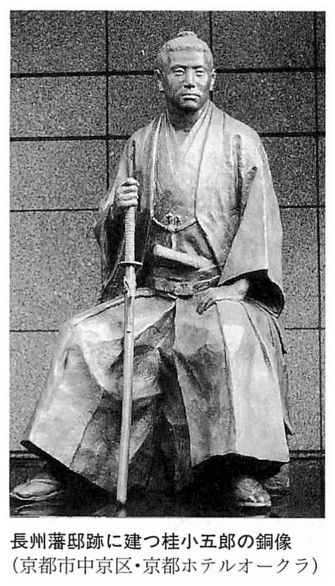
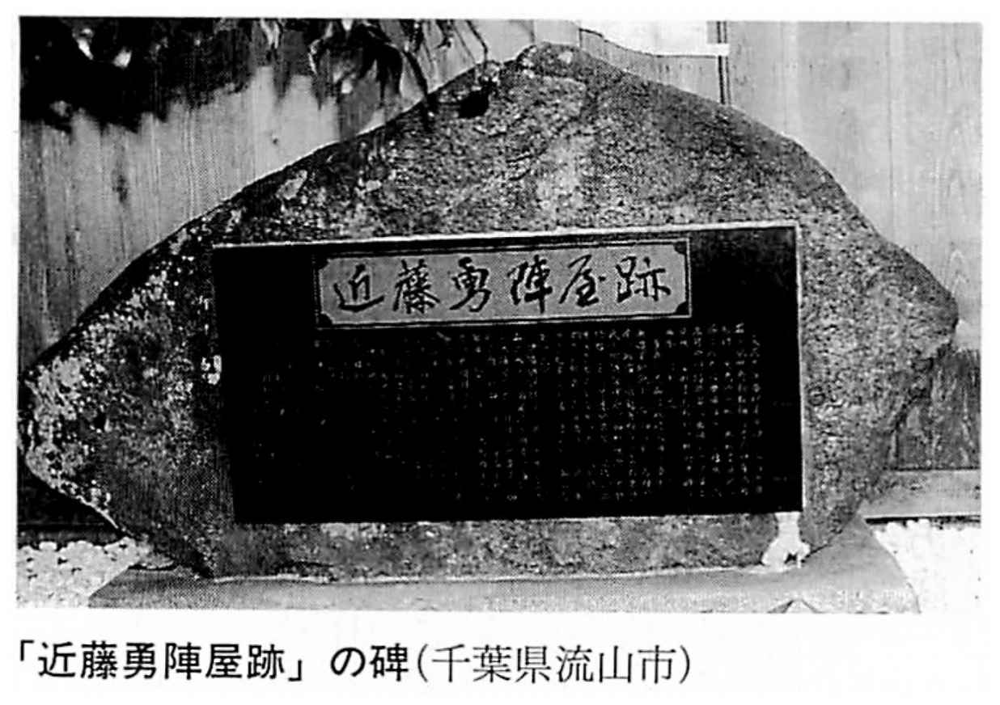
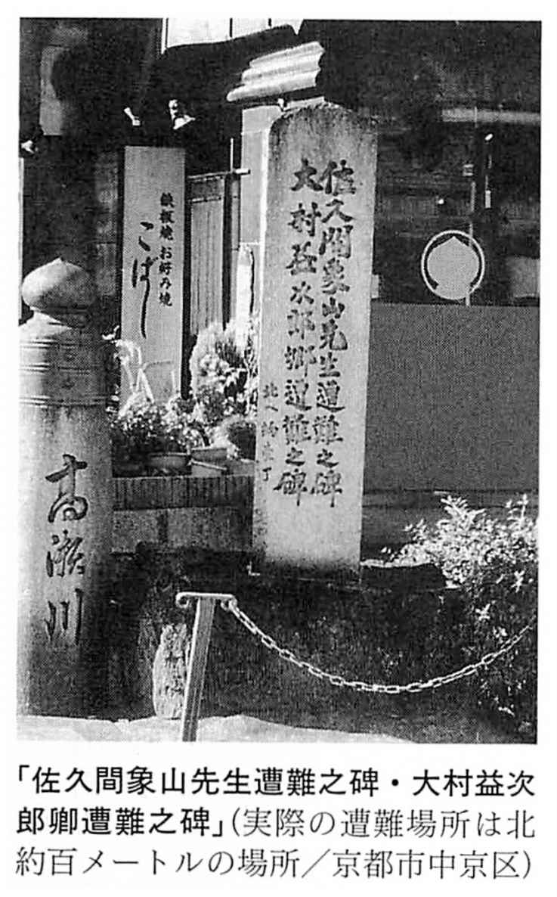

| 「幕末維新」がわかるキーワード事典 | |
| 川口 素生 | |

「幕末維新」がわかるキーワード事典
ペリー来航から西南戦争まで、激動の25 年が見えてくる
川口素生
三百年近くつづいた江戸幕府が倒れ、新政府が発足した幕末維新期は、端的にいえば「激動の時代」でした。
私たちが一度は耳にしたことのあるような、事件や戦乱などの出来事が相次ぎ、個性と魅力にあふれる英雄、偉人が次々と登場しました。
さて、この『「幕末維新」がわかるキーワード事典』では本文を一〇〇の項目に分け、 嘉 永 六年（一八五三）のペリー来航から明治十年（一八七七）の西南戦争にいたる間の、重要な事件、戦乱などをとり上げて解説を行ないました。また、それらに深く関わった重要人物もとり上げて略歴を紹介しました。もちろん、文久三年（一八六三）の新選組の母体である浪士隊の 上 洛 から 慶 応 四年（明治元年／一八六八）の 下 総 流山（千葉県流山市）での近藤勇と 土 方 歳 三 との離別、そして 箱 館 五 稜 郭 （北海道函館市）での歳三の討死にいたるまでの、新選組の隊士たちの活躍にも頁を割きました。
その一方で、公武合体論や「 船 中 八 策 」などの政治上の用語や運動、安政の大地震、「ええじゃないか」などの天災や社会現象に関する項目も立て、解説を行なっています。
巻末には資料編として、幕末維新略年表、主要参考文献一覧を付しました。
本書は必ずしも最初から読まなくても、読者の方々が関心をもたれた項目から読んでも容易に理解できるように、各項目ごとに内容を工夫しました。
本書を手にとってお読みいただければ、幕末維新という時代の素晴らしさがきっとご理解いただけるものと思います。
なお、本書の執筆に際しては主要参考文献一覧の他にも、数多くの先学の業績のお世話になりました。
そして、本書の出版に際しては、ＰＨＰ研究所の根本騎兄氏、並びに編集を担当された伊藤秋夫氏に大変お世話になりました。末筆ながら、お世話になった方々に衷心より御礼を申し上げる次第です。
平成十五年十二月
川口素生
「幕末維新」がわかるキーワード事典 目次
目次
黒船 ／ アヘン戦争 ／ ヴィレム二世の開国勧告 ／ 海防論
ペリー再来航 ／ 日米和親条約 ／ 阿部正弘 ／ 吉田松陰密航未遂事件
安政東海地震・安政南海地震 ／ 安政江戸大地震 ／ 藤田東湖 ／ 鯰絵
海軍総裁・海軍奉行 ／ 軍艦奉行 ／ 長崎海軍伝習所 ／ 神戸海軍操練所 ／ クルチウス
ハリス ／ 日米修好通商条約 ／ 岩瀬忠震 ／ アロー号事件
井伊直弼 ／ 大老 ／ 尊皇攘夷 ／ 橋本左内 ／ 吉田松陰
ロシア軍艦対馬占拠事件 ／ 対馬藩 ／ 小栗忠順 ／ オールコック
島津久光上洛 ／ 大原重徳 ／ 幕政改革の勧告 ／ 島津久光
政事総裁職 ／ 将軍後見職 ／ 松平慶永（春嶽） ／ 徳川慶喜
千歳丸 ／ 太平天国の乱 ／ 御殿山 ／ イギリス公使館焼討事件
等持院 ／ 足利氏三代木像梟首事件 ／ 三輪田元綱 ／ 小室信夫
徳川家茂上洛 ／ 加茂・石清水行幸 ／ 徳川家茂 ／ 小笠原長行
天誅組の変 ／ 中山忠光 ／ 吉村寅太郎 ／ 生野の変 ／ 平野国臣
芹沢鴨派 ／ 大坂力士乱闘事件 ／ 大和屋襲撃事件 ／ 芹沢鴨粛清事件 ／ 芹沢鴨
『海防八策』 ／ 彦根遷都計画 ／ 佐久間象山暗殺事件 ／ 佐久間象山
長州藩主父子復権運動 ／ 禁門（蛤御門）の変 ／ ドンド焼け ／ 来島又兵衛
長州藩外国艦船砲撃事件 ／ 四国艦隊下関砲撃事件 ／ 賠償金問題
坂本龍馬 ／ 薩長同盟 ／ 木戸孝允（桂小五郎） ／ 西郷隆盛
物価高騰 ／ 江戸の打ち毀し ／ 大坂の打ち毀し ／ 武州一揆
討幕の密勅（慶応の密勅） ／ 西南雄藩 ／ 薩土同盟 ／ 薩長芸三藩の出兵同盟
近藤勇暗殺未遂事件 ／ 伏見奉行所 ／ 篠原泰之進 ／ 松本良順
鳥羽伏見の戦い ／ 戊辰戦争 ／ 東征大総督 ／ 有栖川宮熾仁親王
甲陽鎮撫隊 ／ 甲斐勝沼の戦い ／ 永倉新八離脱事件 ／ 近藤勇斬首事件
第二奇兵隊 ／ 備中浅尾騒動 ／ 世良修蔵暗殺事件 ／ 仙台藩
蝦夷地共和国（榎本政権） ／ 宮古沖海戦 ／ 箱館戦争 ／ 榎本武揚 ／ 土方歳三 ／ 大鳥圭介
浦上崩れ ／ 浦上キリシタン弾圧事件 ／ 大浦天主堂
日田一揆 ／ 大楽源太郎 ／ 愛宕通旭事件 ／ 宇治山田一揆
苦力 ／ 「マリア＝ルーズ号」事件 ／ 廃娼運動
民選議院設立建白 ／ 大阪会議 ／ 伊藤博文 ／ 井上馨 ／ 板垣退助
私学校 ／ 火薬庫襲撃事件 ／ 西郷隆盛暗殺未遂事件 ／ 大山綱良
装丁――倉田明典
装画――「浪華安治川外国館真写之図」〈小信〉（マスプロ美術館蔵）
江戸幕府や諸藩による政治体制が動揺した末に崩壊し、新政府が成立してその基盤が整うまでの期間を、幕末維新期と呼んでいる。
幕末維新期のはじまりや終わりについてはさまざまな説があるが、通常は 嘉 永 六年（一八五三）のペリー来航から、大政奉還、王政復古を経て、明治十年（一八七七）の西南戦争までとされることが多い。このうち、ペリー来航から大政奉還、すなわち幕府の倒壊までが十五年間で、 慶 応 四年（明治元年／一八六八）の江戸無血開城から西南戦争までが十年間である。
つまり、幕末維新期というのは時間的には四半世紀なのであるが、この期間は長い日本の歴史のなかでも最大の歴史変革の時期であり、社会が前近代から近代へと変換する画期（エポック）であると共に、政治、経済、文化などの全ての分野に及ぶ全般的変革（トータル・レボリューション）の時期でもあった。この全般的変革を招来した要因は、一つは商品経済の発展などに起因する江戸幕府や諸藩による政治体制の矛盾であり、もう一つはペリー来航以後の欧米諸国による外圧であった。
さて、日本人は歴史好きな国民であるが、なかでもこの幕末維新期は（戦国時代と共に）日本人が好きな時代、時期の一つであり、研究対象でもある。何よりも、幕末維新期は今から百数十年前であっただけに、大名、幕臣、志士、あるいは政治家、軍人といった人々の手紙、日記などが大量に現代に伝えられている。そして、自宅に幕末維新期の手紙や日記、もしくは志士や政治家、軍人らの書画、遺品などの「お宝」を所蔵している方もすこぶる多い。
ところで、いったい、幕末維新期とはどんな時代であったのだろうか？ それは、政治的には、二百数十年にも及んだ旧来の政治体制が崩壊して近代日本が誕生した時期なのであるが、この崩壊、誕生に際しては幕府、諸藩のみでなく国民全員が大変な苦しみを経験した。具体的にはペリーら外国の黒船来航が対外的な危機を増幅させたことから、開国などの問題に関して朝廷、幕府、諸藩、あるいは志士たちが激しい対立、抗争を繰り広げた。そういったなかから、 尊 皇 攘 夷 運動や公武合体運動が展開され、尊皇攘夷運動から討幕運動が生まれた。
その一方で、幕末維新期はまた、個人が活躍した時代でもあった。それまでの、江戸幕府や諸藩による政治体制のなかでは到底活躍の機会を得られなかった浪士や領民が、幕府や諸藩、さらに朝廷の重要なことがらに参画するようになったのもこの時期である。多摩の領民から新選組の幹部となった近藤勇や 土 方 歳 三 、土佐（高知県）の 郷 士 で薩長同盟締結や大政奉還に関係した坂本龍馬などはその代表例といえよう。
個人がもてる才能を十二分に発揮できた時代――端的にいえば、幕末維新期とはそういう時代だったのである。
黒船の日本への来航が活発化する一方、隣国の 清 国 （中国）ではアヘン戦争が起こった。幕閣はオランダ国王の開国勧告を無視したが、知識人の間では 海 防 論 が主張された。
戦国時代から江戸時代初期は 南 蛮 船 、洋式の外国船をこのように呼んだ。幕末には日本に来航した欧米の軍艦を黒船と呼んだ。船体を黒く塗ったものが多く、幕末でも初期のものは船体の両側に一対の外輪をもち、蒸気で回転させて推進力としていた。のちには、スクリュー式のものが普及し、速力は一段と増した。すでに、文化十四年（一八一七）、 文 政 元年（一八一八）、文政五年、文政七年などにイギリスの黒船が江戸湾や鹿島灘に出没しており、文政七年には上陸したイギリス人船員を水戸藩が追い払っている。翌文政八年には幕府が異国船打払令（ 無 二 念 打払令）を発し、黒船をすぐに打ち払うように諸藩に命じている。ペリー来航以後、黒船は欧米の日本への圧力の象徴的存在となるにいたる。
天 保 十一年（一八四〇）から天保十三年の間、アヘン問題をめぐって清国（中国）とイギリスの間で勃発した戦争。
イギリスの東インド会社は毛織物・綿織物の対清輸出ののびなやみを打開するべく、清国へのアヘンの輸出をはじめた。しかし、多量の銀がアヘンの代金として清国から流出。清国では貨幣流通システムが崩壊する一方、アヘン中毒患者が激増し、社会問題化した。事態を憂慮した清王朝は天保十年、 広 東 でイギリス人の貿易商などから大量のアヘンを押収して処分する。
イギリスは状況を打破するべく、武力行使を開始。清王朝の軍隊を次々と敗り、清王朝に 南 京 条約の締結を強いた。条約は香港割譲、 上 海 など五港開港、領事裁判権などを定めたものである。清国の半植民地化は決定的となり、このことは幕末の日本の知識人たちに大きな衝撃を与えた。
オランダ国王が幕府に行なった開国勧告。オランダは西欧諸国で唯一、日本と国交があったが、オランダ国王・ヴィレム二世は 弘 化 元年（一八四四）、アヘン戦争後の国際情勢を日本に通報。イギリスなど欧米列強がアジアへの侵略を企てていることを伝えると同時に、列強の侵略を防ぐために日本が進んで開国すべきであると勧告した。しかし、この勧告を受け取った当時の幕閣は適切な状況判断ができず、ヴィレム二世の好意を無にしてしまうという失態を演じてしまった。
海外情勢や黒船の来航などに刺激され、知識人らを中心に行なわれた国防、沿岸警備、 北 辺 開拓に関する論議。初期の海防論はロシアの南下を憂慮するもので、 工 藤 平 助 、 林 子 平 、本多利明らが北辺警備と 蝦 夷 地 開拓を主張した。その後、黒船来航が恒常化するなかで佐藤 信 淵 、高橋 景 保 、佐久間 象 山 らが独自の海防論を展開。幕末には水戸藩で水戸学の立場から海防論が主張され、尊皇攘夷・佐幕の立場からも主張された。
嘉 永 六年、アメリカのペリーが黒船を率いて三浦半島の 浦 賀 に来航。開国を要求した。黒船の脅威に接した幕閣は無視できず、回答を一年先送りするのがやっとであった。
アメリカの東インド艦隊司令長官・ペリーが行なった外交上の要求。ペリーは小笠原諸島（東京都小笠原村）を経て、嘉永六年（一八五三）六月に浦賀（神奈川県横須賀市）に来航。九日に 久 里 浜 （同）に上陸し、
①日本沿岸で遭難したアメリカの船員の保護。②船舶への 薪 水 、食糧の補給港の設定。③日本の開国、日米両国間の通商（貿易）の開始。
の三点を江戸幕府に要求した。①と②は人道的な問題であるが、③は鎖国を 祖 法 とする幕府の路線とは 相 容 れない要求で、幕閣内での議論は紛糾した。しかし、ペリーは大砲を積んだ黒船（軍艦）四隻を率いており、従来のように打ち払うことや、無視することは到底できない。幕閣は回答を一年猶予してほしいとペリーに打診。問題を先送りした。
現在の神奈川県横須賀市浦賀。三浦半島の先端部に位置し、戦国時代には戦国大名・ 後 北 条 氏 が水軍の基地を置いたほどの重要地点。江戸時代中期に江戸幕府が浦賀奉行を派遣して 廻 船 を監視させた。 干 鰯 （肥料用の干魚）の集積地として栄えたが、文化十四年（一八一七）、文政元年（一八一八）、文政五年などにイギリスの黒船がこの浦賀に来航（前項参照）。
嘉永六年にペリーが黒船（軍艦）を率いて浦賀に来航。開国を要求し、一躍浦賀の地名は日本中に知れ渡り、見物客も来たという。 安 政 元年（一八五四）、幕府が造船所を設置。維新後も海軍関係の造船所が置かれ、造船の町として栄えた。
【......ペリー（Matthew Calbraith Perry）......】
寛政六年（一七九四）～安政五年（一八五八）。アメリカ海軍の提督。海軍に入り、当時は帆船であったアメリカの軍艦に蒸気機関を搭載することにとり組み、これに成功。功績を認められ、アメリカの東インド艦隊司令長官に抜擢され、嘉永六年（一八五三）に軍艦「サスケハナ号」など四隻を率いて浦賀に来航。日本に開国を要求した。
江戸幕府が回答の猶予を求めたため、いったん、清国（中国）に移動。翌年、 遣 日 特別大使にも併任されて江戸の品川沖に再来航し、日米和親条約を締結。日本の鎖国を打破することに成功している。
現在の沖縄県。琉球は慶長十四年（一六〇九）、
 摩
藩（島津氏）の侵略を受け、同藩の強い影響下に置かれる一方、
明
王朝、次いで
清
王朝（以上、中国）と
冊
封
関係をつづけた。ペリーは二度の日本来航の前後、
薪
水
の補給などを名目に琉球や小笠原諸島に立ち寄ったが、このとき、ペリーの要求に屈するかたちで琉球はアメリカとの間に修好条約を結んでいる。
摩
藩（島津氏）の侵略を受け、同藩の強い影響下に置かれる一方、
明
王朝、次いで
清
王朝（以上、中国）と
冊
封
関係をつづけた。ペリーは二度の日本来航の前後、
薪
水
の補給などを名目に琉球や小笠原諸島に立ち寄ったが、このとき、ペリーの要求に屈するかたちで琉球はアメリカとの間に修好条約を結んでいる。
なお、明治維新後、新政府は琉球処分と呼ばれる政治手続を断行。琉球を琉球藩とし、琉球王・ 尚 泰 の実権を奪い、王国を強制的に解体に追い込んでいる。
遣 日 使節として来日したプチャーチンは津波で乗艦が破損。他方では、クリミア戦争も勃発し、困難な活動を強いられた。しかし、粘り強い交渉の末、条約締結に成功する。
【......プチャーチン（Evfimii V asilievich Putyatin）......】
享 和 三年（一八〇三）～明治十六年（八三）。ロシア海軍提督。ロシア皇帝の侍従武官長（海軍中将）の時、ロシア艦隊司令長官兼遣日使節に指名される。作家のゴンチャロフを特別秘書として雇い、アフリカ経由の長い航海の末に、小笠原諸島（東京都小笠原村）に立ち寄った後、嘉永六年（一八五三）七月に長崎に来航。
ところで、これより先、ロシアは 寛 政 四年（一七九二）にラックスマンを遣日使節として 蝦 夷 地 の根室（北海道根室市）に派遣するなど、早くから開国を迫っていたのであるが、結局、アメリカのペリーに一ケ月遅れるかたちとなった。プチャーチンは国境画定、開国通商を促す国書を手渡し、本格的な交渉に入ろうとしたが、その矢先にクリミア戦争が勃発。日本近海にいた欧米列強の軍艦から攻撃を受ける可能性があったため、いったん、長崎を退去。翌年（安政元年／一八五四）九月十八日、プチャーチンは突如、大坂天保山沖に現れて京都の朝廷、公家を慌てさせた。
この前後、蝦夷地の箱館（北海道函館市）、伊豆下田（静岡県下田市）と各港を転々としつつ、日本側の全権・ 川 路 聖 謨 （勘定奉行兼海防掛）、 井 戸 覚 弘 （元江戸の町奉行）らと粘り強く交渉を重ね、安政元年に日露和親条約、同四年に追加条約、同五年に日露修好通商条約を締結することに成功。帰国後、海軍大将・元帥に昇進。文部大臣や国会議員などを歴任した。
エルサレムの管理権をめぐっての嘉永六年（一八五三）から安政三年（一八五六）までのロシアとオスマントルコとの戦争。開戦の翌年、ロシアの勢力拡大を危惧したイギリス、フランス、サルデーニャ（イタリア）などがオスマントルコに加担し、黒海に突き出たクリミア半島のロシア側の要塞・セヴァストポリを攻撃した。
セヴァストポリの攻防戦では、寄せ手が高地に陣取り、砲撃を行なって要塞を骨抜きにしたが、この戦法は日露戦争の 旅 順 要塞攻防戦で採用されている。また、この戦争ではイギリス人のナイチンゲールが多数の看護婦を率いて、敵味方の隔てなく看護をしたことで名高い。
一八五六年、関係国はパリで講和条約を締結。戦後、ロシアでは大改革が開始された。なお、ロシアとトルコは一八七七年から翌年にかけてもキリスト教徒の扱いをめぐって交戦（ 露 土 戦争）。この時はロシアが勝利を収めた。
【......ゴンチャロフ（Ivan Aleksandrovich Goncharov）......】
文化九年（一八一二）～明治二十四年（九一）。ロシアの作家。嘉永六年（一八五三）、遣日使節として派遣されるプチャーチンに特別秘書として随行。日本側との和親条約、国境画定、通商交渉などの談判に参加。その際の模様や、長崎や江戸の景観を『日本におけるロシア人』（『日本滞在記』〔異国叢書〕所収）に、「どこを見ても一場の絶景であり。一幅の絵である」などと、全体的にみて日本に好意的に、かつヴィヴィッドに書き留めている。帰国後はロシア文壇で活躍し、『オブローモフ』などの作品を残した。
ペリーは安政元年、多数の軍艦を率いて江戸湾に再来航する。時の老中首座・阿部正弘は鎖国の方針を転換し、日米相親条約に締結。この時、志士の吉田 松 陰 が外国への密航を企てた。
いったん、浦賀を去ったペリーは、翌年（安政元年／一八五四）の年明け早々、七隻の軍艦を率いて今度は江戸湾にやってきた。幕府は前年同様、浦賀で応接する旨を伝えたが、ペリーはこれを無視。七隻の軍艦に恐れをなした幕府はやむなく、神奈川（横浜市）で応接することとした。
ペリーの上陸地点は現在の横浜開港資料館の付近の地といわれている。当初、日本側全権の林 復 斎 などは、「 高 が知れたる 夷 狄 の 輩 」とアメリカを甘くみていたが、交渉の方は終始、七隻の軍艦を擁するペリーのペースで進んだ。復斎ものちには、ペリーのいう通りにしなければ、「御大事に及ぶべし」と主張するという体たらくであった。そして、三月三日に日米和親条約（別名神奈川条約）が締結される。状況分析に長けたペリーは、この時は日本側の抵抗が予想される貿易に関する規定を強いて要求しなかった。
安政元年（一八五四）に幕府がペリーと締結した条約。別名は神奈川条約。この条約には伊豆下田（静岡県下田市）、箱館（北海道函館市）へのアメリカ船の寄港、両港での物資の買い入れの許可、漂流民の保護、 薪 水 食料の供与、下田へのアメリカ領事館の設置などを規定していた。アメリカ側の物資の買い入れは日本側の役人の手で行ない、日本商人からの直接買付は禁止されていた。
なお、条約に基づき、初代領事・ハリスが下田に着任する。同年（安政元年）五月、条約の付録（下田条約）が締結され、細かい規定がなされた。さらに、安政四年の日米約定により開港の準備はほぼ整った感があったが、 最 恵 国 待遇などの面で問題が生じることになる。最恵国待遇とは二国間の条約において、締結国の一方が残る一方の国民に対し、もっとも有利な地位にある第三国（最恵国）に与えるのと同等の待遇を与えることを指す。最恵国待遇は当事国が約款を締結することにより生じるが、特に関税において効力を発揮する。外交に不慣れな日本は最恵国待遇などの面で将来に禍根を残した。
文政二年（一八一九）～安政四年（五七）。 備 後 福山藩（広島県福山市）主、 老 中 首 座 。伊勢守。号は 裕 軒 。兄の隠居後に福山藩十万石を相続。寺社奉行を経て、二十五歳で幕府老中に就任。弘化元年（一八四四）からは勝手掛（財政担当）、海防掛の一員となった。翌年、水野 忠 邦 に代わって老中首座となる。
嘉永六年（一八五三）、ペリーが浦賀に来航するや、海外情勢を朝廷に奏聞、諸大名や旗本に諮問を行なって国論の統一を計りつつ、内外の情勢を鑑み開国を決意。安政元年にペリーが再来航した際、交渉担当者に適切な指示を行ない、日米和親条約締結の素地をつくった。また、水戸藩主・徳川 斉 昭 らを幕政に参画させ、洋学所や長崎海軍伝習所を創始する一方、公家や大名とは協調路線を模索し、幕政の安定に貢献した。三十九歳で急死して、内外から惜しまれた。
安政元年の吉田松陰らによる密航未遂事件。前回（嘉永六年）、ペリーが艦隊を率いて浦賀へ来航した時、江戸にいた吉田松陰は洋学者・佐久間 象 山 の一行と共に浦賀へ急行。黒船（軍艦）を実見し、その威容に感嘆。同時に、黒船と戦うことの非も痛感した。この日を境に、松陰は海防を怠ってきた幕府や、それに追従する御用学者たちと決別した。
象山から西洋見聞の必要性を説かれた松陰は、密航を計画。この年（安政元年）、再来航したペリーが伊豆下田へ寄港した機会を捉え、松陰は弟子の金子 重 輔 と共に小舟を漕ぎ出し、ペリー艦隊の軍艦に乗り込もうとした。外交問題に発展することを恐れたペリーが二人を岸に送り返したために、密航は失敗。二人は自首し、郷里の 萩 （山口県萩市）へ護送され、 野 山 獄 に収監された。護送中に病を得た重輔は獄死。松陰は翌年末に赦免され、叔父の家塾・ 松 下 村 塾 を継ぐことになる。
阿部正弘、堀田 正 睦 らの主導のもと、 安 政 の幕政改革が断行され、人材登用や 海 防 強化などの政策が試みられた。しかし、安政の大地震などにより改革は頓挫を強いられる。
安政期（一八五四～五九）の幕府の政治改革。安政二年（一八五五）以降、幕府では老中首座の阿部 正 弘 、さらに堀田 正 睦 が幕政改革を提唱した。具体的には、旧弊にとらわれない人材登用、開国に備えての海防の強化などを企図した諸政策が行なわれた。これより先、幕府は嘉永六年（一八五三）に前水戸藩主・徳川 斉 昭 （徳川 慶 喜 の父）を幕政の海防参与としたが、斉昭は自分の意見が反映されないことに腹を立てて辞任していた。正弘は斉昭と対立していた老中二人を罷免。改革案三十七ケ条を斉昭や他の幕閣に呈示し、協力を求めた。三十七ケ条は人材の登用、経費節減、海防強化などを眼目としていた。正弘はこの方針に基づき、安政二年に長崎に長崎海軍伝習所、翌年には江戸に 講 武 所 を設置した。
また、洋書の翻訳を促すべく、洋学所（のちの 蕃 書 調 所 ）を設置。さらに、 伊 豆 韮 山 （静岡県韮山町）代官・江川 英 敏 （太郎左衛門 英 龍 の子）に大砲鋳造に不可欠な反射炉構築を急がせた。
人材登用の面では、 川 路 聖 謨 、井上清直、岩瀬 忠 震 、永井 尚 志 、筒井 政 憲 らが外国奉行や江戸の町奉行などに抜擢され、それぞれ活躍している。
ところが、安政二年十月の安政の大地震の復旧事業に多大な支出を強いられたこと、老中首座を辞任した正弘と斉昭との間に意見の食い違いが生じたことから、改革は行き詰まる。安政四年六月、正弘が急死し、改革は完全に頓挫してしまった。
幕府が幕臣の軍事教育のために設置した機関。安政元年に設置が決定され、安政三年に江戸の築地に開校。初代頭取は幕臣、剣客の 男 谷 精 一 郎 で、軍艦教授所（軍艦操練所）が設置された頃には 勝 海 舟 （精一郎の従弟）、村田 蔵 六 （大村 益 次 郎 ）、高島 秋 帆 らも教鞭を執っていた。教科は剣術、槍術、砲術に分かれていたが、急がれていた西洋式軍事教育が開校当時は間に合わずに批判を受けた。
幕府海軍の整備が急ピッチに進められたのに比べると、幕府陸軍の指揮官養成を求められた講武所は旧態依然としていたといえる。のち、講武所は陸軍所と改称。講武所の幹部は陸軍奉行 並 や遊撃隊頭取に再編成されていく。
幕府が洋学研究のために設置した機関。幕末維新期には西洋の学問を洋学と呼んだが、安政二年に幕府は洋学研究を目的とした機関・洋学所を江戸の九段下に設置。同四年に蕃書調所と改称したが、幕府崩壊までの間に洋書調所、開成所と改称をつづけている。
蕃書調所では洋書の翻訳を行なうと同時に、外交文書の翻訳や、海外情勢の分析などを行ない、また洋学に通じた人材の育成を目指した。教授陣には 箕 作 阮 甫 、杉田 成 卿 らが蘭学を主に英学を講じ、のちにはフランス・ドイツ・ロシアの言語、学問も加わり、外国語、自然科学、兵学など八学科の総合研究・教育機関に発展した。初期は幕臣のみに入学を許していたが、やがて諸藩の藩士や領民も入学を許される。この間の教授陣や学生のなかには幕末維新期や明治時代に活躍した者がすこぶる多い。
明治二年（一八六九）、新政府に移管された後、大学 南 校 を経て、明治十年に東京大学が設立される。
寛政十二年（一八〇〇）～万延元年（六〇）。水戸藩主。 諡 は烈公。第十五代将軍となる徳川慶喜の父。藩主就任後、藤田 東 湖 、会沢 安 （ 正 志 斎 ）らを藩政に登用。弘道館を設置し、藩政改革にも成功。海防には特に熱心にとり組み、独自に鉄砲隊を組織するなどしたが、幕府に疑われて謹慎を命じられる。赦免後、幕府海防参与に就任。老中首座・阿部正弘の行動に理解を示したが、ペリー来航後は攘夷論を主張するなど意見を異にした。
安政五年、大老・井伊 直 弼 が 勅 許 を得ぬまま日米修好通商条約に締結すると、当時は一橋徳川家当主であった慶喜らと共に抗議したが、 不 時 （無断）登城を理由に幽閉される。失意のなかで死去した。
安 政 年間には諸国で地震が多発。安政元年十一月に東海、南海を、翌年十月には江戸一帯を大地震が襲い、家屋の倒壊や焼失、津波により数千人規模の死者を出す。
【...... 安 政 東海地震・安政南海地震......】
安政元年（一八五四）十一月に東海、南海地方を中心に二日にわたって起きた大地震。安政元年十一月四日、遠州灘を震源とするマグニチュード８・４の大地震が発生（安政東海地震）。地震の揺れによる被害は、特に 駿 河 沼津（静岡県沼津市）から伊勢湾にかけてがひどかった。また、房総半島から四国の太平洋沿岸を襲った大津波の被害も甚大であった。倒壊、焼失した建物は三万戸以上、死者は二千人から三千人という。なお、この安政東海地震の発生から一世紀半の年月が経過しようとしているが、『理科年表』（最新版）には、「次の東海地震の発生が心配されている」と記されている。
安政東海地震の翌日（十一月五日）、今度は土佐沖を震源とするマグニチュード８・４の大地震が発生（安政南海地震）。地震の揺れによる被害は特に近畿でひどかったが、土佐の室戸岬（高知県室戸市）、紀伊半島の串本（和歌山県串本市）では地表が一メートル隆起。逆に、大阪港などで同じく地表が一メートル沈下した。前日を上回る大津波が太平洋沿岸を襲い、やはり甚大な被害があった。津波の高さは串本で十五メートルであったとされる。前日の地震との峻別が難しいが、死者は数千人に及んだものと考えられる。
安政二年十月二日に関東を中心に起こった大地震。同日、今度は江戸川下流を震源とするマグニチュード６・９の大地震が発生（安政江戸大地震）。地震の規模は大きくなかったが、直下型であったことから、江戸の下町で甚大な被害があった。倒壊、焼失した建物は約一万四千戸で、江戸市中では揺れの後に約三十ケ所から出火。二・二平方キロメートルが焼失したとされる。死者は四千人以上といわれる。水戸では建物の倒壊により儒者の藤田 東 湖 、戸田 蓬 軒 らが圧死した。
江戸開府以来、最大規模の地震であったことから、江戸の政治、経済活動を完全にマヒさせてしまう。また、市中では社会不安が募り、地震を報じた瓦版や 鯰 絵 が 頒 布 された。
文化三年（一八〇六）～安政二年（五五）。水戸学の儒者。水戸藩士。 幽 谷 の子で、藩の歴史編纂機関・ 彰 考 館 の総裁代理などをつとめた。下級藩士を代表し、徳川 斉 昭 の藩主擁立を画策。斉昭の藩主就任が実現すると、その側近として重用され、藩政改革に参画した。しかし、藩内の保守派と対立。斉昭が幕府から一時、謹慎を命じられた際は東湖も蟄居を経験した。斉昭が赦免されると、東湖は側用人となり、特に海防問題に功績を残した。
東湖はまた、横井 小 楠 、橋本 左 内 、西郷隆盛といった思想家・志士らと交遊。尊皇派志士の指導者的地位を占めるにいたったが、安政江戸大地震で圧死した。著書に『回天詩史』などがある。なお、水戸天狗党に参加する藤田 小 四 郎 （信）は東湖の四男である。
安政江戸大地震の直後に大量出版された 錦 絵 版画。地震の発生前、地下水や地中を流れるわずかな電流に乱れが起き、これに敏感な動物が異常な行動をとるという説がある。地震の科学的メカニズムの研究がほとんど行なわれていなかった当時、地震の発生を、地底に棲む大ナマズの仕業と説く者が現れる。やがて、地底に棲む大ナマズが大暴れをし、それに伴い地表の人間が被害をこうむる構図の絵画が江戸で頒布された。これを鯰絵という。社会不安の募る当時、江戸ッ子たちのなかには真剣な面持ちで買い求める者もあったという。
現在、鯰絵は国内にも若干伝えられているが、来日した外国人が買い求めて帰国の際にもちかえった例も多かった。オランダの国立ライデン民族学博物館には多数の鯰絵が所蔵されており、研究者から高い評価を受けている。
なお、安政五年には伝染病の 虎 狼 刺 （ 虎 列 拉 ／コレラ）が大流行し、江戸で四～五万人が死亡したといわれるが、この時もコレラ除けの護符などが高値で売買されたといわれる。
商館長・クルチウスの助力を得た幕府は海軍創設に着手し、長崎海軍伝習所、神戸海軍操練所を設置して人材育成を目指した。のちに、海軍総裁などの職が置かれた。
共に幕末期の幕府海軍の職名。海軍総裁は幕府海軍を統括する役職。慶応二年（一八六六）十二月の設置。江戸城内の席次は総裁が若年寄の次、補佐役の海軍副総裁が若年寄並の次。将軍直属の職で当初は老中格・稲葉 正 巳 が兼任。慶応四年の 鳥 羽 伏 見 の戦いに敗れた後、軍艦奉行の 矢 田 堀 鴻 が昇格して就任したが、 閏 四月十日に鴻が辞任し、空席となった。実権は早くから副総裁の榎本 武 揚 が振った。
前後するが、海軍奉行は 元 治 元年（一八六四）、幕府海軍を統括する職として置かれた。慶応二年に海軍総裁が置かれると、その直属となった。役高は五千石、役料（勤務手当）は三百両で、陸軍奉行よりも上位に位置づけられた。
幕末期の幕府海軍の職名。安政六年に置かれた職で、軍艦の購入、建造、操艦教育などをつかさどった。幕府海軍の創設の実務面をつかさどったのはこの軍艦奉行である。役高は二千石。当初は若年寄直属で、慶応二年までには海軍総裁の直属となる。初代軍艦奉行は外国奉行・永井 尚 志 が就任。木村 芥 舟 （ 喜 毅 ）、矢田堀鴻、勝海舟らもこの職にあり、幕府海軍の創設に貢献した。
幕府が長崎に設置した海軍の教育機関。安政二年、長崎のオランダ商館長・クルチウスの尽力で、オランダの軍艦「スンビン号」（のちの「観光丸」）が幕府に献上された。これを機に、長崎目付・永井尚忘（のち木村芥舟）を責任者として、「スンビン号」の乗組員を雇用して幕臣の子弟を伝習生として受け入れる構想がもち上がった。これが実現し、長崎海軍伝習所が発足。実習は「スンビン号」改め「観光丸」で行なわれ、授業は長崎西奉行所を校舎にあてて行なわれた。
やがて、カッテンディーケら、専門的な知識をもった教官が迎えられるなど、伝習所は充実がはかられた。これに伴い、諸藩の藩士も伝習生に迎えるようになった。安政六年、幕府は長崎海軍伝習所を廃止したが、わずか四年間に矢田堀鴻、勝海舟、中島三郎助、小野友五郎（ 広 胖 ）らの有能な人材を世に送り出した。
幕府が神戸に設置した海軍の教育機関。文久三年（一八六三）、第十四代将軍・徳川 家 茂 が上洛した時、 摂 津 （大阪府・兵庫県）沿岸の海防の実態を視察したが、その際に軍艦奉行並・勝海舟が神戸の地への海軍操練所の建設を建言。この建言は採用された。責任者に就任した海舟は、弟子の坂本龍馬らに創設準備を担当させ、元治元年五月に神戸海軍操練所が発足した。発足に際して、大坂 船 手 を吸収し、長崎製鉄所を管轄下に置いた。実習は「観光丸」と「黒龍丸」の二艦で行ない、幕臣以外の諸藩の藩士も伝習生に受け入れた。
伝習は一年あまり行なわれたが、伝習生のなかに禁門の変に参加した長州藩士がいたことから、海舟が 罷 免 された。神戸海軍操練所も慶応元年（一八六五）三月に廃止されてしまった。伝習生のなかには、龍馬の他に、 伊 達 小次郎（ 陸 奥 宗 光 ／のち外務大臣）らがいた。
【......クルチウス（Jan Hendrik Donker Curtius）......】
文化十年（一八一三）～明治十二年（七九）。オランダの商館長。嘉永五年（一八五二）に長崎に着任。アメリカのペリーが艦隊を伴って来航することを、事前に幕府に伝えた。幕府が海軍創設を計画した際には、「スンビン号」の幕府への献上を実現させ、また長崎海軍伝習所を設置する際にも助力を惜しまなかった。日蘭和親条約の締結にも尽力。日本の言語、文化の研究者としても名高く、『日本文法稿本』などの著作もある。蔵書は現在、オランダのライデン大学に一括して収蔵されており、研究者に活用されている。
第十四代将軍の座をめぐり、幕府内は紀伊藩主・徳川 家 茂 を推す 南 紀 派と、 一 橋 家当主・徳川 慶 喜 を推す一橋派に分かれて抗争を重ねたが、井伊 直 弼 の登場で状況は一変する。
文 政 七年（一八二四）～安政五年（五八）。江戸幕府の第十三代将軍。第十二代将軍・ 家 慶 の四男。母は側室・ 跡 部 正賢の娘。幼名は政之助、 諱 ははじめ家祥。嘉永六年、父の死後に将軍に就任。生まれつき病弱で、自ら政務を処理することはなく、幕政の運営は老中首座・阿部正弘らに任せきりであった。また、家定は 世 子 （後継ぎ）には恵まれなかった。このことが、安政の将軍 継 嗣 問題へと発展。次期将軍に誰が据えられるかは、単に徳川将軍家内部の問題に留まらず、日本の将来を大きく左右する問題として、幕閣のみならず幕臣、大名、さらには公家や志士らの最大の関心事に発展する。そんななか、安政五年、 近江 彦根藩（滋賀県彦根市）主・井伊直弼が大老に就任。独断で紀伊藩主・徳川 慶 福 （家茂）を将軍世子に決定。同年、家定は没した。第十四代将軍には家茂が就任することになる。
安政将軍継嗣問題をめぐり大名らによって結成された派閥。紀伊藩主であった家茂を支持する一派を南紀派という。南紀派が形成されたのは嘉永六年以降といわれる。家茂は四歳で藩主に就任したことから、藩政の実権は家老で紀伊 新 宮 （和歌山県新宮市）領主の水野 忠 央 が握った。忠央こそ南紀派の首魁である。長く幕政の実権を握ってきた譜代大名の間には、慶喜が将軍に就任すると、これまで以上に 斉 昭 が幕政に口出しするのでは、と危惧を抱く声が上がる。他方、大奥でも斉昭の子の将軍就任を嫌う傾向があったという。要するに、譜代大名や大奥は、斉昭の子が将軍になることを避けるべく、少年藩主の家茂を支持したわけである。
安政四年、一橋派の中心人物・阿部正弘が急死。危機感を抱いた一橋派は老中・堀田 正 睦 、越前藩（福井市）主・松平 慶 永 （ 春 嶽 ）らが慶喜擁立を画策したが、逆に南紀派の猛烈な巻き返しが成功。幕閣、将軍側近、大奥、はては京都の公家にいたるまで、大部分が南紀派によって占められてしまう。
安政五年、譜代大名の期待を一身に受けるかたちで、井伊直弼が大老に就任。直弼は側近・長野 主 膳 義 言 の勧めなどもあり、家茂を将軍世子に擁立した。
安政将軍継嗣問題をめぐり大名、幕臣らによって結成された派閥。一橋家当主・徳川慶喜を支持する一派を一橋派という。一橋派は幕政の刷新を望む親藩大名、外様大名、さらには幕府の中堅官僚たちによって構成されていた。当初、中心人物は老中首座・阿部正弘であった。安政四年に正弘が急死した後は、松平慶永を中心に、阿波藩主・蜂須賀
斉
裕
（
家
斉
の子）、
摩藩主・島津
斉
彬
、伊予宇和島藩・伊達
宗
城
、土佐藩主・山内
豊
信
（
容
堂
）など、西南雄藩の
太
守
が慶永に賛同した。また、慶永の推薦で登用された
川
路
聖
謨
、
土
岐
頼
旨
、永井
尚
志
、岩瀬
忠
震
らの中堅官僚も一橋派に加わったり、理解を示したりした。
井伊直弼によって家茂擁立が断行されると、一橋派の大名、幕臣は処分を受け、不遇を強いられた。 万 延 元年（一八六〇）に直弼が桜田門外の変で横死。しかも、家茂が若年であり、内外に問題が山積していた。
やがて、朝廷の勧めもあり、一橋派の面々も徐々に赦免され、幕政に登用されるようになった。具体的には、慶永が政事総裁職、慶喜が将軍後見職に就任。家茂の死後の慶応二年、慶喜が第十五代将軍に就任する。
御三家は徳川将軍家の一族で、尾張藩（名古屋市）、紀伊藩（和歌山市）、 常陸 水戸藩（水戸市）の三藩をいう。尾張藩（六十一万石）は徳川家康の九男・ 義 直 、紀伊藩（五十五万石）は家康の十男・ 頼 宣 、水戸藩（三十五万石）は家康の十一男・ 頼 房 を祖とする。親藩のなかでも別格の扱いで、江戸城内での席次は大廊下上部屋で、将軍から諸大名を上回る待遇を与えられた。
発足当初は将軍家の血統の保持と、幕政補佐の役目をもっていたとされる。歴代将軍のうち、第八代・吉宗、第十四代・家茂（慶福）は紀伊藩から、第十五代・慶喜は水戸藩から一橋徳川家（後述）を経て将軍に就任している。また、幕末期の水戸藩主・徳川斉昭（慶喜の父）のように、幕府海防参与として幕政補佐を行なった例もある。
御三卿は徳川将軍家の一族で、一橋家、 田 安 家、清水家の三家をいう。三家の当主が諸省の 卿 に任ぜられるのを通例としたので、三卿と称した。江戸時代中期には徳川将軍家と御三家との関係が疎遠となりつつあった。そこで、紀伊藩から第八代将軍に就任した吉宗は次男・ 宗 武 に田安家、四男・ 宗 尹 に一橋家、第九代将軍・ 家 重 （吉宗長男）は次男・ 重 好 に清水家をそれぞれ創始させ、御三卿とした。一橋徳川家・田安家・清水家は十万石と、邸宅とを与えられた。
歴代将軍のうち、第十一代・家斉（一橋家の治済長男）、慶喜の二人は一橋徳川家から将軍に就任している。御三卿が置かれるようになると、幕末に斉昭が幕府海防参与となったのを例外として御三家の血統保持、幕政補佐の役目は薄れてしまった感がある。
伊豆下田にアメリカの総領事・ハリスが着任し、日米 修 好 通商条約の締結を迫った。日本側の代表・岩瀬 忠 震 らはアロー号事件勃発の報に接し、開国の必要性を感じていた。
【......ハリス（Townsend Harris）......】
文政元年（一八〇四）～明治十一年（七八）。アメリカの外交官、初代駐日総領事。商人としてアジア各地に滞在。識見を認められ、駐 寧波 （ 清 国 ）領事を経て、安政二年（一八五五）に初代駐日総領事に抜擢され、伊豆下田（静岡県下田市）に着任。玉泉寺を総領事館とした。
下田奉行・井上清直、目付・岩瀬忠震ら日本側の代表と交渉の末、安政五年に日米修好通商条約を締結。ところで、幕府は江戸の武士や町民に動揺を与えないためにハリスを下田に封じ込める方針であった。しかし、この間、幕府側の引きのばし戦術にしびれをきらしたハリスが江戸に強引に出府して強談判を迫り、幕府側を慌てさせるという一幕もあった。のちに、特命全権公使となり、文久二年（一八六二）に帰国した。なお、ハリスとのロマンスがとり沙汰されている 唐 人 お吉は看病のために三日間雇われただけであったという。
安政五年六月十九日に江戸幕府がハリスと結んだ条約。貿易の自由を規定し、日本が本格的に開国に踏み切った条約として重要である。日米和親条約で開港が決まっていた伊豆下田・箱館の両港に加えて、神奈川・長崎・新潟・兵庫の四港を開港し、外国人居留地や遊歩区域の設定、商談の際の江戸・大坂への外国商人の滞在許可などを定めていた。
一方では、条約締結に不慣れな日本側は、領事裁判権の設定、関税自主権の否定などの不平等事項を認めてしまい、将来に禍根を残した。
明治二十七年（一八九四）に代替の日米通商航海条約が締結（発効は五年後）されるまで日米修好通商条約は存続。なお、幕府は日米修好通商条約に引き続いてロシア・フランス・オランダ・イギリスの四ケ国とも同様の条約を結んだことから、これらの条約を一括して安政の五ケ国条約と呼ぶこともある。
文政元年（一八一八）～文久元年（六一）。幕府目付・外国奉行。母は林 述 斎 の娘。老中首座・阿部正弘に登用され、目付に就任。幕府の講武所、 蕃 書 調 所 、長崎海軍伝習所の開設に尽力するなど、安政の幕政改革に参画。また、アロー号事件の勃発で清国が半植民地化しつつあるとの情報に接していた忠震は、開国を主張。ハリスが伊豆下田に着任すると、粘り強く交渉を重ね、日米修好通商条約締結を実現させた。
安政五年、正弘に代わって老中首座となった堀田 正 睦 が条約勅許を求めて上洛。忠震もこれに従い、公家らに開国の必要性を説いたが、 容 れられなかった。以後は外国奉行として活躍。しかし、大老に就任した井伊直弼が徳川慶喜（一橋徳川家当主）の支持者（一橋派）を処分した時に、忠震も作事奉行に左遷され、翌年には蟄居を命じられる。失意のなか、江戸の向島で死去した。
安政三年から万延元年にかけての清国（中国）とイギリス、フランスとの戦争。 広 東 で英国国旗を掲げるアロー号を清国の官憲が臨検したことなどが開戦のきっかけとなったので、アロー号事件と呼ばれる。第二アヘン戦争ともいう。臨検後、アロー号の清国人船員が逮捕されたこと、 広 西 でフランス人宣教師が殺害されたことなどを口実にイギリス・フランスの両国が軍勢を派遣して広東を占領。安政五年、 天 津 条約が結ばれたが、批准をめぐってこじれ、戦闘が再開された。
万延元年（一八六〇）、イギリス・フランス連合軍は北京に進撃。円明園を焼き、 咸 豊 皇帝を 熱 河 に 逐 った。戦後、北京条約が締結され、イギリス・フランスなど西欧列強による清国の半植民地化が深まった。十数年前に清国で勃発したアヘン戦争当時は欧米の使節・軍艦の日本来航がまだ稀であったが、アロー号事件は欧米の使節・軍艦の日本来航が頻発するなかで勃発している。このため、アロー号事件勃発の報に接した日本の大名、旗本、知識人たちは危機感を募らせていくことになる。
日米修好通商条約の締結をめぐり、幕府は孝明天皇に 勅 許 （天皇の許可）を求めたが、朝廷・幕府間の思惑が錯綜し、勅許が得られず、老中首座・堀田 正 睦 は失脚する。
天 保 二年（一八三一）～慶応二年（六六）。第121 代天皇。父は 仁 孝 天皇、母は 正 親 町 雅子。幼名は 熙 宮 、名は 統 仁 。明治天皇の父、 和 宮 親 子 内親王の兄。弘化三年（一八四六）、父帝の崩御により 践 祚 。践祚の前後からビッドル率いるアメリカの艦隊が浦賀（神奈川県横須賀市）に、イギリス・フランスの艦隊が琉球（沖縄県）に来航するなど海外情勢が緊迫の度を増した。そこで、 孝 明 天皇は幕府に 御 沙 汰 書 を発し、海防の徹底を指示。これは政治問題で指示を出した最初で、これ以後、天皇の政治的発言権が上昇していくことになる。
安政五年（一八五八）、幕府は日米修好通商条約の勅許を奏請するが、孝明天皇はこれを勅許しなかった。勅許を得られぬまま幕府が条約に締結すると、不快感を露わにし、一時は譲位の内意を漏らしたという。慶応二年（一八六六）、 疱 瘡 により崩御したが、毒殺説もある。
日米修好通商条約の勅許を得るまでの紛議。弘化三年に孝明天皇が御沙汰書を幕府に発して以来、幕府が外交上の懸案を詳細に上奏するのが習わしとなった。安政元年の日米和親条約締結の際も、幕府は孝明天皇に上奏をし、孝明天皇はこれを追認した。
日米修好通商条約の締結前には、老中首座・堀田 正 睦 が自ら上洛し、勅許を得ようとしたが、失敗。やがて、大老に就任した井伊 直 弼 が無断で条約に締結。この報に接した孝明天皇は、怒りを露わにし、譲位をほのめかした。側近たちは御三家の当主、もしくは大老（＝井伊直弼）が上洛し、謝罪と説明をすることで、孝明天皇の譲位を翻意させる。ところが、（御三家や大老ではなく）老中・ 間 部 詮 勝 が上洛してきた。さらに、幕府がアメリカの他にロシアなど二ケ国と同様の修好通商条約を締結したい旨を朝廷に伝えてきたこと、朝廷の推す徳川慶喜が将軍世子にならなかったことなどもあり、朝廷と幕府との関係は悪化。尊皇攘夷派の志士が朝廷側に理解を示したことから、幕府は一層窮地に立った。上洛中の詮勝が朝廷に条約締結に関して説明を行なったことから、一応、理解を得ることができた。
なお、条約締結に関しては長く勅許が得られぬ状況が続いたが、慶応元年（一八六五）の第二次長州征伐の勅許（註＝開戦は翌年）の前後、当時は禁裏御守衛総督であった慶喜の口添えもあり、十月に幕府はようやく日米修好通商条約の勅許を得ることができた。
文化七年（一八一〇）～ 元 治 元年（一八六四）。 下 総 佐倉藩（千葉県佐倉市）主、老中首座。寺社奉行、西ノ丸（将軍世子）老中を経て、 天 保 十二年（一八四一）に老中に就任。いったん辞職後、藩政に専念し、藩政改革に成功。また、蘭学に理解を示し、「 蘭 癖 」の異名を得た。
安政二年、阿部正弘の推薦で老中に復帰し、首座となる。開国問題、安政の将軍継嗣問題などの難問に対処した。安政五年、開港の勅許を得るため、自ら上洛して奔走するが、尊皇攘夷派の暗躍で勅許を得られぬまま江戸へ戻った。直後、大老に就任した井伊直弼により罷免された。
なお、正睦ら歴代藩主は西洋医学の普及、振興を企図して江戸の医師・佐藤 泰 然 （松本良順の父）を招き、佐倉に病院兼医学校の順天堂を開設させた。この順天堂はのちに江戸に移転。現在は順天堂大学に発展している。
享 和 二年（一八〇二）～明治十七年（八四）。越前 鯖 江 藩（福井県鯖江市）主、老中。大坂城代、京都所司代を経て、西ノ丸老中となるが、時の老中首座・水野忠邦と対立して辞職。安政五年に老中となり、勝手掛（財政担当）・外国掛となる。大老・井伊直弼の支持を得て、上洛し、浪士多数を捕縛。安政の大獄の一翼を担った。
さらに詮勝は朝廷に参内し、条約調印にいたる事情を説明し、理解を得ることに成功。ところが、江戸帰着後に直弼と衝突。文久二年（一八六二）に老中を辞任した。翌年、老中在職中の失政を理由に石高五万石のうち、一万石を削られ、謹慎を命じられた。
大老に就任した井伊 直 弼 は条約締結などの重要事項を独断で決定。尊皇攘夷派の志士の猛反発を招くが、直弼は反対勢力を処罰。志士多数を処刑するという強硬路線に出る。
文化十二年（一八一五）～ 万 延 元年（六〇）。近江彦根藩（滋賀県彦根市）主、大老。官職は掃部頭。井伊直中の十四男で、後年、側近となる長野 主 膳 義 言 や村山たかと交遊。藩主となった長兄に後継ぎがなかったため、 養 嗣 子 となって嘉永三年（一八五〇）に藩主となる。安政五年（一八五八）、大老に就任。
勅許（天皇の許可）を得られぬまま、懸案であった日米修好通商条約を締結するなど、強権的な政治手腕が目立った。直弼の言動は徳川慶喜（一橋徳川家当主）を支持する一橋派の猛反発を招いた。これに対し、直弼は一橋派の公家・大名に隠居や謹慎を命じる一方、老中・
間
部
詮
勝
に京都で浪士の捕縛を行なわせた。これらを皮切りに公家・大名・旗本・志士など百人以上が処罰されるという、大規模な政治弾圧＝安政の大獄がはじまった。このうち、越前藩の橋本
左
内
、
安
芸
広島藩の
頼
三
樹
三
郎
（山陽の子）、長州藩の吉田松陰らが処刑された。万延元年、反発した水戸藩、
摩藩（鹿児島県）の浪士に江戸城・桜田門外で襲撃され、直弼は落命する（桜田門外の変）。
幕府の最高の職で、老中の上に必要に応じて置かれた。寛永十三年（一六三六）、第三代将軍・徳川家光の時に酒井 忠 世 が数日間在職したとされているが、実質的には寛永十五年に土井利勝、酒井忠勝の二人が任命されたのが最初である。以後、忠世の孫の忠清、近江彦根藩主・井伊 直 澄 、堀田正俊、柳沢 吉 保 らが就任した。
このうち、利勝（一説に家康御落胤）は家光、忠清は第四代将軍・家綱、正俊と吉保は第五代将軍・綱吉の信任を得て絶大な権勢を誇り、幕政に多大な発言権を得たとされる。
大老を置かない期間が長かったが、江戸中期以降は譜代筆頭の彦根藩主・井伊家のみが大老に就任。第三代藩主・直澄の他に、第四代藩主・ 直 該 （二度就任）、第十代藩主・ 直 幸 、第十二代藩主・ 直 亮 （直弼の兄）、第十三代藩主・直弼が大老となる。ただ、直弼以外は名誉職としての性格が濃かった。直弼死後、大老は置かれず、代わって政事総裁職、将軍後見職が新設された。
幕末の反幕政治運動。尊皇（尊王）と攘夷とはもともと別の思想であったが、幕藩体制の矛盾が進行し、黒船来航などにより対外危機が顕在化するなかで、両者は結合。幕末の政治運動の大きな潮流となる。天皇の権威の絶対化と開国反対とを主張し、勅許を得ないで条約を締結した幕府を激しく批判。
活動の中心は下級武士であったが、在野の知識人のなかにも賛同する者が多かった。井伊直弼の行なった政治弾圧（安政の大獄）により打撃を受けたが、主に京都で運動を展開。一時は朝廷から一定の理解を得て、主導権を握る。文久三年（一八六三）頃から運動が一層激化し、天誅組の変、生野の変、翌年には水戸天狗党の挙兵などの政治的諸事件を起こした。慶応元年（一八六五）からは尊皇攘夷派から脱皮した討幕派が開国を主張。より具体的・現実的な運動が展開され、幕府崩壊へとつながる。
天
保
五年（一八三四）～安政六年（五九）。越前藩士、志士。医者の
緒
方
洪
庵
、杉田
成
卿
に師事して蘭方医学を学んだ後、水戸藩の藤田東湖、
摩藩の西郷隆盛と交遊。越前藩主・松平
慶
永
（
春
嶽
）に登用され、藩医や藩校・明道館学監心得となる。安政四年以降、中根
雪
江
、
由
利
公
正
らと共に藩政改革に参画。安政の将軍継嗣問題では慶永を助けて徳川
慶
喜
擁立運動を展開した。さらに、幕政改革を経て統一国家を樹立し、西欧の先進技術を導入しつつ、日本とロシアとの提携の必要性を力説するなど、グローバルな視野からの提言を行ない、注目された。安政六年、慶永が隠居を命ぜられた後、左内は捕縛されて江戸で処刑された。
天保元年（一八三〇）～安政六年（五九）。長州藩士、尊皇攘夷派の志士、思想家。通称は寅次郎、諱は 矩 方 。山鹿流、長沼流などの兵学を学び、十一歳の時に早くも藩主・毛利 敬 親 に進講を行なう。江戸で佐久間象山と交遊し、奥羽などを巡歴するが、脱藩の罪で家禄を奪われる。
安政元年、ペリー艦隊に近づき密航を企てるが、失敗。萩に送られ、野山獄に入れられた。出獄後、安政四年から叔父・玉木 文 之 進 の興した 松 下 村 塾 を受け継ぎ、同塾を主宰。松下村塾で、高杉晋作ら尊皇攘夷派の志士を多数育てた功績は大きい。安政五年、幕府が勅許を得ぬまま日米修好通商条約を締結。これに激しく反発して行動を起こそうとしたが、失敗。そういった絶望のなかで、 草 莽 崛 起 論 に到達した。翌安政六年、安政の大獄により、江戸の小伝馬町の牢で刑死した。
万 延 元年、日米修好通商条約批准のため、アメリカの軍艦「ポーハタン号」で 遣 米 使節が渡米。木村 芥 舟 、 勝 海 舟 らの指揮する「 咸 臨 丸 」も使節に随行するかたちで太平洋に乗り出す。
文政五年（一八二二）～明治二年（六九）。幕臣、遣米使節正使。受領名は豊前守。小姓組番頭を経て、外国奉行に就任。日米修好通商条約批准に際して、万延元年（一八六〇）に遣米使節に任命された。他の使節は、副使が村垣 淡 路 守 範正、目付が小栗 上 野 介 忠 順 で、アメリカの軍艦「ポーハタン号」で渡米。ハワイ、サンフランシスコを経て、ワシントンで条約批准書を交換。帰途はパナマ地峡を横断し、アフリカの喜望峰をまわって帰国。正興らは日本の要人として最初に世界一周を行なったことになる。帰国後、尊皇攘夷運動の高まりのなか、正興は活躍の機会が得られぬまま、職を解かれている。
幕府海軍の軍艦。安政四年に幕府がオランダから購入したもので、オランダ名を「ヤパン号」という。艦の規模は排水量が六二五トン（二五〇トン～四七二トン説もあり）、全長は約四十七メートル、幅は約七メートルで、百馬力の蒸気船であった。回航当初は長崎海軍伝習所の練習艦として用いられていた。
万延元年一月十九日、「ポーハタン号」に先立って浦賀を出航。荒天に翻弄され、船体に甚大な被害をこうむる。乗艦していたアメリカの測量船船長・ブルックの有用な助言を得て、二月二十二日にサンフランシスコに入港。現地で修理を受けた後、五月六日に江戸湾の品川沖に帰着。その後は小笠原諸島（東京都小笠原村）への人員、物資の輸送などに従事。慶応四年（明治元年／一八六八）には機関を外し、輸送艦となる。同年、旧幕府海軍副総裁・榎本 武 揚 が軍艦を率いて 蝦 夷 地 （北海道）へ脱走した際、旗艦「開陽丸」に曳航されて「咸臨丸」も北へ向かったが、暴風雨により「開陽丸」とはぐれた。漂流の末、駿河清水（静岡県清水市）にまで流され、新政府軍に捕獲された。
なお、この時に討死や溺死を遂げた乗組員の遺体を、駿河清水（静岡県清水市）の侠客・山本長五郎（清水の次郎長）が収拾、埋葬し、幕臣の山岡鉄舟らを感動させている。維新後は新政府や海運会社の輸送船として就役。明治三年に北海道沿岸で難破して生涯を終えた。
天保元年（一八三〇）～明治三十四年（一九〇一）。幕臣。受領名は摂津守、諱は 喜 毅 。幕府の浜御殿奉行の子で、 昌 平 黌 （幕府の学問所）で優秀な成績を収める。講武所設置に参画。西ノ丸目付を経て、安政三年（一八五六）に長崎表取扱兼長崎海軍伝習所取扱などの幕府海軍関係の分野に進む。江戸に帰着後、軍艦奉行並、さらに軍艦奉行、海軍奉行などの要職を歴任。
この間の万延元年、司令官として「咸臨丸」による太平洋横断を指揮。横断を成功に導いた。他に、目付、勘定奉行などもつとめる。幕府海軍創設期に芥舟が果たした役割は大きいというべきであろう。維新後、新政府から再三招かれたが、ついに招きに応じず、在野のまま悠々自適な日々を過ごした。勝海舟とは対照的な後半生を送ったといえよう。
文政六年（一八二三）～明治三十二年（九九）。幕臣、軍制家。通称は 麟 太 郎 、受領名は 安 房 守 、諱は 義 邦 、のち 安 芳 。父・ 小 吉 は刀剣の目利きで有名。姉・順子は佐久間 象 山 に嫁す。幕臣、剣客の 男 谷 精 一 郎 は従兄。最下級の幕臣の家に生まれ、苦学して蘭学、西洋式兵学を習得。また、象山にも入門。国際的な視野の持ち主として注目された。長崎海軍伝習所へ入り、のち軍艦操練所教師方頭取となる。
万延元年、木村芥舟らと「咸臨丸」で太平洋を横断。帰国後、蕃書調所や講武所の幹部を経て、軍艦奉行並となり、神戸海軍操練所設置を実現させ、土佐藩出身の坂本龍馬を登用。開明的な思想がわざわいして一時失脚するが、慶応二年（一八六六）に軍艦奉行に復帰。幕府倒壊後は
摩藩の西郷隆盛と会談。江戸無血関城に尽力した。
維新後、徳川宗家（旧徳川将軍家）を 嗣 いだ徳川 家 達 に従い、駿府（静岡市）に住んだが、やがて江戸へ戻り、新政府の海軍卿（大臣）、枢密院顧問官に就任。伯爵の爵位を授けられた。『氷川清話』や『海軍歴史』などの著作も残した。
孝明天皇から水戸藩に下された
勅
掟
を、幕府が返還するように水戸藩に要求。これに反発した水戸藩と
摩藩の浪士は、江戸城・桜田門外で大老・井伊直弼を襲撃する。
水戸藩に降下した勅掟の扱いをめぐる紛議。安政の大獄がはじまる前後、京都にいた志士たちは公家を介して朝廷に接近。幕府の推進する開国策の無謀を訴えつづけた。孝明天皇はこれらの志士の 入 説 （朝廷に 参 内 して自分の意見を述べること）に一定の理解を示したようで、幕府が勅許を得ないまま日米修好通商条約を締結した点に不満を表すと同時に、諸大名と合議して幕府を助けるように、という内容の勅掟（天皇の仰せ、 詔 ）を安政五年（一八五八／ 干 支 は 戊 午 （つちのえうま）八月に水戸藩に与えていた。しかも、勅掟（別名は戊午の密勅）は水戸藩から諸大名に伝達されることが予想された。
勅掟は幕府の権威を著しく損なうもので、強権的な政治を展開する大老・井伊直弼にとってもすこぶる都合の悪いものであった。そこで、安政五年の末から万延元年（一八六〇）の年初にかけて、幕府は水戸藩に勅掟を返還するように圧力をかけた。この幕府の動きに、水戸藩の関係者はもちろん、諸国の尊皇攘夷派の志士たちは反発を強めていった。
万延元年に起きた大老・井伊直弼の暗殺事件。条約締結、安政の大獄による尊皇攘夷派への弾圧、勅掟返還問題などにより、反発を強めた勢力のうち、特に過激であったのは勅掟返還問題の当事者である水戸藩、それに
摩藩の関係者であった。
安政の大獄の嵐が吹き荒れた頃から、すでに直弼の襲撃計画があったが、年が明けてからはその動きが具体化されていった。万延元年三月三日の
上
巳
（桃の節句、雛祭）には大老である直弼は必ず登城する。水戸藩、
摩藩の浪士十八人はこの日に直弼を暗殺することとし、五ツ半
刻
（午前九時）に江戸城の桜田門外で登城する直弼の行列を待ち伏せした。
この日はめずらしく雪が降っていたが、外桜田の彦根藩邸を出た行列が視界に入るや、浪士の一人が直訴を装って行列に接近した。つづいて、藩士の槍を奪う浪士も現れた。藩士たちが混乱するなか、銃声が響き、これを合図に道の両側に潜んでいた他の浪士が直弼の 駕 籠 に殺到。驚いた駕籠 舁 が四散したことから、駕籠は雪道に置き去りにされた。数人が刀で駕籠を刺した後、直弼を引きずり出して首級をあげた。
直弼に従う藩士たちはいずれも 合 羽 を着込み、刀の柄に 柄 袋 をかけていた。このため、藩士たちは俊敏な抜刀ができず、浪士の 跳 梁 を許してしまった。直弼の行年は四十六。のちに、京都にいた直弼の密偵・村山たかは志士に捕縛されて市中に 晒 され、片腕の長野 主 膳 義 言 は斬罪となっている。
文化十二年（一八一五）～文久二年（六二）。国学者、井伊直弼のブレーン。諱は義言。南紀派のリーダー・水野 忠 央 の領地・紀伊新宮（和歌山県新宮市）に近い伊勢（三重県）の出生という。若い頃から直弼と交遊。直弼の藩主就任後は個人的な歌道師範の他に、藩校・弘道館の運営に参画。藩の異国船処置御用掛として藩政改革も手がけた。直弼が大老に就任すると、古くからの人脈を駆使して京都で活躍。直弼が暗殺された後も藩内に留まり、公武合体の立場から活動を続けたが、次第に孤立。文久二年（一八六二）、藩内の政変のために捕縛され断罪に処された。
文化六年（一八〇九）～明治九年（七六）。井伊直弼の侍女、密偵。父は 近江 の 多 賀 大社（滋賀県多賀町）社僧。十八歳で直弼の侍女となり数年間勤めたが、京都に行き芸妓となった後、僧侶の愛人や妻となり、この間に一男をもうける。やがて、家山して再び直弼に仕えた。安政の大獄が開始されると、長野主膳の指示を受け、京都で諜報活動に従事。直弼が暗殺された後は洛西に隠棲。文久二年（一八六二）、長州藩の浪士に捕縛され、三条大橋で三日三晩 晒 された。晩年は出家して 妙 寿 尼 と名乗り、寺院の留守居となる。昭和に入り、たかが活躍する、作家・舟橋聖一氏の小説『花の生涯』が発表され、注目された。
長州藩などでの 尊 皇 攘 夷 運動の高まりのなか、国学や水戸藩の水戸学の学者のなかから 公 武 合 体 論が主張された。この考え方に基づき久世 広 周 らは和宮 降 嫁 を奏請することになる。
江戸時代中期に興った復古主義的文学運動。『古事記』や『日本書紀』、あるいは『万葉集』といった古典の文献学的研究を通じて、わが国の民族精神の根源である古道を見い出そうとした。儒学の古義学、朱子学派等の刺激を受けつつ、 契 仲 、 荷 田 春 満 、 賀 茂 真 淵 、 本 居 宣 長 らの学統が発展。
宣長の死後は、平田 篤 胤 が出て神道的色彩が濃くなり、国粋化していった。幕末維新期の精神的支柱となり、討幕の正当性を理論化する動きも現れた。国学や、水戸学の学者のなかには、揺らぎはじめた幕府と朝廷の伝統的権威とを結びつけることによって、幕府の延命や建て直しをはかろうとする考え方が生まれた。
この考え方こそが公武合体論で、老中・久世 広 周 が進めた 和 宮 親 子 内親王と第十四代将軍・徳川家茂との婚姻はその一つの現れである。文久三年（一八六三）以降、長州藩などによる尊皇攘夷運動が高まりをみせると、公武合体運動は佐幕的な色彩を帯びつつ、変化を遂げていく。
常陸 水戸（水戸市）に置かれた藩。藩主は徳川氏で、御三家の一つ。石高は三十五万石。江戸時代初期、水戸には徳川家康の五男・武田信吉、十男・徳川 頼 宣 が入封したが、慶長十四年（一六〇九）に十一男・徳川頼房が入封して定着。歴代藩主のうち、第二代藩主・ 光 圀 は『大日本史』編纂に着手し、水戸学形成の素地を構築した。
幕末維新期、水戸学は尊皇攘夷運動に多大な影響を与えたが、 天 保 年間（一八三〇～四三）に第九代藩主・斉昭（第十五代将軍・ 慶 喜 の父）の藩政改革が停滞すると、藩内で尊皇攘夷派と佐幕派との抗争が激化。藩士のなかから桜田門外の変や水戸天狗党の乱に参加する者があり、混乱が続いた。なお、 神 功 皇后を皇位から除き、大友皇子を 弘 文 天皇とした『大日本史』は、編纂着手から約二世紀半を経た明治三十九年（一九〇六）に完成し、明治天皇に献上されている。
長 門 萩 （山口県萩市）に置かれた藩。別名は萩藩、山口藩。藩主は外様大名の毛利氏。石高は三十六万九千石。毛利氏は豊臣時代には 安 芸 広島（広島市）に本拠を置き、五大老の一員となって山陰山陽に百二十万石を領していたが、関ケ原の戦いの後に、 周防 ・長門（以上、山口県）に減封となった。財政窮乏に苦しんだが、過酷な検地や塩田の保護、国産品専売の強化を行ない、他方では改革派の村田 清 風 が借財整理を断行。幕末期には 周 布 政 之 助 が富国強兵・重商主義的政策を展開。
また、長州藩は尊皇攘夷運動の最大の拠点となった。幕府と対立し、二度に及ぶ長州征伐を受けたが、第二次長州征伐では高杉晋作らによって結成された奇兵隊など諸隊が活躍。幕府方の軍勢を圧倒した。さらに、
摩藩と提携して討幕運動を展開。これを実現させ、維新後は新政府に多数の人材を送り込むことになる。慶応四年（明治元年／一八六八）、藩庁を萩から周防山口（山口市）に移した。
文政二年（一八一九）～元治元年（六四）。 下 総 関宿藩（千葉県野田市）主、老中。旗本の次男に生まれたが、関宿藩主の養嗣子に迎えられ、天保元年（一八三〇）に五万八千石を相続。寺社奉行を経て、嘉永四年（一八五一）に老中に就任したが、大老・井伊直弼の安政の大獄を批判して罷免される。直弼が暗殺された後、老中・安藤信正の支持を得て老中に復帰。公武合体運動を積極的に推進し、難色を示す孝明天皇の理解をようやく得て、妹宮・和宮 親 子 内親王の 降 嫁 を実現させた。
しかし、攘夷を主張する勢力と、開国を求める欧米諸国との間で苦しむ。その矢先、信正が坂下門外の変に遭遇して失脚。広周も公武合体運動をさらに推し進めることができないまま、罷免されてしまう。
幕府の 執 拗 な 奏 請 のために、孝明天皇はやむなく、妹宮・内親王の 降 嫁 を 勅 許 した。内親王は数万人の大行列に護られて江戸へ着くが、夫・家茂とは早くに死別してしまう。
弘 化 三年（一八四六）～明治十年（七七）。第120 代・仁考天皇の第八皇女、第十四代将軍・徳川 家 茂 の御台所（正室）。母は権大納言・橋本 実 久 の娘の 経 子 。第121 代・孝明天皇の妹宮。名は親子、落飾後は 静 寛 院 宮 と名乗る。 有 栖 川 宮 熾 仁 親王と婚約していたが、婚約を解消させられ、家茂への降嫁が決定された。江戸へ下向後、文久二年（一八六二）に婚儀をあげるが、子宝には恵まれなかった。慶応二年（一八六六）、家茂が病死した後も江戸城内に留まる。慶応四年（明治元年）、新政府軍の江戸進撃に際してはかつての婚約者・有栖川宮熾仁親王（東征大総督）のもとへ側近を派遣し、無血開城に尽力。病気療養中に箱根（神奈川県箱根町）で没。徳川将軍家の菩提寺・増上寺に埋葬された。増上寺に内親王の銅像がある。
和宮内親王をめぐる幕府主導の公武合体策。万延元年（一八六〇）、大老・井伊直弼が暗殺され、幕府の権威が著しく失墜。危機感を抱いた老中・ 久 世 広 周 、老中・安藤信正らは和宮親子内親王降嫁を熱望。働きかけを強めた。この時、内親王はすでに有栖川宮熾仁親王と婚約していた。孝明天皇は妹宮が婚約者との仲を引き裂かれたうえで、政治の駆け引きの材料とされて遠く武蔵野の地に降嫁するなどということは到底考えられない、として難色を示した。
しかし、幕閣の意を受けた京都所司代・酒井忠義は再三再四、降嫁を奏請。朝廷内でも頑強な反対意見があったが、側近の岩倉 具 視 は朝廷の権威上昇につながるとして、和宮降嫁を上奏したとされる。
一方、内親王を説得するのにも時間を要した。文久元年（一八六一）十月十八日、降嫁はついに勅許を得て本決まりとなり、二十日に数万人という大行列を仕立てて、中山道経由で江戸に向けて京都を出発。内親王は江戸へ到着後、翌年二月十一日に家茂と婚儀を 挙 げた。ところが、本来の幕閣の意図に反して、降嫁により幕府が朝廷の伝統的権威を認めたと一般には理解された。他方、幕閣に反発する尊皇攘夷派は信正を襲って負傷させ、失脚に追い込む（坂下門外の変）。
和宮内親王の身を案じる側近が、替玉を江戸城に送り込んだのではないか、すなわち江戸城に 輿 入 れした和宮内親王は偽物であったという説がある。作家の有吉佐和子氏はある読者の女性から、「自分の大おばにあたる女性が和宮様の替玉になった！」という話を聞き、これに想を得て小説『和宮様御留』を発表。ベストセラーとなった。また、和宮内親王に関しては、足が不自由であった、片方の手首が失われていた、などという噂もある。
しかし、幕臣の勝海舟の著作にはこれらの噂と矛盾する記述もある。さらに、和宮内親王が維新後に箱根で静養中、暴漢に襲われて落命したという噂まで残るが、真偽は不明である。なお、昭和三十年代、東京タワー建設に伴う増上寺の徳川将軍家墓地改葬の際、人類学者・鈴木尚氏によって和宮内親王ら将軍、正室の遺骨の学術調査が行なわれている。
安政の五ケ国条約締結に伴い、欧米諸国の外交官や商人が横浜や江戸に居住する。しかし、 尊 皇 攘 夷 派の志士のなかにはこれを快く思わず、外国人を襲撃する者も出てきた。
開港に伴い頻発した尊皇攘夷派の志士らによる外国人襲撃事件を指す。日米修好通商条約につづき、幕府はオランダ・ロシア・イギリス・フランスとも同様の条約を締結した。これらを一括して安政の五ケ国条約というが、幕府は 万 延 元年（一八六〇）にはプロシア王国（ドイツ）とも同様の条約を締結した。条約の規定に基づき、横浜、次いで江戸府内に欧米諸国の領事館や外国人居留地が設定された。
やがて、欧米諸国の外交官や商人のなかに、江戸やその周辺に設定された遊歩区域を外れて 闊 歩 する者も現れた。イギリス総領事のオールコックなどは、幕府への威圧や、アメリカやフランスへの対抗心などからか、万延元年七月二十六日に反対を押しきって富士山に登山。
尊皇攘夷派の志士のなかには、外国人のこういった行動に不快感を露わにする者が多く、異人斬り（＝外国人襲撃）を企てる者も登場。具体的には、同年十二月に
摩藩士がアメリカ公使館通訳・ヒュースケンを襲撃。文久元年（一八六一）五月に水戸藩の浪士らがイギリス公使館を襲撃。また、これは偶発的な事件ではあるが、同年十二月には武蔵生麦（横浜市）で
摩藩
国
父
・島津久光の行列を横切ったイギリス商人が久光の家臣に斬られる事件（生麦事件）も発生するなど、トラブルが多発して外交問題化し、幕府や関係諸藩は賠償問題、再発防止対策などに頭を悩ませることになった。
【......ヒュースケン（HenryC.J. Heusken）......】
天保三年（一八三二）～文久元年（一八六一）。アメリカの外交官。オランダのアムステルダム生まれ。ニューヨークに渡った後、安政三年（一八五六）に初代駐日総領事・ハリスの通訳として来日。ハリスを助けて、日米修好通商条約締結に尽力し、イギリスとプロシアとの外交交渉にも参画。また、イギリスの外交使節・エルギンの通訳をつとめた。文久元年十二月五日、江戸・芝（東京都港区）にあったプロシア代表部からの帰途、
摩藩士らに路上で襲撃され、翌日死亡した。『ヒュースケン日本日記』を残している。
ヨーロッパ大陸中央部にゲルマン民族を中心に樹立された王国。現在のドイツの母体。プロイセン。この地には古代にフランク王国、神聖ローマ帝国が建国されたが、中世には封建諸侯が割拠した。宗教改革、農民戦争、三十年戦争、さらにはナポレオン戦争などを経て、統一国家形成の機運が高まる。北部のプロシア王国の首相・ビスマルクが巧みな外交戦略を重ねて国内統一に成功。
幕府は万延元年、プロシアと通商条約を締結しているが、この際にはヒュースケンが両者を仲介した感がある。明治四年（一八七一）にはプロシア国王を皇帝とするドイツ帝国が成立。普通選挙で選出された議会をもちながら行政府が皇帝に直結するという独自の政治体制の下、急速な発展を遂げた。幕府、のちの新政府の指導者のなかには、プロシア＝ドイツをわが国の幕府再建、新政府建設の目標とすべきとする評価が定着。維新後の大日本帝国憲法制定や軍制改革などでもドイツが手本とされた。
文久元年二月、ビリレフ率いるロシアの軍艦「ポサドニック号」が 対馬 に来航。上陸して基地構築を開始した。外国奉行・ 小 栗 忠 順 の交渉などの結果、半年後に同号は退去する。
文久元年（一八六一）二月三日、ビリレフ率いるロシアの軍艦「ポサドニック号」が突如、対馬の 浅茅 湾内（長崎県豊玉町・美津島町）に出現。軍艦の修理を目的に居座り、恒久的な基地の構築を開始した。永久 租 借 を要求するビリレフの前に交渉にあたった対馬藩は打開策を見つけることができぬままであった。この間には藩足軽とロシア水兵との間に殺傷事件も発生。四月十二日にはロシア水兵が大船越への上陸をはかり、これを阻もうとした領民の一人が銃で射殺されるという事件も発生した。事件後、領民たちは生活用具を掲げてロシア水兵の通行を阻止。
また、 筑 前 （福岡県中央部）にあった対馬藩の飛地からも領民三百人が駆けつけ、対馬の領民たちを勇気づけた。こういった行動に触発されて、対馬藩もビリレフとの交渉に強硬な姿勢で臨んだが、それでも対馬から他国への領地替えを願い出るなど、弱腰はつづく。占拠事件勃発の報に接した幕府は、外国奉行で、遣米使節目付として渡航の経験もある小栗 忠 順 を派遣したが、交渉は難航する。
そういった状況を打開したのは、ロシアが日本国内に基地を構築することに危機感を抱いた、イギリス公使・オールコックであった。「善意の第三者」を装うオールコックはイギリスの軍艦二隻を率いて対馬に到着。軍事的圧力をかけ、八月にビリレフを追い払うことに成功した。
対馬 厳 原 （長崎県厳原町）に置かれた藩。別名府中藩、厳原藩。藩主は外様大名の宗氏。宗氏は中世以来の地侍。藩祖の宗義智は豊臣秀吉、次いで徳川家康に仕え、関ケ原の戦いの後に対馬藩主となる。対馬では 木 場 作 り（焼き畑農業）が主で、石高は僅少であったが、朝鮮半島との貿易上の特権を得て、藩を維持。朝鮮通信使の 来 聘 や応接を担当した関係で、家格は十万石格・国主並、官位も従四位下という待遇を受けた。
文政十年（一八二七）～明治元年（六八）。幕臣、外国奉行・勘定奉行。通称は又一、受領名は豊後守、 上 野 介 。目付などを歴任。万延元年（一八六〇）、遣米使節の目付として渡米した。帰国後、外国奉行、勘定奉行、江戸の町奉行などの要職を歴任。また、軍艦奉行、陸軍奉行などとして、幕府陸軍・海軍創設にも尽力した。この間、兵庫商社、横須賀製鉄所を開設。さらに、フランス人教官を招いて横浜語学学校の開校、フランス式の軍制の導入を行なうなどした。特に、勘定奉行には四度も就任。フランスとの借款交渉を行ない、財政制度・貨幣制度の改革にも腐心。この経験から幕藩制に代わる郡県制構想を抱いていたという。
江戸無血開城の前後、最後まで主戦論を掲げたため、第十五代将軍・徳川慶喜に罷免され、領地の上野 権 田 村（群馬県倉渕村）へ移住。 閏 四月、新政府軍に捕らえられ、罪なくして斬られた。
【......オールコック（Sir Rutherford Alcock）......】
文化六年（一八〇九）～明治三十年（九七）。イギリスの外交官、初代駐日公使。安政六年（一八五九）に来日。万延元年に駐日公使となり、高輪（東京都港区）の東禅寺を公使館とした。文久元年（一八六一）二月、ロシアのビリレフが対馬に軍艦で来航すると、オールコックは軍艦二隻を率いて対馬へ行き、ビリレフを追い払った。対馬から江戸へ戻った直後、五月二十八日には 敵 愾 心 を抱く水戸藩の尊皇攘夷派の浪士に公使館（東禅寺）を襲撃され、部下数人が負傷した。
この頃、外交上の懸案としては通貨交換問題、貿易適正化問題があったが、常に駐日外交団の指導者的立場にあった。文久二年、帰国して幕府の 遣 欧 使節・竹内 保 徳 と応対し、 倫敦 覚書調印に尽力。元治元年（一八六四）、本国に無断でイギリスなど四国艦隊による下関（山口県下関市）砲撃を指揮し、年末に召還された。
対馬からの帰途、オールコックは 示 威 のために陸路を通行。これに憤慨した 尊 皇 攘 夷 派が文久元年五月にイギリス公使館を襲撃。翌年には警備をめぐり第二の事件も発生した。
水戸藩の浪士によるイギリス公使館襲撃事件。対馬でビリレフ率いるロシア艦隊を追い払ったオールコックは（前項参照）、朝廷、幕府への示威のために、京都の通行を求めた。さすがに幕府はこれを許さず、外国奉行・竹本 正 雅 を促し、オールコックの京都通行を断念させた。それでも、 摂 津 兵庫（神戸市）で上陸したオールコックは、西国街道、東海道と陸路を進んだ。一行は文久元年（一八六一）五月二十七日に江戸へ帰着するが、この行動に水戸藩の尊皇攘夷派の浪士が苛立ちを募らせる。
翌五月二十八日夜、両国で川開きが行なわれ、江戸全域は夜遅くまで賑わっていた。水戸藩の 有 賀 半 弥 ら志士十四人は雑踏に紛れて高輪の泉岳寺に集結。志士たちは 神 州 （＝日本）を汚す 夷狄 （外国人）を成敗し、 叡 慮 （孝明天皇のお心）を安んじたいという考えから、イギリス公使館（東禅寺）を襲撃。公使館側は書記官・オリファント、長崎領事・モリソンの二人が負傷。警備担当の藩兵三人が死亡、三十数人が負傷した。浪士側も三人が死亡。残る浪士は捕縛された者の他に自刃した者もあったが、探索をかいくぐった浪士のなかには坂下門外の変や天誅組の変に参加した者もある。幕府はオールコックに賠償金一万ドルを支払い、代替えの公使館の準備などを約束した。また、事件後に諸藩による公使館警備が強化された。
天保元年（一八三〇）～文久元年（六一）。水戸藩士、尊皇攘夷派の志士。諱は重信。有賀吉右衛門の子。孝明天皇が水戸藩に勅掟（ 戊 午 の密勅）を与えた際も行動力を示した。文久元年、オールコックの示威行動に憤慨。同志を募って水戸を脱出。刀商人に変装して江戸に潜入。イギリス公使館襲撃に参加。警備の藩兵と戦い、負傷後、死亡した。
信 濃 松本藩（長野県松本市）士によるイギリス公使館襲撃事件。有賀半弥ら水戸浪士の襲撃事件（東禅寺事件）の後、幕府は松本藩などにイギリス公使館（東禅寺）の警備を命じた。警備体制は公使館側の水兵約三十人、諸藩兵が約五百人という強固なものとなった。ところが、東禅寺事件から約一年後の文久二年（一八六二）五月二十九日、何者かがイギリス公使館に侵入。代理公使・ニールの寝室に近づき、水兵二人を殺害して逃亡するという事件が発生した。これを第二東禅寺事件という。
事件の犯人はなんと、警備にあたっていた松本藩士・伊藤軍兵衛であった。軍兵衛は外国公使館の警備のために松本藩が多大な出費を強いられていること、再度志士による襲撃事件が起きた場合は日本人同士が斬り合わねばならないことなどを憂い、この挙に出たという。軍兵衛は 呉 服 橋 （東京都千代田区）の藩邸に戻り、同僚に顛末を語ったうえで自刃。遺骸は刑場に 晒 されたが、大橋 訥 庵 が憐れんで自らの菩提寺に埋葬したという。
老中首座・安藤信正は強引に和宮 降 嫁 や 勅 掟 返還を実現させようとしたが、反発した志士は文久二年一月に江戸城・坂下門外で信正を襲撃。事件後、信正は失脚した。
水戸藩の浪士らが老中首座・安藤信正を襲撃した事件。信正は、公武合体を実現するべく、 和 宮 親 子 内親王降嫁の実現のために奔走。一方では、孝明天皇が下した勅掟（戊午の密勅）の返還を再三再四永戸藩に迫った。やがて、幕府が和宮内親王を降嫁させて人質とし、孝明天皇を廃帝に追い込もうとしている、とするデマまでもまことしやかに説いた。こういった信正の言動に、水戸藩の尊皇攘夷派の浪士は大いに反発し、信正の襲撃計画を立案。これには、宇都宮藩の儒者で王政復古論者の大橋 訥 庵 なども加担した。
文久二年（一八六二）の年初、志士たちは水戸から逐次江戸へ向かったが、途中で幕府方の検問に 遮 られた者もあった。また、訥庵は直前に別件逮捕され、襲撃には参加しなかった。結局、一月十五日に六人が江戸城・坂下門外で信正を襲撃。しかし、致命傷を与えることができず、六人全員が闘死。なお、訥庵は獄死した。このように、信正の暗殺は失敗に終わったが、信正を失脚に追い込むことには成功。万延元年（一八六〇）の大老・井伊直弼の暗殺事件（桜田門外の変）につづき、老中首座の信正が襲撃されたことで、幕府の権威は著しく失墜。事件後、公武合体運動に代わって尊皇攘夷運動が盛んになった。
文政二年（一八一九）～明治四年（七一）。 陸 奥 平藩（福島県いわき市）主、老中首座。受領名は対馬守。弘化四年（一八四七）に平藩五万石の家督を嗣ぐ。寺社奉行、若年寄を経て、万延元年に老中となり、外国御用取次を担当する。同年三月、大老・井伊直弼が暗殺された後、老中首座としてヒュースケン暗殺事件、小笠原諸島（東京都小笠原村）開拓などの難問に対処した。また、和宮降嫁問題、勅掟返還交渉なども積極的に進めさせた。
文久二年一月十五日、言動に憤慨した水戸藩などの浪士六人に江戸城・坂下門外で襲撃され、信正は負傷。四月に老中首座を辞任。八月に在職中の失政を理由に二万石を削減されたが、のち旧に復した。 戊 辰 戦争当時は隠居していたが、 奥 羽 越 列藩同盟に加担。四千石を削減されている。
文化十三年（一八一六）～文久二年（六二）。幕末の儒者、王政復古論者。通称は順蔵、諱は正順。兵学者・清水 赤 城 の子。商人・大橋淡雅の婿養子となる。私塾経営を経て、宇都宮藩（宇都宮市）に仕えた。朱子学を信奉して極端な攘夷論を展開し、洋学を排斥。ペリー来航後は王政復古運動にとり組んだ。この間、第二東禅寺事件で自刃した信濃松本藩士・伊藤軍兵衛の遺骸を手厚く葬った。
さらに、宇都宮藩の同僚と共に徳川慶喜の擁立運動を展開。他方では、水戸藩などの浪士と共に和宮降嫁や勅掟返還を実現しようとする老中首座・安藤信正の襲撃を企てたとされる。文久二年年初、坂下門外の変の直前に別件で身柄を拘束され、宇都宮藩邸で死亡した。著書に『 闢 邪 小 言 』などがある。
文久二年四月、島津久光が上洛したのを機に、
摩藩内の
尊
皇
攘
夷
派は挙兵の動きをみせはじめた。久光は使者を送るが説得に失敗。寺出屋で藩士の斬り合いがはじまる。
摩鹿児島（鹿児島市）に置かれた藩。藩主は外様の島津氏。島津氏は鎌倉時代から
摩などの守護として九州南部に君臨。守護大名、戦国大名を経て、豊臣秀吉の九州征伐により
摩・
大
隅
（以上、鹿児島県）、
日向
（宮崎県）の三国に減封された。関ケ原の戦いでは豊臣方に属したが領地を安堵され、
摩藩主となる。慶長十四年（一六〇九）、琉球（沖縄県）を支配下に置き、石高七十七万を称した。江戸時代後期に藩は財政窮乏に悩まされたが、
調
所
広
郷
の藩政改革が効を奏した。
この頃、第十二代藩主には
斉
興
の長男・
斉
彬
と、次男・久光とが擬されたが、お
由
羅
騒動（高崎崩れ）に発展して混乱。藩主の座に就任した斉彬は西洋式軍備や藩営工業の導入を目指し、これを支持する改革派が勢力をのばした。斉彬の死後は甥・忠義が藩主に就任。忠義の父・久光が
国
父
として実権を掌握し、寺田屋事件などを通じて過激な尊皇攘夷運動を抑え、雄藩への脱皮に成功した。
英戦争などののち、藩論は討幕に傾き、長州藩と同盟し、討幕を実現させる。維新後は政治家・軍人・官僚など、数多くの人材を送り出し、藩閥官僚政治の中心となった。
摩藩内の尊皇攘夷派の志士が殺傷、弾圧された事件。文久二年（一八六二）四月十三日、
摩藩国父・島津久光は多数の藩士を率いて上洛した。この頃、洛南・伏見（京都市伏見区）の船宿・寺田屋を中心に活動を行なっていた同藩の尊皇攘夷派の志士のなかには、この久光の上洛を利用し、軍事的な討幕運動を実現させようとする動きがあった。
田中謙助、有馬新七らを指導者とする尊皇攘夷派は、 公 卿 ・中山家の家臣の田中 河内介 、久留米水天宮神官・ 真 木 和泉 、さらには 久 坂 玄 瑞 、吉村寅太郎といった志士たちとも連絡をとり、挙兵の機会をうかがっていた。しかし、久光は過激な尊皇攘夷運動を嫌い、四月二十四日に寺田屋へ奈良原繁（喜八郎）、道島正邦（五郎兵衛）、大山綱良らを使者として派遣。田中謙助ら尊皇攘夷派の志士に軽率な所業を企てることのないようにと伝えさせた。当時、寺田屋の二階には謙助、新七ら三十数人が集結しており、使者の説得などまったく聞き入れようとしない。ついに、説得が不可能と見て正邦が抜刀。「上意！」と叫びつつ、謙助の眉間に斬りつけた。上意とは主君の命を指し、主君の命で罪人を討つことを上意討ちという。正邦は上意討ちを宣して、謙助に斬りかかったわけである。
これをきっかけに、藩士同士が斬り合うという痛事が発生。尊皇攘夷派では新七ら六人が討死、重傷を負った謙助ら二人が自刃。使者側では正邦が討死、三名が重傷、二名が軽傷を負った。指導者を失った藩内の尊皇攘夷派は挙兵を断念。生き残った尊皇攘夷派では、西郷 従 道 （隆盛の弟）、大山 巌 （隆盛、従道の従兄弟）、篠原 国 幹 らが国元へ護送され、河内介は子と共に護送途中に斬られた。寺田屋事件は他藩の尊皇攘夷派の憎しみをかきたててしまい、翌年には久光が主導する公武合体運動と、尊皇攘夷運動が正面から対立することになる。
文政十一年（一八二八）～文久二年（六二）。
摩藩士、尊皇攘夷派の志士。通称ははじめ直之進、
諱
は盛明。池田氏の出身という。造士館の教員、江戸藩邸の
中
小
姓
などをつとめた。
文久二年、有馬新七らと語らって大坂の
摩藩邸を脱出。船で尊皇攘夷派の拠点であった伏見に向かったが、途中で奈良原繁らを見つけ、鉄炮で狙撃しようとしたが火縄がなく失敗したという。四月二十四日、寺田屋で、次々と送り込まれてくる久光の使者に応対。夜に入り、使者の一人・道島正邦に斬りつけられ、深手を負った。翌日、藩邸で
野
津
七左衛門（
鎮
雄
／のち陸軍中将）の介錯で自刃し、伏見の大黒寺に埋葬された。
文久二年、勢力回復を目指す一橋派は朝廷を促し、 勅 使 ・大原 重 徳 を派遣させることに成功。重徳は島津久光に護衛されて江戸へ行き、幕政改革の必要性を強く求めた。
摩藩主の父が幕法を無視して行なった政治的威圧行動。文久二年（一八六二）春、
摩藩国父・島津
久
光
（第十三代藩主・忠義の父）は藩兵二千人以上を率いて国元・鹿児島（鹿児島市）を出発。上洛を果たした。同じ頃、勢力回復を目指す一橋派の面々は、尊皇攘夷派の公家を介して朝廷に接近。幕政改革の勧告を行なう勅使（天皇の使い）・大原重徳の派遣に成功していた。
久光は重徳の護衛を名目に、藩兵を伴ったまま江戸へ下向した。本来、大名が藩兵を率いて政治的な行動を起こすことや、朝廷や公家と接近することは禁止されていた。久光はこれを無視するかたちで、上洛、さらには江戸へ下向し、幕府に政治的・軍事的な圧力をかけた。
長く三百諸侯の頂点に立ってきた幕府であったが、打ちつづく動揺のために、ついに外様大名の親族（国父）にまで侮られてしまったわけである。久光のこれらの行動は幕府の権威失墜を象徴する出来事であった。
享 和 元年（一八〇一）～明治十二年（七九）。尊皇攘夷派の公卿。少年時代、第119 代・ 光 格 天皇に 侍 童 （秘書見習）として仕え、孫の孝明天皇にも重用された。幕府による日米修好通商条約の締結に岩倉 具 視 、中山 忠 能 らと強硬に反対。水戸藩主・徳川斉昭（徳川慶喜の父）のもとへ身を寄せようと、京都脱出を企てたこともある。
文久二年に勅使に指名され、
摩藩国父・島津久光に護衛されて江戸へ下向。孝明天皇の幕政改革の勧告を伝えた。帰洛後、寺田屋事件などの志士弾圧事件に連座し、蟄居を強いられる。維新後、新政府の参与、笠松裁判所知事、
議
定
、上局議長、集議院長官などの職を歴任した。
文久二年に勅使・大原重徳がもたらしたもの。重徳が幕府に伝えた幕政改革の勧告は、一橋派の大名の処遇、対朝廷政策の転換などにウエイトがおかれていた。これより先、大老・井伊直弼による安政の大獄のために一橋派や、その与党とみなされた大名、幕臣の多くが失脚していた。勅使はまず、徳川慶喜（一橋徳川家当主）、前越前藩主・松平 慶 永 （ 春 嶽 ）らを復権させて幕政に参画させるよう要求。また、対朝廷政策の転換なども要求した。
これらの改革要求は、実質的には島津久光や尊皇攘夷派の意向を大きく反映したものであった。したがって、幕府としては到底、受け入れられるものではなかったのだが、 勅 命 （天皇の命令）というかたちであり、また尊皇攘夷運動の異常な高まりのなかで、幕府もこれを無視することができなかった。幕府は勅命に従い、幕政改革（文久の幕政改革）に着手した。
文化十四年（一八一七）～明治二十年（八七）。
摩藩国父、政治家。父は
摩藩第十一代藩主・島津
斉
興
、母は側室・お
由羅
。
斉
彬
の異母弟。第十二代藩主の座をめぐって藩内が斉彬派と久光派とに割れ、お由羅騒動（高崎崩れ）に発展。安政五年（一八五八）、藩主であった斉彬の死後、久光の子・忠義が藩主となり、実権を握った久光は国父と呼ばれた。
文久二年、藩兵二千人以上を率いて上洛。藩内の尊皇攘夷派を弾圧（寺田屋事件）。次いで、勅使・大原 重 徳 と共に江戸へ行き、幕政改革を要求。帰途、武蔵生麦（横浜市）で久光を護衛していた藩士が生麦事件を起こした。翌年、孝明天皇の命で参議となり、朝政に関与。明治六年（一八七三）の政変（征韓論の政変）の前後、内閣顧問、左大臣に就任した。西郷隆盛とは常に距離をおき、西南戦争の際も動かなかった。
大原 重 徳 の勧告を受けた幕府は、 尊 皇 の態度を明らかにする一方、公家や大名の負担軽減を決定。同時に、 政 事 総裁職に松平 慶 永 、将軍後見職に徳川 慶 喜 を起用した。
幕末期の幕府の職名。幕府は大原重徳が伝えた幕政改革の勧告に従い、 山 陵 （天皇陵）の調査・補修、参勤交代制度の緩和、年頭の勅使下向の廃止などを決定。他にも、一橋派の大名を赦免したうえで政事総裁職、将軍後見職に任命。また、京都守護職も新設した。
このうち、政事総裁職は文久二年（一八六二）七月九日に新設。職務内容は大老とほぼ同じとみてよい。井伊直弼が暗殺された後、大老は置かれていなかったが、もともと大老に就任するのは 譜 代 大名に限られていた。そこで、大老に準ずる職としてこの職を新設して、前越前藩主・松平慶永（春嶽）を任命。慶永は松平 容 保 と入れ代わりで京都守護職に短期間就任したこともあるが、間もなく政事総裁職に復帰。文久三年三月に辞任している。のちに、武蔵川越藩（埼玉県川越市）主・松平 直 克 が同年十月から元治元年（一八六四）まで在職後、この職は消滅する。
幕末期の幕府の職名。正しくは大将軍後見職。安政五年（一八五八）七月、第十三代将軍・徳川家定の継嗣問題（安政の将軍継嗣問題）に伴う政局不安に対処するため、将軍後見職を新設。御三卿の田安徳川家当主・徳川 慶 頼 を任命し、一橋派の大名の封じ込めをはかった。
文久二年五月、第十四代将軍・徳川 家 茂 の時、慶頼が罷免され、七月に同じく御三卿の一橋徳川家当主・徳川 慶 喜 が任命された。この人事により、慶喜の幕府内での地位が確定。慶喜は元治元年一二月に禁裏御守衛総督に転出するまで在職した。慶喜の辞任後、この職は消滅する。
文政十一年（一八二八）～明治二十三年（九〇）。越前藩主、政治家。諱は慶永、号は春嶽。円安徳川家当主・徳川 斉 匡 の子、松平 斉 善 の養嗣子。ペリー来航後、海防に関する意見書を幕府に提出。また、一橋徳川家当主・徳川慶喜の将軍就任を実現させるべく側近の橋本左内に運動をさせたが、大老に就任した井伊直弼と対立。慶喜らと共に謹慎を命じられた。なお、左内は江戸で処刑されている。
文久二年七月九日、文久の幕政改革に伴い、新設された政事総裁職に就任。公武合体政策の実現を目指した。文久三年の八月十八日の政変の後は上洛し、京都守護職に転出したが、短期間で政事総裁職に復帰。
慶応三年（一八六七）には
摩藩国父・島津久光、前土佐藩主・山内豊信（容堂）、伊予宇和島藩（愛媛県宇和島市）主・伊達
宗
城
らと四侯会議を開き、長州藩に対する処分などを話し合った。大政奉還、王政復古の際は慎重に臨み、
摩藩・長州藩の討幕運動には賛成しなかった。明治維新後、新政府の内国事務総督、民部卿、大蔵卿などを歴任している。
天保八年（一八三七）～大正二年（一九一三）。一橋徳川家当主、第十五代将軍。水戸藩主・徳川斉昭の子。一橋徳川家を相続後、紀伊藩主・徳川 家 茂 と将軍職を争うが、大老・井伊直弼の登場で、家茂が将軍世子に定められ、慶喜は隠居、謹慎を命じられる。文久の幕政改革に伴い、将軍後見職に就任。天下の衆望を集め、「東照宮様（家康）の再来」と評され、期待された。
慶応二年七月、第十四代将軍・家茂が没すると、慶喜が十二月に将軍に就任。フランス公使・ロッシュの提言を容れ、フランス式軍備の導入などに積極的にとり組んだが、大勢には抗しがたく、山内豊信（容堂）らの建言に従い、慶応三年十月十四日に大政奉還を行なった。
その後も政権運営に熱意を示したが、年末の小御所会議などにより失脚。翌年（慶応四年／明治元年）年初、京都の二条城から大坂城を経て、海路で江戸へ帰着。寛永寺の 塔 頭 で謹慎生活に入った。江戸無血開城の後、水戸や静岡に住み、趣味の狩猟や写真撮影に明け暮れた。明治半ばに東京へ戻り、公爵に叙爵されている。
文久二年三月、
武
蔵
生
麦
村で島津久光の行列を横切ったイギリス商人四人が、久光の家臣に殺傷された。
摩藩とイギリスとの交渉が進まず、これが翌年の
英戦争を招く。
幕府がアメリカをはじめとする五ケ国と結んだ安政の五ケ国条約に伴い、開港した港や都市で外国人の居住、営業などを許可した地域。外国人は永久 租 借 権と自治権を認められた。逆に日本側の主権は居留地内には及ばなかった。
居留地の周囲には遊歩区域も設けられる。幕府は外国人の居住、往来をこの居留地、遊歩区域の内側に限る方針であったが、来日した外国人のなかには居留地、遊歩区域の外に出かける者が跡を絶たず、幕府もその対応に苦慮した。なお、居留地などに関する日本側の事務は 遠 国 奉行が外国奉行と相談のうえで行なったが、神奈川（横浜市）や江戸では専任の外国奉行、神奈川奉行、町奉行並が置かれたこともある。
幕末期の外国人殺傷事件。幕末維新期には日本人が来日した外国人を殺傷する事件が相次いだ。事件は言葉が通じないことなどを原因として偶発的に発生したものと、尊皇攘夷派の志士が意図的に外国人を殺傷したものとに分かれる。
文久二年（一八六二）八月二十一日に武蔵生麦（横浜市鶴見区）で発生した事件は前者に属する。この日、帰国途中の
摩藩国父・島津久光の行列を、イギリス商人の一団が横切った。一団は生糸商人のマーシャル、ハード商会のクラーク、上海在住のリチャードソン、香港在住のボロディール（女性）の四人で、横浜の外国人居留地を馬で出発。川崎大師（
平
間
寺
／神奈川県川崎市）への参詣を予定していた。四人は生麦で久光の行列と遭遇。久光の家臣は下馬を命じたが、言葉が通じずにその場に立ちつくした。やがて、一頭の馬が暴れだしたため、やむなく奈良原喜左衛門らが主君への無礼を理由に抜刀。
海
江
田
信
義
が止めを刺した。一団はリチャードソンが即死、マーシャル、クラークが負傷してアメリカ公使館へ駆け込み、ボロディールは髪を切られつつも外国人居留地へ逃げ帰った。
ボロディールの急報により事件の発生を知った外国人たちは、駐日外交団に対し、幕府に強く抗議するように要求。また、イギリス本国からの訓令を受けたイギリスの代理公使・ニールは、幕府に対して強硬な交渉を展開。外交問題化することを危惧した老中格・小笠原
長
行
が独断で賠償金を支払ったことから、幕府とイギリスとの間の関係は改善。しかし、
摩藩との交渉は進まず、やがて両者は鹿児島湾を舞台に
英戦争を繰り広げることになる。
天保三年（一八三二）～明治三十九年（一九〇六）。
摩藩士、政治家。通称
武
次
。有村兼善の子、海江田伊三次の養子。桜田門外の変に関係した有村雄助、同次左衛門の兄。水戸藩の儒者・藤田
東
湖
に学び、尊皇攘夷運動に参加。僧侶の
月
照
、西郷隆盛、大久保利通らと国事に奔走した。文久二年、国父・島津久光の護衛中、生麦事件に遭遇。慶応四年（明治元年／一八六八）の戊辰戦争では東海道先鋒総督参謀をつとめ、江戸進撃に参加。維新後、新政府で奈良県令、元老院議官、枢密院顧問官などを歴任。この間、渡欧してシュタインに法律学を学んだ。貴族院議員をつとめ、子爵に叙爵されている。
尊皇攘夷運動が京都で活発化したことから、文久二年に幕府は京都 守 護 職 を新設。会津藩主・松平 容 保 を任命し、強大な権限を与えて、京都の治安取締を担当させた。
幕末期の幕府の職名。鎌倉時代に一時期、京都守護が置かれて洛中の警備や訴訟を担当したことがあった。文久二年（一八六二）、朝廷、公家の動向や、尊皇攘夷派の志士の 跳 梁 跋 扈 に不安を抱いた幕府は、親藩の名門である 陸 奥 会津藩（福島県会津若松市／二十三万石）主・松平容保を京都 所 司 代 に任命して朝廷、公家の監視や治安取締の強化にあたらせようと考えた。
ところが、京都所司代は譜代大名が就任する職であるから、容保が就任要請に難色を示すことが予想された。そこで、京都所司代や、大坂城代、大坂・京都の町奉行などを指揮する職として京都守護職を新設。容保の就任を実現させた。役禄は五万石。元治元年（一八六四）、第一次長州征伐の際、容保が離職し、松平 慶 永 （春嶽）が京都守護職に就任したが、容保は短期間で復職。慶応三年（一八六七）末の王政復古により廃止。
幕府の職名。室町幕府の所司代に由来し、織田政権では村井貞勝が、豊臣政権では前田 玄 以 が実質的にこの職にあった。朝廷の護衛や、公家の監察、連絡、京都町・奈良・伏見の各 遠 国 奉行の監督、指揮、京都周辺八ケ国天領の訴訟、西国大名の監察などを担当した。幕府では慶長五年（一六〇〇）に奥平信昌（徳川家康の娘婿）が任命されたのが最初で、その後、板倉勝重・重宗父子が相次いで就任して実績を残した。定員一人で、譜代大名から任命されるのが常であったから、幕末期に 伊 勢 桑名藩主・松平 定 敬 が就任したのは異例といえよう。
慶応三年、王政復古により京都所司代の職は事実上消滅した。
天保六年（一八三五）～明治二十六年（九三）。陸奥会津藩（二十三万石）主、京都守護職。受領名は肥後守。 美 濃 高須藩（岐阜県海津町）主・松平 義 建 の子、尾張藩主・徳川 慶 恕 の弟、伊勢桑名藩主・松平 定 敬 の兄。 秩 父 宮 雍 仁 親王に嫁する松平勢津子は容保の孫にあたる。 保科 正之（徳川家光の異母弟）にはじまる親藩の名門・会津藩主の養嗣子となり家督を相続。
桜田門外の変の後、水戸藩との交渉を担当。文久二年に新設された京都守護職に抜擢され、公武合体運動を推進。また、実弟の定敬を京都所司代に据え、さらに近藤勇率いる新選組なども監督下に置いて治安取締にあたらせた。
文久三年、
摩藩と提携して八月十八日の政変を起こし、尊皇攘夷派を一掃。その後、禁門の変で長州藩を京都から追い落とした。慶応三年末、第十五代将軍・徳川慶喜が大政奉還を行なうと、解任された。
戊辰戦争では居城・会津若松城に籠城して新政府軍に抗したが、敗れて隠居、謹慎生活に入る。なお、会津藩は陸奥 斗 南 （青森県むつ市）三万石に移封となった。
弘 化 三年（一八四六）～明治四十一年（一九〇八）。伊勢桑名藩（三重県桑名市／十一万石）主、京都所司代。受領名は越中守。高須藩主・松平 義 建 の子、徳川 慶 恕 、松平 容 保 の弟。桑名藩主の養嗣子となって家督を相続。
桑名藩主・松平家は徳川家康の異父弟・松平（久松）定勝の子孫で、親藩であり、石高も十一万石の大封であることから、本来は京都所司代には就任しない家格である。しかし、兄・容保の推薦により、元治元年（一八六四）に十九歳の若さで動揺の続く京都の治安取締を担当することとなった。所司代就任に伴う相次ぐ出費や、藩領を襲った慶応二年の大凶作などにより、藩財政は逼迫。これを打開するために、領内の商人らに多額の御用金を課している。
慶応三年末、所司代を免じられ、各地を転々としたが、明治二年に東京で新政府軍に降伏。桑名藩は定敬のこの行動をとがめられていったん除封となったが、のちに養嗣子・ 定 教 に六万石が与えられて復活している。
文久二年、幕府の貿易船「 千 歳 丸 」に便乗して上海に赴いた高杉 晋 作 は、太平天国の乱に遭遇。帰国後、品川・御殿山のイギリス公使館を襲撃するが、以後は路線変更を決意した。
文久二年（一八六二）春に幕府が 清 国 （中国）の上海に派遣した貿易船。当時、日本国内には清国人が多数居住しており、その数は外国人のなかでは最多であった。このため、幕府は清国との貿易実態調査と、貿易拡大の促進、日清通商条規の予備交渉、海外情勢の調査などを目的に「千歳丸」を送り出した。ところが、清国側が条規締結に積極的ではなく、幕府の目論見は外れてしまう。清国側は日本人商人が上海など清国内の五港に貿易のために滞在することを許可したという。
一方、「千歳丸」には長州藩の高杉
晋
作
が便乗しており、晋作は五月から七月にかけて上海に滞在。この間に太平天国の乱に遭遇。また、清国の半植民地化を実見し、衝撃を受けた。帰国後、晋作は
御
殿
山
のイギリス公使館焼討に参加する。しかし、以後は、今日でいうところのテロ行為に大きな疑問を抱き、路線変更をすることになる。なお、明治時代に政商として活躍する
五
代
友
厚
なども、
摩藩の密命を受けて「千歳丸」で上海に渡航。汽船購入の契約にあたったといわれている。
広 東 のキリスト教信者・ 洪 秀 全 を首領とした革命運動。別名長髪賊の乱。 嘉 永 四年（一八五一）、洪秀全率いる 上 帝 会 が社会全般の改革を要求して 広 西 で蜂起。太平天国の国号を称したことから、アヘン戦争後に発生した失業者、除隊兵などの熱烈な支持を得た。
太平天国軍は一八五三年、 南 京 を占領。清国はフランス、イギリスなどの軍隊の力を借りて、太平天国軍の掃討を開始。元治元年（一八六四）に南京を奪回。洪秀全は自殺し、太平天国は崩壊した。太平天国は清国における革命の先駆的存在として大きな影響を与えたが、太平天国の乱は清国の半植民地化に一掃拍車をかけた。
品川区北品川三丁目、四丁目にある高台。江戸時代初期に将軍の鷹狩の際の休憩所や、参府する諸大名の送迎のための御殿が構築されたことから御殿山と呼ばれた。寛文年間（一六六一～七二）に吉野桜が植えられ、花見で賑わった。
嘉永六年、品川砲台構築のために一部が崩される。その後、イギリス公使館構築のために接収されたが、行楽地を江戸ッ子から奪い、外国の公使館を構築しようという幕府の方針は、尊皇攘夷派の志士から強い批判を受けた。これらの工事により、往時の面影は著しく損われたが、明治時代には桜など花の名所として賑わった。しかし、大正時代末期には行楽地としての機能を失った。
長州藩士によるイギリス公使館襲撃事件。従来、幕府は外国の公使館には 東 禅 寺 などの寺院をあてていたが、文久二年年末、東禅寺事件の発生後は外国側から公使館専用の建物の構築要求があった。幕府は外国側の要求を容れるかたちで、江戸周辺に相次いで公使館の構築を開始した。このうち、御殿山に建てられたイギリス公使館は構築が順調に進み、木製の柵と深い 濠 とをもち、二階建ての 宏 壮 な建物が竣工間近であった。
当時、江戸に潜伏していた長州藩の高杉晋作らは、十一月十三日に外国人の多い横浜襲撃を計画したが、直前に藩主世子（次期藩主）・毛利定広（ 元 徳 ）から中止命令を受けた。十二月九日、定広が江戸を離れたのをよいことに、今度は御殿山にある竣工目前のイギリス公使館襲撃を計画。参加したのは晋作の他は、 久 坂 玄 瑞 、伊藤 俊 輔 （ 博 文 ）、 志 道 聞 多 （井上 馨 ）ら、総勢十二人であった。同日夜、十二人は品川の相模屋に集合。部署や手はずを確認したうえで 八 ツ 時 （十三日午前二時）頃に公使館に乱入。火薬を用いて公使館を全焼させた。
文久三年二月、 尊 皇 攘 夷 派の志士は幕府の失政、落ち度を告発するべく、 等 持 院 の足利氏三代の木像の首を 晒 した。参加者は処罰されたが、諸国の志士たちに強い影響を与えた。
京都市北区等持院北町にある 臨 済 宗 天 龍 寺 派の禅寺。山号は万年山。前身は 仁 和 寺 の一子院。 暦 応 年間（一三三八～四一）に足利 尊 氏 が禅僧・ 夢 窓 疎 石 を開山として禅寺とし、足利義政が天龍寺の末寺とした。等持院とは尊氏の法号でもある。京都 十 刹 の一つ。尊氏以来、足利氏歴代の廟所となった。
現在、足利氏歴代の木像や、 紙 本 淡彩等持寺絵図（国重要文化財）などを所蔵している。なお、 延 元 三年（暦応元年／一三三八）、尊氏の弟・ 直 義 が母の上杉清子のために三条坊門に開創した等持寺も、もとは等持院を称していた。
文久三年（一八六三）二月二十二日に尊皇攘夷派が起こした事件。梟首とは斬罪に処された者の首を 晒 すことを指し、獄門などともいう。この事件に参加したのは、伊予（愛媛県）出身の神官・三輪田元綱、丹波岩滝村（京都府宮津市）出身の商人・小室 利 喜 蔵 （ 信 夫 ）、会津藩士・大庭恭平ら二十人前後の尊皇攘夷派志士であった。
当時、第十四代将軍・徳川 家 茂 が上洛中であったが、これを機に徳川将軍家、幕府の失政、落ち度を内外に告発する目的で、洛北にあった足利氏ゆかりの等持院所蔵の足利尊氏（室町幕府初代将軍）、 義 詮 （第二代将軍）、義満（第三代将軍）の木像三体の首を引き抜き、板に並べて三条河原に晒した。その際、木像の片目をくり抜き、 位 牌 をぶら下げ、傍らに制札を立てた。別に、三条大橋西詰南側に張紙が貼られた。尊氏ら足利氏三代という歴史上の人物を裁くかたちを借りたそのやり方が、多くの人々の関心を呼んだ。
時の京都守護職・松平 容 保 は事件の発生を問題視し、犯人捕縛に全力をあげたことから、元綱、利喜蔵らは捕縛され、諸藩に預けられた。尊皇攘夷派の先駆け的な事件として、諸岡の尊皇攘夷派志士に強い影響を与えた。
文政十一年（一八二八）～明治十二年（七九）。伊予の神官、尊皇攘夷派の志士。 大 国 隆 正 、平田 篤 胤 に学ぶ。文久三年二月、小室利喜蔵（信夫）らと足利氏三代木像梟首事件を起こす。事件後、京都守護職に捕縛され、 但馬 豊岡藩（兵庫県豊岡市）で幽閉された。
慶応三年（一八六七）、王政復古に伴い赦免され、維新後は新政府に出仕。外務 権 大 丞 などをつとめたが、間もなく帰国。神官をつとめた。なお、妻の真佐子（旧姓宇田）は三輪田学園を創始した女子教育の先駆者の一人。
天 保 十年（一八三九）～明治三十一年（九八）。尊皇攘夷派の志士、明治時代の政治家、実業家。通称は利喜蔵、信太夫。丹波岩滝村の生糸商人の子に生まれた。当初、生家の京都支店に勤務していたが、やがて尊皇攘夷運動に没頭。文久三年二月に三輪田元綱らと足利氏三代木像梟首事件を起こす。事件後、京都守護職に捕縛され、阿波藩（徳島市）に幽閉された。慶応三年（一八六七）、王政復古に伴い赦免され、維新後は岩鼻県（現在の群馬県と埼玉県の一部） 権 知 事 などをつとめた。
外遊後、新政府を辞して、明治七年（一八七四）に板垣退助らと民選議院設立建白を提出。やがて、政界を離れて実業界に移り、製糸や交通、金融などの分野で活躍。新政府から船舶の払下げを受けて北海道運輸会社を創設。また、日本郵船会社などの基礎を築いた。明治二十四年、貴族院議員に任命された。
作家・司馬 太郎氏は、信夫を主人公とした短編小説を残している。なお、明治時代のジャーナリスト、自由民権運動家の小室信介は信夫の娘婿。
太郎氏は、信夫を主人公とした短編小説を残している。なお、明治時代のジャーナリスト、自由民権運動家の小室信介は信夫の娘婿。
志士の清河八郎は浪士隊を結成し、京都で行動を起こそうとしたが、失敗。江戸へ帰った浪士隊の主力は 新 徴 組 、京都へ残った近藤 勇 ら浪士十三人は新選組を結成した。
天保元年（一八三〇）～文久三年（六三）。出羽（山形県）の生まれで、江戸に出て儒者や、剣豪の千葉周作に入門。万延元年（一八六〇）頃から過激な尊皇攘夷運動に身を投じ、各地で潜伏生活を続けるかたわら、
真
木
和泉
、平野
国
臣
らの志士と交遊。文久元年（一八六一）のヒュースケン暗殺事件にも関係していたという。文久二年、
摩藩国父・島津久光の上洛を利用して京都で行動を起こそうとしたが、寺田屋事件により
遮
られたため、江戸に帰った。
この頃、第十四代将軍・徳川 家 茂 の上洛が決定していたが、八郎はこの機会を捉えて、行列の護衛を目的とした浪士隊結成を幕府に進言。これが 容 れられたことから、八郎は応募してきた浪士たちを伴って、上洛。浪士隊の兵力を尊皇攘夷派の先兵とするべく、京都で建白書を起草するなどした。しかし、構想は幕府から危険視され、八郎は思うような行動がとれぬまま近藤勇、 芹 沢 鴨 ら十三人と分かれて江戸へ戻った。文久三年、江戸で 見 廻 組 の佐々木 只 三 郎 らに暗殺された。
幕末維新期に江戸・市ケ谷柳町（東京都新宿区）に開設されていた 天 然 理 心 流 の道場。天然理心流は 遠江 （静岡県西部）の剣豪・近藤 内蔵助 長 裕 （？ ～一八一三）が創始した剣術流派で、江戸や近藤勇らが生まれた多摩地域（東京都下）などで盛んに行なわれていた。系譜は、「近藤内蔵助長裕―近藤三助方昌―近藤周助邦武―近藤勇昌宜」と続く。三代目の周助が試衛館を開設し、養子となった近藤勇も経営にあたった。
文久二年十二月の清河八郎による浪士隊募集に際し、勇が弟子や知人と共に応募したことから、事実上閉鎖となる。勇が浪士隊に応じる直前は市ケ谷加賀町にあったという。勇の弟子には 土 方 歳 三 、 山 南 敬助、沖田 総 司 がいた。流派は違うが出入りしていた剣客には永倉新八、原田左之助、藤堂平助など、後年の新選組発足時に幹部となる顔ぶれがいた。
なお、試衛館を勇に譲った周助は隠居して周斎と名乗り、慶応三年（一八六七）に六十八歳で没した。一方、勇の跡は甥で娘婿となった近藤勇五郎信休が嗣ぎ、道場・ 撥 雲 館 を経営した。
天保五年（一八三四）～慶応四年（六八）。新選組局長、剣客。諱は昌宜、変名大久保大和。武蔵上石原村（東京都調布市）の宮川久次郎の三男。天然理心流の剣客・近藤周助に入門し、周助の養子となって道場・試衛館を嗣ぐ。文久三年、清河八郎の浪士隊募集に弟子や知人と共に応募。上洛後、八郎ら隊の主力が京都を離れようとするのに従わず、京都守護職・松平 容 保 の支配下に入って新選組を結成。池田屋事件など尊皇攘夷派の志士の取締りで名声を馳せた。
新選組の運営に関しては、副長の土方歳三が万事を決裁したが、近藤・土方体制に異を唱える者も多く、発足当初から芹沢鴨、山南敬助といった幹部と抗争の末、粛清を重ねた。この間、勇が鉄炮で狙撃されたこともある。慶応四年（明治元年／一八六八）、江戸に帰着後、新たに 甲 陽 鎮 撫 隊 を結成し、 甲 斐 勝沼（山梨県勝沼町）で新政府軍と戦ったが、ここでも敗北。下総流山（千葉県流山市）で新政府軍に捕らえられ、板橋（東京都板橋区）で斬首となった。行年三十五。首級は京都で 晒 された。
幕末期に幕府が組織した警備隊。清河八郎の浪士隊募集に応募した者のうち、過半は江戸へ戻ったが、この戻った浪士たちを基幹として文久二年に結成され、新徴組と命名された。主に江戸市中の非常の警戒や、海防警備などに従事した。文久三年、 出 羽 庄内藩（山形県鶴岡市）主・酒井 忠 篤 の預かりとなり、同藩家老の松平権十郎（石高千七百石）が新徴組御用掛に指名されて指揮。幕府崩壊により消滅している。なお、沖田総司の義兄（姉・ミツの婿）の 林 太 郎 は、新徴組の 組 頭 であった。
文久三年四月、 尊 皇 攘 夷 派は 上 洛 していた将軍・ 家 茂 を加茂・ 石 清 水 行 幸 に従わせ、攘夷のデモンストレーションを行なおうとしたが、家茂が欠席し、企ては失敗に終わる。
幕府が将軍を上洛させて行なおうとした尊皇攘夷派の封じ込め計画。文久三年（一八六三）二月、第十四代将軍・徳川家茂は三千人以上の兵を伴って上洛を開始（到着は三月四日）。家茂の護衛を目的として上洛した者たちのなかには、近藤勇、芹沢鴨などの浪士隊の姿もあった。将軍の上洛は第三代将軍・徳川家光以来で、実に二世紀ぶりのことである。
家茂を上洛させる契機となったのは、京都における攘夷という機運の異様な高まりであった。江戸に残った幕閣は、少年将軍（＝家茂）やその側近が尊皇攘夷派に押し切られ、攘夷の勅命を受けてしまってはとり返しがつかない、などと考えた。そこで、老中格の小笠原 長 行 （ 肥 前 唐 津 藩主世子）に千六百人の兵を率いて上洛させようとした。幕府方の兵の上洛が取り沙汰された京都では、今にも戦争がはじまるのでは、などと考える者も多かった。尊皇攘夷派が朝廷に食い込んでいるだけに、幕府は対応に苦慮することになる。
孝明天皇の行幸に際しての尊皇攘夷派の一計画。天皇のお出かけのことを行幸という。尊皇攘夷派は朝廷内の同調者を促し、文久三年三月に市中の加茂社、四月に洛外の石清水八幡宮への孝明天皇の行幸を実現させた。加茂社は 賀 茂 別 雷 神社（通称 上 賀 茂 神社／京都市北区）、 賀 茂 御 祖 神社（通称 下 鴨 神社／京都市左京区）を指す。加茂社と石清水八幡宮（京都府八幡市）に伊勢神宮（三重県伊勢市）を加えて三社と呼ぶ場合があり、いずれも天皇家とゆかりの深い神社であった。また、石清水八幡宮は源氏の氏神として武家の崇敬も深かった。
加茂行幸、石清水行幸は尊皇攘夷派がお膳立てした攘夷のためのデモンストレーションであったから、三月に加茂行幸に従った家茂も、四月の石清水行幸には急病と称して従わなかった。石清水には家茂の名代として一橋徳川家当主・徳川慶喜が従ったが、孝明天皇が神前に進む直前に慶喜も急病と称して列しなかった。神前で孝明天皇が将軍（もしくは名代）に攘夷のための 節 刀 （儀式用の刀剣）を授ける段取りになっていたので、家茂、慶喜はこれを避けようとしたのである。
家茂、慶喜の行動に尊皇攘夷派は一層不快感を募らせた。ただ、のちに孝明天皇は、八月十八日の政変以前の尊皇攘夷運動が自身の意思に沿ったものではなかった、と漏らしている。六月、家茂が江戸へ戻り、行幸問題はいったん 瓦 解 する。
弘化三年（一八四六）～慶応二年（一八六六）。紀伊藩主、第十四代将軍。前諱は 慶 福 。紀伊藩主・徳川斉順の子、第十一代将軍・徳川家斉の外孫。紀伊藩主就任後、第十三代将軍・徳川家定に後継ぎがなかったことから、家茂と一橋徳川家当主・徳川慶喜とが次期将軍の座をめぐって争った。一時は慶喜を推すグループ（一橋派）が優勢であったが、家茂を推すグループ（南紀派）の支持を受けた井伊直弼が大老に就任。安政五年（一八五八）に家茂の将軍就任が実現する。
文久二年、公武合体運動により孝明天皇の妹宮・ 和 宮 親 子 内親王と婚姻。この頃、内外の情勢は混迷を極め、若い家茂を苦しめた。文久三年三月、上洛。加茂・石清水行幸などをめぐり対応に苦慮したが、病気を理由にこれをかわし、六月に江戸へ帰った。慶応二年、第二次長州征伐の最中、大坂城内で急死した。
文政五年（一八二二）～明治二十四年（九一）。 肥 前 唐 津 藩世子、老中格、のち老中。世子の身分のまま老中格に二度就任。この間、独断でイギリスに生麦事件の賠償金を支払った。文久三年、千六百人の兵を率いて上洛。のちに老中に進み、外国事務総裁も担当。江戸開城後、世子の座を捨てて箱館戦争に参加。榎本 武 揚 らと箱館 五 稜 郭 （北海道函館市）に籠城。落城後は各地で潜伏生活を送り、明治五年（一八七二）に東京へ戻った。
吉田 松 陰 の 松 下 村 塾 に学んだ長州藩の高杉晋作は、下関の富商・白石正一郎らと語らって文久三年に奇兵隊を結成。奇兵隊などの諸隊は動乱のなかで重要な働きをすることになる。
長 門 萩 の郊外・松本村（山口県萩市）にあった私塾。はじめは玉木文之進が運営し、領民に手習いなどを教えていたという。のち、親戚の久保五郎左衛門を名目上の塾主としたうえで、出獄した吉田松陰（文之進の甥）が主宰者となった。
長州藩の藩校・ 明 倫 館 が上級藩士の子弟しか入学を許さなかったことから、向学心に燃える下級藩士や領民の子弟が相次いで松下村塾に入塾。これに伴い塾舎も拡張された。この塾で松陰は『 孟 子 』や『武教全書』、さらには『史記』『春秋 左 氏 伝』などを教え、塾生たちに多大な影響を与えた。
塾に学んだ者には、高杉晋作、 久 坂 玄 瑞 、吉田 稔 麿 、 赤 根 武 人 、品川 弥 二 郎 、前原 一 誠 、伊藤 博 文 、 山 県 有 朋 らがいた。
安政六年（一八五九）に松陰が処刑された後も、文之進や、杉梅太郎（松陰の実兄）が塾を運営した。現在、萩市内に塾舎が保存されている。
文久三年（一八六三）に長州藩内で結成された軍隊。諸隊と呼ばれる各種の軍隊のなかでも代表的な存在。この年、長州藩は関門海峡を通過する外国艦船を砲撃し、逆に痛手を受けたが、これに接した高杉晋作は下級武士や足軽、領民のうちから勇士を募り、藩から武器や俸禄を受けて新たな軍隊を結成することにした。隊名は藩の正規兵とは別に組織された兵を意味する。結成に際しては、下関（山口県下関市）の富商・白石正一郎が資金を拠出したといわれている。
奇兵隊は翌年（元治元年／一八六四）の四国艦隊下関砲撃事件の際に出動。その後、挙兵して藩内保守派の一掃に貢献。第二次長州征伐、戊辰戦争では幕府方を圧倒するのに功績をあげた。明治二年（一八六九）、藩の兵制改革により諸隊と共に解体を命じられたが、脱退騒動が起こり、木戸 孝 允 （桂小五郎）らによって鎮圧される。
天 保 十年（一八三九）～慶応三年（六七）。長州藩奇兵隊の指導者、尊皇攘夷派の志士。藩校・明倫館、次いで吉田松陰の松下村塾、江戸の 昌 平 黌 で学び、帰国して明倫館で講義をした。
文久二年、幕府の「 千 歳 丸 」に便乗して 清 国 （中国）の上海に渡航。半植民地化しつつある清国の実情に危機感を抱いた。同年、同志と共に江戸・品川御殿山のイギリス公使館を焼き討ちする。
文久三年、白石正一郎らの協力を得て、奇兵隊を結成。外国の軍隊と戦った。第一次長州征伐の後、藩内の政争に敗れ、九州方面へ亡命。帰国後、諸隊の応援を得て挙兵し、藩内の保守派を一掃。藩論を討幕に転換させることに成功した。慶応二年の第二次長州征伐では奇兵隊など諸隊を指揮して幕府方に勝利した。翌慶応三年四月、病気により急死し、周囲から惜しまれた。
文化九年（一八二一）～明治十三年（八〇）。幕末維新期・明治初期の富商、尊皇攘夷派の志士。代々、下関の廻船問屋であったが、特に正一郎は
摩（鹿児島県）との関係が深く、
摩問屋の異名をとった。安政五年（一八五八）、長州藩に
摩との交易を主張。文久元年には
摩藩御用掛となり、弟・
廉
作
と共に交易に従事した。正一郎はそれ以前より、尊皇攘夷運動に関心を示し、僧侶の
月
照
、真木
和泉
、平野
国
臣
らと交流を重ねた。また、正一郎の住まいには長州藩の高杉晋作、
久
坂
玄
瑞
らが出入りした。
晋作らによる奇兵隊結成に際しては資金を拠出したといわれ、正一郎自身も入隊。これらの功績により、藩から士分にとり立てられる。さらに、
摩藩と長州藩との薩長同盟の実現にも水面下で尽力したという。しかし、長年にわたって尊皇攘夷運動や奇兵隊結成などに多額の資金を拠出しつづけたことがわざわいし、慶応元年頃には破産状態に陥ったといわれている。
生
麦
事件の賠償金支払をめぐって
摩藩とイギリスとが対立。鹿児島湾に現れたイギリス艦隊に
摩藩が砲撃を開始した。戦後、
摩藩とイギリスは親密になっていく。
生麦事件の賠償金問題をめぐる紛争。文久二年（一八六二）八月二十一日の生麦事件は、幕府老中格・小笠原
長
行
が独断でイギリス側に賠償金を支払ったことで、イギリスと幕府との間の賠償金問題は解決した。翌年、イギリスの代理公使・ニールは幕府の制止を振りきって、
摩藩に直接交渉を挑んだ。
ニールは提督・クーパー率いる七隻の軍艦と共に鹿児島湾に到着。武力行使をちらつかせつつ、強硬な姿勢で
摩藩との交渉を開始した。具体的には、生麦でリチャードソンを殺害した犯人の処罰と、賠償金の支払いとを書面で求め、二十四時間以内にその回答を出すように迫った。
摩藩側はこれらの二つの要求に応じるつもりはまったくなかった。それどころか、交渉に応じると見せかけて相手を油断させ、公使や提督が上陸したところで謀殺する計画を立てていた。しかし、イギリス側は警戒して上陸してこない。そこで、今度は
西瓜
売りに化けて軍艦に接近し、公使や提督の謀殺をくわだてたが、西瓜売りが公使や提督に接近できるはずもなく、これも失敗した。なお、この時に西瓜売りに扮したのは、リチャードソンを殺害した奈良原喜左衛門と、その弟・喜八郎（繁）であったという。
摩藩とイギリスとの戦争。生麦事件の賠償金問題がこじれ、翌年の文久三年に発生した。
文久三年七月二日夜明け頃、イギリス側は軍艦を増強し、艦隊は十隻以上となっていた。クーパーは鹿児島湾内にいた
摩藩の藩船三隻を
拿
捕
し、海上封鎖を開始した。正午頃には陸上の
摩藩側の砲台がイギリス艦に向かって砲撃を開始し、いわゆる
英戦争の
火
蓋
が切って落とされた。イギリス艦も海上から応戦。強力な砲撃力を有するイギリス艦は、常に
摩藩側を圧倒。
摩藩側は陸上砲台の大部分が炎上し、藩船、
琉
球
船各三隻ずつを失った。
他方、イギリス側も旗艦の艦長など十数人が戦死、五十人以上が負傷し、鹿児島湾を退去した。なお、後年、日本海海戦を指揮する連合艦隊司令長官の東郷平八郎など、数多くの青少年がこの時、砲弾の運搬などの作業に従事していたという。
英戦争により鹿児島市街は大半が類焼。藩士や町民に多数の犠牲者が出たが、これは外国の平和団体、宗教団体の知るところとなった。平和団体、宗教団体はイギリス側が無差別に市民を攻撃したことを厳しく非難した。
このことにより、イギリスは対日、特に対
摩との対決姿勢を改めるようになった。九月末、幕府の斡旋で
摩藩とイギリスとが横浜で会談。
摩側が強硬な意見を重ねたことから会談は紛糾したが、結局、
摩藩が幕府から借金をして賠償金を支払うこと、リチャードソン殺害の犯人の捜索を続けること、の二点で交渉は決着した。生麦事件、そして
英戦争などで関係が著しく悪化した
摩藩とイギリスではあったが、横浜での会談の後は逆に両者が親密となった。
摩藩は西洋式軍備導入などの面でイギリスの助力を得て、討幕を成功させるにいたった。
文久三年、 尊 皇 攘 夷 派は 大和 行 幸 を計画したが、 公 武 合 体 派の巻き返しで直前に中止。公武合体派はさらに八月十八日に政変を起こし、尊皇攘夷派を朝廷から追放する。
尊皇攘夷派の討幕のための一計画をめぐる論議、運動を指す。文久三年（一八六三）、京都では尊皇攘夷運動が最高潮に達し、討幕挙兵を声高に叫ぶ者が続出した。六月八日には尊皇攘夷派の理論的な指導者・ 真 木 和泉 （久留米水天宮神官）が上洛。和泉は長州藩出身の志士などを相手に攘夷 親 征 の決行策を説いた。
親征とは天皇自ら兵を率いて討伐にあたることをいう。和泉の決行策は、畿内（近畿）五ケ国を皇室領とし、尾張（愛知県西部）以西の攘夷は孝明天皇（明治天皇の父帝）が親征、以東は第十四代将軍・徳川
家
茂
がこれを行なうというものであった。和泉は攘夷親征の
詔
（天皇の仰せ）を幕府に伝えれば、それで必ず実現すると信じていた。こういった和泉の言動は尊皇攘夷派の行動に大きな影響を与えた。やがて、討幕挙兵を実現する手段として、孝明天皇に大和（奈良県）への行幸を行なわせようとする動きが出てきた。尊皇攘夷派は、大和の神武天皇陵などに参拝した孝明天皇に攘夷祈願をさせ、討幕運動をさらに加速、具体化させようと考えたのであった。尊皇攘夷派の猛烈な運動の結果、同年八月十三日に攘夷親征、大和行幸の詔が出た。しかし、
摩藩、会津藩などの公武合体派が巻き返しを展開。これが功を奏し、五日後に八月十八日の政変が発生して尊皇攘夷派が京都から一掃されたため、行幸は沙汰止みとなってしまった。
文久三年八月十八日に
摩藩、会津藩などの公武合体派が長州藩を中心とする尊皇攘夷派を京都から追放した事件。この事件は発生した日付にちなみ、八月十八日の政変という。これより先の八月十三日、尊皇攘夷派は孝明天皇を動かして大和行幸の詔を得ていたが、尊皇攘夷派運動の異様な高まりには孝明天皇をはじめ、公武合体派の公家、諸大名が大いに反感を抱いていた。京都守護職・松平容保が藩主をつとめる会津藩は、当時は長州藩と対立関係にあった
摩藩を抱き込み、朝廷内部でのクーデターをはかった。八月十八日未明、御所の諸門を警備する会津・
摩両藩の藩兵は、近衛
忠
 、
忠
房
ら公武合体派の公卿のみの
参
内
（朝廷への出勤）を許し、尊皇攘夷派の公卿は参内を認めなかった。そういったなかで、朝廷では公武合体派のみによる
朝
議
が行なわれ、過激な攘夷を孝明天皇が望んでいないことが強調された。この結果、長州藩は御所警備の任務を解任されて事実上、京都から追放されて
七
卿
落ちなど、尊皇攘夷派の公卿、志士も京都を脱出。尊皇攘夷派は著しく勢力を失う。討幕派が現れるまでの間、公武合体派が主導権を握ることになる。
、
忠
房
ら公武合体派の公卿のみの
参
内
（朝廷への出勤）を許し、尊皇攘夷派の公卿は参内を認めなかった。そういったなかで、朝廷では公武合体派のみによる
朝
議
が行なわれ、過激な攘夷を孝明天皇が望んでいないことが強調された。この結果、長州藩は御所警備の任務を解任されて事実上、京都から追放されて
七
卿
落ちなど、尊皇攘夷派の公卿、志士も京都を脱出。尊皇攘夷派は著しく勢力を失う。討幕派が現れるまでの間、公武合体派が主導権を握ることになる。
文化十年（一八一三）～元治元年（六四）。久留米水天宮（福岡県久留米市）の神官、尊皇攘夷派の志士。江戸や水戸に遊学し、水戸藩の 会 沢 安 （正志斎）の影響を受けた。文久二年に脱藩して上洛。攘夷親征の決行策を説き、尊皇攘夷運動に大きな影響を与えた。以後も、活動を続けたが、八月十八日の政変のために長州藩に逃れた。元治元年七月十九日、長州藩兵と共に京都へ進撃。禁門の変に参加して奮戦するが、敗れて天王山で自刃。
文久三年八月十八日の政変で尊皇攘夷派の 公 卿 が失脚。三条 実 美 ら 七 卿 は長州藩兵に護られて都落ちした。七卿は九州の 大 宰 府 に滞在し、上洛の勅許を待つことになる。
尊皇攘夷派の公卿が京都から長州へ脱走した事件。公卿とは公（ 太 政 大臣及び左大臣、右大臣）と、卿（大納言、中納言、参議、及び三位以上の者）とを指す。文久三年（一八六三）の八月十八日の政変により、尊皇攘夷派の公卿は官位を剥奪され、朝廷への参内、外出、他人との面会なども禁止され、事実上、失脚した。尊皇攘夷派の公卿のうち、三条 実 美 、三条 西 季 知 、 東 久 世 通 禧 、 壬 生 基 修 、四条 隆 謌 、 錦 小 路 頼 徳 、 沢 宣 嘉 の七人は京都での政治活動が不可能となったことから、脱出を決意。同日朝、郊外の妙法院に集まった後、長州藩兵に護られて降雨のなか、伏見街道を南下した。これを七卿落ちという。京都へ残った尊皇攘夷派の公家も行動を著しく制約された。
京都三大祭の一つ・時代祭には維新に活躍した尊皇攘夷派の志士や山国隊などと共に、七卿落ちの扮装をした一団の行進もある。七卿は船で長州藩領の三円尻（山口県防府市）に到着。さらに、九州の太宰府（福岡県太宰府市）へ行き、王政復古の後に上洛の 勅 許 が出るまで滞在した。なお、頼徳は病気により客死し、京都へ帰ることができなかった。
客死した頼徳、後述の実美、宣嘉を除く四卿の王政復古後の行動は次の通りである。季知は歌道をもって宮中に仕え、大納言に昇った。通禧は外国事務総督、枢密院副議長などの要職を歴任。隆謌は戊辰戦争では追討総督、明治期には鎮台司令長官（のちの師団長）をつとめ、隆軍中将に進んだ。基修も戊辰戦争で越後口総督府参謀をつとめ、維新後は京都府知事、山形県令などをつとめた。
天保八年（一八三七）～明治二十四年（九一）。尊皇攘夷派の公卿、明治時代の政治家。父・ 実 万 は安政の大獄により失意のなかで死亡。母は土佐藩主・山内 豊 策 の娘であった。尊皇攘夷運動に積極的にとり組み、朝廷に新設された国事方に任命された。文久三年の七卿落ちにより大宰府に移り、約三年間、ここに滞在した。王政復古により復活し、 議 定 右大臣などを歴任。さらに、太政大臣に就任し、いくつかの重職を兼任しつつ、新政府の基礎固めに参画。ただ、明治六年の政変の際には判断力に欠ける行動を重ね、西郷隆盛らの辞職を思い止まらせることができなかった。内閣制度発足後は内大臣として明治天皇を 輔 弼 。黒田清隆が内閣総理大臣を辞任した後、一時、内閣総理大臣臨時兼任をつとめた。
天保六年（一八三五）～明治六年（七三）。尊皇攘夷派の公卿、明治時代の政治家、外交官。尊皇攘夷運動に参加し、条約勅許問題では上書を行なった。攘夷親征の必要性を説いた。文久三年の七卿落ちにより太宰府に移り、実美らと行動を共にした。平野 国 臣 が 生 野 の変を起こした際、宣嘉が名目上の首領に迎えられたが、敗戦により各地に潜伏。維新後は参与、外国事務総督、長崎府知事を歴任。外務省創設に伴い初代外務 卿 （大臣）。のちに、駐ロシア特命全権公使に任命されたが、赴任前に病没した。
尊 皇 攘 夷 派の中山忠光、吉村 寅 太 郎 らは大和で、同じく沢 宣 嘉 、平野 国 臣 は 但馬 でそれぞれ挙兵。幕府の代官陣屋を襲撃したが、短時間のうちに諸藩兵の手で鎮圧される。
文久三年（一八六三）八月、尊皇攘夷派が結成した天誅組が大和五条（奈良県五条市）の幕府代官陣屋を襲撃した事件。これを天誅組の変、もしくは大和五条の変という。天誅組は天忠組とも書き、土佐藩、 因幡 鳥取藩、 筑 後 久留米藩、 肥 後 熊本藩などを脱藩した過激な尊皇攘夷派の志士によって結成されていた。首領には公卿出身の中山忠光が迎えられる。
八月、一党は五条代官陣屋を襲撃。 十 津 川 郷 士 の協力を得て、大和高取藩（奈良県高取町）の居城・高取城に攻撃を仕掛けた。しかし、堅城に拠る高取藩兵の反撃の前に惨敗。また、京都での八月十八日の政変勃発により状況が一変。幕府の命で出兵した諸藩の軍勢の追討を受け、実質的指導者・吉村寅太郎が討死。天誅組は九月に壊滅する。
弘化元年（一八四五）～ 元 治 元年（六四）。公卿、尊皇攘夷派の志士。父は中山 忠 能 、母は 肥 前 平戸藩主・松浦清（静山）の娘・愛子。明治天皇の生母・中山 慶 子 の弟。侍従として朝廷に出仕。尊皇攘夷派の志士とも交遊。文久三年、官位を捨てて長州藩に走り、森秀斎と名乗った。同年八月、吉村寅太郎と共に天誅組の変を起こすが、敗走。幕府方の包囲網を脱し、再び長州藩に走った。元治元年、長州藩内の俗論派に暗殺された。
天
保
八年（一八三七）～文久三年（六三）。尊皇攘夷派の志士、天誅組の指導者。
諱
は重郷。土佐（高知県）の庄屋の子に生まれ、少年時代から庄屋職に就く。上洛し、京都・大坂で尊皇攘夷派の志士と交わり、帰国後は
武
市
瑞
山
の土佐勤王党に参加した。文久二年、脱藩し、
摩藩国父・島津久光の上洛を機に挙兵を企てたが、失敗。寺田屋事件で捕縛され、土佐で入獄を経験した。翌年、赦免されて再び尊皇攘夷運動に没頭。八月、藤本
鉄
石
、松本
奎
道
らと挙兵、討幕を画策。公卿の中山忠光を擁して天誅組を結成し、大和五条の幕府代官陣屋を襲撃したが、幕府方の追討軍に包囲され、大和
鷲
家
口
（奈良県東吉野村）で討死した。
文久三年十月、尊皇攘夷派の平野 国 臣 （筑前福岡藩出身）らが討幕を目指して 但馬 生野（兵庫県生野町）の幕府代官陣屋を襲撃した事件。名目上の首領には公卿の沢 宣 嘉 （七卿落ちの一人）が迎えられ、遠く長州藩からも奇兵隊の一部が参加した。周辺の地主層の支持もあり、約二千人の動員を得た。大和の天誅組の変に呼応するかたちで、十月十二日に代官陣屋を襲撃。幕府がすぐに近隣諸藩に追討命令を出したことから、宣嘉は逃亡。残る国臣らの幹部内に分裂が生じ、地主層も離反したため、変は三日で終結した。しかし、大和の天誅組の変同様、討幕運動に大きな影響を与えた。
文政十一年（一八二八）～元治元年（六四）。筑前福岡藩（福岡市）士、尊皇攘夷派の志士。藩士・平野吉三の次男、小金丸彦六の養子。のち、平野姓に復姓した。田中作八、藤井五兵衛など多くの変名を用いた。安政五年（一八五八）、脱藩して京都に行き、僧侶の月照や、尊皇攘夷派の志士と交わる。藩の捕吏の目をかわしつつ、西国諸藩をまわって尊皇攘夷派の結集を説いた。この間、下関（山口県下関市）の富商・白石正一郎に従い、商売に従事した時期もあった。
文久二年、再び京都へ行き、吉村寅太郎らと挙兵を画策したが、寺田屋事件により捕縛され、福岡で入獄を経験した。翌年（文久三年）、出獄後にまた活動を開始したが、八月十八日の政変で京都を追われた。十月、沢宣嘉を擁して但馬生野の幕府代官所を襲撃。しかし、幕府方の追討軍を迎え撃つなかで、地主層が離反。国臣ら指導者層もいくつかに分裂し、変は三日で壊滅してしまった。国臣は捕縛され、京都の六角獄舎に繋がれる。元治元年（一八六四）、禁門の変の際、獄中で斬られた。
壬 生 浪 士 隊 の発足当初から 芹 沢 鴨 には粗暴な振る舞いが多く、近藤勇らを困らせていた。文久三年六月、鴨が商人を襲撃した事件をきっかけに、勇は鴨の粛清を決行する。
常陸 （水戸藩）出身の芹沢鴨を中心とする新選組（壬生浪士隊）内の派閥。当初のメンバーは芹沢鴨、 新 見 錦 、野口健司、平山五郎。壬生浪士隊発足当時、鴨が筆頭局長、錦が副長、健司、五郎が組頭に任命され、近藤勇（次席局長）、土方歳三（副長）らの試衛館派と対立したが、錦が文久三年（一八六三）九月十四日（十五日とも）に水戸藩の浪士との間に問題を起こして切腹。鴨、五郎が九月十六日に粛清され、隊内から一掃された。
芹沢鴨らが大坂で起こした乱闘事件。文久三年六月二日夜、大坂に出張していた壬生浪士隊の芹沢鴨ら八人は、 鍋 島 河 岸 に近い橋上で大坂相撲の力士と衝突。一度は撃退したが、八角棒を手にした三十人程の力士が報復に現れ、両者は乱闘を展開した。八人のなかには八角棒で体を強く打たれた者もあったが、抜刀して応戦し、再び力士を撃退した。力士側は関取・熊川熊次郎が翌日死亡、力士三人が重傷を負った。両者は大坂町奉行所の仲介で和解。以後、新選組が在坂時には力士側が挨拶をするようになり、また相撲興行を新選組が警備するようにもなった。
芹沢鴨らが軍資金調達のために商人を襲撃した事件。この事件を知った会津藩は近藤勇に鴨の粛清を命じる。芹沢鴨は文久三年二月の浪士隊上洛の途路でも、早くも部屋割りに腹を立てて事件を起こしていた。八月には京都・島原の 角 屋 に難癖をつけて乱暴を働いた。また、接待が悪いという理由で、芸妓二人の成敗を公言。人が割って入ってなんとか鴨をなだめ、芸妓に髪を切らせることで決着させたこともあった。このように、鴨は各地で問題を起こした。
八月十二日、三十数人の隊士を率いた芹沢鴨が京都・葭屋町中立売通の商家・ 大和 屋の土蔵を襲撃した。かつて、鴨が申し入れた金策を大和屋が拒絶したことがあり、鴨はこれを根にもってかかる愚行に及んだのである。また、鴨は壬生浪士隊に身を投じてはいるが、水戸天狗党に参加していたことでも明らかなように、元来は尊皇攘夷論者であった。会津藩では大和屋襲撃が鴨の命で行なわれたこと、鴨が尊皇攘夷論者とみられることなどを危険視し、近藤勇を召還して、鴨の処置を命じた。
近藤勇が対立していた芹沢鴨を暗殺した事件。文久三年九月十六日夜、壬生の八木邸 本 屋 で鴨、平山五郎、平間重助とが飲酒した後に愛人らと 同 衾 したところを見計らい、刺客数人が突入。刺客は土方歳三、沖田総司、原田左之助らで、山南敬助が加わっていたという説もある。五郎は抵抗できぬまま首を落とされた。鴨は全裸のまま襲撃をかわそうとしたが、転がったところを愛人共々斬られて絶命。ちなみに、この愛人も元は呉服屋の愛人であったが、鴨が強引に奪った女性である。重助は逃亡、残る女性二人も難を逃れた。勇らは、鴨と五郎が外部の者に暗殺されたように装い、立派な葬儀を行なったという。
生年不詳（？）～文久三年（一八六三）。壬生浪士隊（新選組）の筆頭局長。 常陸 （茨城県）出身。諱は光幹。本名を下村（木村）継次とする説がある。剣は神道無念流の戸賀崎熊太郎に入門。師範役をつとめる程の腕であった。水戸天狗党に参加したが、問題を起こして入獄を経験。文久三年、幕臣の山岡 鉄 舟 （鉄太郎）を頼って江戸へ行き、仲間と清河八郎の浪士隊募集に参加。上洛後、八郎らの本隊と別れ、近藤勇らと京都に残留し、壬生浪士隊結成に参加。筆頭局長に推された。八月十八日の政変に伴う壬生浪士隊の出動などで積極果敢な行動力を見せた。
しかし、大坂での富商からの強引な資金調達や、力士との乱闘、遊廓での乱暴などの問題を起こし、勇ら隊内の試衛館派を悩ませた。九月十六日夜、就寝中に土方歳三、沖田総司らに襲撃され、同衾中の愛人、仲間の平山五郎と共に斬られた。没年には、三十二歳説、三十四歳説、三十八歳説などがある。鴨と五郎の共同墓は壬生寺にある。
土 佐 藩では 天 保 年間におこぜ組が、安政年間に吉田東洋が藩政改革を主導した。文久年間には 武 市 瑞 山 らの土佐 勤 王 党 が東洋を暗殺。実権を握ったが、翌年弾圧を受ける。
天保年間に土佐藩（高知市）で結成された政治勢力。馬淵嘉平をリーダーとして藩の中士層から約五十人の参加者があった。おこぜは外見は醜いが、これをもてば幸福になるという俗信があり、組の名はこれにちなむ。第十三代藩主・山内
豊
に登用され、藩の天保の改革に参画したが、天保十四年（一八四三）に譜代門閥層と対立して崩壊。嘉平は嘉永四年（一八五一）に獄死。その後は、残党が吉田東洋の藩政改革を支持するなどしている。
文化十三年（一八一六）～文久二年（六二）。土佐藩士。諱は正秋、字は士悦。藩の郡奉行、大目付などを歴任。第十五代藩主・山内豊信（容堂）に登用されて安政初年に藩の藩政改革の責任者となったが、反対派の画策により、失脚。郊外で 蟄 居 生活を送る。安政四年（一八五七）、復権して再び藩政改革の責任者となり、福岡 孝 弟 、後藤象二郎らの支持を得て、門閥政治の打破、産業の育成、保護、西洋式軍備の導入などを断行した。しかし、尊皇攘夷を信奉する土佐勤王党の反対を受け、文久二年に暗殺された。
文久二年に土佐藩で結成された政治勢力。 武 市 瑞 山 （半平太）をリーダーとして藩の郷士層や庄屋から多数の参加者があった。瑞山の他には、人斬り以蔵こと岡田以蔵、文久三年の天誅組の変の首謀者の一人・吉村寅太郎、それに中岡慎太郎、坂本龍馬なども参加していた。党の結成当時、藩政の実権は吉田東洋らの一派が握っていたが、瑞山は譜代門閥層と提携し、文久二年に東洋を暗殺。福岡孝弟、後藤象二郎らを追放。一時、藩政の実権を握り、藩外の志士とも連絡をとった。六月には公卿の中山忠能を促し、参勤途上の第十六代藩主・山内 豊 範 を上洛させ、国事の周旋にあたるように要請。この時に、多くの土佐勤王党員が豊範の行列に従った。翌年、藩庁を土佐勤王党に乗っ取られたかたちの前藩主・山内豊信（容堂）が巻き返しを開始。藩論が覆り、再び公武合体路線に踏み出したことから土佐勤王党は弾圧された。瑞山らは慶応元年（一八六五）に切腹を命じられ、党は崩壊する。
文政十二年（一八二九）～慶応元年（六五）。土佐藩士、尊皇攘夷派の志士。通称は 半 平 太 。郷士・武市半右衛門正恒の長男。安政三年、江戸に出て剣豪の桃井春蔵の道場に入門。塾頭にまで進んだ。再び江戸に学び、尊皇攘夷派の志士と交遊。土佐に帰国後は郷士、領民層に呼びかけて土佐勤王党を結成。譜代門閥層と結託し、文久二年に藩政の実権を握っていた吉田東洋を暗殺。その与党を追放し、一時は藩政の実権を握った。文久三年、藩論が公武合体に傾いたため、九月に瑞山は入獄。翌々年、藩命により切腹して果てた。

水戸藩では急進的な攘夷決行を求めて藤田小四郎らが水戸 天 狗 党 を結成。藩の主流派・ 諸 生 党 と抗争を重ねた末に、武田 耕 雲 斎 の指導の下、京都への進撃を開始する。
幕末期に水戸藩で結成された党派。書生党とも書き、俗論派などともいう。市川三左衛門、鈴木石見、朝比奈弥太郎らが首領をつとめた。文久末年頃に藩政の実権を握り、武田耕雲斎らの尊皇攘夷派と対立した。
元治元年（一八六四）、水戸天狗党を結成した藤田 小 四 郎 らが筑波山で挙兵すると、水戸藩主、支藩主などの理解を得てこれを撃退。耕雲斎ら水戸天狗党の主力が西上の途についた後は、藩内に残った残党を徹底的に弾圧した。慶応四年（明治元年／一八六八）、討幕が成功し、新政府が樹立されると、諸生党は事実上、崩壊。首領のうち、三左衛門は陸奥白河（福島県白河市）などに逃れたが、やがて捕縛され、江戸で斬られた。
水戸藩内の過激な尊皇攘夷派が結成した党派。水戸天狗党の幹部となったのは、かつて第九代藩主・徳川斉昭が藩政改革を行なう際に登用した者たちであった。その多くは下級の藩士を中心としており、急進的な攘夷決行を熱望していた。元治元年三月、攘夷決行が延期されたことを知り、筑波山で挙兵。水戸藩内で藩の実権を握っていた諸生党の市川三左衛門らと抗争を重ねた。
また、水戸天狗党は関東各地で軍資金調達を目的とした略奪や放火を続けた。事態を憂慮した第十代藩主・徳川 慶 篤 （斉昭の嫡子）は、支藩の常陸 宍 戸 藩（茨城県友部町）主・松平 頼 徳 を名代とし、多数の藩士を説得に赴かせた。この時に派遣された一行を 大 発 勢 というが、このなかには武田耕雲斎も加わっていた。三左衛門は耕雲斎が加わっていることを理由に一行の水戸城入城を拒んだ。憤った一行の過半は 那 珂 湊 （茨城県ひたちなか市）へ行き、水戸天狗党と合流。やがて、到着した幕府方の軍勢のために水戸天狗党の多くは降伏したが、耕雲斎、藤田小四郎らは西上を開始。越前（福井県）で追討軍の指揮官に徳川 慶 喜 （慶篤の弟）が 擬 せられていること知り、降伏。戦後、耕雲斎、小四郎ら関係者三百五十二人が斬首された。また、頼徳は自刃。宍戸藩は一時除封となる。
文化元年？（一八〇四？）～慶応元年（六五）。水戸藩士、水戸天狗党の指導者。諱は正生、通称は修理、号は如雲とも。徳川斉昭の藩主就任の実現に尽力。弘道館創設や藩政改革に手腕をふるった。弘化元年（一八四四）、斉昭が謹慎を命じられると、赦免運動に従事。斉昭が政界復帰すると大番頭、若年寄、執政などを歴任した。元治元年、藤田小四郎らが水戸天狗党を結成した後、首領に推され、同志と共に西上を開始した。中山道を進撃後、越前で幕府方に降伏。翌年、他の同志と共に越前 敦 賀 （福井県敦賀市）で斬られた。
天保十三年（一八四二）～慶応元年（六五）。水戸藩士、水戸天狗党の指導者。同藩士で思想家の藤田 東 湖 の四男。諱は信、字は子立。幼少期から父・東湖に水戸学を教え込まれた。父が安政二年（一八五五）の安政江戸大地震で圧死した後は、尊皇攘夷思想を受け継いだ。
文久三年（一八六三）、藩主・徳川慶篤（慶喜の兄）に従って上洛。諸藩の尊皇攘夷派の志士と交遊する。元治元年、田丸稲之衛門らと語らい、攘夷を実現するべく筑波山で挙兵。諸生派の市川三左衛門らと争ったが、領内各地で敗れた。大発勢の後、武田耕雲斎を首領に迎えて水戸天狗党の建て直しに着手。耕雲斎と共に中山道を西上したが、越前で幕府方に降伏。翌年、他の同志と共に越前敦賀で斬られた。
尊 皇 攘 夷 派による御所放火計画を察知した新選組は、 元 治 元年六月五日に三条小橋の旅館・池田屋を急襲。同派の志士多数を殺傷、 捕 縛 して 洛 中 にその 威 名 を轟かせた。
尊皇攘夷派が計画していたとされる放火を伴う孝明天皇拉致計画。事前に露顕し、これが池田屋事件につながる。文久三年（一八六三）の八月十八日の政変の際、御所の警備に出動した近藤勇らの壬生浪士隊は武家 伝 奏 （朝廷の取次役）から新選組という隊名を得た。
さて、政変で大きな打撃を受けた長州藩などの諸藩の尊皇攘夷派志士のなかには、烈風の日を選んで御所に放火し、 参 内 （朝廷への出勤）する京都守護職・松平 容 保 ら公武合体派の要人を殺害。さらに、孝明天皇を長州藩に奪い去ろうという計画を練る者があったとされる。
元治元年（一八六四）春から山崎 烝 らの監察方を用いて内偵を進めていたという局長・近藤勇は、四条小橋西入ル真町の 薪 炭 商人・ 枡 屋 喜右衛門 に不審な行動が多いことを察知。六月五日早朝、隊士の武田 観 柳 斎 らに命じて喜右衛門を捕縛。同時に武器、弾薬、さらには御所放火計画に関する密書を発見した。拷問の結果、喜右衛門の正体が 毘 沙 門 堂 門 跡 の家臣・古高俊太郎であること、御所放火計画を実行するべく市中に多数の尊皇攘夷派の志士が潜伏していること、などが判明した。
新選組による尊皇攘夷派志士の捕縛事件。俊太郎が新選組の手に落ちたことを知った尊皇攘夷派の志士は、善後策を討議するため、六月五日夜に三条小橋の旅館・池田屋に集まることになった。
一方、俊太郎の自白により計画の内容を知った新選組局長・近藤勇は、会津藩本陣に通報すると同時に、自分を含む三十二人（異説あり）の隊士を二手に分けた。すなわち、隊士の三分の一を自らが率い、残る三分の二を副長・土方歳三が率いて市中の茶屋や旅館を一軒一軒探索した。四ツ（夜十時半頃）、三条小橋の池田屋の前にやって来た近藤隊は、二階から光が漏れているのを見て怪しんだ。勇は沖田総司、永倉新八、藤堂平助の三人だけを連れて池田屋に入り、残る隊士には屋外警備を担当させた。
勇が主人の後について二階に上がったが、すでにそこには抜刀した志士二十数人がいた。勇は「手向かいすれば容赦なく斬る」と大声を上げたが、志士の一人がいきなり斬りかかってきた。総司がこの志士を斬り伏せたのを皮切りに、入り乱れての斬り合いがはじまった。総司が戦線離脱し、平助が重傷を負うなど、当初は苦戦した近藤隊であったが、やがて土方隊が到着。宮部 鼎 蔵 、大高又次郎（ 播 磨 出身）、 北 添 佶 摩 （本山七郎／土佐出身）、望月亀弥太ら志士七人が討死（もしくは自刃）、二十三人を捕縛という大戦果（異説あり）をあげた。吉田 稔 磨 らも市中で討死したことから、御所放火計画を完全に打ち砕くことに成功した。
文政三年（一八二〇）～元治元年（六四）。尊皇攘夷派の志士。肥後（熊本県）出身。諱は増実。山鹿流兵法を学び、この縁で清河八郎、吉田松陰と交遊。松陰と共に各地を巡歴したこともある。文久二年頃から上洛して国事に奔走。肥後の尊皇攘夷派の指導者であり、当日、池田屋に集まった志士のなかでもリーダー格であった。公卿の三条 実 美 の知遇を得て、翌年には諸藩から選抜された御親兵の総監に抜擢されたが、八月十八日の政変の発生により、七卿落ちに従った。元治元年、密かに上洛して朝廷に嘆願を行なおうとしたが、六月五日に池田屋で会合中に新選組の襲撃に遭遇。奮闘の末、自刃。なお、弟・ 春 蔵 も池田屋におり、この夜は長州藩邸に逃れたが、七月の禁門の変で討死している。
天保十四年（一八四一）～元治元年（一八六四）。尊皇攘夷派の志士。長州藩出身。足軽・吉田清内の長男。諱は秀実。安政三年（一八五六）、吉田松陰の 松 下 村 塾 に学び、高杉晋作、久坂玄瑞、入江九一と共に松下村塾の四天王と称された。松陰の刑死後、京都や江戸で国事に奔走。元治元年六月五日、池田屋で会合中に新選組の襲撃に遭遇。討死した。池田屋をいったん脱出し、長州藩邸に急を告げた後、藩邸の近くで討死したという。
『 海 防 八 策 』などで具体的な海防論を説いて注目された佐久間 象 山 は、洋装や、 彦 根 遷 都 計画などが尊皇攘夷派の怒りをかい、 元 治 元年七月十一日に刺客に暗殺された。
佐久間象山の著作。天保十三年（一八四二）に 信濃 松代藩（長野市）主・真田 幸 貫 （幕府老中）に提出したもの。大砲の大量鋳造を行なって要害の地に据えつけ、海軍を創設して訓練を重ねる、などといったことが主張されていた。初期の海防論がロシアの脅威を強調して 蝦 夷 地 （北海道）の警備、開拓を主張したのと比べると、象山の『海防八策』は西洋式軍備の導入を貝体的に説いており、現実味があった。
佐久間象山が主張した遷都に関する計画。象山は儒教を東洋の哲学、科学（西洋科学）を西洋の芸術と定義したうえで、儒教と科学の二つを融合させて、海防や開国の必要性、公武合体などを論じていた。空理空論ではなく、科学的な見地からの発言はスケールが極めて大きなもので、象山が幕末を代表する先駆者であったことを裏づけている感がある。
象山はまた、池田屋事件や、その直前まで推進されていたという御所放火計画を耳にして以降、孝明天皇を譜代筆頭・井伊家の居城である近江彦根城（滋賀県彦根市）に移そうという計画を立てた。尊皇攘夷派の志士の 跳 梁 跋 扈 が続く京都から孝明天皇を連れ出そうという計画は、御所放火計画などを考慮すると、必ずしも 荒 唐 無 稽 とはいえない。
しかし、松代藩出身で、幕府の命で上洛していた象山が、このような重大事を 公 卿 らにしきりに説いて廻ったことは尊皇攘夷派の怒りをかった。それでなくとも、象山が洋服を着て馬で洛中を進むという、当時としては作法外の行動を重ねていたことは、少なからず尊皇攘夷派の反感をかっていたのである。のち、この計画は象山の横死で立ち消えとなる。
佐久間象山が京都で尊皇攘夷派の志士に暗殺された事件。元治元年（一八六四）七月十一日夕方、三条木屋町の宿に帰宅する直前の象山が、二、三人の刺客に襲われて落命した。刺客は人斬り 彦 斎 こと肥後（熊本県）の河上彦斎、隠岐（島根県隠岐地方）の松浦虎太郎らであるといわれている。象山の横死後、三条大橋には、
「あまつさえ 奸 賊 会 津 ・彦根二藩に与党し、 中 川 宮 と事をはかり、恐れ多くも 九 重 （＝孝明天皇）御動座、彦根城へ移し奉り候儀をくわだて、昨今しきりに其の機会を窺い候。大逆無道、天地に 容 る 可 からざる国賊に付き、即ち今日三条木屋町において、天誅を加え 畢 」
という斬奸状が貼られていた。さて、象山が暗殺されたものの長州藩などは引きつづき、
「会津藩主・松平容保が彦根藩を抱き込み孝明天皇を彦根へ移そうとしているのでは？」
という思いをもちつづけていた。長州藩は容保の追放を目指すべく、元治元年六月、藩兵を率いて京都への進軍を開始。これが七月十八日の禁門の変につながる。
文化八年（一八一一）～元治元年（六四）。信濃松代藩士、洋学者・兵学者。象山の号は「ぞうざん」とも読む。妻は勝海舟の姉・順子。なお、海舟は象山の弟子の一人。幕府儒者・佐藤 一 斎 らに師事。江戸のお玉ケ池（東京都千代田区）に塾を開く。天保十二年、藩主・真田 幸 貫 が老中となり、翌年海防掛を命ぜられると、命を受けて海外事情を研究。『海防八策』をまとめて幸貫に提出した。
その後、幕府伊豆 韮 山 （静岡県韮山町）代官、兵学者の江川太郎左衛門 英 龍 に入門して砲術を習得。帰国して洋学による山村開発を企てたが、失敗。嘉永六年（一八五三）、ペリー来航により藩の軍議役となり、老中首座・阿部正弘に『急務十条』を上書。安政元年（一八五四）、吉田松陰に連座して江戸で入獄。赦免後、長州藩、土佐藩、さらに幕府から 招 聘 された。元治元年（一八六四）、京都で第十四代将軍・徳川家茂、徳川慶喜、中川宮（のちの 久 邇 宮 朝 彦 親 王 ）らに拝謁。この頃に彦根遷都を説いて歩いたという。七月十一日、京都の三条木屋町で刺客に襲われて落命。
池田屋事件などに憤慨した長州藩は、 元 治 元年六月に藩主父子の復権などを目指して京都に進撃。七月十九日、 国 司 信 濃 、 来 島 又兵衛の六百人が御所の 蛤 御 門 に殺到する。
八月十八日の政変で失脚した藩主父子の復権を目指して、長州藩が行なった運動。運動は功を奏さず、憤った藩兵が上洛を開始。禁門の変を引き起こす。文久三年（一九六三）八月十八日の政変により、長州藩の藩主・毛利 敬 親 、 世 子 （次期藩主）・定広（元徳）は入京禁止などの処分を受け、京都政界での活動の手段を全て失った。長州藩では藩主父子の復権、三条 実 美 ら七卿の赦免などを実現するべく、水面下での交渉や、嘆願を重ねたが、実現にはいたらなかった。
元治元年（一八六四）に入ると藩内で、兵を率いて上洛し、藩主父子の復権、七卿の赦免、さらには公武合体派の公家や京都守護職・松平容保の処罰などを実現させようという機運が高まった。当初、藩主父子や家老の福原 越 後 、益田 右衛門介 、 国 司 信 濃 らは慎重論を唱えていた。
しかし、六月に池田屋事件が発生し、吉田
稔
麿
らの志士が受難。翌月には佐久間象山による彦根遷都計画が公にされたことなどから、三家老らも上洛に傾いた。そんななかでも京都の情勢に詳しい桂小五郎（木戸孝允）や、元家老の周布政之助、それに高杉晋作、久坂
玄
瑞
らは反対していた。このうち、玄瑞は遊撃隊指揮官の
来
島
又兵衛、真木
和泉
らに押しきられて参加を決意する。六月末、長州藩の諸部隊は山崎（京都府大山崎町）、伏見（京都市伏見区）、嵯峨（京都市山科区）の天龍寺など京都南郊に着陣。隊は長州藩兵を中心に、諸藩出身の志士などによって構成されており、兵力は千六百人程であった。これをみた朝廷は、公武合体派の会津・桑名・
摩の三藩に警備強化を命じ、同時に近隣諸藩にも援兵を送るように指示をした。
【...... 禁 門 （ 蛤 御 門 ）の変......】
長州藩兵が上洛して起こした戦乱。元治元年七月十八日夜、半月以上も京都南郊に布陣していた長州藩兵は行動を開始。福原隊（約五百人）は夜十時頃に伏見を出撃。翌十九日午前四時頃に朝廷の命で出動していた
美
濃
大垣藩（岐阜県大垣市）の藩兵に遭遇。指揮官の福原越後が負傷したため、伏見に後退した。嵯峨を出撃した国司信濃らは、途中で軍勢を国司隊と来島隊とに分割。国司隊は中立売に、来島隊は下立売を目指すが、最終的な攻撃目標は会津藩兵の護る蛤門（御門）であった。国司隊は中立売門から蛤門内に殺到。来島隊は蛤門に直接突入した。やがて、国司隊、来島隊がこの付近で会津・桑名・
摩の藩兵と激闘を演じたことにちなみ、長州藩兵の京都進撃に伴う一連の戦いを禁門の変、もしくは蛤御門の変という。
なお、攻防戦の最中、流れ弾が御所に飛び込み、若き皇太子・ 祐 宮 （のちの明治天皇）が気絶をしたという。又兵衛は銃撃を受けたのち自刃し、長州藩兵は南に退いた。会津など三藩兵の頑強な抵抗により、長州藩兵は総崩れとなる。他方、真木和泉、久坂玄瑞、入江九一らは前夜から公卿の 鷹 司 邸を占拠していたが、会津藩兵の十五ドエム（センチ）砲の砲撃などにより孤立。玄瑞と九一はここで自刃。和泉や、長州藩兵は山崎などに後退したが、諸藩兵に攻められ、和泉も天王山で自刃。討死や自刃を遂げた者も多く、残る藩兵は陸路や海路で帰国した。
禁門の変の後、戦闘に伴い発生した火災をいう。京都市中は数日にわたって焼けた。焼失したのは御所から南、鴨川から東、堀河から西、七条から北の地域であったという。京童はこの火災をドンド焼けと呼び、長く記憶した。なお、京都の六角獄舎につながれていた平野国臣、古高俊太郎らの志士は殺害されている。これは禁門の変やドンド焼けによる混乱のなかで、国臣や俊太郎らの脱獄や、長州藩兵による奪回を恐れたためであった。
文化十三年（一八一六）～元治元年（六四）。別名森鬼太郎。長州藩士、尊皇攘夷派の志士。武術、馬術に長け、吉田松陰やその門下とも交遊。文久三年の長州藩外国艦船砲撃事件に参謀として参加。同志と遊撃隊を組織し、総督となった。元治元年、禁門の変では国司信濃と共に部隊を率いて御所に迫ったが、敗走。山崎近郊の天王山で自刃した。
禁 門 の変の責任を追及するべく、幕府は 元 治 元年八月に長州征伐を決定。十五万人の兵力で長州藩を挟撃した。藩側は三家老が自刃。本格的な戦闘のないまま降伏する。
幕府の第一次長州征伐に際して任命された征伐軍の指揮官。元治元年（一八六四）八月に御三家・尾張藩（名古屋市）の前藩主である徳川 慶 恕 （ 慶 勝 ）が任命された。慶恕は美濃高須藩（岐阜県海津町）主・松平義建の子で、京都守護職・松平 容 保 （会津藩主）、京都所司代・松平 定 敬 （伊勢桑名藩主）の実兄である。
また、総督を補佐する副総督には越前藩主・松平茂昭（慶永の養嗣子）が任命された。公武合体派、佐幕派の結集を意識しての人事といえる。同年十一月下旬までに、慶恕が長州藩の東側の 安 芸 広島（広島市）に、茂昭が西側の 豊 前 小倉（福岡県北九州市）に着陣。長州藩を挟撃する体制を整えた。
禁門の変がきっかけで起こった幕府と長州藩との戦争。第一次長州征伐は長州藩の降伏により、本格的な戦闘のないまま終結した。元治元年十一月までに幕府方は十五万人以上という大軍で長州藩を挟撃、包囲した。
江戸開幕以後にこれ程の大軍が動員されたのは、大坂の陣、島原の乱以来のことで、ほぼ二世紀半ぶりのことであった。
征伐の決定直後は、長州藩内には主戦論者が多かった。ところが、幕府方が大兵力を動員したことや、直前に
惹
起
した四国艦隊下関砲撃事件などのために、藩内で保守派が台頭。藩論はにわかに恭順、降伏に傾いていった。なお、幕府方の大軍集結に先立って、九月には大坂で
摩藩の西郷隆盛と幕臣の勝海舟が会談している。隆盛は寺田屋事件の少し前に、
摩藩国父・島津久光の逆鱗に触れて奄美大島での遠島を経験。大久保一蔵（利通）の尽力で赦免され、藩兵の指揮官に抜擢されていた。隆盛は長州藩（本藩）と、
周
防
徳山藩（山口県徳山市）、
長
門
府中藩（
長
府
藩／山口県下関市）、長門
清
末
藩（同市）の三つの支藩とを引き離し、藩内を分裂させる方法を考えていたという。
この会談で隆盛、海舟の両者は、外国勢力がわが国に触手をのばしている最中に日本人同士が争っている場合ではないという点で意見が一致。また、この時、海舟は幕臣でありながら、大名の合議制による共和政治の必要性を説き、隆盛を感嘆させたという。ちなみに、隆盛と海舟が江戸無血開城をめぐって会談を行なうのは三年半後である。
幕府への謝罪のためとして、長州藩の三家老ら重臣が切腹した事件。元治元年十一月、長州藩は禁門の変の責任者の福原越後、益田右衛門介、 国 司 信 濃 の三家老を幽閉。十一日に三家老は自刃し、首級は征討総督府に送られて首実検された。なお、維新後、切腹した三家老の子孫には男爵の爵位が授けられている。
さらに、長州藩側は藩主・毛利 敬 親 が自筆の 伏 罪 状 （罪を認める文書）を作成して征討総督に提出。また、幕府方の要求を容れ、居城の破却、尊皇攘夷派の公卿の引き渡しなども約した。幕府方はこれらの長州藩側の行動に納得し、十二月二十七日に征討軍の引き揚げを開始した。
文久二年五月十日の 攘 夷 決行を期して、長州藩は関門海峡を通過する外国艦船を砲撃。フランスなどの四国艦隊は報復のために、翌年、下関を砲撃。長州藩の砲撃を破壊した。
長州藩が攘夷決行と称し、関門海峡で外国艦船を砲撃した事件。文久二年（一八六二）、
摩、長州、土佐の三藩の尊皇攘夷派は、幕府が外国と締結した条約を破棄したうえで、攘夷を決行するように朝廷に建言。十一月、建言に動かされた朝廷は
勅
使
・
三
条
実
美
、
姉
小
路
公
知
を江戸に派遣し、明年（文久三年）五月十日を期して攘夷を決行するよう、幕府に命じた。
幕府による攘夷決行は具体化されなかった感があるが、にもかかわらず長州藩内の尊皇攘夷派は、国元で過激な行動を起こした。この日、アメリカの商船「ペムブローグ号」は本州と九州との間の関門海峡を通過中であった。同号に長州藩の軍艦「 康 申 丸」と「 癸 亥 丸」の二艦が夜陰に乗じて接近し、襲撃した。「康申丸」には 久 坂 玄 瑞 も乗艦していた。「ペムブローグ号」はかろうじて 豊 後 水道を越えた。その後、同月二十三日朝に下関（山口県下関市）沖に停泊していたフランスの軍艦「キンシャン号」を、二十六日朝にはオランダの軍艦「メジュサ号」を陸上砲台が砲撃。二十三日、二十六日の砲撃には「康申丸」と「癸亥丸」も攻撃に加わった。「キンシャン号」、「メジュサ号」は被害を出しながらも海峡を逃れた。
尊皇攘夷派は戦果を得たとして喜ぶが、長州藩の暴挙を知ったアメリカ、フランス、オランダの三国は態度を硬化させる。文久二年六月、各艦から長州藩の暴挙を知らされたアメリカ、フランスの両国が、報復攻撃に出た。まず、六月一日、アメリカの軍艦「ワイオミング号」が下関沖に出現して、砲撃を開始。「ワイオミング号」の砲弾を受けた長州藩の軍艦「康申丸」と「 壬 戌 丸」の二艦が沈没、「癸亥丸」が大破し、陸上の亀山砲台も破壊された。六月五日、今度はフランスの軍艦「セミラミス」と「タンクレード」の二艦が下関沖に出現。砲撃で陸上の前田砲台、壇ノ浦砲台などを破壊したうえで、陸戦隊約一一百五十人を上陸させ、両砲台を一時占領。刀剣や甲冑、銃砲などを分捕って艦に引き揚げた。
緒戦では外国艦船に打撃を与えた長州藩も、アメリカ、フランスの本格的な反攻の前に、沈黙せざるを得なくなった。
アメリカ、フランス、オランダ、イギリスの四ケ国が下関を砲撃、砲台を占領した事件。前年の外国艦船砲撃事件の報復。文久二年六月のアメリカ、フランスの下関砲撃は報復攻撃の序章でしかなかった。やがて、フランスは五月の砲撃事件に関し、遣欧使節・池田 長 発 に外交文書を託したが、長州藩を困らせようという意図か、幕府がこの外交文書に調印しなかったため、アメリカ、フランス、オランダにイギリスを加えた四ケ国の駐日外交団は、強硬手段に出た。
駐日外交団は関門海峡での安全航行保障は貿易上、不可欠であるという点で一致。同一歩調をとることとし、元治元年（一八六四）八月五日に四国艦隊が下関沖に出現。陣容はイギリスが軍艦九隻、フランスが軍艦三隻、オランダが軍艦四隻、アメリカが仮装軍艦一隻という堂々たるものであった。夕方、四国艦隊は一斉砲撃を開始し、砲弾を受けた長州藩の陸上砲台は次々と破壊されていく。翌日には四国艦隊の陸戦隊約二千六百人が上陸。激闘の末、砲台の大部分を占領した。八日に長州藩側の抵抗はほぼ止んだ。
外国艦船砲撃事件、四国艦隊下関砲撃事件をめぐる四ケ国と、長州藩、幕府の交渉をいう。文久三年八月十八日、長州藩はアメリカ、フランス、オランダ、イギリスの四ケ国と条約書を締結。この時、高杉晋作が 宍 戸 刑 馬 という変名で長州藩側の副使格で参加していた。他に、井上馨、伊藤博文の二人が通訳をつとめていた。長州藩は外国艦船の安全航行を保障し、 薪 水 の売買にも応じる旨を約した。前年の外国艦船砲撃事件にはじまる長州藩と四ケ国とのトラブルは解決。
一方、賠償金の方は四ケ国の駐日外交団と幕府との間で話し合われることになった。幕府が賠償金の一部として百五十万ドルを支払ったところで、幕府が倒壊。賠償金の残額については、新政府がこれを引き継いで明治七年（一八七四）に支払いを終えた。なお、このうち、アメリカは明治十六年に、受け取った賠償金の全額を新政府に返還してきたという。
第一次長州征伐の際、長洲藩では俗論派と呼ばれる 譜 代 門 閥 層が政権を掌握。反発した高杉 晋 作 らは年末に奇兵隊などを率いて挙兵。俗論派は政権掌握から半年で崩壊した。
第一次長州征伐の際に藩内で台頭した譜代門閥層を指す。元治元年（一八六四）の第一次長州征伐で長州藩は藩存亡の危機に陥る。この時に台頭した譜代門閥層のことを、藩内の尊皇攘夷派は憤慨と 揶 揄 の意味を込めて俗論派、もしくは俗論党と呼んだ。尊皇攘夷派に推されて藩を存亡の淵に追い込んだかつての藩首脳を、俗論派は仇敵のように非難した。また、山口（山口市）では藩の上士層の有志によって編成された 選 鋒 隊 が示威行為を重ねた。譜代門閥層は政変を起こして実権を掌握。実権を掌握した譜代門閥層は、幕府に対してひたすら謝罪恭順の姿勢を重ねた。
元治元年十月二十一日、俗論派は諸隊に解散命令を出し、隊員や領民が所持していた武器の没収を開始。これに高杉晋作らが猛反発。自らの集団を正義派と呼んで俗論派と区別し、正当化しようとした。年末には晋作率いる奇兵隊など諸隊が蜂起して俗論派を圧倒。翌年二月、俗論派は政権掌握から半年で崩壊した。
高杉晋作率いる奇兵隊など諸隊が挙兵し、長州藩の実権を掌握した事件。元治元年十一月、俗論派が長州藩の実権を掌握したことから、高杉晋作は筑前福岡（福岡市）に亡命した。福岡では志士の 月 形 洗 蔵 、尼僧の野村 望 東 尼 が晋作をかくまう。
十二月に入ると、晋作は決死の覚悟で下関（山口県下関市）に舞い戻り、長州藩下関新地会所に備蓄されていた貯蔵米を奪い、領民に分け与えた。先の解散命令で打撃を受けていた諸隊も息を吹き返えし、徳地（山口県徳地町）、長府（下関市）と転戦をつづける晋作らに呼応した。小郡（山口県小郡町）では品川弥二郎、山田 顕 義 らが藩の下士や村役人層に挙兵を訴え、 鴻 城 隊、第二奇兵隊などの新たな隊が発足。慌てた俗論派は藩兵の動員を決定し、領民にも動員を求めたが、応ずる者はなかった。戦闘も各地で俗論派の軍勢が敗れた。
ここにいたり、再び藩存亡の危機に陥ることや、全藩規模の領民一揆が発生することを憂慮した中立派は鎮静会議員を形成した。孤立が決定的となった俗論派は、二月五日に晋作らと講和。 奸 吏 は処刑され、俗論派は崩壊。基幹部隊の選鋒隊も即座に解隊させられた。三月二十三日には、藩主父子（毛利 敬 親 ・ 定 広 ）が七ケ条の宣言を発し、外国との和平を 遵 守 しつつ、軍備を充実させ、討幕を目指すという路線が決定された。
文化三年（一八〇六）～慶応三年（六七）。女流歌人、尊皇攘夷派の女性志士。名はもと、号を招月、向陵。筑前福岡藩士・浦野勝幸の娘、同藩士・野村貞貫の後妻。勤王の志が厚く、高杉晋作、平野国臣、西郷隆盛らの尊皇攘夷派の志士と積極的に交遊した。元治元年十一月、俗論派の台頭で晋作の身に危険が及んだ際には、月形洗蔵と共に晋作を福岡でかくまった。慶応元年、福岡藩の尊皇攘夷派取締により 玄 界 灘 の姫島に配流となるが、晋作らに救出された。晋作の死の約半年後（慶応三年十一月）に病死した。
土佐の坂本龍馬は
摩藩が長州藩に同情的である点に着眼。
摩藩の西郷隆盛、長州藩の桂小五郎を粘り強く説得。慶応二年、
薩
長
同盟の締結にこぎつけることに成功した。
天保六年（一八三五）～慶応三年（六七）。土佐（高知県）の 郷 士 、志士。諱は直柔。江戸で剣豪・千葉周作に剣を学ぶ。帰国後、 武 市 瑞 山 、画家の河田 小 龍 らと交遊。土佐勤王党にも参加した。文久二年（一八六二）、脱藩し、江戸で幕臣・勝海舟に師事。海舟の神戸海軍操練所創設に参画。
文久三年の八月十八日の政変の後、
摩藩の西郷隆盛、長州藩の桂小五郎（木戸
孝
允
）と会談。また、
摩藩の助力を得て、長崎で亀山社中（のち
海
援
隊
）を設立。慶応二年、薩長同盟の締結に立ち会う。慶応三年、土佐藩から赦免され、「
船
中
八
策
」を提示したが、十一月十五日に京都の近江屋で中岡慎太郎と共に暗殺された（近江屋事件）。犯人は
見
廻
組
の今井信郎らとされるが、定かではない。
摩藩と長州藩との間で締結された同盟。第一次長州征伐の後、
摩、長州両藩の指導者層の接触が頻繁になり、特に
摩藩においては西郷隆盛、大久保利通らが反幕府の考えに傾いていった。
慶応二年一月二十一日（一説に二十二日）、こういった流れを受けて、土佐の坂本龍馬、中岡慎太郎の斡旋で薩長同盟が京都で締結された。
脱藩後の二人は慎太郎が長州藩内にあり、龍馬は勝海舟への師事を経て
摩藩に身を寄せた。長州藩は先の八月十八日の政変などで
摩藩と対立していたから、特に長州藩内の各勢力を説得するのは大変であった。そこで、外国艦船砲撃事件などのペナルティーで表立っては武器が買えない長州藩に代わって、
摩藩が武器を購入したりもした。
摩藩の代表は小松
帯
刀
、隆盛、長州藩の代表は桂小五郎（木戸孝允）で、龍馬が同席して証人となった。六ケ条からなる同盟の内容は、再度、長州征伐が行なわれた時の両藩の対応を中心にしたもので、この段階では武力による討幕を明記していなかった。しかし、この同盟によって
摩藩が反幕府の立場を鮮明にした意義は大きい。両藩は以後、討幕勢力の中心として活躍することになる。
天保四年（一八三三）～明治十年（七七）。長州藩士、明治時代の政治家。前名は桂小五郎、号は松菊。吉田松陰、剣豪の斎藤弥九郎、兵学者の江川太郎左衛門
英
龍
らに師事。京都で
久
坂
玄
瑞
、高杉晋作らと共に尊皇攘夷運動に没頭する。文久三年の池田屋事件をからくもくぐり抜け、京都などに潜伏。慶応元年、大村益次郎と共に長州藩の軍制改革に着手。翌年、坂本龍馬の斡旋で、
摩藩と薩長同盟を締結した。
王政復古の後、新政府の要職を歴任。廃藩置県などを提唱したが、台湾出兵に反対し、一時、 下 野 した。明治七年、大阪会議の後、参議として新政府に復帰。明治十年、西南戦争の最中に病死。この時、西郷隆盛は降伏した新政府軍将校の一人に、孝允の死の真偽を問いただしたという。夫人の松子（幾松）は元芸妓で、文久三年の潜伏生活を支えた逸話で名高い。

文政十年（一八二七）～明治十年（七七）。
摩藩士、明治時代の政治家。通称は吉之助、諱ははじめ隆永、号は
南
洲
、変名は大島三右衛門、菊池源吾。
摩藩主・島津
斉
彬
に登用されて国事に奔走。安政五年（一八五八）、安政の大獄と斉彬の死とに悲観し、僧侶の月照と共に
入
水
自殺を企てたが、隆盛のみ蘇生。以後、二度の遠島を経験。元治元年（一八六四）、赦免され、禁門の変などで
摩藩兵を指揮。慶応二年には坂本龍馬の斡旋で、長州藩と薩長同盟を締結した。
戊辰戦争では東征大総督の参謀をつとめ、江戸無血開城に尽力。一時帰国後、参議として新政府に出仕。明治六年の政変で下野し、不平士族に押しきられるかたちで西南戦争を起こしたが、敗れて鹿児島の城山で自刃した。
長州藩の俗論派が崩壊し、討幕を企てる高杉晋作らの正義派が台頭したことを知った幕府は、慶応二年に長州再征を開始。しかし、将軍・ 家 茂 の急死もあり長州藩側に惨敗する。
幕府と長州藩との二度目の戦争。慶応元年（一八六五）四月、俗論派が崩壊し、武備恭順という独自のスローガンを掲げる高杉晋作らが藩の実権を掌握した。危機感を抱いた幕府は、長州藩が外国の商人と取引を行なっていることなどを口実に、長州再征を決定。しかし、公議政体の実現を望む諸大名が長州再征に難色を示し、
摩藩のように出兵を拒否した藩もあった。
慶応二年六月、幕府方の軍勢は 芸 州 （ 安 芸 広島／広島市）、 石 州 （ 石 見 浜田）、小倉（福岡県北九州市）の三方から長州藩領を包囲し、海上からも軍艦で 周防 大島を砲撃させたりした。幕府方が長州藩の四方を包囲したことから、長州では第二次長州征伐のことを 四 境 戦争ともいう。また、幕府はかつて池田屋事件で戦功をあげた新選組局長の近藤勇を広島に出張させ、情報収集の任にあたらせたりもした。しかし、勇は実際の戦闘に参加しないまま京都へ戻る。
軍事面では、旧来の刀や槍が主力の幕府方に対して、長州藩側は奇兵隊などの西洋式軍備を導入した諸隊が主力であった。動員兵力は幕府方が上回っていたが、士気や軍備、練度では長州藩側がはるかに勝っていた。この頃、江戸や大坂をはじめとする都市では打ち 毀 しが、諸国では一揆が多発。幕府方は足元が定まらないなかでの遠征であった。
第十四代将軍・徳川家茂が急死し、幕府方の軍勢の総崩れを招いた。幕府方の敗報が続くなか、さらに悪い出来事が起こった。長州征伐を督戦するべく、大坂城に入城していた家茂が、慶応二年七月二十日に病死を遂げてしまったのである。
将軍後見職などをつとめた徳川 慶 喜 （一橋徳川家当主）は味方の動揺を防ぐため、家茂の死を伏せたまま戦場に赴き、敗勢をくい止めようとした。ところが、将軍病死の悲報は瞬く間に小倉口の幕府方に広まってしまい、布陣中の肥後熊本藩（熊本市）、筑後久留米藩（福岡県久留米市）の両藩兵が引き揚げを開始した。小倉藩兵のみが長州藩側と戦ったが、老中の小笠原 長 行 までが小倉を去ってしまい、小倉口の幕府方は総崩れとなった。
実は、小倉藩主・小笠原 忠 幹 も慶長元年に急死し、動揺を防ぐために死が伏せられていた。八月、藩重臣は小倉城を捨て、後退して防禦にあたることを決定。城を自焼して藩領の 豊 前 香春 （福岡県香春町）に退き、ここに故忠幹の嫡子・ 忠 忱 を藩主とする香春藩を立藩した。石州口を守る石見浜田藩（島根県浜田市）主・松平 武 聡 も、長門 清 末 藩主・毛利元純、大村 益 次 郎 らの指揮する長州藩側に城を奪われ、飛地の 美 作 鶴 田 （岡山県建部町）に後退。鶴田藩を立藩している。
小倉、浜田両城陥落の報に接した慶喜は、戦闘続行の困難を悟り、全軍に家茂の病死を告知した。これを受けて、朝廷が休戦を宣言。幕府は勝海舟を広島に派遣し、長州藩側と休戦協定を締結させた。九月十九日、正式に幕府から諸藩に引き揚げの命が出された。
以上のように、第二次長州征伐は当初の幕府の思惑を大きく裏切るかたちで、長州藩の軍事的優位と、幕府の権威失墜とを内外に露呈して終結した。
文政七年（一八二四）～明治二年（六九）。幕末維新期の兵制家。前名は村田 蔵 六 。長州藩内の村医者の子。 豊 後 日 田 （大分県日田市）の広瀬 淡 窓 、大坂・ 適 塾 の緒方 洪 庵 などに師事。当初は医学を志しており、適塾の塾頭をつとめた。嘉永三年（一八五〇）、帰国して開業。ペリー来航後、 伊 予 宇和島藩（愛媛県宇和島市）に迎えられて軍事関係書の翻訳や、軍艦の指揮に従事。幕府の 蕃 書 調 所 や講武所の教授をつとめた。長州藩に迎えられ、桂小五郎（木戸孝允）と共に兵制改革に着手。第二次長州征伐では支藩の清末藩（山口県下関市）兵と共に石見浜田城（島根児浜田市）を攻略。王政復古の後、新政府の軍務局に出仕したが、守旧派のために京都・木屋町で暗殺された。
兵庫港の開港をめぐり、幕府、朝廷、駐印外交団の間で綱引きがつづいたが、慶応三年五月に幕府は開港の 勅 許 を得た。しかし、強硬な手段を重ねたため、討幕運動が活発化する。
現在の神戸港（神戸市）の西部にあたる港湾。古代、中世には 務 古 、武庫、 大 輪 田 泊 などともいい、公家領であった。平安時代末期、平清盛が近くの福原に都を 遷 す前後に港湾が修築され、外国貿易の拠点として機能した。平家滅亡後も、鎌倉・室町時代を通じて 畿 内 （近畿地方）屈指の港湾として繁栄。鎌倉幕府成立後の建久七年（一一九六）には僧侶の 重 源 が築港費用を捻出するために兵庫関（港湾の関所）の設置を許され、東大寺などが関料を徴収した。
応 仁 元年の応仁の乱（一四六七）以後、東大寺などの関料徴収の特権は消滅し、港湾としての機能も 和泉 堺（大阪府堺市）に奪われた。十六世紀末、豊臣秀吉の大坂築城により大坂の港が修築されてからは、港湾としての兵庫は衰えていた。
兵庫開港をめぐる紛議。日米修好通商条約の勅許問題と共に、重要視されたことがらに兵庫開港問題がある。それまで、第二次長州征伐や四国艦隊下関砲撃事件などの度に、朝廷、幕府、あるいは駐日外交団の間で兵庫開港の是非や時期が問題とされてきた。
慶応三年（一八六七）三月末、第十五代将軍・徳川慶喜は大坂城にフランス、イギリス、アメリカ、オランダの駐日外交団を招き、かねてから期日としていた慶応三年十二月七日（西暦一八六八年一月一日）通りの兵庫開港を確約。一方、幕府は朝廷に兵庫開港の勅許を再三再四求めたが、摂政・二条
斉
敬
らによって事実上拒絶された。実は、前年の条約勅許の
但
書
に兵庫開港を認めないとする文言があり、
摩藩の小松
帯
刀
、西郷隆盛、大久保利通らはこの点を指摘し、幕府を追及した。帯刀らは
摩藩国父・島津久光、前越前藩主・松平
慶
永
（春嶽）らを上洛させ、慶喜に圧力をかけようとしたが、久光らは慶喜による諮問に答えたのみで引き下がった。
五月二十三日、慶喜は老中を伴い
参
内
し、兵庫開港の勅許を強硬に迫った。朝廷内には大原
重
徳
らの反対論もあったが、朝廷と幕府との対立を恐れた摂政の斉敬が勅許の手続きに入った。幕府は翌二十五日に駐日外交団に兵庫開港勅許を通告。慶喜は朝廷を説き伏せることができたと自信をもつが、朝廷へ強硬な手段に出たことが
摩藩、長州藩に討幕を決意させるきっかけとなった。
なお、兵庫開港に備えて勘定奉行・小栗 忠 順 の建言で兵庫商社が設立され、兵庫奉行が再置された。このうち、兵庫商社は幕府の望んでいた働きをしないまま、自然消滅に追い込まれている。
江戸幕府の職名。 遠 国 奉行の一つで、老中に属した。旗本の任で、 諸 大 夫 格、役料三千両。 摂 津 兵庫に駐在し、主として外国貿易をつかさどった。元治元年（一八六四）に創設され、翌年一時廃止されたが、慶応三年に復活し、幕府の倒壊まで存続した。
将軍に就任した 慶 喜 は人月の登用、陸海軍の拡充、外交の刷新などからなる慶応の幕政改革に着手する。しかし、 公 議 政 体 論が提出され、改革は実効が得られなかった。
慶応期（一八六五～六七）の幕府の政治改革。第十四代将軍・徳川 家 茂 が大坂城内で急死したことから、徳川慶喜（一橋徳川家当主）は慶応二年（一八六六）年末に第十五代将軍に就任する。これより先の九月、慶喜は老中に幕政改革の方針を伝えていた。
この幕政改革（慶応の幕政改革）は人材の登用、信賞必罰の徹底、冗費の削減、陸軍、海軍の拡充、外交の刷新などからなっていた。改革を担う慶喜のブレーンからして、老中・板倉 勝 静 （ 備 中 松山藩主）、同・稲葉 正 邦 （山城淀藩主）、同・小笠原 長 行 （肥前唐津藩主世子）、大目付・永井 尚 志 、勘定奉行・小栗 忠 順 、同・栗本 鯤 （ 鋤 雲 ）などの優れた人材が登用されていた。陸海軍の拡充に関しては慶喜が将軍就任以前から懇意であったというフランス公使・ロッシュの提言を受け入れ、フランス陸軍から教官を招き、フランス式軍事教練が行なわれた。慶喜自身も率先してフランスから贈られた軍服を身に纏った。幕府の機構も、従来の老中、若年寄などを中心とした職務分担が明確ではない方法を改め、陸軍、海軍、国内事務、会計、外国事務の五局を置き、老中の板倉勝静に首相（内閣総理大臣）的職務を負わせ、幕府権力の強化、威信の回復を目指した。この頃、公議政体論が主張されるようになり、土佐藩によって大政奉還が提唱された。やがて、改革の実効が得られぬうちに大政奉還、王政復古に突入。幕府は倒壊してしまう。
幕末維新期に唱えられた国家権力の構想。動揺した幕藩体制を建て直すことを目的としており、当時としては具体的な政権構想であった。ペリー来航などを契機として内憂外患が顕著となり、幕府独裁体制を維持することが困難となったことから、独裁体制を排し、諸藩が結束した全国体制をとろうとした。さらに、文久年間（一八六一～六三）の公武合体、諸侯会議による政治体制の建て直しの構想が、外国の上院、下院などからなる議会制度の知識を受けつつ変化していく。幕府と討幕派との交戦を避ける目的で土佐藩が提唱し、将軍・慶喜がこれを 容 れて大政奉還へとつながった。
公議政体論に触れた主張、著作には土佐の坂本龍馬の「船中八策」、幕臣の 西 周 の『議題草案』、同じく津田 真 道 の『日本国総制度』などがある。大政奉還後、五箇条の御誓文における万機公論、さらに政体書における三権分立の理念などとして展開し、自由民権運動の目標のひとつにもなった。
【......ロッシュ（ on Roches）......】
文化六年（一八〇九）～明治三十四年（一九〇一）。フランスの外交官、駐日公使。元治元年（一八六四）に駐日公使として来日。のちに第十五代将軍となる徳川慶喜に接近し、幕府に援助を惜しまなかった。慶応元年、幕臣の小栗忠順、栗本 鯤 （ 鋤 雲 ）らに協力して、横須賀製鉄所、横浜語学学校などの創設にも関与。慶喜の将軍就任後は幕政改革を促す一方、統一政権の樹立も建言。また、幕府の陸軍・海軍の拡充にも骨を折り、イギリス公使のパークスと対立。明治元年、帰国する。
慶応二年十二月、王政復古を目前にして孝明天皇が 崩 御 した。死因は病死説が主張されてきたが、平成初年には歴史学者が病死説、毒殺説に分かれて論争を展開している。
慶応二年（一八六六）十二月二十五日、孝明天皇が崩御した。在位中は条約 勅 許 問題や、妹宮の 和 宮 親 子 内親王の降嫁問題など、難問が次々と発生。早くから攘夷の立場で幕府に海防強化を命じるなど、孝明天皇の行動は常に尊皇攘夷派に刺激を与えた。行年は三十六という働き盛りであっただけに、早すぎる崩御は周囲から惜しまれた。死因については諸説があるが、これまでは病死説が幅を利かせていた。
ところで、元号が昭和から平成に替わった頃、日本の歴史学界で一つの論争があった。論争は従来はタブーとされてきた孝明天皇の死因に関するものであった。幕末維新史研究の大家・原口清氏は、孝明天皇の死因を、悪性の 痘 瘡 によるものとして、病死説を主張した。確かに、当時の公家の日記などには死因を痘瘡によるものとする記述が多かったが、これに異を唱える学者も現れた。
孝明天皇の死因については、当時から一部の関係者の間で毒殺説がささやかれていた。同じく幕末維新史研究の大家の石井孝氏は、孝明天皇の死因を胃腸型急性 砒 素 中毒とし、砒素系の毒物が孝明天皇の食べ物に混入され、このために急死した毒殺であると説いた。
先に触れた通り、当時の公家の日記などには死因を痘瘡によるものとする記述が多いのだが、公家の中山 忠 能 の日記『中山忠能日記』には、女官・浜浦の手紙というものが収録されている。その手紙には、孝明天皇の死因を 悪 瘡 の毒による毒殺と記されている。浜浦なる女官が何者なのか、また浜浦がどれだけ実情を知っていたのかなどといった点に疑問が残る。ただ、中山忠能が孝明天皇の 寵 愛 を受けた中山 慶 子 の父、明治天皇の外祖父であるだけに、この『中山忠能日記』の記述はたいへん重みがあるといえよう。
また、原口・石井両氏の論争よりも半世紀近く前、京都帝国大学教授の西田直二郎氏が京都で古文書調査を行なった際、調査に参加していた奈良本辰也氏（のち歴史家）が某家の蔵のなかから謀殺説に関する古文書を見つけた。しかし、時代が時代だけに、本格的な分析がなされなかったという。奈良本氏の教えを受けた作家の山田風太郎氏も対談などのなかで毒殺説に言及している。他に、歴史家のねずまさし氏も死因に関する分析を残している。
一方、誰が孝明天皇に毒を盛ったのかという点も当時から問題とされてきた。これについては、孝明天皇の側近で、新政府の元勲となる岩倉 具 視 の名がとり沙汰されてきた。皇太子（のちの明治天皇）が若年であることから、具視が孝明天皇を亡きものにし、政治の実権を握ろうとしたという説がまことしやかにささやかれている。ただ、明治の元勲を祖先にもち、常に幕末維新史研究をリードしてきた大久保 利 謙 氏（利通の孫）が、岩倉具視犯人説に否定的な見解を示している。
そういった論争とは別に、孝明天皇に関してはもう一つ、謎めいた話が伝えられている。崩御の翌年（慶応三年）の正月あたりから再三、孝明天皇が 鍾 馗 様のような出で立ちで亡霊となり、新帝（明治天皇）の枕元に現れたというのである。
開港に伴う国内市場の混乱や、第二次長州征伐に伴う物価高騰、 賦 課 金徴収に憤った町民は大坂、江戸などの都市部で打ち 毀 しを、領民は農村部で世直し一揆を企てた。
開港に伴う自由貿易の開始は、国内市場を混乱に陥れた。さらに、慶応二年（一八六六）の第二次長州征伐に伴い、都市では物不足が顕著になる。戦場から遠く離れた 武 州 （ 武蔵 ／埼玉県・東京都）の村々には、幕府の軍制改革の費用とするべく賦課金が課せられる。これらの出来事から、江戸、大坂やその周辺では物価が異常に高騰。幕府や諸藩の担当者の無策に憤った町民は江戸、大坂などの都市部で富商などを襲撃する打ち 毀 しを起こした。
また、農村部では世直しをスローガンに掲げた世直し一揆が多発。このうち、 秩 父 郡（埼玉県西部）に端を発した武州一揆は武州全域に拡大。幕府や諸藩を震撼させた。
江戸では 享 保 十八年（一七三三）、特権的米問屋・高島屋伝兵衛の店が襲撃されたのが打ち毀しの最初といわれる。天明七年（一七八七）には江戸全域で米屋九百八十軒、他に八千軒もの店舗、家屋が襲撃され、江戸は一時無政府状態に陥った。
幕末維新期では慶応二年に物価の異常な高騰に 業 を煮やした町民層が蜂起し、米騒動に発展。江戸全域に及ぶ打ち毀しを展開して幕府を震撼させ、幕府倒壊を促進させる大きな力となった。なお、江戸で打ち毀しが発生した享保十八年、天明七年、慶応二年は、全国で一揆が多発した時期と完全に一致する。特に、慶応二年頃からは世直し一揆と称する一揆が頻発した。
大坂では 明 和 五年（一七六八）に惣町一揆が、天明七年には物価高騰に伴って米屋や富商約二百軒を襲撃する打ち毀しが、天保八年（一八三七）には大塩平八郎の乱に呼応して大坂の町の大半を焼く騒動がそれぞれ起きていた。慶応二年、物価の異常な高騰に業を煮やした大坂の町民が蜂起し、米騒動に発展。打ち毀しは大坂全域だけでなく、周辺の都市や村々にも及んだ。大坂には幕府や諸藩の武士、藩兵が少ないことから、打ち毀しの鎮圧は思うにまかせなかった。
天下の台所と称された大坂での打ち毀しの発生は、同年の江戸の打ち毀しと共に、幕府倒壊を促進する大きな力となった。
慶応二年六月、武州（武蔵）秩父郡の天領に端を発し、武州十四郡、 上 州 （ 上 野 ／群馬県）二郡に波及した大規模な領民一揆。物価高騰、幕府の兵制改革に伴う賦課金徴収などに憤った領民層が、 質 物 の無償返還、物価の引き下げなどを要求。それに応じない商人、高利貸し、豪農、さらには武蔵 忍 藩（埼玉県行田市）の 秩 父 陣屋など四百五十軒を襲撃した。幕府は諸藩に出兵を命じて鎮圧につとめたが、豪農の自警団や、多摩（東京都西部）の農兵なども、一揆の鎮圧に際して大きな働きをした。
孝明天皇の 崩 御 後、皇太子・ 睦 仁 親王が十六歳で 践 祚 し、明治天皇となった。明治天皇の生母は中山 慶 子 で、慶子の父・ 忠 能 は王政復古に中心人物として活躍した。
戦後に制定された現行の皇室 典 範 には、「天皇が崩じた時は、 皇 嗣 が 直 に即位する」とあり、践祚と即位の別はなくなっている。
古代には践祚と即位は同時であったが、養老令では神器を受ける践祚と、天神・地神に告げる即位とが分けて規定されている。第50 代・ 桓 武 天皇以後、践祚の後に即位の儀式が行なわれるようになり、両者は明確に分離された。具体的には践祚は先帝の崩御、もしくは 遜 位 （位を退くこと）により新帝が 東 宮 （皇太子の居所）で神器を受けることをいう。即位は 大 極 殿 で皇位に就いたことを告示する儀式を指した。大極殿の焼失後は太政官正庁、次いで 紫 宸 殿 で儀式が行なわれた。なお、明治天皇は父帝（孝明天皇）の崩御が慶応二年（一八六六）十二月二十五日、践祚は翌年一月であった。
嘉永五年（一八五二）～明治四十五年（一九一二）。第122 代天皇。父は孝明天皇、母は中山 慶 子 。諱は 睦 仁 、幼名は 祐 宮 。万延元年（一八六〇）に 立 太 子 により 儲 君 となり、 准 后 ・ 夙 子 （英照皇太后）の実子と定められ、親王の称号を受けた。慶応二年（一八六六）、父帝の死により、翌年一月に践祚。同年（慶応三年）八月二十七日に即位した。
慶応四年（明治元年／一八六八）、五箇条の御誓文を発し、元号を明治と改めた。明治二年には江戸を東京と改め、江戸城を皇居とした。王政復古を実現し、新政府の樹立を成功させ、さらには天皇を中心とする国家を完成させた。また、大日本帝国憲法の制定、教育勅語の発布を行ない、対外的には日露戦争、日清戦争を勝利に導いた。明治四十五年、崩御し、伏見桃山陵（京都市伏見区）に埋葬される。皇后は 昭 憲 皇太后（一条忠香の娘）。
天保六年（一八三五）～明治四十年（一九〇七）。明治天皇の生母。父は中山忠能、母は松浦清の娘・愛子。宮中に仕えてからは安栄、今参、新宰相、二位局と称した。 典 侍 となって孝明天皇に仕え、嘉永五年に祐宮（のちの明治天皇）を産む。明治天皇の養育にあたり、明治三年に召しにより京都から東京へ移った。 明 宮 （のちの大正天皇）の出生後は命により養育にあたった。
文化六年（一八〇九）～明治二十一年（八八）。幕末維新期の公卿。中山慶子、中山忠光の父、明治天皇の外祖父。朝廷の
議
定
となり、条約勅許に反対。尊皇攘夷派の公卿として活躍するが、禁門の変の後、処分を受ける。やがて、外孫にあたる明治天皇が即位したことから、朝廷に復帰。岩倉具視らと共に王政復古に尽力した。維新後、新政府の議定、
神
 伯
を歴任。曾孫にあたる明宮（のちの大正天皇）の養育掛にも任ぜられた。
伯
を歴任。曾孫にあたる明宮（のちの大正天皇）の養育掛にも任ぜられた。
新選組は西本願寺へ 屯 所 を移転させ大量の新隊士を受け入れた。一方で新選組は、慶応元年に 山 南 敬 助 に自刃を命じ、慶応三年には武田 観 柳 斎 を暗殺するなど粛清を重ねる。
脱走を企てた新選組総長・山南敬助が隊規により切腹して果てた事件。慶応元年（一八六五）二月二十三日、 壬 生 の新選組屯所で総長・山南敬助（一八三三～六五）が自刃した。敬助は 陸 奥 仙台（仙台市）出身で、近藤勇が 天 然 理 心 流 の道場・ 試 衛 館を経営していた時代からの旧知の人物である。新選組発足後は副長、総長を歴任し、芹沢鴨粛清などに参加したという 手 練 であった。
ところが、元治元年（一八六四）に入ると病と称して引き 籠 もり、池田屋事件などにも不参加で、ほとんど表立った行動が見られなくなる。翌年（元治二年）二月二十一日、突如、壬生の屯所を脱走。江戸方面への逃走をはかったが、 近江 大津（滋賀県大津市）で追手の沖田総司に捕捉され、屯所へ連れ戻された。
総長である敬助がこのような行動に出たのは、近藤勇、土方歳三らの主流派との確執が原因といわれる。二十三日、なじみの遊女・明里に 今 生 の別れを告げた後、総司の介錯で切腹して果てた。この後も、慶応二年二月十二日に勘定方の河合 耆 三 郎 が不正経理を責められ、切腹（一説に斬首）となるなど、幹部クラスの粛清はつづく。
制札の 遺 棄 を企てた浪士を新選組が取り締まった事件。慶応元年三月、新選組は屯所を従来の壬生から、西本願寺の北集会所へと移した。そして、前年に引きつづき、この慶応元年にも江戸などで隊士募集が行なわれ、大量の新隊士が入隊してきた。七月には伊東 甲 子 太 郎 らが奈良に出張して浪士捕縛にあたり、秋には近藤勇が文学師範の甲子太郎、武田 観 柳 斎 らを伴って 安 芸 広島（広島市）に出向き、第二次長州征伐に関する情報収集にあたった。
しかし、勇らがこれといった活躍の場のないまま京都に戻ったのを 嘲 笑 うかのように、慶応二年六月から京都の三条大橋西詰に立てられていた制札が、何者かに損壊されるという出来事がつづいた。制札には長州藩を 罵 倒 する文言が記されていた。事態を重くみた京都守護職・松平容保（会津藩主）は犯人を土佐藩の浪士と断定。九月十日に新選組の出動を指示。
新選組では、九月十日から橋の西に十二人、橋の東に十人、橋の南の会所に十二人という具合に隊士を潜ませ、犯人を待ち伏せした。
九月十二日、隊士の潜伏を知らない土佐藩などの浪士八人が現れ、制札を抜いて河原に投げ捨てた。これを見た七番隊組長・原田 左 之 助 が鉄炮を放った。これを合図に、新選組と浪士とが激闘を開始した。浪士側は藤崎吉五郎が討死、一人が捕縛され、重傷を負った安藤鎌次は自刃した。新選組の側は軽傷が数人あっただけで、深手を負った者はなかったという。九月十九日、会津藩の仲介で新選組と土佐藩とは和解を行なった。同年十二月二十日、左之助ら二十七人に会津藩から褒賞金が贈られている。
新選組の元隊士・武田観柳斎を何者かが暗殺した事件。慶応三年六月二十二日、元隊士・武田観柳斎が 油 小 路 竹田街道で暗殺された。勇の命を受けた斎藤 一 が観柳斎を斬ったという説がある。
観柳斎は 出雲 母 里 藩（島根県広瀬町）出身で、文久三年十月頃に新選組に入隊。副長助勤、六番隊・五番隊組長、文学師範などをつとめた。池田屋事件の際には早朝古高俊太郎を捕縛し、同夜も池田屋の屋外警備に参加するなど功績が多い。また、 甲 州 流 軍学者として軍事教練を担った時期もあり、勇に重用された。
慶応二年、新選組が西洋式兵学の教練を開始するあたりから隊内で孤立。一時は伊東甲子太郎らの高台寺党に接近したが、敬遠されて一層孤立。同年中に新選組を除名された。観柳斎が暗殺された理由は、討幕運動に参加していたからとされる。なお、同じ頃、観柳斎の同志とみられる僧・ 善 応 らも斬られている。
慶応三年四月、坂本龍馬らを乗せた「いろは丸」が紀伊藩船と衝突して沈没。賠償金問題の解決後、龍馬は長崎に向かう船中で後藤象二郎に政策案「 船 中 八 策 」を示した。
伊 予 大 洲 藩（愛媛県大洲市）所有の蒸気船。百六十トン、全長三十間、幅三間。四十五馬力の内輪船。マスト二本を有していた。
文久二年（一八六二）、イギリスで船名「サラー号」として建造。文久三年に
摩藩が購入して「
安
行
丸
」、慶応元年（一八六五）にオランダ商人に転売されて「アビソ号」と船名が変わった。慶応二年、大洲藩が坂本龍馬、
五
代
才
助
（友厚）の斡旋で購入。船名を「いろは丸」とした。
慶応三年四月、海援隊を組織した龍馬は、海運業に活用するべく、「いろは丸」と契約を結ぶ。四月十九日、長崎で諸藩に納入する小銃四百挺、砂糖などを積み、龍馬ら海援隊士が乗り組んで出航。四月二十二日夜、 讃岐 （香川県）沖の瀬戸内海で紀伊藩（和歌山市）の「 明 光 丸 」（八百八十トン）と二度衝突。翌日、「いろは丸」は 備 後 鞆 ノ 津 （広島県福山市）沖で沈没した。
慶応三年四月二十二日夜に坂本龍馬ら海援隊士の乗る蒸気船「いろは丸」（伊予大洲藩所有）と、蒸気船「明光丸」（紀伊藩所有）とが衝突した事件。衝突場所は讃岐沖の瀬戸内海で、当日は濃霧が発生していた。「明光丸」は船首を突っ込むかたちで「いろは丸」の 右 舷 に衝突。「明光丸」はいったん後退したが、誤って機関を前進させたため、再び「いろは丸」の右舷に衝突した。「いろは丸」は衝突箇所から浸水したことから、龍馬ら乗組員は「明光丸」に移乗。翌日、備後鞆ノ津沖で「いろは丸」は沈没。
事件後、船と積荷の賠償をめぐって龍馬ら海援隊側と「明光丸」側とが対立し、賠償交渉は難航。龍馬は生命の危険を感じていたというが、航海日誌や、海外の航海法規などを示しつつ、積極果敢な交渉を展開したとされる。そんななか、海援隊士数人が「明光丸」に討ち入りを企てるという一幕もあった。やがて、土佐藩の後藤象二郎、のちに
摩藩の五代才助らが調停に入り、五月二十九日に「明光丸」側が非を認めて賠償金を払うことで決着。結局、年末までに大洲藩が四万二千五百両、海援隊が一万五千両余の賠償金を受け取った。
慶応三年六月、「いろは丸」事件の賠償金交渉を終えた坂本龍馬は、船で長崎に向かった。その際、同じ船に乗船していた土佐藩の後藤象二郎に対し、政策案を提示した。八ケ条からなるこの政策案は、今日では「 船 中 八 策 」の呼び名で知られている。案は本文で、
①幕府に政権を奉還させ、朝廷が政令を出すべきこと。
②上、下の議政局を設け、議員を置いて万機を検討させ公議によって決すべきこと。
③有能な人材を積極的に登用し、有名無実の官を除くべきこと。
④外交に関することも公議で決め、新たに必要な規約を立てるべきこと。
⑤古来からの 律 令 を折衷し、新たに 無 窮 の大典を撰定すべきこと。
⑥海軍を拡張すべきこと。
⑦ 御 親 兵 （天皇の軍隊）を置き、帝都（京都）を守衛すべきこと。
⑧金銀物貨に関して外国と平均の法を設けるべきこと。
という八策を説いた。さらに、龍馬は「船中八策」の後書きで、これらを断行すれば、
「 皇 運 （天皇家、皇室の運）ヲ挽回シ、国勢ヲ拡張シ、万国ト 並 立 スルモ 亦 敢 テ難シトセズ」
と付け加えていた。一藩の利益にこだわらないスケールの大きな政策、国家構想といえよう。十二日朝、途中で下船した象二郎は十四日に上洛。前土佐藩主・山内豊信（容堂）に大政奉還の必要性を説いた。当時、豊信は討幕派と公武合体派の間に立って藩論を決めかねていたが、同日夜には象二郎のもたらした大政奉還の路線を藩論とすることに決定。十月三日に豊信から第十五代将軍・徳川慶喜に対し、大政奉還の建白が行なわれることになる。
摩藩の援助を受けた坂本龍馬は長崎で貿易と航海術取得を目的として
亀
山
社
中
を結成。土佐藩に復帰後、社中を
海
援
隊
に改組する。他方、中岡慎太郎は
陸
援
隊
を結成した。
安政元年（一八五四）頃、坂本龍馬は郷里・土佐（高知県）で、画家で藩船役人でもある河田
小
龍
に会った。藩の指示で漂流民・中浜万次郎（ジョン万次郎）の取り調べにもあたったことがある小龍は、世界情勢に詳しく、洗練された思想をも併せもっていた。小龍から大きな影響を受けた龍馬は、慶応元年（一八六五）に同志と共に貿易と航海術習得を目的とした組織・亀山社中を長崎で結成。結成費用は
摩藩から出たが、宿舎が長崎の亀山にあったことから亀山社中、亀山隊と称した。メンバーは幕府の神戸海軍操練所に学んだ者たちが中心で、藩士、浪人・郷士、商人、領民などの出身者から構成されていた。
慶応三年四月、龍馬は土佐藩から脱藩の罪を許され、帰藩した。藩では亀山社中を土佐藩付属の組織として公認し、引きつづき龍馬らに運営させることにした。これを受けて龍馬は、亀山社中を海援隊に改称、改組し、業務を一層拡大、進展させていった。海援隊のメンバー（隊士）は、この時点で諸藩の脱藩者など二十数人の参加が確認されているが、なかには土佐出身で河田小龍の弟子・長岡謙吉、紀伊藩出身の 陸 奥 宗 光 （のち外務大臣）らがいた。同年十一月十五日、龍馬が暗殺された後、海援隊は自然消滅に追い込まれる。
文政七年（一八二四）～明治三十一年（九八）。画家、土佐藩船役人。通称は篤太郎。儒学や書、狩野派の絵を学んだが、特に龍の絵を得意とした。嘉永五年（一八五二）、漂流民・中浜万次郎（ジョン万次郎）の取り調べにあたり、翌年には万次郎の発言を『 漂 巽 紀 略 』にまとめ、藩に提出。安政元年頃、来訪した坂本龍馬に世界情勢などを説いて影響を与えた。一時、高知県庁に出仕したが、やがて画業に専念し、広島や大阪に住んだ。
慶応三年に土佐藩の尊皇攘夷派・中岡慎太郎が組織した討幕のための軍隊。同年、前藩主・山内豊信（容堂）が上洛する際、護衛を目的として集結した尊皇攘夷派約五十人が母体。慶応三年、藩の参政・佐々木高行の理解のもと、慎太郎らが自衛のために京都・白川の土佐藩邸に諸藩の浪士を集めて訓練を行なったことが、結成のきっかけとなる。
四月、慎太郎が脱藩の罪を許されたことから、土佐藩付属の軍隊として組織され、慎太郎が隊長に就任し、陸援隊と称して、討幕運動に活躍した。この時点の隊員は約五十人で、メンバーのなかには田中 光 顕 （のち 宮 内 大臣）、中島信行（のち神奈川県令）、大江卓（のち神奈川県権令）、岩村高俊（のち広島県知事）ら、維新後に活躍する人物が含まれていた。
慶応三年、伊勢神宮のお 札 降 りがあったという噂が広まり、これを契機に「ええじゃないか」と囃しつつ乱舞する行為が諸国で横行。 尊 皇 攘 夷 派はこれを利用したという。
抜け参りともいう。江戸時代の特定の年に起こった爆発的な庶民の伊勢神宮への参詣現象をいう。庶民は家族や奉公主に断りもなく家や奉公先を飛び出し、趣向を凝らした衣装に身を包み、道中歌い踊るという非日常的な行動を重ねつつ、伊勢神宮を目指した。
お陰参りのうち、大規模なものとしては、慶安三年（一六五〇）、宝永二年（一七〇五）、明和八年（一七七一）、天保元年（一八三〇）のものが名高い。これらの年には二百万人から三百万人もがお陰参りに出かけたといわれるが、なぜこれらの年に起こったのかは明らかではない。幕府や諸藩の支配に対する不満を、宗教的熱狂によって発散させる役割を果たした。なお、慶応三年（一八六七）八月から翌年（慶応四年／明治元年）四月にかけて、お札降りをきっかけに起こったという「ええじゃないか」も、お陰参りの一種と考えられている。
お札とは御札と書き、神仏の守り札、護符、神符をいう。お札降りとはお札が空から降ってくることをいい、お札降りがお陰参りの端緒となることがあったという。突風などによりお札が吹き上げられ、たまたま近くにいた人の上に降ることは皆無ではなかったと思われるが、常識的に考えると 何 人 かが意図的にお札を降らせたと考えるべきである。
慶応三年八月から翌年（慶応四年／明治元年）四月にかけて起こった宗教的乱舞で、お陰参りの一種といわれる。
尾 張 名古屋（名古屋市）に伊勢神宮のお札が降ったという噂を皮切りに、伊勢神宮をはじめ、諸国の神社のお札が空から降る現象（お札降り）が続いたという噂が広まった。民衆はこれを豊作や慶事の前兆と捉えて、「ええじゃないか」という句に 野 卑 猥 褻 な歌詞を織り込み、太鼓や小鼓、笛、三味線などの鳴り物を手に、華やかな衣装を着て都市や農村を踊り、 囃 し、歩いた。参加者は老若男女の別はなく、参加者が大人数に及ぶこともあった。なかには、他人の家に 草 鞋 履 きのまま上がり込み、暗に酒食の提供を要求し、さらにはその家の家財道具や金品を運び出す者も現れた。家人が家財道具や金品の運び出しをとがめると、それまで以上に「ええじゃないか」と囃し立て、それを黙殺したというから、打ち 毀 し同様の行為も行なわれていたことになる。
「ええじゃないか」ははじめ、 近江 大津（大津市）、 摂 津 西宮（兵庫県西宮市）など 畿 内 （近畿地方）各地で起こり、 駿 府 （静岡市）などの東海道一帯に波及。江戸、神奈川（横浜市）から中部内陸部、あるいは山陽道、四国などにも拡がった。慶応初年に多発した世直し一揆や、都市での打ち毀しを目の当たりにした民衆が、支配者に対する要求を宗教的な形態で表現しようとしたものとみる説もある。さらに、尊皇攘夷派が討幕を実現させる目的で、「ええじゃないか」を意図的、計画的に利用したという主張もある。
討幕を目指す
摩藩、長州藩は朝廷を動かし、討幕の
密
勅
を勝ち取った。他方、
薩
土
同盟などが結ばれたが機能せず、西南
雄
藩
は独自に討幕や大政奉還を模索するようになる。
慶応三年（一八六七）に
摩藩、長州藩に秘かに出された徳川慶喜討伐の
勅
書
。慶応三年後半、
摩藩、長州藩を中心とする討幕派は
公
卿
の岩倉具視らと連携。武力による討幕、さらには王政復古の計画を具体化させようと画策していた。具視と
摩藩の大久保利通らの尽力で、同年十月十三日に
正親町
三条
実
愛
から
摩藩国父・島津久光、藩主・忠義に、翌日には長州藩主・毛利
敬
親
、
世
子
・定広（元徳）に勅書が下された。
勅書とは天皇の大命を布告するための公文書をいうが、この両日の勅書には天皇の直筆部分や 花 押 （サイン）がなく、連署した実愛、中山 忠 能 （明治天皇の外祖父）らの花押もないという、異例の文書で、勅書の体裁をなしていない。原本は昭和時代に初めて学界に報告されたが、 偽 勅 説もある。勅書は第十五代将軍・徳川慶喜ら徳川将軍家累代の不敬、失政を列挙したうえで、
「 汝 、 宜 しく 朕 の心を体し賊臣慶喜を 殄 戮 し、 以 て速やかに回天の偉業を......」
などと記されていた。朕とは明治天皇自身を、殄戮とは皆殺しを、回天の偉業とは討幕、王政復古を指す。将軍・慶喜や佐幕派を抹殺し、討幕、王政復古を実現せよと命じていることになる。もともと、勅書は現在の法令とは異なり、一般に広く告知するものではない。しかし、少なくとも島津父子、毛利父子に下された勅書は、幕府など佐幕派に内密に出されたものである。このことから、この勅書を討幕の密勅、もしくは慶応の密勅と呼んでいる。密勅を得た
摩藩、長州藩の両藩は討幕の密計を急いだ。
江戸時代後期から幕末維新期にかけて、諸藩は財政窮乏や藩内の抗争激化に悩まされた。そういった諸問題を克服し、新田開発、産業育成、さらには西洋式軍備の導入などに成功し、政治的、軍事的に 侮 りがたい存在に脱皮した藩のことを雄藩という。
雄藩には、御三家の水戸藩（水戸市）、長州藩、
伊
予
宇和島藩（愛媛県宇和島市）、土佐藩、肥前藩（佐賀市）、
摩藩などがあった。やがて、水戸天狗党の乱などに伴う藩内抗争のために水戸藩が中央政界から脱落。残る雄藩は国土の西南に位置する外様の大藩が多かったことから、これらを一括して西南雄藩と呼んだ。
摩藩と土佐藩との盟約。慶応年間に入ると、討幕を実現する目的で雄藩同士が軍事同盟を結ぶ例が多くなる。慶応三年（一八六七）には坂本龍馬の斡旋で
摩藩と長州藩が軍事同盟を締結。この薩長同盟は文書に討幕の文言こそなかったが、討幕を強く意識して結ばれたものであった。同年六月二十二日には公議政体論の立場に立つ土佐藩の後藤象二郎が、
摩藩の小松
帯
刀
、西郷隆盛、大久保利通らと会い、薩土同盟が締結された。
同盟には、王政復古、大政奉還、徳川将軍家の実権を奪って諸侯の下に置くことなどが明記されており、公議政体論を色濃く反映したものであった。しかし、
摩藩の討幕派は武力による討幕を目指して同盟に
拘
泥
しなかったことから、土佐藩は単独で大政奉還の実現を目指した。
摩藩、長州藩、
安
芸
広島藩（広島市）による討幕のための盟約。慶応三年秋、先の薩長同盟よりもさらに軍事同盟的色彩の濃い出兵同盟の締結が、
摩藩と長州藩の間で検討された。
摩藩の大久保利通、大山綱良、長州藩の木戸孝允、広沢
真
臣
らが参加し、九月十九日に長州で新たな同盟が締結された。のちに、両藩に安芸広島藩も加わり、討幕を念頭においた三藩の出兵同盟に発展した。しかし、三藩間の思惑が錯綜して行動が具体化せず、三藩の出兵同盟はいったん
霧
散
。同年、十一月に
摩藩と長州藩が挙兵計画を練り直し、討幕を具体化させていった。
坂本龍馬から大きな影響を受けた後藤象二郎は前土佐藩主・山内豊信を動かし、大政奉還の建白を将軍・ 慶 喜 に提出。慶喜は討幕派の出鼻を 挫 くべく二条城で上奏を行なう。
幕府が京都に構築した城郭。慶長八年（一六〇三）、初代将軍・徳川家康が京都の警護と、将軍上洛時の宿舎として利用する目的で構築。大坂の陣の後、山城伏見城（京都市伏見区）の遺構を移築したといわれるが、火災や天災のため、江戸時代初期の建物は失われたものと考えられている。
第三代将軍・徳川家光以降、長く将軍が上洛することはなかったが、朝廷・幕府間の関係が悪化するなかで、第十四代将軍・徳川 家 茂 、第十五代将軍・徳川慶喜らが上洛して二条城に滞在。慶喜はこの二条城で大政奉還を上奏している。
明治維新後、宮内省所管となり二条離宮と称したが、昭和時代初期に京都市に移管された。現在、京都市中京区に現存しており、残存する建物の多くは建築史上、貴重な遺構で、国の重要文化財に指定されている。なお、織田信長が京都市中の石仏を徴発して構築したという二条城（二条御所）は、幕府の二条城とは場所も規模も異なる別個の建物である。
文政十年（一八二七）～明治五年（七二）。土佐藩主、明治時代の政治家。号は 容 堂 だが、たいへんな酒好きで、鯨が海水を 呑 むように 酒 盃 を重ねることから 鯨 海 酔 侯 の雅号を用いたこともある。藩主の一族・南屋敷家に生まれる。嘉永元年（一八四八）に先代藩主の急死により、藩主に就任。吉田東洋を起用して藩政改革にあたらせた。安政の将軍継嗣問題では、越前藩主・松平 慶 永 （ 春 嶽 ）らと共に徳川慶喜を推した。また、条約勅許問題では縁戚の公卿・三条 実 万 （ 実 美 の父）と提携。大老・井伊直弼にこれらの点をとがめられ、隠居、謹慎を命じられる。赦免された後は、慶喜、慶永と協力して朝廷と幕府との周旋につとめた。
慶応三年（一八六七）、後藤象二郎の建言を容れ、第十五代将軍となっていた慶喜に大政奉還の建白をし、慶喜に大政奉還を決意させた。以後は公議政体論をとなえ、
摩藩や長州藩に対抗。維新直後、
議
定
、内国事務総裁などを歴任したが、間もなく官職を離れた。
徳川慶喜が行なった政権返上の申し出を、朝廷が受け入れた政治的事件。討幕の密勅を受けた
摩藩、長州藩が挙兵計画を立てていた頃、土佐藩、安芸広島藩（広島市）による大政奉還構想も進められていた。慶応三年十月三日、まず土佐藩が第十五代将軍・徳川慶喜に対して大政奉還を建白。十月六日には広島藩も同じく建白を行なった。
土佐藩の建白は、坂本龍馬の「船中八策」に触発された後藤象二郎が、前藩主・山内豊信（容堂）を説得して実現させたものである。手続き的には、豊信の名で作成した建白書を、老中・板倉 勝 静 （ 備 中 松山藩主）を介して、慶喜に提出した。慶喜は同月十二日に老中以下の在京の幕閣、幕臣を二条城の奥書院に召集。両藩から建白があったことを告知し、大政奉還についての諮問を行なった。
翌十四日、意を決した慶喜は政権の返上、並びに 征 夷 大 将 軍 の 位 記 の返上の上奏を朝廷に提出する。
上奏を行なったものの、慶喜は政権を手放す気持ちは毛頭なかったという。慶喜は大政奉還を行なえば討幕派の挙兵を封じることができると考えていたらしく、また奉還後も朝廷は引きつづき自分（慶喜）に政権運営を 委 嘱 するとみていたともいう。大政奉還の後、同年十二月九日に王政復古の大号令が発せられるまでの間、政局の混乱が続く。
天保九年（一八三八）～明治三十年（九七）。土佐藩士、明治時代の政治家。前藩主・山内豊信（容堂）に登用されて藩政運営に参加。開成館創設などの富国強兵政策を実現させた。志士の坂本龍馬の影響を受けて、大政奉還を立案。豊信を促して建白を第十五代将軍・徳川慶喜に提出し、大政奉還を実現させた。
摩藩、長州藩を
牽
制
しつつ、土佐藩を討幕派に参加させる。
維新後、板垣退助と共に土佐藩閥の中心として活躍。大阪府知事、参議などを歴任。以後は 下 野 、閣僚復帰を繰り返す。伯爵の爵位を授けられている。
慶応三年十一月、龍馬、慎太郎が京都の 近江屋 で大政奉還後の対応を協議中、襲撃されて、龍馬は即死。慎太郎も二日後に没した。犯人は 見 廻 組 とされるが、定かではない。
天保九年（一八三八）～慶応三年（六七）。土佐藩士、尊皇攘夷派の志士。諱は道正。土佐の 大 庄 屋 の子。江戸に遊学し、藩主の指示で北方を巡視。 武 市 瑞 山 の土佐勤王党に参加。文久二年（一八六二）には上洛して尊皇攘夷運動に従事。その後、長州に走り、第二次長州征伐に忠勇隊士として参加し、負傷した。帰藩して陸援隊を組織。坂本龍馬と共に薩長同盟の締結に尽力。慶応三年（一八六七）十一月十五日、京都の近江屋で龍馬と共に何者かに襲撃されて龍馬は即死。慎太郎は重体に陥り、十七日に没した。
慶応三年十一月十五日に京都・河原町通りの旅館・近江屋で坂本龍馬、中岡慎太郎が暗殺された事件。前月、土佐藩の後藤象二郎が前藩主・山内豊信（容堂）を促し、第十五代将軍・徳川慶喜の大政奉還を実現させていた。
象二郎の大政奉還の建白は、龍馬の「船中八策」に負うところが大きい。ただ、慶喜は政権を朝廷に返還する姿勢をみせただけで、引き続き政権運営に意欲を燃やして居すわっていた。このため、年末に王政復古の大号令が出されるまでの間、政局の混乱がつづき、特に京都では不穏な動きが多発した。
この日、龍馬と慎太郎はそういった状況に対応するべく、近江屋の二階で密談を行なっていた。夜、数人の男たちが近江屋を訪れ、龍馬が雇っていた少年に対して、龍馬、慎太郎との面会を求めた。少年は龍馬らに通報しようとしたが、二階へとつながる階段で斬られた。龍馬は誰かが 口 喧 嘩 でもしていると思ったらしく、「ほたえな（騒ぐな）！」と制止の声を上げた。直後に男たちが二階に乱入。龍馬と慎太郎を斬った。龍馬は即死、慎太郎は十七日に没した。犯人は 見 廻 組 の佐々木 只 三 郎 、今井 信 郎 ら七人といわれているが、定かではない。「船中八策」の一部が実現し、新しい政権が樹立されようとしていた矢先の暗殺事件であっただけに、周囲から惜しまれた。
元治元年（一八六四）に京都で結成された幕府の治安警察部隊。大名、上級旗本が就任した京都見廻役（定員二名）が指揮官で、旗本出身の 与 頭 ・与頭助勤、 御 家 人 出身の隊士四百人を統率。京都守護職、京都所司代に属した。
京都見廻役には 備 中 浅尾藩（岡山県総社市）主・ 蒔 田 広孝らが就任したが、佐々木只三郎が結成当初から中堅幹部として勤務。只三郎は隊内随一の実力者で、今井信郎らと共に近江屋事件への関係がとり沙汰されている。見廻組は慶応四年（明治元年／一八六八）の鳥羽伏見の戦いに旧幕府方として参戦。多数の討死者をだし、事実上、崩壊した。生き残った隊士のなかには、上野の戦いや箱館戦争に参加した者もある。
なお、慶応二年、長州藩の第二奇兵隊など諸隊が浅尾藩陣屋を襲撃（備中浅尾騒動）しているが、これは広孝が京都見廻役であったことから、長州藩諸隊の標的となったのであろう。
天保十二年（一八四一）～大正七年（一九一八）。見回組与頭、のち 衝 鋒 隊 頭 並 隊長。幕府役人の子。万延元年（一八六〇）以降、講武所取締などの職を歴任。慶応三年に見廻組に転属となり、十月に着任。 肝 煎 、次いで与頭となる。
佐々木只三郎らと共に同年十一月十五日の近江屋事件に関係したという。翌年の鳥羽伏見の戦いで敗走後、衝鋒隊を結成。頭並隊長として各地を転戦し、明治二年（一八六九）の箱館戦争に参加。降伏後、新政府の 兵 部 省 （陸海軍の前身）などで取り調べを受け、近江屋事件に参加していたことを供述。事件の際、見廻組の一人が知人を装って坂本龍馬に声をかけ、龍馬が油断したところを別の一人が斬ったと証言したが、どちらか一方が信郎と思われる。
また、只三郎が鳥羽伏見の戦いで被弾。一月十二日に没したとも語る。箱館戦争参加の 咎 で禁固刑を受けたが、明治五年に特赦。のち、静岡県で開拓に従事し、村長などをつとめた。
新選組参謀・伊東 甲 子 太 郎 は 高 台 寺 党 を結成。独自の行動を展開したが、除名後の慶応三年十一月に油小路で暗殺された。同志三人も待ち伏せに遭い落命。同党は崩壊した。
新選組からの分離を望んだ伊東 甲 子 太 郎 とその一派を指す。正式な名称は孝明天皇 御 陵 衛 士 、 禁 裏 御陵衛士。慶応三年（一八六七）六月から十一月まで、新選組の屯所を出た甲子太郎らが高台寺の 塔 頭 ・ 月 真 院 （京都市東山区）を宿舎としたのでこの呼び名がある。甲子太郎は新選組の参謀であったが、慶応年間に入ると近藤勇、土方歳三らの主流派と対立。 山 陵 奉行・戸田 忠 至 （ 下 野 高 徳 藩主）の支配下に入り、西国諸藩の尊皇攘夷派志士と接触。長州藩に寛大な処分を乞う建白書を提出するなど、独自の行動を重ねた。
メンバーは甲子太郎、実弟の鈴木 三 樹 三 郎 、篠原 泰 之 進 、藤堂平助、斎藤 一 ら十数人であったが、一は勇の密命を受けた間者という。六月十四日には高台寺党への参加を希望していた諸士取調役兼監察・ 茨 木 司 ら四人が、京都守護職邸で切腹（一説に暗殺）を命じられている。十一月十八日の 油 小 路 事件で甲子太郎らが暗殺され、事実上、壊滅した。残党の泰之進らは十二月十八日に勇を狙撃。負傷させる事件（近藤勇暗殺未遂事件）を起こした。
天 保 六年（一八三五）～慶応三年（六七）。新選組参謀兼文学師範、高台寺党のリーダー。 常陸 （茨城県）出身で、剣術や水戸学を学び、武田 耕 雲 斎 とも交遊。 元 治 元年（一八六一）、藤堂平助の紹介で新選組に入隊。弟の鈴木三樹三郎、知人の篠原泰之進らにも入隊を勧めた。二番隊組長、次いで参謀兼文学師範となる。
もともと、甲子太郎が入隊したのは、新選組に勤皇を説くためであったというが、方針をめぐって主流派と対立。慶応三年に西国で遊説の後、
摩藩の動向を探るという名目で同志と共に屯所を出て、のちに高台寺の塔頭・月真院に移り、いわゆる高台寺党を結成した。
坂本龍馬らとも交遊し、龍馬に暗殺計画が進行中であることを告げたという。十一月十八日、勇との会見を終えた帰途、七条油小路 木 津 屋 橋付近で命を受けた隊士に暗殺された。甲子太郎の遺骸は意図的に放置され、収拾にきた平助ら三人も隊士の待ち伏せにより落命している（油小路事件）。
慶応三年十一月十八日、新選組が高台寺党の首領・伊東甲子太郎を暗殺した事件。この日、勇は
金
子
の用立てを理由に甲子太郎を招き酒食を勧めた。その一方で、勇は隊士の大石
鍬
次
郎
らを七条油小路木津屋橋付近に潜ませていた。やがて、
酪
酎
した甲子太郎を鍬次郎らが襲撃。甲子太郎は
長
槍
を受けて深手を負い、落命。また、遺骸は油小路七条の辻に囮として放置された。遺体収拾にやってきた高台寺党の藤堂平助、鈴木三樹三郎、篠原泰之進ら七人の隊士は鍬次郎らの待ち伏せに
遭
う。激闘の末、平助ら三人が討死、三樹三郎、泰之進ら四人は
摩藩士・中村半次郎（桐野利秋）に助けられた。
慶応三年十二月七日夜に油小路花屋町下ルの料亭・天満屋で発生した事件。飲食中の紀伊藩の藩士・三浦休太郎、警護にあたっていた新選組の斎藤一ら十数人を、紀伊藩出身の海援隊士・ 陸 奥 宗光（ 陽 之 助 ／のち外務大臣）、 大和 十 津 川 （奈良県十津川村）の郷士ら十六人が襲撃した。海援隊側の中井庄五郎の不意打ちをきっかけに、暗闇のなかでの斬り合いに発展。機転を 利 かせた新選組側が、「三浦を討ち取った！」というデマを流し、真に受けた海援隊側は生死を確認せず引き揚げた。
新選組側は宮川 信 吉 （近藤勇の従弟）が討死、二名が負傷、海援隊側は庄五郎が討死、三人が負傷した。「いろは丸」事件の賠償金交渉のもつれや、近江屋事件などが絡んでいたという。海援隊側は、新選組が近江屋で隊長の坂本龍馬らを暗殺した、という噂を 鵜 呑 みにし、この挙に出たものと考えられる。
慶応三年十二月九日、討幕派は幕府を排し、政権を朝廷に移す政変・王政復古を断行。総裁、 議 定 、 参 与 の三職を置き、新政府の官制整備に着手していった。
慶応三年（一八六七）十二月九日に起こった政変。討幕派が中心となり、江戸幕府を排し、政権を朝廷へ移した。同年十月十四日、第十五代将軍・徳川慶喜は大政奉還を行なったが、討幕派の公卿・岩倉具視、
摩藩の大久保利通、西郷隆盛、長州藩の木戸孝允（桂小五郎）らは、公議政体論をとなえる土佐藩などを抑え、十二月九日にクーデターを断行。摂政・関白などの朝廷の職を廃止し、幕府をも否定。また、仮に総裁・議定・参与などの三職を設け、
施
策
を「
神
武
創業ノ
始
ニ」復することを新政府の理想とした王政復古の大号令を発した。
討幕派はさらに、同日夜に開催された 小 御 所 会議で公議合体派を押しきって、慶喜の 辞 官 納 地 を実現させる。反発した旧幕府方は翌慶応四年（明治元年／一八六八）一月三日に鳥羽伏見の戦いを起こすが、新政府軍に敗れた。一月十五日、新政府は駐日外交団に王政復古を通告。新たな政権の基礎固めを進めた。
明治維新当初の官職名で、三職の一つ。王政復古の大号令により設けられ、皇族の 有 栖 川 宮 熾 仁 親王が就任。翌年一月九日、副総裁が新設され、議定・三条 実 美 、同・岩倉具視の二人が就任した。同年二月三日に 八 局 の制が導入されると総裁が総裁局の長官とされ、総裁の下に副総裁、 輔 弼 、顧問、 弁 事 などが置かれた。同年 閏 四月二十一日の官制改革で太政官制となり、総裁の職は廃止となる。
明治維新当初の官職名で、三職の一つ。王政復古の大号令により設けられ、皇族の
小
松
宮
嘉
彰
親王、公卿の中山
忠
能
、
摩藩主・島津忠義、前尾張藩主・徳川
慶
恕
、前越前藩主・松平
慶
永
（春嶽）、前土佐藩主・山内豊信（容堂）、安芸広島藩主世子・浅野
長
勲
ら十人（内訳は皇族三人、公卿二人、諸侯五人）が就任。
十二月九日夜に開催された 小 御 所 会議では慶永、豊信らが激論を交わし、長勲が説得にまわるなど、会議で重要な役割を果たした。翌年二月に三職八局の制が導入されると、各局の 督 （長官）、 輔 （次官）を議定が兼ねた。このため、慶応三年年末から翌年年初にかけて、岩倉具視、三条実美、伊予宇和島藩主・ 伊 達 宗 城 ら二十人が議定に相次いで就任する。同年閏四月二十一日の政体書発布に伴う改革で参与と共に議政官上局に属したが、七月の官制改革で三職としての議定は廃止となる。
明治維新当初の官職名で、三職の一つ。王政復古の大号令により設けられ、大原重徳、岩倉具視（のち議定、副総裁に昇格）ら公卿五人が就任。
摩藩士の大久保利通、西郷隆盛、土佐藩士の後藤象二郎らは十二月九日の時点では正式には参与に就任していなかったが、夜に開催された小御所会議に
陪
席
した者もあった。
利通、隆盛、象二郎らは同月十二日に正式に参与に就任。翌年一月に三職 七 科 の制が、二月に三職 八 局 の制が導入されると、参与が各科・各局に配置され、これに伴って公卿や諸藩の藩士の就任が続いた。最終的に、参与の総数は百人を超えた。同年閏四月二十一日の政体書発布に伴う改革で議定と共に議政官上局に属したが、七月の官制改革で三職としての参与の職は廃止となる。
七科、八局は共に明治初年の政治機構。慶応四年（明治元年）一月十七日に官制が定められ、三職の他に、
神
・内国・外国・軍防・会計・刑法・制度の七科が置かれた。二月三日には官制が改正され、七科が局に改組となり、総務局が置かれて八局となった。七科は複数の総督（長官）や掛が置かれて合議制であったが、総務局には総裁、他の七局では総督が一人だけ任命され、長官の権限が強められた。
大政奉還後、徳川慶喜の 右 大 臣 辞任、 天 領 返納を求める 辞 官 納 地 の議論が活発化。王政復古の大号令の直後の小御所会議では、公議政体派が最後までこれに反対をとなえた。
慶応三年十二月九日、王政復古の大号令が出された後、京都御所内の小御所で行なわれたのでこの名がある。新政府最初の会議で、徳川慶喜の辞官納地が決定された。総裁に就任した 有 栖 川 宮 熾 仁 親王をはじめ、議定・参与に就任した公家、諸侯が出席し、雄藩の重臣も陪席を許された。
前土佐藩主・山内豊信（容堂）、前越前藩主・松平慶永（春嶽）、土佐藩士・後藤象二郎ら土佐派を中心とする公議政体派は、慶喜をも召して公議を尽くすべきと主張。これに対して、武力による慶喜、旧徳川将軍家の追討を主張する公卿の岩倉具視、大原重徳、
摩藩士・大久保利通らは旧幕府方の勢力を新政府に参加させるべきではないと主張。両者は深夜まで激論を交わしたが、議定に就任した安芸広島藩（広島市）の藩主
世
子
（次期藩主）・浅野
長
勲
の斡旋で公議政体派が妥協。慶喜に辞官納地を命じることで決着したが、旧幕府方の勢力が猛反発。
摩藩、長州藩らの討幕派と衝突することになる。
天保十三年（一八四二）～昭和十二年（一九三七）。安芸広島藩主、明治時代の政治家。支藩・広島 新 田 藩（青山 内 証 分家）に生まれ、宗家の 養 嗣 子 に迎えられて、文久三年（一八六三）頃から世子として国事に奔走。
幕府と長州藩との関係改善に尽力し、
摩藩、長州藩と共に薩長芸三藩の出兵同盟を締結した。他方、土佐藩につづいて徳川慶喜に大政奉還を建白。王政復古により新政府の議定となり、土佐派を中心とする公議政体派を説得。妥協にこぎつけた。慶応四年（明治元年／一八六八）、家督を嗣いで藩主に就任。元老院議官、イタリア公使もつとめ、侯爵に叙爵された。
維新当時の大名のなかでは最後の生存者となり、昭和に入ってからは周囲から親しみを込めて「最後の殿様」と呼ばれていた。
前将軍・徳川慶喜の処遇をめぐる紛議。慶応三年十月十四日の大政奉還により、徳川慶喜は将軍（征夷大将軍）職を朝廷に返還したが、引きつづき 右 大 臣 の職に留まっていた。また、徳川宗家（旧徳川将軍家）は四百万石の 天 領 （直轄領）を有する国内最大の領主でもあった。慶喜は大政奉還により討幕派の出鼻を 挫 けば、朝廷は従来どおり武家でもっとも高位の右大臣の職にあり、また国内最大の領主でもある自分（慶喜）に再び政権運営を委嘱するであろうと踏んでいた。なによりも、慶喜自身が従来通りの政権運営に並々ならぬ意欲を燃やしていた。
慶喜の再度の政権運営を絶対阻止したい討幕派は、慶喜に右大臣の官位を辞任させ、四百万石の天領を朝廷に返納させる必要があると考えた。この辞任、返納をめぐる議論を辞官納地問題といい、大政奉還後の政局の最大の関心事となるにいたった。十二月九日、王政復古の大号令が出された日の夜に開かれた小御所会議でも、武力衝突を恐れた公議政体派が最後まで辞官納地に反対して紛糾。浅野長勲の尽力で、ようやく辞官納地の方針が決定された。
油 小 路 事件で同志を失った 高 台 寺 党 は、報復のために慶応三年十二月十八日に近藤勇を狙撃。弾丸を右肩に受けた勇は 伏 見 奉行所に逃れ、のち治療のために大坂へ向かう。
高台寺の残党が近藤勇の暗殺を企てた事件。慶応三年（一八六七）十二月十八日、高台寺党の残党の阿部十郎ら数人が近藤勇が馬で京都の寺町通りのあたりを進むのをみかけた。周囲には数人の隊士と
馬
丁
がいるだけという手薄な護衛体制であった。十郎らは
摩藩邸に馳せ戻り、同じく高台寺党の残党の篠原泰之進、富山弥兵衛ら数人に通報。相談の末、伏見街道
墨
染
南方の
丹
波
橋
筋付近で勇を待ち伏せすることに決した。
襲撃隊は十郎、泰之進、弥兵衛ら五、六人であった。そうとは知らない勇は先程と同じく手薄な護衛体制のままで丹波橋筋付近にきた。弥兵衛は隠しもっていた銃で馬上の勇を狙撃。弾は勇の右肩にあたる。被弾した勇は前のめりになりながら、宿舎の伏見奉行所へ駆け込んだ。現場に残った襲撃隊は馬丁と護衛にあたっていた隊士一人を殺害。伏見奉行所から追手が来ると考え、襲撃隊はすぐに現場を去った。勇は右肩に負った傷を治療するため、大坂へ赴き、鳥羽伏見の戦いに参加できなかった。勇はさらに、江戸帰着後、友人の医師・松本 良 順 の治療を受けた。
幕府の 遠 国 奉行の一つで、慶長五年（一六〇〇）に設置。京都南郊に位置する伏見（京都市伏見区）の町政の他に、近隣諸河川の船舶取締、京都御所の警備、西国大名の通行の監視、 近江 （滋賀県）・ 丹 波 （京都府南部）への政令の発布、訴訟などにあたった。
遠国奉行のなかで唯一、大名の任で、多くは数万石クラスの譜代大名が任命され、役料三千石を受けた。幕末維新期、奉行所は現在の市営
桃
陵
団地敷地内にあったが、慶応三年五月に奉行・林
忠
交
が病死して以降は後任が任命されていなかった。新選組は大坂から十六日に伏見奉行所へ入り、宿舎とした。翌年一月三日の鳥羽伏見の戦いでは、新選組は奉行所から出撃し、伏見口で
摩藩兵に再三斬り込み攻撃をかけたが、討死者十人を出した。奉行所も砲撃で炎上。土方歳三は奉行所を放棄し、隊士と共に大坂へ逃れた。
文政十一年（一八二八）～明治四十四年（一九一一）。新選組隊士、のち高台寺党に参加。 筑 後 （福岡県南部）出身。江戸に出て志士と交わり、伊東 甲 子 太 郎 と交遊。元治元年（一八六四）十月、甲子太郎の 勧 めで浪士隊に参加するが、正式入隊は翌年であった。間もなく諸士取調役兼監察、柔術師範に就任。慶応二年、九月、甲子太郎に同行して勇に会い、隊からの分離を通告した。
慶応三年三月の高台寺党結成に参加。十一月十八日、暗殺された甲子太郎の遺骸収拾をめぐり、隊士の大石鍬次郎と斬り合い、
摩藩士・中村半次郎（桐野利秋）に助けられた（油小路事件）。十二月十八日、富山弥兵衛ら高台寺党の残党と近藤勇を襲撃。翌年の鳥羽伏見の戦いでは
摩藩に属して戦い、さらに
赤
報
隊
に参加した。維新後、
弾
正
台
（法務省の前身）などに出仕したが、のちに実業界に転じた。晩年は
敬
虔
なクリスチャンとなり、回顧録も残した。
天保三年（一八三二）～明治四十年（一九〇七）。幕府西洋医学所頭取、明治時代の陸軍軍医総監、医務局長。 諱 は順とも。順天堂の創設者・佐藤 泰 然 の子、幕府奥医師・松本良甫の養子。父の泰然、林 洞 海 、ポンペらに医学や蘭学を学ぶ。長崎遊学中、同地に長崎養生所を創設。文久二年（一八六二）、江戸へ戻り、第十四代将軍・徳川 家 茂 の侍医となった。文久三年、幕府西洋医学所頭取に就任。新選組の近藤勇と交遊関係があり、勇の右肩の鉄砲傷を治療。新選組の再建にも協力した。
江戸無血開城の後、会津若松城攻防戦に参加。負傷兵の治療にあたる。戦後、 山 県 有 朋 の勧めで陸軍軍医総監、医務局長などに就任。男爵の爵位を授けられた。民間の衛生思想の普及にも心を砕き、大磯（神奈川県大磯町）で海水浴を奨励した。
徳川 慶 喜 への 辞 官 納 地 命令に憤った旧幕府方の軍勢は 上 洛 を目指すが、京都南郊の 鳥 羽 、 伏 見 で新政府軍に阻止されて敗走。この戦いをきっかけに、翌年まで戊辰戦争が続く。
慶応四年（明治元年／一八六八）一月三日、京都南郊の鳥羽、伏見（以上、京都市伏見区）で起こった内戦。前年末の王政復古の後、前将軍・徳川慶喜に対して辞官納地が命ぜられるが、旧幕府方はこの命令を
摩藩の陰謀と考え、猛反発。憤った旧幕府方の軍勢、会津藩・伊勢桑名藩の藩兵は大坂方面から上洛を企てたが、鳥羽、伏見などで火砲を駆使する討幕派の
摩藩、長州藩に圧倒された。
旧幕府方は近くの 山 城 淀 藩（京都市伏見区）の居城・淀城に入って建て直しをはかろうとした。淀藩主・稲葉正邦は老中で、慶喜の側近の一人でもあった。ところが、淀藩は新政府と戦うことを避けるべく淀城の城門を閉ざし、旧幕府方の軍勢の入城を拒んだ。このため、旧幕府方はわずか一日で敗走。この戦いをきっかけに、慶喜追討の意見が討幕派を中心に続出。なお、鳥羽伏見の戦いは、新政府と旧幕府方との間で繰り広げられた一連の内戦・戊辰戦争の緒戦でもある。
慶応四年（明治元年）から翌年にかけて新政府と旧幕府方との間で行なわれた一連の内戦を指す。慶応四年の 干 支 が 戊 辰 （つちのえたつ）であることから、このように呼ばれている。慶応四年一月三日に勃発した鳥羽伏見の戦いにより、新政府では旧幕府方の討伐を目指す意見が台頭。皇族の 小 松 宮 嘉 彰 親王を征討大将軍に任命した。前将軍・徳川慶喜は新政府との衝突を避けるべく、秘かに軍艦で江戸へ帰った。
一月七日、慶喜征討令が発せられ、二月三日には親征の 詔 も発せられた。さらに、 鎮 撫 総督、先鋒総督鎮撫使が、次いで東征大総督、海軍総督が設置され、東征大総督には皇族の 有 栖 川 宮 熾 仁 親王が、海軍総督には嘉彰親王が任命された。
江戸城は西郷隆盛、勝海舟らの尽力により無血開城するが、旧幕臣らが結成した
彰
義
隊
は新政府と対立。五月十五日、
摩藩兵などからなる新政府軍は上野で彰義隊と対戦。圧倒的な火力の前に、彰義隊は半日で壊滅した。
他方、 北 越 、 奥 羽 の諸藩は 奥 羽 越 列藩同盟を締結。 越 後 長岡城（新潟県長岡市）、 陸 奥 会津若松城（福島県会津若松市）などで新政府軍と激闘を演じたが、九月末までには降伏。また、旧幕府陸海軍の榎本 武 揚 、大鳥圭介、新選組副長の土方歳三らが 蝦 夷 地 の箱館 五 稜 郭 （北海道函館市）に籠城するが、明治二年五月に陥落（箱館戦争）し、戊辰戦争は終結した。
戊辰戦争の際、臨時に設けられた軍事上の職。先に征討大将軍に小松宮嘉彰親王が任命されており、各地方ごとに先鋒総督、鎮撫使も任命されていた。慶応四年（明治元年）二月九日に有栖川宮熾仁親王が東征大総督に就任。
東征大総督は、旧幕府方との大規模な衝突を念頭に、東海道・北陸道・東山道の各先鋒総督兼鎮撫使を指揮下に置き、軍事力を集中させたものであった。東征大総督の
幕
僚
として参謀、
錦
旗
奉行なども任命された。実質的な折衝は
摩藩の西郷隆盛があたる。会津若松城攻防戦の後、十一月に廃止される。
天保六年（一八三五）～明治二十八年（九五）。皇族、明治時代の政治家、軍人。父は有栖川宮 幟 仁 親王。嘉永四年（一八五一）、 仁 孝 天皇の皇女・和宮 親 子 内親王と婚約したが、和宮内親王と第十四代将軍・徳川家茂との縁組が進められたため、婚約の解消を強いられる。
慶応三年の王政復古後は新政府の総裁、次いで東征大総督となり、江戸や奥羽に転戦した。以後、 兵 部 卿 を経て福岡藩知事に就任。県内で発生した 贋 札 製造事件に対処。明治十年の西南戦争では征討総督をつとめ、以後は、陸軍大将、近衛 都 督 、参謀本部長・参謀総長など、陸軍の高官を歴任。この関係で、三宅坂（東京都千代田区）の参謀本部に熾仁親王の銅像が建てられた。
一方、熾仁親王は日本赤十字社総裁として社会事業にも業績を残した。明治二十七年、日清戦争の最中、病死。有栖川宮邸（東京都港区）は現在は有栖川宮記念公園となっており、熾仁親王の銅像は現在、ここに移されている。
慶応四年一月、 摂 津 神戸で岡山藩兵と外国兵が衝突。双方は発砲に及んだが、外国兵は神戸を事実上占領した。問題の悪化を恐れた新政府は、隊長の滝善三郎を切腹させる。
備 前 岡山（岡山市）に置かれた藩。藩主は外様の池田氏。石高は三十一万五千石。戦国時代、 宇 喜 多 直家・秀家父子が岡山城に在城。秀家が慶長五年（一六〇〇）の関ケ原の戦いで敗れて除封となった後、小早川秀秋が入封。秀秋の病死後の慶長八年、池田忠継が入封。 寛 永 九年（一六三二）、甥の光仲が 因幡 鳥取（鳥取市）に転じ、鳥取藩主であった従兄弟の池田光政が入封して定着。光政は新田開発や文教政策に心を砕いた。文久三年（一八六三）に家督を嗣いだ第九代藩主・池田 茂 政 は水戸藩主・徳川斉昭の子である。
維新後は新政府側に属して、旧幕府方に属した大名の城地の接収にあたったが、神戸事件の直後、病気を理由に就任を要請された東海道先鋒を辞退。茂政は家督を 養 嗣 子 ・ 章 政 に譲って隠居した。東海道先鋒辞退、隠居は茂政が前将軍・徳川慶喜の実弟にあたることと関係があるものと考えられている。家督を嗣いだ章政は藩兵を東北や箱館に転戦させている。
慶応四年（明治元年／一八六八）に発生した備前岡山藩兵と外国兵との衝突事件。前年末、新政府から 摂 津 西宮（兵庫県西宮市）の警備を命ぜられた岡山藩は、家老の池田伊勢、 日 置 帯 刀 に二千余人の藩兵を従わせ西宮に向かわせた。伊勢が若年であったことから、実質的な指揮は帯刀が執った。
一月十一日、岡山藩兵は途中の摂津神戸（神戸市）三宮でこの地に上陸中の外国兵と衝突。双方は発砲に及んだ。知らせを聞き、駆けつけたイギリス公使・パークスも発砲。外国兵は神戸に通じる山陽道を封鎖し、神戸港内にいた諸藩の艦船を抑留。実質的に神戸の街と港を支配下に置く。
事件の発端は外国兵の行動に岡山藩兵が憤ったものとされるが、新政府の外国事務総裁・伊達 宗 城 （ 伊 予 宇和島藩主）は対外関係の悪化を恐れ、パークスなどイギリス、フランス、イタリア、アメリカ、オランダ、ドイツの駐日外交団に謝罪。新政府は岡山藩を西宮警備の任務から外し、帯刀に謹慎、第三砲兵隊長・滝善三郎に切腹を命じた。二月九日、日本側、外国側の立会人が見守るなか、善三郎は神戸の永福寺で切腹した。
天保八年（一八三七）～明治元年（六八）。岡山藩家老・ 日 置 氏の重臣、砲術家。諱は正信。滝家は代々、日置氏の重臣で、荻野流に長けた砲術家でもあった。父に荻野流の砲術を学び、また小野派の槍術も修行した。慶応二年、岡山藩家老・日置 帯 刀 の 馬 廻 となる。慶応三年末、帯刀が藩から西宮警備を命じられると、善三郎も第三砲兵隊長としてこれに従った。翌年一月の神戸事件では砲撃を指揮。事件後、この行動をとがめられ、二月九日に神戸の永福寺で切腹した。三十二歳。墓碑は岡山市の笹山墓地にある。
西郷隆盛の命を受けた 相楽 総 三 は高台寺党の残党と 赤 報 隊 を結成。年貢半減を掲げて東山道を進軍したが、新政府の裏切りのため、総三ら八人は信濃で斬首となる。
旧幕府方が江戸の
摩藩邸を焼き討ちした事件。慶応三年（一八六七）十月、
摩藩の西郷隆盛は藩士の
益
満
休
之
助
、さらに
下
総
（千葉県）出身の志士・相楽総三らに密命を与えた。それは、関東一円で討幕運動を起こすというものであったが、実現にはいたらなかった。そこで、芝三田（東京都港区）の
摩藩邸を拠点に、総三らに江戸市中の富商を襲撃させ、徳川宗家（旧徳川将軍家）のお膝元・江戸の
攪
乱
をはかった。旧幕府方は富商の襲撃犯が
摩藩邸を根城にしていることを突き止め、十二月に
出
羽
庄
内
藩（山形県酒田市）、新徴組などに命じて、
摩藩邸を焼き討ちさせ、休之助を捕らえた。
諸隊の一つが新政府と対立して処罰された事件。
摩藩邸の焼き討ちにより、江戸での根城を失った相楽総三は、翌慶応四年（明治元年／一八六八）一月に上洛。
摩藩の西郷隆盛と会い、東征軍の先鋒を命ぜられ、また部隊の結成を勧められた。これを受け、総三は一月八日に公卿の綾小路俊実、
滋
野
井
公
寿
を擁した
赤
報
隊
という名の集団を
近江
（滋賀県）で結成。主なメンバーは相楽総三、新選組の高台寺党の残党・鈴木三樹三郎（伊東甲子太郎の実弟）、篠原泰之進らであった。
総三は赤報隊一番隊長となった。出陣前、総三は新政府の 太 政 官 から年貢半減の 措 置 を許されていたことから、赤報隊は 東 山 道 （中山道）を「東山道 先 鋒 嚮 導 隊」（註＝嚮導は部隊、一行の先頭、先触れをいう）と称しつつ東進し、沿道で新政府の政策を発表。天領（幕府直轄領）などで年貢半減を掲げつつ、軍資金、武器、食糧の調達を重ねた。しかし、新政府は財政窮乏を理由に年貢半減の撤回を決定。総三らに行動の自重を求めたが、総三らは従わなかった。民心が総三らに傾いていることにも危機感を抱いた新政府は、総三らを 偽 の新政府軍と決めつけ、参謀・板垣退助が信濃下諏訪（長野県下諏訪町）で総三らを捕縛。総三ら幹部八人を新政府軍の名を詐称したという 咎 で三月三日に斬首とし、他を追放とした。
赤報隊事件は、吹き荒れる世直しの機運のなかで総三らが民衆との結びつきを一層強めようとすることを恐れた新政府が、なりふり構わぬ手段でとり繕った 欺 瞞 行動であったといえよう。
天保十一年（一八四〇）～明治元年（一八六八）。幕末維新期の志士、赤報隊の指導者。下総（茨城県）の
郷
士
の子。水戸天狗党の挙兵などに参加するが、途中で離脱。上洛し、
摩藩の西郷隆盛と交遊。慶応三年、隆盛の指示で江戸市中の富商襲撃を行ない、旧幕府方による
摩藩邸焼討事件を招いた。翌年一月、隆盛の指示などを得て、鈴木三樹三郎、篠原泰之進らと赤報隊を結成。新政府の太政官から年貢半減措置を認められ、東山道に進発。沿道で年貢半減を掲げつつ、軍資金などの調達を行なった。やがて、新政府から自重を命じられたが、従わず、同志と共に捕らえられた末に、三月三日に信濃下諏訪で斬首となった。墓碑は長野県下諏訪町にあり、
魁
塚と呼ばれている。
慶応四年一月、 和泉 堺で土佐藩兵とフランス兵が衝突。十一人を失ったフランス側は賠償金と藩士二十人の切腹を要求。切腹は藩士十一人が絶命したところで、中止となる。
現在の大阪府堺市。 摂 津 ・ 河内 ・和泉（以上、大阪府）の三国の国境に位置し、古来から 畿 内 （近畿地方）と瀬戸内海とを結ぶ要港として栄えた。 応 仁 の乱（応仁元年／一四六七）以降は日本と 明 国 （中国）との貿易の根拠地となる。 会 合 衆 と呼ばれる組織が町政の運営にあたり、 濠 を構築し、 傭 兵 を置いて自治を貫いたが、織田信長の畿内 掌 握 後は直轄領となった。
江戸時代には幕府の堺奉行が置かれ、初期には 糸 割 符 貿易で栄えたが、鎖国により衰えた。幕末維新期、大坂（大阪市）の 開 市 や、慶応四年（明治元年／一八六八）一月十九日の大久保利通による大坂遷都の提議などにより、 外 港 としての堺の役割が再認識された。
和泉堺を警備中の土佐藩兵がフランス兵を殺傷した事件。慶応四年一月、土佐藩は新政府から和泉堺の警備を命令され、十日に任務についた。二月十五日、フランスの軍艦「デュプレー号」が堺に入港。土佐藩兵と上陸した同艦の水兵二人とが衝突。通訳がいなかったことから、意思の 疎 通 を欠き、ついには六番隊長・ 箕 浦 猪 之 吉 、八番隊長・西村左平次の率いる土佐藩兵がフランス側に発砲。フランス側は十一人が死亡した。フランス公使・ロッシュは新政府に厳重に抗議。賠償金十五万ドルの支払いと、事件に関係した土佐藩兵の斬罪とを要求した。
この頃、明治天皇と駐日外交団との会見が予定されていた。また、前月の十一日には岡山藩兵と外国兵とが摂津神戸（神戸市）で衝突（神戸事件）し、駐日外交団が結束して新政府に厳重抗議を行なっていた。そういったことから、新政府は事態の悪化を恐れ、外国事務総督・東久世 通 禧 を堺に急派。フランス側の要求をすべて認め、賠償金十五万ドルの支払い、事件に関係した猪之吉、左平次ら藩士二十人の切腹を公使のロッシュに通告した。
堺事件の責任を負って土佐藩士が切腹した事件。その光景があまりに 壮 烈 凄 惨 で、フランス側立会人を 震 え上がらせた。慶応四年二月、新政府とフランス公使・ロッシュとの交渉の末に、堺事件に関係した六番隊長・箕浦猪之吉、八番隊長・西村左平次ら土佐藩士二十人は同月二十三日に堺の妙国寺で切腹することとなった。
当日、切腹の場には日本、フランス双方から立会人が到着。切腹が開始されたが、初めて切腹を目の当たりにしたフランス側の立会人は、その壮絶な光景に絶句。わけても、猪之吉（二十五歳）の切腹の光景は壮烈凄惨を極めていた。フランス側の立会人のなかには体調を崩す者もあった。これを察した「デュプレー号」の艦長は、十一人が絶命したところで切腹の中止を申し入れた。これにより、残りの九人は助命され、流罪に処されることになった。この後、外国事務局 督 ・ 山 階 宮 晃 親王、土佐藩主・山内豊範（豊信の養嗣子）らが軍艦を訪れ、謝罪している。
江戸に戻った近藤勇は 甲 陽 鎮 撫 隊 を結成。甲府城の確保を目指したが、慶応四年三月に 甲 斐 勝沼で惨敗。 下 総 流山に布陣中の四月、勇は新政府軍にみつかり斬首となった。
近藤勇を隊長として、新選組、
八
王
子
千人
同
心
を中心に結成された旧幕府方の一隊。新選組は前年暮に狙撃された近藤勇を欠いたまま、慶応四年（明治元年／一八六八）一月三日の鳥羽伏見の戦いに出陣。新政府軍の圧倒的な火砲の前に伏見（京都市伏見区）で敗走。旧幕府方の
殿軍
（最後尾の部隊）をつとめる
恰
好
となった新選組には、新政府軍の
摩藩兵が追いすがる。やがて、淀（同区）の千本松原で激闘となり、被弾した井上源三郎（副長
助
勤
、六番隊長）ら、三十数人の討死者を出した。土方歳三は残った隊士を率い大坂を経て旧幕府方の軍艦で江戸へ戻り、丸の内・大名
小
路
（東京都千代田区）の大名屋敷に入った。隊士は四十数人（一説に百十数人）にまで減っていた。
二月、勇は甲陽鎮撫隊を結成し、甲府城（甲府市）を確保したい旨を旧幕府に建言し、許された。甲陽とは甲斐の美称である。永倉新八の回顧談によると、勇は甲府城に前将軍・徳川慶喜を迎え入れる腹積もりであったという。勝海舟ら旧幕府方の首脳は、新選組が江戸無血開城を 妨 げると考え、軍資金と大砲小銃などを勇に下げ渡して甲陽鎮撫隊を送り出した。出撃前、勇は 若 年 寄 格となり、名を大久保 大和 （剛）と改名。隊士は逃亡などにより半減したため、八王子千人同心らが加えられ、甲陽鎮撫隊は二百人前後にまで増強された。
近藤勇を隊長とする甲陽鎮撫隊と新政府軍との戦い。慶応四年（明治元年）三月一日、近藤勇を隊長とする甲陽鎮撫隊は江戸を出発。 甲 州 街道を甲府（甲府市）に向けて進撃した。三月五日に甲斐勝沼（山梨県勝沼町）に到着したが、途中で脱走が相次ぎ、隊士は百二十人前後にまで減る。他方、新政府軍の参謀・板垣退助、谷 干 城 らは、三月三日に 信 濃 下 諏 訪 （長野県下諏訪町）で赤報隊幹部を斬首としたが、勇の甲陽鎮撫隊が甲府城に迫っていることを察知。行軍を急がせ、五日に甲府城を攻略。これを知った勇は勝沼郊外の柏尾坂に後退。六日午後、甲陽鎮撫隊は掃討のために派遣された谷干城らの新政府軍と柏尾坂で戦ったが、惨敗を喫し、隊は壊滅。勇らは八王子（東京都八王子市）方面に敗走した。
新選組の運営方針をめぐって近藤勇と永倉新八とが対立し、新八が隊を離脱した事件。甲斐勝沼で敗走した勇らは、慶応四年（明治元年）三月十三日に江戸北郊の 五 兵 衛 新 田 （東京都足立区）の金子家に集合。隊士が激減したため、新選組再建を目的に旧幕臣や諸藩の脱落者を積極的に受け入れつづけた。四月一日に金子家を去った時には二百二十人を超えたという。
この前後、勇らは 試 衛 館 以来の同志で、新選組結成以来の幹部二人との別れを強いられた。一人は沖田総司（副長助勤兼剣術師範）、もう一人は永倉新八（二番隊組長）である。総司は病が悪化し、医師の松本良順宅（異説あり）で療養生活に入った（註＝五月三十日に病死）。一方、新八は戦況を鑑み陸奥会津（福島県会津若松市）方面への転戦を提案したが、勇は首を縦に振らなかった。やむなく新八は、勇らと 袂 を分かち、 靖 共 隊 を結成し、会津へ去った。発足以来の幹部のなかでは新八と斎藤 一 だけが天寿を全うしたことが判明している。
近藤勇が新政府軍に捕縛されて斬首となった事件。慶応四年（明治元年）四月二日頃、勇らの一団は下総流山（千葉県流山市）の醸造家・長岡屋に移動。長岡屋の蔵を本陣とした。勇らはここで新隊士に軍事教練を行なったうえで、会津方面へ向かう腹積もりであったという。
同じ頃、香川敬三を隊長とする新政府軍の一隊が 武 蔵 粕 壁 （埼玉県春日部市）にいた。四月三日、流山に旧幕府方が布陣していること知った敬三は、本陣の置かれている長岡屋に踏み込む。そこには、大久保大和ら二、三人がいただけだった。敬三は、大久保大和に、隊の解散と板橋（東京都板橋区）の東山道総督府への出頭を命じた。実は、大久保大和というのは勇の変名だが、敬三はそれを知らない。勇は切腹を決意したが、土方歳三の言で思い止まった。勇は五日に板橋の総督府へ送られた。歳三はすぐに江戸へ戻って、四日に勝海舟、元若年寄・大久保 一 翁 （のち東京府知事）らと会い、勇の救出を嘆願したが、実現にはいたらなかった。
同じ頃、敬三 麾 下 の小隊長・渡辺九郎左衛門（彦根藩士）は大久保大和なる人物の顔が、新選組局長の近藤勇に似ている点に気がついた。九郎左衛門は京都で勇の顔を見たことがあった。九郎左衛門からこのことを知らされた総督府では、新政府軍に参加していた加納道之助と清原 清 （竹川直枝）の両人を呼び、勇と対面させた。道之助、清は高台寺党の残党である。勇の顔はもちろん、声や、しぐさにいたるまで熟知している。両人は大久保大和が近藤勇であることを確認。かつて陸援隊の隊士であった敬三は、自身も新選組の襲撃を受けたことがあり、奇縁に驚いたという。
総督府は二十五日に勇を斬首し、二十七日まで江戸で首をさらした。さらに、首は京都へ送られ、再びさらされた。勇は行年三十五。同志と共に浪士隊募集に応じてから五年目のことであった。

新政府は慶応四年三月に 五 傍 の掲示を立てて民心の動揺を防ぐ一方、福岡 孝 弟 らの加筆、起草による五箇条の 御 誓 文 、政体書を発して、政権の基礎固めを急いだ。
新政府の基本的国策。慶応四年（明治元年／一八六八）三月十四日に発布された。新政府は当初、
摩藩、長州藩を中核とする西南
雄
藩
の関係者によって占められていたが、政権の体制を強化し、当面の課題である戊辰戦争の完遂、新政権の安定を目指すべく方策として五箇条の御誓文が考案された。明治天皇をはじめ、
公
卿
や諸侯が京都御所の
紫
宸
殿
に集まり、五箇条の実現を誓う形式がとられた。
五箇条は、土佐藩の公議政体論の影響が色濃く、公議世論、開国和親などがうたわれていた。公議世論とは実のところ、西南雄藩などの諸侯会議を念頭においたもので、立憲君主制とは異なっていた。原案は参与・由利 公 正 が起草、同・福岡孝弟が加筆、同・木戸 孝 允 （桂小五郎）が改訂した。また、明治天皇は民心の動揺を防ぐべく、同じ三月十四日に 国 威 宣 揚 の 宸 翰 を発している。
新政府の庶民政策を示した高札。慶応四年（明治元年）三月十四日に五箇条の御誓文が発せられたが、その翌日、新政府は五条からなる 太 政 官 高札を掲示した。その内容は、
① 五 倫 （人として守るべき五つの倫理）の道の奨励と、独り暮らしの人や体の不自由な人への憐れみの奨励。殺人、放火、窃盗の禁止。
② 徒 党 、 強 訴 、 逃 散 （夜逃げ）の禁止。
③ 切 支 丹 （キリスト教）や 邪 宗 門 （いかがわしい宗教）の禁止。
④外国人殺傷の禁止。
⑤武士、領民の本国からの脱走の禁止。
の五条からなっていた。最初の①～③は江戸幕府の高札にもみられたもので、新政府はこれを踏襲したにすぎないが、キリスト教禁教は駐日外交団の猛抗議により間もなく撤回された。当時、新政府が置かれていた状況、政権の性格を如実に示したものといえよう。
新政府が政治組織等を定めた法。慶応四年（明治元年）閏四月二十一日に制定、二十七日に頒布。『西洋事情』や、『 令 集 解 』、アメリカ合衆国憲法などを参考に、参与・ 副 島 種 臣 、同・福岡 孝 弟 が起草。冒頭に、五箇条の御誓文（三月十四日発布）を掲げ、政体の綱領ともいうべき十ケ条を列挙。政治組織の面では、議政官と、行政官、刑法官など七官が置かれ、三権分立や官吏公選制を説いているが、三権分立や官吏公選制は実際には徹底されなかった。また、地方は府藩県の三治制とし、さらに一等官から九等官までの官等を定めていた。新政府の体制づくりや諸藩の藩政改革はこの政体書に基づいて行なわれた。
天保六年（一八三五）～大正八年（一九一九）。土佐藩士、明治時代の政治家。通称は藤次。藩の郡奉行から藩政運営に参画するが、文久二年（一八六二）には土佐勤王党の台頭で一時、失脚。慶応元年、同党の粛清後に藩政に復帰。慶応三年に藩の参政となり、後藤象二郎らと上洛。前藩主・山内豊信（容堂）を補佐し、象二郎と共に大政奉還の実現に尽力した。
王政復古の後、新政府の参与となり、五箇条の御誓文や政体書の起草などに関与。特に、五箇条の御誓文の冒頭の、「列侯会議を興し万機公論に決すべし」は孝弟が公議政体論の立場を強く意識して織り込んだものという。のち、土佐藩少参事、同 権 大参事となり、大参事・板垣退助と藩政改革に 邁 進 した。以後は、新政府の参議兼文部 卿 、枢密院顧問官などの高官を歴任。子爵の爵位を授けられた。
新政府軍は慶応四年三月十五日の江戸総攻撃を決定したが、山岡 鉄 舟 、 勝 海 舟 が新政府軍の西郷隆盛と会談。 静 寛 院 宮 （和宮）内親王の嘆願もあり、無血開城が実現する。
江戸無血開城をめぐっての西郷隆盛と山岡鉄舟との協議。
駿府
（静岡市）に本陣を置く東征大総督・
有
栖
川
宮
熾
仁
親王は、あくまで武力による徳川慶喜の討伐を目指し、慶応四年（明治元年／一八六八）三月十五日の江戸総攻撃を決定していた。江戸総攻撃が行なわれて市街戦が展開されると、江戸は火の海となり、町民が甚大な被害をこうむることが予想される。なによりも、徳川宗家（旧徳川将軍家）を存続させたい幕臣の勝海舟や、大久保一翁、山岡鉄舟らは、東征大総督の参謀で、実質的な新政府軍の指揮官である
摩藩の西郷隆盛と接触し、江戸総攻撃の中止の嘆願を行なおうとした。
三月九日、まず鉄舟が駿府に急行。隆盛と面会し、中止の嘆願を試みた。この時、鉄舟は大胆にも
摩藩士・益満休之助だけを伴って、鉄舟の暗殺を企てていたという人斬り半次郎こと桐野利秋（中村半次郎）を横目でみながら駿府の本陣に入っていった。実は、休之助は前年十二月の
摩藩邸焼討事件の時に旧幕府方に捕縛され、海舟のもとに幽閉されていたのである。
なお、休之助（翌月急死）は作家・直木三十五氏の『南国大平記』に、痛快な活躍をする人物として描かれている。休之助を伴ったことが幸いしたのか、西郷・山岡会談が実現。また、鉄舟は無事に本陣を出ることができたが、このときは隆盛に総攻撃中止を確約させるにはいたらなかった。
江戸無血開城をめぐっての西郷隆盛と勝海舟との協議。西郷・山岡会談の直後、新政府軍は江戸の西郊に到着。日 宗の名刹・池上本門寺（東京都太田区）などの線まで進軍してきた。ところで、慶応四年（明治元年）三月九日の会談の最後に、鉄舟は江戸での西郷・勝会談の開催を打診し、了承を得ていた。
宗の名刹・池上本門寺（東京都太田区）などの線まで進軍してきた。ところで、慶応四年（明治元年）三月九日の会談の最後に、鉄舟は江戸での西郷・勝会談の開催を打診し、了承を得ていた。
これを受けて、三月十三日、十四日の両日、西郷隆盛と勝海舟とが芝三田（東京都港区）の
摩藩邸（註＝日時、場所には異説あり）で会談をした。同じ頃、
静
寛
院
宮
親
子
内親王（和宮／第十四代将軍・徳川家茂未亡人）や、
輪
王
寺
宮
（のちの北白川宮
能
久
親王）らの徳川宗家とゆかりの深い皇族らからも嘆願が行なわれた。このうち、静先院宮はかつての婚約者である東征大総督・有栖川宮熾仁親王のもとへ側近を派遣して、嘆願を行なった。静寛院宮がしたためた嘆願状には前将軍・徳川慶喜を非難する文言があり、静寛院宮と慶喜との確執もとり沙汰されている。
なお、勝舟は万一、新政府軍の総攻撃がはじまった時には、江戸を火の海としてでも、戦車抜く腹積もりであったという。幸いにも、隆盛が静寛院宮、海舟らの嘆願を聞き 容 れたことから、慶喜の水戸での謹慎などを条件に、江戸無血開城が決定する。
四月四日、勅使・橋本 実 梁 、柳原前光が、隆盛らを従えて江戸城へ入城。十一日には新政府軍に参加した諸藩兵も入城。江戸城は御三家の尾張藩が、城内の武器は 肥 後 熊本藩が接収した。同月二十一日、東征大総督・有栖川宮熾仁親王が入城。江戸無血開城が実現した。
天保七年（一八三六）～明治二十一年（八八）。幕臣、明治時代の政治家、剣客、書家。通称は鉄太郎、諱は高歩。剣豪・千葉周作に入門し、のち新たな流派を開き、道場経営も行なった。幕府が講武所を創設すると、剣術心得となる。文久二年（一八六二）、浪士取締役となり、義兄（妻の兄）・高橋 泥 舟 らと共に江戸市中の治安維持にあたった。明治元年、新政府軍が江戸総攻撃を決定すると、駿府に行って西郷隆盛と会談。西郷・勝会談のお膳立てをするなど、江戸無血開城に尽力した。
維新後、静岡県権大参事、茨城県参事、伊万里県知事などを歴任。静岡時代には、清水港（静岡県清水市）の
 客
・山本長五郎（清水の次郎長）に富士山
裾
野
（静岡県富士市）の開拓を勧めたこともある。さらに、明治天皇の侍従をつとめ、子爵の爵位を授けられた。書も巧みで、維新後には連日のように、知人から求められた
揮
毫
に応じていたという。勝海舟、高橋泥舟と共に幕末の
三
舟
と称された。
客
・山本長五郎（清水の次郎長）に富士山
裾
野
（静岡県富士市）の開拓を勧めたこともある。さらに、明治天皇の侍従をつとめ、子爵の爵位を授けられた。書も巧みで、維新後には連日のように、知人から求められた
揮
毫
に応じていたという。勝海舟、高橋泥舟と共に幕末の
三
舟
と称された。
高杉 晋 作 の側近・ 世 良 修 蔵 は第二奇兵隊を組織して幕府方と戦闘を重ねた後、総督府参謀として仙台に到着。会津藩赦免の嘆願を蹴ったことが原因で、仙台藩士に斬られた。
長州藩で結成された諸隊の一つ。別名南奇兵隊。慶応元年（一八六五）の結成。軍監には奇兵隊書記の世良修蔵が就任。高杉晋作らの挙兵に積極的に協力。慶応二年四月には 備 中 浅尾藩（岡山県総社市）の陣屋を襲撃する備中浅尾騒動を起こした。六月の第二次長州征伐では修蔵の指揮のもと、幕府方と大島口で戦った。戊辰戦争で活躍。明治二年（一八六九）十一月に長州藩の藩政改革に伴い、諸隊は解隊や縮小がとり沙汰されたことから、脱隊騒動に発展したが、木戸孝允（桂小五郎）らによって鎮圧された。
慶応二年四月に長州藩の第二奇兵隊が備中浅尾藩陣屋を襲撃した事件。浅尾藩主・ 蒔 田 広孝は 元 治 元年（一八六四）四月に 見 廻 組 を統括する京都見廻役に就任。同年七月に長州藩兵が入京を企てた禁門の変では見廻組を指揮して活躍した。以後も、尊皇攘夷派志士の取り締まりにあたったことから長州藩などの怨みをかっていた。第二次長州征伐の二ケ月前の慶応二年四月、藩主・広孝が引きつづき京都見廻役として京都に滞在している機会を捉え、第二奇兵隊が藩主不在の浅尾藩陣屋を襲撃。警備が手薄であった浅尾藩側は藩士二十人の討死を出し、陣屋は第二奇兵隊の放火により焼失した。
新政府軍の参謀・世良修蔵が 陸 奥 仙台藩（仙台市）士に暗殺された事件。世良修蔵は長州藩の第二奇兵隊軍監から藩海軍局に関係。戊辰戦争では中国、四国を転戦後、慶応四年（明治元年）三月に奥羽 鎮 撫 総督府参謀となった。修蔵は総督・九条道孝と共に陸奥仙台藩の城下へ進軍。陸奥福島（福島市）から陸奥会津若松城（福島県会津若松市）を 衝 く作戦を立案していた。その矢先、仙台藩の使者が到着。会津藩に寛大な措置をとってほしいと嘆願したが、修蔵はこれに耳をかさなかった。このため、修蔵は仙台藩士の怨みをかい、 閏 四月二十日に滞在していた旅館・金沢屋で襲われ、野外で惨殺された。
陸奥仙台（仙台市）におかれた藩。藩主は外様の伊達氏。石高は六十二万石。伊達氏は 守 護 から守護大名、戦国大名と脱皮をつづけた旧家で、藩祖・ 政 宗 が陸奥岩出山城（宮城県岩出山町）を経て、慶長八年（一六〇三）に仙台に移る。新田開発を重ね、 内 高 は百万石に達したという。また、 買 米 制度という特異な藩専売制を実施したが、米以外の特産品の育成には失敗した。江戸時代初期、進歩派の伊達 兵 部 や原田 甲 斐 と、保守派の伊達 安 芸 らとが対立。藩を揺るがす伊達騒動に発展し、歌舞伎『 伽 羅 先 代 萩 』にもとり入れられた。幕末維新期は奥羽越列藩同盟の主軸として戦ったが、敗北。明治元年、石高を二十八万石に削られたうえで藩主は隠居。移封の沙汰もあったが、のちに仙台に復帰している。
仙台藩など 奥 羽 の諸藩は会津藩への寛大な処置を新政府に嘆願。新政府がこれを容れなかったため、諸藩は 大 槻 磐 溪 の 佐 幕 的思想をとり入れた 奥 羽 越 列 藩 同盟を締結する。
慶応四年（明治元年／一八六八）五月、奥羽（
陸
奥
、
出
羽
）、越後の諸藩が新政府に抗するために締結した軍事同盟。新政府は奥羽鎮撫総督に公卿・九条道孝を任命して陸奥会津藩（福島県会津若松市）の征討を命じた。軍事面の実質的な指揮は参謀の世良修蔵（長州藩）、同・大山綱良（
摩藩）らが握っていた。
陸奥仙台藩（仙台市）主・伊達 慶 邦 は正室・孝子（八代姫）が徳川斉昭の娘であったことなどから、当初は出羽米沢藩（山形県米沢市）など十四藩と共に、義兄弟にあたる前将軍・徳川 慶 喜 や、会津藩主・松平 容 保 への寛大な処置を、参謀の修蔵に嘆願した。ところが、修蔵がこれに応じなかったため、仙台藩士が閏四月二十日に修蔵を惨殺。新たに十一藩を加えた合計二十五藩の関係者が陸奥 白 石 （宮城県白石市）、次いで仙台に集合。同盟条約書を議決した。同盟条約書には、新政府に改めて会津征討の中止を申し入れ、容れられぬ場合は同盟に参加した諸藩が結束して新政府軍を討つことが明記されていた。
のちに、同盟に越後 新 発 田 藩（新潟県新発田市）、越後長岡藩（新潟県長岡市）など六藩が参加して奥羽越列藩同盟に発展し、公議府や軍事局などの機関も設置が決まった。この同盟結成は仙台藩 儒 臣 ・大槻磐溪の佐幕的思想に負うところが大きい。七月の長岡藩の敗北、九月の会津落城、仙台・米沢両藩の降伏、相次ぐ裏切りなどにより、同盟は崩壊。最後まで抵抗した諸藩は減封などの重い処分を受けた。
共に奥羽越列藩同盟の中心機関。同盟は公議府を陸奥白石（宮城県白石市）に、軍事局を陸奥福島（福島市）に置いた。公議府は同盟に参加した諸藩による議会、軍事局は司令部といった役割が期待された。
白石、福島の両地は地理的に同盟の中央部に位置しているが、このうち、白石は慶応四年（明治元年）五月三日など、二度にわたって準備会議が開催された場所であった。また、白石藩主・田村氏（藩祖・ 宗 良 は伊達忠宗の子）は仙台藩主の支族、支藩でもあり、好都合であった。ただ、諸藩の同盟離脱や降伏がつづき、公議府や軍事局が期待通りの機能を果たせないまま、同盟は事実上、崩壊してしまう。
享 和 元年（一八〇一）～明治十一年（七八）。仙台藩儒臣。通称は平次、諱は清崇。仙台藩医・大槻茂質の子。江戸に出て幕府の 昌 平 黌 に学び、さらに長崎や上方に遊学。仙台藩の儒臣となり、ペリー来航後は海防や西洋式砲術の研究を重ねた。仙台に戻り、文久二年（一八六二）に藩校・養賢堂学頭に任命されて藩士や他藩の志士らに多大な影響を与えた。
その思想は、ロシアなどとの親善開国を主張しつつ、佐幕的思想、立場を貫くというもので、これは奥羽越列藩同盟の思想的支柱になった感がある。明治二年、入獄を命ぜられたが、のちに許されて江戸へ行き、余生を送った。
新政府軍の江戸進軍を潔しとしない天野八郎らの幕臣は、 彰 義 隊 を結成して上野に駐屯。新政府軍と衝突を重ねたため、ついに慶応四年五月十五日に新政府軍の総攻撃を受ける。
戊辰戦争の際に旧幕臣を中心に結成された一隊。慶応四年（明治元年／一八六八）二月十二日、新政府軍との武力衝突を避けるべく、前将軍・徳川慶喜は上野の寛永寺（東京都台東区）の
塔
頭
（境内の末寺）に入って
恭
順
の姿勢を表した。ただ、旧幕臣のなかには、黙って新政府軍を江戸に迎え入れるのを潔しとしない一団があった。一団は渋沢成一郎（喜作／渋沢栄一の従兄）、天野八郎らを首脳部とする彰義隊を結成。上野に駐屯し、慶喜の警護と称して江戸市中を
徘
徊
。新政府軍の
摩藩兵と衝突を重ねた。
さらには、皇族の輪王寺宮（のちの北白川宮能久親王）をかつぎ出し、徳川宗家（旧徳川将軍家）の再興を掲げたりもした。この頃、隊士や、
偽
隊士が軍資金調達を名目に商人から金を巻き上げる事件も続発。江戸無血開城の後、五月十四日に新政府軍は彰義隊征討を決定。翌日、長州藩の大村益次郎、
摩藩の西郷隆盛らの指揮する新政府軍が上野を攻め、彰義隊は半日で壊滅した。
天保二年（一八三一）～明治元年（六八）。彰義隊の実質的な指導者。諱は忠告。 上 野 磐 戸 （群馬県 南 牧 村）の名主の子。幕臣となり、慶応四年に渋沢成一郎を誘って彰義隊を結成。成一郎を頭取とし、自らは副頭取となったが、やがて成一郎と隊の運営をめぐり対立。成一郎は離脱し、新たに振武軍を結成し、 武 蔵 飯 能 （埼玉県飯能市）で挙兵している。この間に、慶喜が水戸へ移ったことから、幕臣・山岡鉄舟らが再三再四、隊の実権を握った八郎に軽挙 妄 動 を慎むように説得。しかし、八郎は隊士が二千人にまで 膨 れ上がったこともあり、この説得を聞かなかった。やがて、五月十五日の上野の戦いで新政府軍に大敗。八郎は江戸市中に潜伏したが、七月十三日に新政府軍に捕縛され、十一月八日に獄死した。
新政府軍と彰義隊との戦争。徳川将軍家の菩提寺・寛永寺など上野（東京都台東区）の山が戦場となった。
慶応四年五月十五日、大村益次郎、西郷隆盛らの指揮する新政府軍は上野の彰義隊に総攻撃を仕かけた。当初、上野の山の地形に不案内な新政府軍は攻撃に手間どった。新政府軍が彰義隊の逆襲を受ける場面が続き、山内の各地で激闘が繰り広げられた。これより先、白兵戦は不利と考えた新政府軍は、 不忍池 を隔てた 播 磨 姫路藩邸や付近の料亭などにアームストロング砲（連射砲の一種）などの大砲を据えつけ、戦闘がはじまるとすぐに砲撃を開始した。アームストロング砲などによる砲撃は威力抜群で、彰義隊に大打撃を与えた。
彰義隊は二千人を擁していたというが、新政府軍は上野を囲んでいる兵力だけでも数万という大軍である。なによりも、彰義隊は幹部以外は戦意の乏しい隊士が多く、決戦前夜に姿を消す者、砲声を耳にして武器を捨て逃亡する者、寝返る者などが続出。八郎が敵方への斬り込みを仕かけた時も、それにつづく幕臣は一人もいなかったという。結局、半日の戦闘で彰義隊は壊滅。砲撃や混乱のために徳川将軍家の菩提寺・寛永寺は焼失した。
八郎は再起を目指したが、潜伏中に捕縛され、獄死。八郎に担ぎ出されていた輪王寺宮は仙台に落ちのびたが、のちに生家で謹慎生活を送った。隊士には抵抗をやめた者も多かったが、なかには陸奥会津若松城（福島県会津若松市）、 蝦 夷 地 の箱館（北海道函館市）にまで転戦した者もあった。
長岡藩は河井 継 之 助 らが新政府軍に局外中立を宣言。しかし、新政府軍にこれを拒否された。双方は長岡城をめぐって激闘を重ねたが、負傷した継之助は会津に向かう。
越後長岡（新潟県長岡市）に置かれた藩。藩主は 譜 代 大名の牧野氏。石高は六万石。戦国時代には越後長尾氏の一族が長岡付近を領有。慶長三年（一五九八）に堀 親 良 が四万石で入封。一時、越後高田藩（新潟県上越市）領に編入されたが、元和二年（一六一六）に外様大名の堀 直 寄 が八万石で入封。直寄が現在の城跡の地に築城した。
元和四年、直寄が移封となり、牧野忠成が入封。 信濃 小諸藩（長野県小諸市／一万五千石）、越後 三 根 山 藩（新潟県巻町／一万千石）の両支藩があり、特に幕末維新期には三根山藩と密接な関係にあった。慶応四年（明治元年／一八六八）、河井継之助の指揮で長岡城攻防戦を戦ったが、敗北し、石高を二万四千石に削減された。城や城下町も戦火をこうむった。戦後、長岡藩大参事に就任した小林虎三郎が藩、城下町の再建、復興にとり組んでいる。
文政十年（一八二七）～明治元年（六八）。越後長岡藩士、家老。江戸で古賀 謹 堂 、佐久間象山、 備 中 松山（岡山県高梁市）の山田 方 谷 に師事。師事した期間は短かったが、特に方谷から強い影響を受けた。町奉行、執政などに抜擢され、軍制改革等にとり組む。慶応三年に藩主・牧野 忠 訓 に従い上方へ行き、戊辰戦争の回避を目指したが、成功しなかった。帰国後、藩の中立を宣言し、新政府軍の軍監・岩村高俊（精一郎）に申し入れたが、高俊に拒否されたため、抗戦を決定。長岡城を奪われたが、急襲して奪還。再び城が陥落した後、傷が 癒 えないまま陸奥会津（福島県会津若松市）を目指し、目前で没した。
長岡城をめぐっての長岡藩と新政府軍との間で行なわれた戦争。慶応三年の大政奉還の後、上洛中の長岡藩主・牧野忠訓は前将軍・徳川慶喜を擁護する言動を行なっていた。新政府のなかには、この忠訓の言動に不快感を抱く者もあったという。翌年（慶応四年／明治元年）、長岡藩は家老・河井継之助らが中心となって、藩の局外中立を決定。継之助は越後 小 千 谷 （新潟県小千谷市）の新政府軍本陣で軍監・岩村高俊と小千谷談判を行ない、長岡藩の局外中立を宣言したが、高俊はこれを拒否した。このため、長岡藩は奥羽越列藩同盟に参加。継之助はガトリング銃（手動操作の機関銃）などを据えつけ、迎撃体制を整えた。
五月十日、新政府軍は長岡藩領に進撃。双方は郊外の榎峠、朝日山などで衝突。緒戦はガトリング銃を有し、地理に詳しい長岡藩側が勝利したが、五月十九日に 防 禦 を 怠 っていた居城・長岡城が新政府軍の手に落ちる。継之助は藩兵と共に領内各地に出没し、新政府軍に戦いを挑んだ。七月二十四日には周到な作戦を立案、実行し、新政府軍の油断を 衝 いて長岡城を急襲。城の奪回に成功したが、継之助はこの時に傷を負う。
七月二十九日、兵力、火砲に 勝 る新政府軍の手で再び長岡城が陥落すると、長岡での抗戦を断念。継之助は戸板や荷車に乗って会津に向かった。しかし、会津を目前にした陸奥大沼郡塩沢村で容体が悪化。継之助はこの地で没した。なお、この攻防戦で、新政府軍に参加していた西郷吉二郎（隆盛の弟、従道の兄）が深手を負い、 柏 崎 （新潟県柏崎市）で没している。
文政十年（一八二七）～明治十年（七七）。越後長岡藩士。江戸で佐久間象山に師事。吉田松陰（寅次郎）と共に象山門下の両虎と称される。
象山の影響で開国論を主張。慶応四年の長岡城攻防戦では非戦論をとなえて河井継之助と対立。戦後、長岡藩大参事となり、攻防戦で甚大な被害を受けた藩と城下町の再建、復興に尽力した。
支藩・三根山藩から届いた百俵の救援米（米百俵）をめぐっての処置は有名で、新作歌舞伎にもとり入れられていたが、先年、内閣総理大臣・小泉純一郎が施政方針演説で触れ、虎三郎の偉業が再認識された。長岡市内では「米百俵」と銘打った和菓子も販売されている。
藩兵の主力が白河や 三 春 に出陣した二本松藩を新政府軍が攻撃。慶応四年七月、藩では老人や少年を総動員して迎撃。なかでも木村銃太郎率いる砲撃隊は新政府軍を苦しめた。
陸奥二本松（福島県二本松市）に置かれた藩。藩主は外様大名の 丹 羽 氏。石高は十万石。 寛 永 五年（一六二八）、陸奥会津藩（福島県会津若松市）主・加藤 嘉 明 の子の明利が三万石を分与され、二本松に立藩。寛永十八年に加藤氏が除封となり、寛永二十年に丹羽光重が入封して定着した。
光重は織田信長、豊臣秀吉に仕えた丹羽長秀の孫。長秀は秀吉から厚遇されたが、その子・長重は慶長五年（一六〇〇）の関ケ原の戦いで豊臣方に属して 除 封 。のちに、十万石の大名に復帰。長重の子が光重である。戊辰戦争の際、奥羽越列藩同盟に参加して新政府軍に抗戦。主力が出払っているなか、手薄な二本松城を 衝 かれ、日本松少年隊の悲劇が起こった。戦後、二本松藩は五万石を減封されている。
陸奥白河において新政府軍と奥羽越列藩同盟軍の間で行なわれた戦争。慶応四年（明治元年／一八六八）
閏
四月二十五日、白河で奥羽越列藩同盟軍と、新政府軍とが戦闘を開始した。白河は奥羽（東北地方）の最南端に位置し、軍事面の要地である。
摩藩の
伊
地
知
正
治
らの指揮する新政府軍が七百人であったのに対して、同盟軍は仙台藩、会津藩、二本松藩の各藩兵などの総勢二千五百人を投入。新政府軍を敗走させ、以後、白河を支配下に置いた。
この時の戦いには新選組が参加していた。ただ、土方歳三は四月に 下 野 宇都宮城（宇都宮市）攻防戦で負傷していたことから、当初は斎藤 一 が指揮官代理をつとめていた。傷が 癒 えた歳三はやや遅れて戦闘に参加するが、敗れて白河を離れている。七月二十六日、同盟軍の一員であった陸奥 三 春 藩（福島県三春町）が新政府軍に投降。こういった戦況のなか、二本松藩兵の主力は白河や三春に出陣。居城は手薄となっていた。
二本松藩の少年によって結成された砲撃隊。慶応四年七月二十九日、兵力を整えた新政府軍は二本松に総攻撃を敢行。藩では老人や少年を総動員。この段階で、藩の砲術師範・木村銃太郎（二十二歳）を隊長、二階堂 衛 守 （二十三歳）を副隊長とする砲撃隊を編成させた。参加した少年は最終的に六十三人に及ぶが、このうちの十六人は銃太郎の門人であった。隊長・副隊長の他は全員が十二歳から十七歳という若年であった。この砲撃隊を現在、二本松少年隊と呼んでいる。
当日、銃太郎らは城外の大壇口に火砲を据えつけ、進撃してくる新政府軍を砲撃。後年、新政府軍が敵方の砲撃に苦しんだことを板垣退助が書き残している。ただ、兵力に勝る新政府軍は次々と新手を投入したことから、二本松少年隊や他の二本松藩兵も相次いで敵弾に倒れ、城は同日に陥落。二本松少年隊は六十三人中、銃太郎、衛守ら二十人近くが討死するという痛ましい結果となった。
この頃、土方歳三らは二本松藩の危急を耳にし、新選組、回天隊、伝習隊第一大隊などによる救援を検討した。しかし、二十九日に城が陥落したことを知り、救援を 諦 め、会津に転戦する。
新政府軍は慶応四年九月、 会 津 若松城に総攻撃を敢行。藩は藩士や子弟婦女が一丸となって抗戦したが、城は同月に陥落。この前後、城外で 白 虎 隊 や 娘 子 軍 の悲劇が発生した。
陸 奥 会津藩と新政府軍との間で行なわれた戦争。慶応四年（明治元年／一八六八）夏、新政府軍の攻撃に備えて、会津藩では城下町への進入路である日光口、白河口、越後口などへ藩兵の主力を配置。頑強に抗戦したが、八月に 母 成 峠の戦いで敗れ、八月二十三日には新政府軍の先鋒が城下町の端に到達。会津藩は婦女や少年なども総動員して迎撃。前後して白虎隊などが結成された。また、新選組の土方歳三、旧幕臣の大鳥圭介、 美 濃 郡 上 八 幡 藩の脱落者が結成した 凌 霜 隊 などの諸隊も会津に来援し、新政府軍と戦った。
この間、白虎隊、 娘 子 軍 も奮戦。九月十四日、新政府軍は総攻撃を敢行。しかし、砲撃などにより大打撃を受けていた点を 鑑 み、藩主・松平 容 保 は降伏。藩は陸奥 斗 南 （青森県むつ市）三万石に減封となる。会津若松城の落城と前後して、奥羽越列藩同盟の諸藩が降伏。奥羽での戊辰戦争は終結した。
なお、新選組は仙台藩主の命令で仙台への転進が決まるが、斎藤 一 （三番隊組長）は会津を見捨てることに反発して、歳三らと決別。一はそのまま会津に残り、斗南での生活も経験。維新後、容保や、家老・山川浩の 媒 酌 で会津藩士の娘を妻に迎え、東京警視庁での勤務や西南戦争への従軍も経験し、天寿を全うしている。
会津藩士の子弟によって編成された一隊をいう。十五歳から十七歳までの上級藩士の子弟が 士 中 一番隊、士中二番隊を、中級藩士の子弟が 寄 合 一番隊、寄合二番隊を組織しており、 足 軽 隊と合わせて総勢は三百人といわれ、他に成人の将校が三十人程いた。隊士は城内でフランス式軍事訓練を受けたという。士中一番隊、士中二番隊は藩主一家の警護が当初の任務で、 世 子 ・ 喜 徳 が城外に赴く際は新選組などと共に警護にあたった。少年たちは警護の合間に土方歳三の語る実戦談や内外情勢に懸命に聞き入ったという。
新政府軍の城下突入がはじまると、各隊は第一線にも派遣された。八月二十三日、士中二番隊は 飯 盛 山 に派遣されて敵兵に備えていたが、城から煙火が上がり城下に敵兵が満ちつつあるのを見て、城が陥落したと思い込み、隊士十六人（註＝十九人説などもあり）全員が切腹し、十五人が死亡。切腹したものの 蘇 生 した 飯 沼 貞 吉 は通りかかった足軽の妻に助けられ、昭和六年（一九三一）まで生きた。一方、士中一番隊は敵襲が続くなか、なんとか城に入城し、全滅を免れた。
なお、隊に参加する予定だった柴 四 朗 （筆名東海 散 士 ）は熱病のために参加せず、維新後は小説家、代議士となる。四朗の弟・柴五郎は家族の配慮で戦乱を免れ、維新後は陸軍に入隊。陸軍大将にまで昇るが、太平洋戦争後、責任を負って切腹している。
会津藩士の婦女によって結成された一隊をいう。当時はこういった呼び名はなかったが、会津落城の直前の八月に結成された。別名婦女隊。リーダーは中野竹子、神保雪子らで総勢は約二十人である。
竹子は新政府軍が迫るなか、八月二十三日に女性に入城を呼びかけた。そして、二十四日に女性隊士を率いて新政府軍の加賀藩兵の陣に近づき、 薙 刀 などを用いて斬り込んだ。ところが、女性隊士に死傷者が続発。そこで、林に入って建て直そうとした時、 伏 兵 の襲撃を受けて竹子は深手を負う。竹子はやがて妹の 介 錯 で果てたが、このように他の女性隊士の多くが死傷した。
なお、会津藩の婦女のなかでは、山本八重子（のち新島 襄 夫人）が七連発のスペンサー銃で敵兵を狙撃し、戦果をあげている。また、攻防戦の際、八重子らが江戸から駆けつけた医師・松本良順の指示を受けて、負傷兵の看護を組織的に行なっている。
新政府が樹立されたが、 尊 皇 攘 夷 派は急速な変革、欧米の諸制度の移入に反発。明治二年二月、開明的な思想の持ち主の参与・横井 小 楠 を京都で襲撃。小楠の命を奪う。
新政府の参与・横井小楠が尊皇攘夷派の志士に暗殺された事件。慶応四年（明治元年／一八六八）四月二十三日、 肥 後 熊本（熊本市）に 隠 棲 していた横井小楠が新政府の参与に任命された。のべ百余人の参与のなかでは、任命はもっとも遅い部類に属する。幕末期に越前藩主・松平 慶 永 （春嶽）に登用された時も、藩政改革の段階で殖産興業の実現をはかった。小楠は、開国、通商、殖産興業、富国強兵などを主張した。また、アメリカの初代大統領・ジョージ＝ワシントンを尊敬し、キリスト教をも高く評価していた。新政府を安定させるためには、欧米の諸制度に学び、それをとり入れなければならない。この点を早くから主張していた小楠は当時六十歳で、参与のなかでは最高齢であったが、新政府では重んぜられた。しかし、討幕運動に従事した志士のなかには、急速な変革や欧米の諸制度の移入を頭から否定する動きがあった。そして、こういった開明的な思想の持ち主の小楠が新政府にいることを問題視した。尊皇攘夷派の 十 津 川 郷 士 、 備 前 岡山藩（岡山市）の藩士などは行動を起こし、明治二年二月五日に京都寺町に滞在中の小楠を暗殺した。九月には同じ京都で 兵 部 大 輔 の大村益次郎が暗殺されるなど、新政府の政策に反対する勢力による暗殺事件が続く。
大和 十津川村（奈良県十津川村）の郷士。一部は朝廷を警護する 北 面 の武士をつとめた。古来から 畿 内 （近畿地方）で起こったさまざまな戦乱や事件の際に重要な働きをする。幕末維新期には、文久三年（一八六三）の 天 誅 組 の変で天誅組と共に大和高取城（奈良県高取町）の攻撃に参加した。戊辰戦争などで新政府軍に身を投じた者もあった。明治二十二年（一八八九）、十津川の 氾 濫 で同村が 甚 大 な被害をこうむったことをきっかけに、十津川郷士など数百戸が北海道に移住し、開拓に従事した。開拓地は出身地にちなみ新十津川村と命名された。現在は町制に移行し、新十津川町（北海道 空 知 支庁）となっている。
文化六年（一八〇九）～明治二年（六九）。熊本藩士、次いで越前藩士。通称は平八郎。諱は時存。熊本藩士の子に生まれ、藤田東湖、川路 聖 謨 らと交遊。帰国後、 実 学 党 を結成し、学政一致、 経 世 安民をとなえた。さらに、越前藩の橋本左内、長州藩の吉田松陰らの志士と交遊。当初は攘夷論を信奉していたが、やがて開国論に転換。安政二年（一八五五）、熊本藩士の長岡 監 物 と対立し、下級藩士や豪農層の支持を得て活躍。安政五年、越前藩主・松平慶永の招きで政治顧問となり、開国通商、殖産興業、富国強兵などを主張。左内亡き後、 由 利 公 正 と共に藩政改革を主導した。
文久二年、幕府の政事総裁職に就任した慶永を助け、公武合体運動などを推進した。文久三年、越前藩の政変に遭遇。この時も刺客の襲撃を受け、当日の行動を士道忘却と決めつけられた小楠は失脚した。明治元年、新政府の参与となったが、明治二年二月に京都で十津川郷士らに暗殺される。
幕府海軍副総裁・榎本 武 揚 らは艦隊を率いて江戸湾から脱走。幕府陸軍の松平太郎、 大 鳥 圭 介 、新選組の土方歳三らと合流し、 蝦 夷 地 の五稜郭に入城。新政府軍との徹底抗戦を掲げた。
【...... 蝦 夷 地 共和国（榎本政権）......】
明治初年に榎本武揚ら旧幕府方の関係者が蝦夷地（北海道）に樹立した政権。慶応四年（明治元年／一八六八）八月十九日、幕府海軍副総裁であった榎本武揚は軍艦「 開 陽 丸 」など八隻を率いて江戸湾の品川沖を脱走。暴風雨のために輸送艦の「 咸 臨 丸 」、「 美 嘉 保 丸 」などを失ったが、陸奥仙台（仙台市）などで旧幕府方の関係者を収容し、十月二十日に蝦夷地に到着。この時、老中・板倉 勝 静 （備中松山藩主）、同・小笠原 長 行 （肥前唐津藩主 世 子 ）、京都所司代・松平 定 敬 （伊勢桑名藩主）、陸軍奉行並・松平太郎、歩兵奉行・大鳥圭介、新選組副長・土方歳三などの 錚 々 たる顔ぶれが武揚と行動を共にしていた。
武揚らは箱館府知事・ 清 水 谷 公 考 を 逐 い、十一月五日に箱館（北海道函館市）の 五 稜 郭 に入城。十一月五日には蝦夷松前藩（北海道松前町）の居城・松前城を攻略。そして、十二月十五日には選挙を行ない、総裁・武揚、副総裁・太郎、陸軍奉行・圭介、陸軍奉行並・歳三などの人事を決定。独立政権の樹立を宣言し、これを駐在する外交団に通告するなど、一種の共和国を発足させた。なお、定敬らは家臣の説得で年末までに箱館を離れた。
榎本武揚 麾 下 の艦隊と新政府の艦隊との間で行われたわが国最初の近代的海戦。これより先、武揚麾下の艦隊は、最新鋭の旗艦「開陽丸」が暴風のために 座 礁 、沈没するという出来事が発生していた。
陸奥宮古湾（岩手県宮古市）に「 甲 鉄 艦 」などの新政府軍の軍艦が 投 錨 していることを知った武揚らは、失った「開陽丸」の戦力を補うべく、「甲鉄艦」の奪取を計画。実は、「甲鉄艦（ストーンウォール号）」は幕府海軍が発注したものを、戊辰戦争のために新政府軍が接収したという軍艦であった。三月二十五日、武揚麾下の軍艦「回天」が宮古湾で「甲鉄艦」を襲撃。「回天」には土方歳三らも乗り組んでいたが、甲板の高さに差があって襲撃がうまくいかず、「回天」艦長の 甲 賀 源 吾 、新選組隊士などが戦死。「甲鉄艦」の奪取には失敗する。
榎本武揚麾下の陸軍部隊と新政府軍との戦い。明治二年四月、武揚らは予想される新政府軍の攻撃を前に、五稜郭の周辺に 四 稜 郭 や、 弁 天 台 場 を構築し、 防 禦 体制の強化をはかった。他方、新政府軍は四月九日に軍勢八千人を蝦夷地南部の松前半島に上陸させ、四月十九日に武揚方の守る松前城を攻略。さらに、箱館周辺の榎本政権の部隊は逐次撃破され、四月二十九日頃には五稜郭が包囲される。五月初旬には箱館湾の海戦で武揚麾下の艦隊がほぼ全滅。五月十一日、新政府軍に参謀・黒田清隆率いる新手が加わり、同日中に箱館市内を制圧。五稜郭は完全に孤立した。
太郎や歳三が兵を率いて箱館奪還を目指すが、歳三が敵弾を受けて討死するなど作戦は失敗。さらに、十五日には弁天台場が陥落した。同月十八日、ついに武揚らは降伏。武揚、 長 行 、太郎、圭介、海軍奉行・荒井郁之助らが降伏。武揚らは一時、斬罪がとり沙汰されたが、武揚らが第一級の人材であることから、清隆が頭を丸めて新政府に助命を嘆願。降伏した幹部全員の助命が決定した。慶応四年一月三日の鳥羽伏見の戦いにはじまった戊辰戦争は、ここにようやく集結する。
天保七年（一八三六）～明治四十一年（一九〇八）。幕臣、明治時代の政治家・外交官。通称は釜次郎。幕府長崎海軍伝習所で学び、江戸の軍艦操練所教授となる。文久元年（一八六一）、オランダに留学して、帰国後に軍艦 頭 （ 並 ）、さらに海軍副総裁となる。
慶応四年（明治元年）、幕府海軍の新政府軍への引き渡しに異をとなえ、江戸湾を脱走。かつての幕閣や幕府陸軍・海軍の幹部と共に蝦夷地の五稜郭を奪取し、新政権を樹立して総裁に就任。翌年、新政府軍の攻撃を受けて降伏。のち、 赦 されて海軍中将兼特命全権公使に任命され、ロシアで 千 島 樺 太 交換条約を締結。以後も、複数の内閣で大臣を歴任。子爵に叙爵された。
天保六年（一八三五）～明治二年（六九）。新選組副長、榎本政権の陸軍奉行並。 武蔵 石田村（東京都日野市）の領民の子。近藤勇の道場・試衛館に関係し、勇に従って文久三年（一八六三）に浪士隊に参加。新選組結成後はナンバー２の副長となり、勇を助けて隊の運営にあたった。
慶応四年（明治元年）の鳥羽伏見の戦いでは新選組の指揮を 執 り、江戸帰着後も勇と行動を共にしたが、勇が新政府軍に捕らえられた後は助命運動を展開。それに失敗すると、残った隊士を率いて二本松や会津に進軍。陸奥仙台（仙台市）で榎本 武 揚 の艦隊に乗り込み、箱館 五 稜 郭 に入城。仙台や箱館では新選組の建て直しのために新たに隊士を募集している。榎本政権では陸軍奉行並に選出された。明治二年の箱館戦争では郊外に砦を構築するなどして新政府軍と 対 峙 。奮戦の末、箱館の異国橋付近で戦死したとされるが、戦死の場所や状況については異説があり、埋葬地も明らかではない。行年は三十五。
天保四年（一八三三）～明治四十四年（一九一一）。幕臣、明治時代の政治家・外交官。諱は純彰。 備 前 の 閑 谷 黌 、大坂の 適 塾 などに学び、幕臣に迎えられ、開成所教授、歩兵奉行をつとめた。
慶応四年（明治元年）、江戸無血開城の前後に部隊を率いて江戸を脱走。榎本武揚らと共に蝦夷地の五稜郭を奪取。樹立された新政権では、陸軍奉行をつとめた。翌年（明治二年）、新政府軍の攻撃を受けて降伏。のち、赦されて、清国 駐 箚 公使兼朝鮮駐箚公使に就任。男爵に叙爵されている。他に、枢密院顧問官、学習院長もつとめた。
藩体制の解体を目指す新政府は 藩 治 職 制 を定める一方、明治二年六月には 版 籍 奉 還 を断行。土地と人民を朝廷に返納させる形式をとりつつ、藩政への干渉の道を開いた。
新政府が各藩の職制を中央集権的に統一する目的で定めた制度。慶応四年（明治元年／一八六八）十月二十八日の職制で、藩主の下に執政、参政、公議人などを置くことが定められ、定員や任免は藩主の裁量に委ねられた。藩主は任免の後、朝廷に届け出る義務があり、また公議人（執政、参政のなかから任命）一人は必ず東京に在勤させ、かつての江戸 留 守 居 役 （註＝諸藩の外交官的役職）の業務にあたらせる一方、新設された公議所の構成員とした。版籍奉還の後の明治二年六月十七日に藩主が 知 藩 事 （註＝藩名を冠する時は○○ 藩知事といった）に任命され、七月八日には執政、参政が廃止されて大参事、少参事が置かれた。さらに、明治三年九月十月には藩の石高に応じて大参事、少参事の定員が規定された。明治四年七月十四日の廃藩置県によって、これらの藩治職制は廃止された。
新政府が藩体制を解体することを前提に行なった土地人民の返上政策。
摩藩の大久保利通、長州藩の木戸
孝
允
（桂小五郎）は、新政府の政権を安定させるためには、藩主が支配していた土地（領土）と人民とを朝廷に返還させる必要があるという点で意見が一致。孝允、利通らは版籍奉還を行なっても藩主は土地を失うものではないとして藩存続を
示
唆
しつつ、各藩主を説得。その結果、明治二年一月に
摩藩、長州藩、土佐藩、肥前藩の四藩主連署の版籍奉還の建白が実現した。
ただ、短期間、新政府の
議
定
にも就任した島津久光（
摩藩国父）などは版籍奉還には反対であった。
しかし、四藩主の建白の後、他の諸藩の藩主からも建白が続出。江戸城接収に関係した尾張藩、肥後熊本藩の両藩や、阿波藩などは廃藩の建白を提出した。六月十七日、新政府は諸藩藩主の建白を許して版籍奉還を行なわせる一方、建白を未提出であった諸藩にも奉還を 促 した。これに伴い、藩主を知藩事とし、 公 卿 諸 侯 を 華 族 とした（註＝爵位の制定は後年）。知藩事は引きつづき年貢徴収、藩兵統率などの権を握っていたが、版籍奉還は藩体制解体への第一歩となった。
諸藩の政治改革をいうが、特に 天 保 年間（一八三〇～四三）以降のものが重要。幕府では 老 中 首 座 ・水野 忠 邦 の主導する幕政改革・天保の改革が断行されたが、前後して諸藩でも藩政改革が行なわれた。改革のきっかけとなったのは、領民による商品生産の発展と、藩当局と商人資本との結合などであった。改革の内容としては、赤字財政の再建、西洋式軍備の導入、人材登用などがあげられる。
ペリー来航後の安政年間（一八五四～五九）の藩政改革では、開国問題などが絡み、藩内の政争の激化を伴った。なかでも、長州藩、
摩藩などの改革が特徴的で、幕府と対決するための富国強兵政策が徹底された。この時期に藩政改革に成功した藩は、
雄
藩
（西南雄藩）として幕末維新期の政治のなかで重要な働きをする。維新後も新政府によって藩治職制、版籍奉還などの諸政策が矢継ぎ早に展開され、画一的な藩政改革が行なわれて、廃藩置県の前提がつくられた。
新政府は大村 益 次 郎 を軍務官知事、 兵 部 大 輔 に登用し、戊辰戦争で肥大化した軍制の改革にあたらせたが、明治二年九月、改革に反対する一団が京都で益次郎を襲撃する。
明治初年の軍事行政機関。新政府の軍事行政機関としては慶応四年（明治元年／一八六八）一月十七日の官制発布で海陸軍務科（総督・ 小 松 宮 嘉 彰 親王、岩倉 具 視 、島津忠義）が設けられ、それが二月三日の三職八局制で軍防事務局（ 督 ・小松宮嘉彰親王）、 閏 四月二十一日の官制で軍務官（知事・小松宮嘉彰親王）へと移行していった。軍務官には海軍局、陸軍局の二局と、兵船司、兵器司などの四局が置かれていた。
明治二年七月八日、職員令の制定に伴う太政官制（第二期）で、軍務官が兵部省に改称され、同時に兵学校などの職務が追加された。この時点ではフランスの軍事行政制度の影響が色濃く、軍政と軍令の区別はなされていなかった。兵部省発足時、大臣にあたる兵部卿には、軍務官知事に引き続き小松宮嘉彰親王が就任。大村益次郎も明治元年十月二十四日に軍務官副知事に就任し、引き続き次官にあたる兵部大輔に就任。軍事行政機関の実務面の責任者として、戊辰戦争で肥大化した兵制の改革を進めた。明治三年の省中定課を経て、明治五年二月二十七日に兵部省は廃止。陸軍省、海軍省が発足した。
弘化三年（一八四六）～明治三十六年（一九〇三）。皇族、明治時代の軍人。御名は嘉彰、純仁を経て彰仁となり、宮号も 仁 和 寺 宮 、東伏見宮を経て小松宮を称した。伏見宮邦家親王の王子。得度して京都の仁和寺に入寺。
慶応三年、 還 俗 して新政府の議定に就任。外国事務総裁、次いで軍務官知事、兵部 卿 などの軍事行政機関のトップを歴任。戊辰戦争にも出陣した。兵部省の廃止後も陸軍に留まり、階級は陸軍大将、 元 帥 に進んだ。 嗣 子 がなく、小松宮家は一代で断絶。小松宮家の 家 祀 は皇族出身の侯爵・小松輝久が嗣いだ。
兵部大輔・大村益次郎の暗殺事件。明治二年九月四日夜、京都の三条木屋町の旅館に滞在中の大村益次郎は友人と歓談していた。そこへ数人の男がやってきて、面会を求めた。益次郎は夜であることなどを理由に面会を断った。ところが、男たちはいきなり益次郎、友人のいる部屋に乱入し、斬りつけてきた。
友人らは東側の 賀 茂 川 へ逃れ、益次郎は風呂に逃げ込んだので、刺客は止めを刺すことができなかった。しかし、傷口から細菌が体内に入り、敗血症を起こしたことから、翌月、益次郎は大阪の病院に転院。治療が続けられたが、十一月五日に容体が悪化し、死亡した。
刺客は長州藩の奇兵隊士、 越 後 （新潟県）の 居 之 隊 士 、それに 出 羽 秋田藩（秋田市）の藩士などであった。事件後、尊皇攘夷論者の 大 楽 源 太 郎 が刺客との関係を疑われ、捕縛されている。刺客の多くは戊辰戦争の際に新政府軍の一員として転戦した者で、軍務官副知事、次いで兵部大輔に就任した益次郎が行なう兵制の改革に激しく反対していた。刺客らは戦場を転戦した自分たちが阻害されつつあると思い込み、益次郎の暗殺を企てたものと考えられる。

元 治 元年、長崎に大浦天主堂が完成。秘かに信仰を守ってきた 肥 前 浦上地方のキリスト教信者が大浦天主堂を訪れたが、信者はやがて新政府の苛烈な弾圧を受ける。
肥前浦上（長崎市）地方の四度に及ぶキリシタン（キリスト教信者）弾圧を指す。 慶 長 十九年（一六一四）、幕府の手でキリスト教禁教令が発せられたが、信者は秘かに団結し、信仰を貫こうとした。禁教政策を強化されるなか、各地で信者の摘発が続いた。
この摘発、及びその後の 苛 烈 な処分は 崩 れと呼ばれた。肥前浦上地方でも秘かに信仰を貫こうとする信者があり、江戸時代の後期から幕末期にかけて四度も摘発を受けた。これを浦上崩れといい、一番崩れから四番崩れまでがあった。
寛 政 二年（一七九〇）、浦上地方の領民が 山 王 社 の 喜 捨 を断ったことから隠れキリシタンの疑いがかけられたが、処分はされなかった（一番崩れ）。 天 保 十三年（一八四二）、密告者があって信者多数が投獄されたが、やがて釈放された（二番崩れ）。安政三年（一八五六）、やはり密告者があって信者のなかの有力者が投獄され、多くの獄死者を出した（三番崩れ）。慶応三年（一八六七）には大浦天主堂（長崎市）を訪れた信者六十八人が 寺 請 制度を拒否して捕縛された（四番崩れ）。この時は、駐日外交団が猛抗議を行ない、外交問題に発展する。
新政府が肥前浦上地方のキリシタン（キリスト教信者）を弾圧した事件。新政府は慶応四年（明治元年）三月十五日の 五 傍 の掲示の第三札でキリスト教禁教を規定した。これは幕府の政策を踏襲したものでしかなかったが、駐日外交団の猛抗議を受けた。
つづいて、新政府は 閏 四月に肥前浦上地方の信者約四千人を全国の諸藩に預け、土木工事や鉱山採掘などに従事させ、改宗を迫った。過酷な労働や、拷問を伴った理不尽な改宗強制のために、千人以上もの信者が命を落としたといわれる。駐日外交団が再び猛抗議を行ない、外交問題化。駐日外交団が本国にこの弾圧事件を通報したため、当時、ヨーロッパに滞在中であった岩倉使節団へも猛抗議が重ねられた。
他方、 肥 後 天 草 （熊本県天草地方）では反発した信者が大規模な一揆を起こした。岩倉具視からの報告もあり、新政府は明治六年二月にキリスト教禁教の高札を撤去。三月に信者千九百三十八人を浦上地方に帰還させた。
長崎市南山手町にある日本最古のカトリック教会堂。元治元年（一八六四）、フランス人宣教師・ブティジャンがフューレと共に建設。慶長元年（一五九六）に 殉 教 した二十六聖人を記念して二十六聖殉教者堂と命名された。
竣 工 後、肥前浦上地方の信者たちがこの大浦天主堂を訪れ、ブティジャンと対面。のちに、信者たちは四番崩れや明治初年の弾圧に 遭 遇 することになる。建物は当初は木造であったが、明治八年（一八七五）に 煉 瓦 作りに改められた。建築史上、貴重で、国宝の指定を受けている。
長州藩では遊撃隊などの諸隊を解散し、常備隊に再編成する動きがあった。これに諸隊の過半が反発して挙兵。新政府は木戸 孝 允 を派遣し、武力による鎮圧を行なわせた。
幕末維新期に長州藩内で結成された有志による部隊。文久三年（一八六三）六月に高杉晋作が結成した奇兵隊が特に有名。他に、 御 楯 隊、 鴻 城 隊、遊撃隊（遊撃軍）、 南 園 隊、荻野隊、第二奇兵隊（南奇兵隊）、義勇隊、八幡隊、集義隊などがあった。領民からの参加も歓迎した点が特徴。慶応二年（一八六六）の第二次長州征伐では主力部隊として活躍し、戊辰戦争にも転戦。
慶応三年の大隊編成では奇兵隊が奇兵隊、御楯隊と鴻城隊が 整 武 隊、遊撃隊が遊撃隊、南園隊と荻野隊が 振 武 隊、第二奇兵隊などが 健 武 隊、八幡隊、集義隊が 鋭 武 隊に再編成された。明治二年（一八六九）から翌年にかけて常備隊に編成されるが、その際に脱退騒動が発生。木戸孝允（桂小五郎）らによって短期間に鎮圧された。
明治二年末から翌年にかけて発生した長州藩諸隊の反乱事件。戊辰戦争終了後、長州藩は藩政改革を断行。藩政改革のうち、軍制に関しては財政上の理由から諸隊をいったん解散。規模を縮小し、諸隊のうちから隊士を選抜して常備隊を編成しようとした。
この軍制改革によれば、第二次長州征伐や戊辰戦争に軍功のあった隊士もわずか銀三百 匁 の手当で職を失ってしまうことになる。諸隊のうち、遊撃隊の隊士からは常備隊に選抜される予定がなかったという。
十一月十八日、遊撃隊の中堅幹部は隊士の声を代弁するかたちで、隊長の不正を藩当局に訴えたが、敏感な反応はなかった。こういった藩当局の仕打ちに反発した諸隊は尊皇攘夷論者・ 大 楽 源 太 郎 の 煽 動 を受けて、その過半が挙兵。一時、藩庁を包囲して内乱状態に陥った。原因は常備隊編成への反発の他に、長州藩が行なった 俸 禄 制の整理、急速に進められた洋化政策などへの反発もあった。民衆の立場から新政府に反抗を試みたものであったから、領民一揆も誘発した。
新政府は当初、武力鎮圧には消極的で、諸隊に恩賞を与えて騒動を鎮静化しようとしたが、失敗。木戸孝允らを現地に派遣。孝允らは長州藩の支藩の武力を用いて騒動の鎮圧にとりかかった。途中、孝允のいた知藩事邸が襲撃され、孝允がかろうじて脱出するという一幕もあった。幸いにも、諸隊側には全軍を指揮する司令官、司令部に相当する人物、機関がなかったことから、明治三年二月までに孝允は騒動を鎮圧することに成功。源太郎は九州に亡命したが、のちに暗殺されている。
諸藩の兵制改革によって誕生した部隊をいう。戊辰戦争の終了後、諸藩は財政上の理由から藩兵、諸隊の削減、縮小を検討。諸隊を解散し、常備隊に再編成しようとしたが、藩内の抵抗により 進 捗 をみない藩が多かった。
明治三年三月二日、新政府は各藩によってまちまちであった兵制を統一し、兵力を整理、削減するべく、常備隊規則を公布した。常備隊規則によれば、常備隊の兵士の年齢は十八歳から三十七歳までに限り、藩の石高一万石に対して一小隊の編成を許した。仮に、兵士の数が不足した場合でも士族・ 卒 （足軽など）以外から兵士を募集することを禁じた。逆に、士族であっても常備隊に選抜されなければ兵士ではなくなり、身分と職分との分離が徹底されたことになる。
脱退騒動で失敗した 大 楽 源 太 郎 は 日 田 一揆を 煽 動 。 愛宕 通 旭 、 宇 治 山田一揆と連絡をとり、大村益次郎や、広沢 真 臣 の暗殺にも関与したという。源太郎自身は明治四年に暗殺された。
豊 後 日田（大分県日田市）で起こった一揆。不平士族が加担し、反新政府運動へと発展した。明治三年（一八七〇）十月、九州の日田県（現在の大分県北部）で役人 罷 免 と年貢減免を求める一揆が発生。
当時、年初の長州藩脱隊騒動に敗れた大楽源太郎や、諸隊の残党が、 肥 後 熊本藩（熊本市）の河上 彦 斎 （別名人斬り彦斎）の助力を得て、九州北部に亡命していた。源太郎らは、 筑 後 久留米藩（福岡県久留米市）、筑後 柳 河 藩（福岡県柳川市）の同志と合流。一揆を煽動し、反新政府の運動を十一月まで展開した。翌明治四年二月、新政府は尊皇攘夷派が藩政の実権を握っていた久留米藩の討伐を決定。三月に進撃を開始したことから、久留米藩は恭順。また、源太郎の口から新政府転覆計画が露顕するのを恐れ、藩士に源太郎を暗殺させた。一方、彦斎も熊本藩に捕縛され、処刑されている。
天保三年（一八三二）～明治四年（七一）。幕末維新期の尊皇攘夷論者。諱は奥年。長州藩の生まれ。豊後日田の儒者・広瀬 淡 窓 らに師事。僧侶の 月 照 、梅田 雲 浜 らの志士と交遊。安政の大獄の際、一時、入獄を経験。のちに、許されて国事に 奔 走 。長州藩の高杉晋作に従い、忠憤隊を組織。同隊が解散命令を受けると、私塾・ 西 山 書 屋 を開いた。明治三年年初の長州藩諸隊脱隊騒動を煽動するが、失敗。河上彦斎の助力を得て九州北部に亡命。同年十月に豊後日田で日田一揆が発生すると、これも煽動した。翌年三月十六日、潜伏中の筑後久留米藩内で藩士に暗殺された。
源太郎は新政府転覆計画を企てていたとされるが、藩士は 累 が久留米藩に及ぶのを恐れてこの挙に出たものという。源太郎は長州藩諸隊脱隊騒動、日田一揆の他にも、明治二年の大村益次郎暗殺事件、明治四年の広沢 真 臣 暗殺事件、没後に起こった宇治山田一揆などの黒幕であったと 喧 伝 されており、また愛宕通旭事件の首謀者・愛宕通旭とも連結をとっていたという。
不平公卿、不平士族による新政府転覆未遂事件。明治二年から翌年にかけて、大楽源太郎らによる日田一揆が起こり、九州北都に動揺が拡がった。愛宕通旭（元
神
官
判事）、
外
山
光
輔
（元
宮
内
大
輔
）らの不平公家は日田一揆発生を好機と捉え、不平士族と連絡をとり、新政府の転覆を企てた。この段階で通旭は大楽源太郎とも連絡をとっていたという。
通旭は新政府の神
官判事であったが、京都の
衰
微
や公卿の権限失墜に不満を抱き、辞任した人物であった。通旭らは挙兵して新政府を転覆させ、明治天皇を京都に迎える計画を立てていたとされる。この転覆計画を早くに察知した参議・広沢真臣は強硬に弾圧を主張したが、真臣は明治四年一月に何者かに暗殺された。同年三月、新政府は京都で光輔を、東京で通旭を捕縛。また、転覆計画に関係したとして不平士族百数十人も捕縛された。十二月、通旭、光軸は自刃を命ぜられ、不平士族のリーダー数人も斬首となった。
宇治山田（三重県伊勢市）で発生した尊皇攘夷派の士族による事件。別名を伊勢 神 都 一揆ともいうが、一揆ではなく、不平士族による反乱未遂事件である。
明治四年十二月二十九日、尊皇攘夷派の士族約三十人が 度会 県（現在の三重県東部）庁に乱入。当時、噂されていた明治天皇の洋行、伊勢神宮の移転計画の阻止を嘆願。県庁が嘆願書の受け取りを拒否したことから、士族側は各地に密使の派遣を繰り返した。新政府は名古屋などで関係した士族二十九人を逮捕した。士族側は開港場の襲撃や政府要人の暗殺を計画していたとされ、大楽源太郎との関係が噂されたが、真相は判然としないまま鎮静化した。
米沢藩士の 雲 井 龍 雄 は新政府の 徴 士 、 貢 士 に任命されるが、短期間で辞任。高官暗殺、新政府転覆を実現するべく東京に「帰順部曲点検所」を設置したが、未遂に終わる。
徴士は新政府の初期の官吏、貢士は新政府の初期の議事員をいう。徴士は王政復古後の三職の官制に伴い、諸藩士や在野の学識経験者などから選抜された。定員はなく、任期は通常四年とされていた。このなかから、参与などに任命される者があった。やがて、慶応四年（明治元年／一八六八） 閏 四月二十一日の政体書で登用された者を徴士と呼ぶようになったが、明治二年に廃止された。
貢士も三職の官制に伴い、大藩（四十万石以上）で三人、中藩（十万石以上）で二人、小藩（十万石未満）で一人が藩主の選抜で就任。「下の議事所」に出席し、藩の代表者として議事にあたった。任期の規定はなく、なかには徴士に任命された者もあった。慶応四年五月二十七日、公務人（のち公議人）の職が設けられて貢士は廃止となる。
雲井龍雄による新政府高官暗殺未遂事件。 出 羽 米沢藩（山形県米沢市）士・雲井龍雄は明治二年（一八六九）十月、東京・芝二本榎（東京都港区）の上行寺、円真寺に「帰順部曲点検所」を設置。この「帰順部曲点検所」で諸藩の脱藩者をなだめる事業を行なうと称したが、その実は脱藩者を同志に引き込んで新政府高官の暗殺を行ない、新政府を転覆させることを目論んだ。
龍雄は新政府の転覆に成功した後は、封建制度を復活させたいと考えていたという。明治三年四月十四日、陰謀は露顕し、龍雄や同志が捕縛されたことから、事件は未遂に終わる。龍雄は年末に処刑された。同志十一人も処刑されている。
弘化元年（一八四四）～明治三年（七〇）。出羽米沢藩士、幕末維新期の志士。本名小島龍三郎
守
善
。儒者の安井
息
軒
に師事。大政奉還後、京都に留まり、新政府の徴士に就任したが、
摩藩、長州藩の専横に憤り、短期間で辞任。奥羽越列藩同盟に理解を示し、各藩へ遊説に赴いた。
摩藩の功罪を
弾
劾
し、奥羽越列藩同盟を正当化する『
討
薩
檄
』を著したりもした。
維新後、再び新政府の貢士に就任したが、やはり短期間で辞任している。明治二年、「帰順部曲点検所」を根城に新政府高官暗殺を企てたが、実現しないうちに陰謀が露顕。翌年（明治三年）十二月二十八日に東京で処刑された。
明治四年一月、新政府の参議・広沢 真 臣 が何者かに暗殺された。新政府は犯人を不平士族とにらんだが、やがて真臣の愛人を拘束。司法省は異例の 参 座 制で被告人を裁いた。
新政府の参議・広沢真臣が暗殺された事件。犯人の見当がつかず、誤認逮捕や
拙
速
な起訴が繰り返されるなどしたため、世間の
耳
目
を集めた。明治四年（一八七一）一月九日、東京・
 町
（東京都千代田区）の私邸にいた参議・広沢真臣が何者かに暗殺された。
町
（東京都千代田区）の私邸にいた参議・広沢真臣が何者かに暗殺された。
真臣は前年秋、 豊 後 日 田 （大分県日田市）で日田一揆が発生し、不平士族の 大 楽 源太郎がそれを煽動していることを知ると、武力討伐を強硬に主張した。また、不平公卿の 愛宕 通 旭 らの新政府転覆未遂事件も発生したことから、新政府は不平士族やその同調者が真臣暗殺の犯人ではないかと疑い、不平士族多数を逮捕。しかし、いずれも犯人ではなかった。
同年四月、今度は真臣が暗殺された際に私邸にいた愛人・福井かねを 拘 留 。さらには、かねとの関係を噂された広沢家の男性使用人も犯人と疑われるにいたった。司法省などの司法、警察関係の官庁の体制が発足したばかりであったため、誤認逮捕や拙速な起訴が繰り返され、またかねに 苛 烈 な拷問が加えられたなどという噂も飛び 交 った。不公平な裁判の進行や、世論の悪化を恐れた司法省は、裁判官に司法 卿 （大臣）・大木 喬 任 、司法 大 輔 （次官）・山田 顕 義 らを任命。さらに、司法省などの中堅幹部を 参 座 に任命。起訴事実の朗読や弁護活動などの公判を終えた後、参座の投票によって有罪か、無罪かを決めようとした。
この参座制は、外国の 陪 審 員 制度を参考にしたものである。明治八年七月十三日の参座の投票により、被告の無罪が決定された。今日にいたるまで、真臣暗殺の犯人は不明のままである。
明治時代初期の新政府の重職。明治二年七月八日の職員令により設置。右大臣、左大臣、 大 納 言 と共に 太 政 官 を構成。明治四年七月十四日の廃藩置県の後は、太政大臣、大納言（のち右大臣、左大臣）と共に 正 院 を構成し、大臣を補佐し、天皇を 輔 弼 する重臣とされた。
この頃から、
摩藩の大久保利通、西郷隆盛、長州藩の木戸孝允（桂小五郎）、広沢真臣、土佐藩の板垣退助、肥前藩の大隈重信らが藩閥を代表するかたちで参議に就任。明治六年の太政官官制により内閣の構成員と規定され、太政大臣などとは区分けがなされた。明治六年の政変で多数の参議が辞任。参議が各省の卿を兼任するようになった。明治十三年、内閣制度の発足に伴い、参議の職は廃止された。
明治初期に設置された裁判、検察、行政をつかさどる官庁。王政復古の後、新政府には 刑 部 省、 弾 正 台 が置かれて裁判、検察、警察などの事務を担当していた。
司法省は明治五年四月に設置され、大臣にあたる司法卿（のち司法大臣）には江藤新平が就任。後年、 大 審 院 （最高裁判所の前身）が設置され、大日本帝国憲法の発布により裁判権の独立がうたわれたが、司法省は引きつづき裁判所に対して強い人事監督権を保持し、裁判、検察、行刑、弁護などの事務全般を統括。
敗戦後の昭和二十二年、司法省に代わって、法務庁（のち法務省）が置かれ、また最高裁判所の権限も強化されて、司法権の独立がはかられた。
天保四年（一八三三）～明治四年（七一）。長州藩士、明治時代の政治家。通称は金吾、兵助。藩政改革や尊皇攘夷運動に参画。元治元年（一八六四）の第一次長州征伐の後、投獄された。 赦 免 後、薩長同盟、薩土同盟の締結にも関与。維新後、新政府の参与となり、民部大輔を経て参議に就任。この間、遷都を主張。木戸孝允（桂小五郎）と共に長州藩閥を代表する政治家として新政府で活躍した。
明治三年秋、豊後日田（大分県日田市）で日田一揆が発生すると、早期の武力討伐を主張した。その矢先の明治四年一月九日、東京・
町の私邸で何者かに襲撃され、落命した。死後、真臣の功績が
斟
酌
され、遺児に伯爵の爵位が授けられている。
明治四年二月、新政府は
摩、長州、土佐の三藩兵で新たな
御
親
兵
を編成。御親兵は明治五年三月に
近
衛
兵
に改組されたが、組織の体質は旧態依然としていて統制に苦しんだ。
明治初年の天皇の護衛兵。王政復古の後も、明治天皇は護衛兵を欠いていた。慶応四年（明治元年／一八六八）二月、長州藩兵などで御親兵を編成したが、
脆
弱
な部隊であった。そこで、長州藩の
山
県
有
朋
は諸藩の藩兵から選抜し、新たに明治天皇の御親兵を編成する構想を提案。この提案は新政府の軍事力を強化するには不可欠のものであったから、公卿の岩倉
具
視
、
摩藩の大久保
利
通
らも賛成する。
そこでまず、具視と利通が鹿児島、山口、さらに高知へ赴き、
摩藩国父の島津久光、西郷隆盛、長州藩主・毛利
敬
親
、土佐藩の板垣退助らと御親兵構想について協議。隆盛、敬親を上京させようやく説得に成功する。
そのうえで、明治四年二月十三日、
摩藩、長州藩、土佐藩の藩兵約一万人（八千人とも）で御親兵を編成した。
通常、御親兵というと、この明治四年編成の部隊を指す。建前としてはどの藩にも属さない部隊とされたが、実際には三藩の影響力が強く、同年七月十四日に廃藩置県を断行する際の軍事的威力となった。御親兵は明治五年に 近 衛 兵 に改組された。
文政二年（一八一九）～明治四年（七一）。長州藩主。天保八年（一八三七）に藩主に就任。村田清風を登用して藩政改革に成功。文久三年（一八六三）、居城を 萩 （山口県萩市）から山口（山口市）へ移す。同年五月、外国艦船砲撃事件を起こし、同年八月十八日の政変により入京を禁じられた。
元治元年（一八六四）七月に藩兵が禁門の変を起こしたことから、第一次長州征伐を受けたが、恭順の意を示して謹慎。この前後、官位を 剥 奪 された。慶応二年の第二次長州征伐では諸隊の活躍もあって勝利した。慶応三年十月に討幕の密勅を受け、年末には官位を回復。戊辰戦争では藩兵を各地に転戦させた。明治二年六月、家督を養子・定広（ 元 徳 ）に譲って隠居。翌年没した。
天保元年（一八三〇）～明治十一年（七八）。
摩藩士、明治時代の政治家。通称は
一
蔵
、雅号は
甲
東
。西郷隆盛とは幼なじみ。父・次右衛門と共に高崎崩れ（お
由
羅
騒動）に連座。島津
斉
彬
の藩主就任で赦免された。その後、隆盛と共に藩内の改革派として活躍。斉彬の死後、誠忠組を結成。国父・島津久光（斉昭の異母弟）を促して公武合体運動を推進。やがて、公武合体運動の限界を悟り、隆盛と共に討幕運動に身を投じた。慶応二年、公卿の岩倉貝視と接触を開始し、翌年（慶応三年）の王政復古、
摩藩への討幕の密勅の降下などを実現させた。
維新後、大蔵卿、内務卿を経て内務卿兼参議となり、不平士族の反乱の鎮圧、戦後処理や、地方行政制度の確立に多大な功績を残した。明治十一年四月十四日、
町の
紀
尾
井
坂
（東京都千代田区）で不平士族の襲撃を受けて落命した（紀尾井坂事件）。のち、嫡子に侯爵の爵位が授けられている。なお、歴史学者・大久保
利
謙
氏は利通の孫である。
明治初年の天皇の護衛兵。御親兵の後身。明治五年三月九日に御親兵を改組して編成。指揮官は近衛 都 督 で、その権威は陸軍卿（大臣）を上回った。当初、近衛都督には山県有朋（兵部大輔）が就任したが、間もなく西郷隆盛に代わった。明治六年の政変で隆盛が 下 野 すると、再び有朋が就任した。
将兵には戊辰戦争の軍功を誇る者が多く、また近衛兵内部の藩閥解消も進まなかったことから新政府は近衛兵の統制に苦労した。明治六年の政変がこじれたのも、近衛兵の体質が一因であったという。
明治十一年八月二十三日、西南戦争の論功行賞の遅れや、給料の減額に憤り、近衛兵が皇居に大砲を撃ち込む事件（ 竹 橋 事件）を起こしている。近衛兵の規模は当初、歩兵六個大隊、騎兵二個小隊、砲兵二個大隊であったが、 逐 次 、増強された。明治二十四年十二月十四日、近衛師団に改組された。
明治初年の陸軍の軍団。明治四年四月二十三日、新政府は 東 山 道 、 西 海 道 に 鎮 台 を設け常備兵を配置することを決定したが、実現しなかった。
同年八月、新政府は改めて東京、大阪、 鎮 西 （熊本市）、東北（仙台市）に四鎮台を置いて管区を決め、各鎮台に統括させた。各鎮台には諸藩の元藩兵を召集し、常備兵を配置した。明治六年一月九日には四鎮台に名古屋、広島の二鎮台を加えた六鎮台に編成替えとなった。
当初、鎮台の指揮官は鎮台司令長官であった。その後、徴兵制が実施されて鎮台は逐次、増強され、組織変更が再三再四行なわれた。明治二十一年五月十二日、鎮台は廃止されて師団に改組された。なお、慶応四年に大和、大阪、兵庫、江戸に鎮台が設置（註＝年内に行政官へ移行）されたが、これは臨時の軍政機関で、明治四年設置の鎮台とは性格が異なる。
新たな 御 親 兵 の編成に勢いづいた新政府は、 廃 藩 置 県 を断行。三府三百二県を置き、のちに三府七十二県に統廃合した。旧藩主は 華 族 となったが、藩閥政治の弊害が残った。
新政府が諸藩を廃して府県を置き、近代的統一国家の形成を
企
図
した政治変革。先に新政府は、版籍奉還、藩政改革を断行して各藩の体制の解体を進めていた。明治四年（一八七一）二月、明治天皇直属の軍隊である御親兵が新たに編成されたのを機に、新政府の西郷隆盛（
摩藩）、木戸孝允（桂小五郎／長州藩）、板垣退助（土佐藩）、
大
隈
重信（肥前藩）らを中心に廃藩置県が行なわれた。同年七月十四日、在京の諸藩の知藩事が召集され、廃藩を命じられた。これに伴い、東京、大阪、京都の三府と三百二県が成立。別に、開拓使（北海道開拓使。のちの北海道）が置かれた。なお、
琉
球
王国が琉球藩に改組されるのは明治五年である。
知藩事であった旧藩主はその職を解かれ、 家 禄 と 華 族 の身分を与えられたうえで、国元を離れて東京へ移住。諸藩が有していた年貢徴収権は新政府に移り、諸藩の負債も新政府が引き継いだ。一方、知藩事に代わって、三府には知事が、各県には県令が派遣され、新政府への権力の集中がはかられた。同年十一月、 改 置 府県と呼ばれる諸県の統廃合が行なわれ、三府三百二県が三府七十二県となった。
新政府が定めた特権的社会身分。もともと、華族とは 公 卿 の 摂 家 に次ぐ家格を指す 清 華 の別称であった。明治二年の版籍奉還の後、新政府は公卿、 諸 侯 の称号を廃止し、華族としたが、この頃の華族は単なる呼称でしかなかった。
明治四年の廃藩置県と前後して、華族の家禄と、身分の保証がなされたが、同年の皇族華族取扱規定では華族に国民の 師 表 たることを命じた。明治十七年、華族令が発布され、それまでの華族（旧公卿、旧諸侯）に加えて、維新に功績のあった者や、政治家、軍人、官吏、実業家なども華族に列せられることになった。また、華族は公爵、侯爵、伯爵、子爵、男爵の五爵に分けられた。
爵位は男子の当主が世襲し、礼遇や世襲財産の設定、さらに三十歳以上の公爵、侯爵は全員、他は互選によって貴族院議員に就任する特権を有した。その一方で、華族は本人や子弟の婚姻、養子縁組に際して、 宮 内 卿 （宮内大臣）の許可が必要となった。昭和二十二年（一九四七）、日本国憲法の制定に伴い、華族制度は廃止された。
新政府の高官が出身藩に依拠して派閥をつくり、政治権力を独占した政治形態をいう。藩閥の呼称は反新政府の立場に立つ政党や政治運動家によってとなえられたものである。藩閥政治は明治六年（一八七三）の政変でいったん、分裂。また、明治十年の西南戦争の終結の前後、木戸孝允（桂小五郎）が病死し、大久保利通は暗殺された（紀尾井坂事件）。
やがて、公卿の岩倉具視を中心に、
摩藩、長州藩の出身者が新政府の実権を
掌
握
。明治十八年の内閣制度導入後も、両藩の出身者、もしくはその系列に属する官僚によって国政が
遂
行
された。初期の内閣総理大臣の顔触れをみても、伊藤博文、黒田清隆、山県有朋、
松
方
正
義
といった具合に、長州藩出身者と
摩藩出身者が交互に内閣総理大臣に就任している。閣僚も両藩出身者がほぼ分け合うといった調子で、各内閣は両藩出身者の均衡のうえに成り立っていた。
自由民権派などはこれを 有 司 専 制 として激しく攻撃したが、国会開設後も藩閥政治は事実上続く。しかし、閣僚の大部分が両藩出身者で占められるような状態は、明治三十年代まででほぼ終った。ただ、その後も両藩出身者の長老などが元老として国政の重要事項を専断。
元老が相次いで世を去るなか、大正元年（一九一二）、同十四年には第一次、第二次の
護
憲
運動が展開された。そして、大正十四年に加藤高明を首班とする護憲三派内閣が成立するまで、藩閥は存続した感がある。なお、「海の
摩、陸の長州」といわれるように、軍部は長く
摩藩、長州藩の出身者が要職を占めた。
新政府は条約改正を目指して岩倉 具 視 らの使節団を送り出したが、予備交渉に失敗。具視らは以後、視察に徹する。使節団にはアメリカに向かう女子留学生五人が同行した。
明治時代の不平等条約改正交渉を指す。 安 政 五年（一八五八）に幕府がアメリカなどと結んだ 修 好 通商条約（安政の五ケ国条約）などの諸条約は、治外法権や関税自主権の喪失、一方的 最 恵 国 条 款 などを規定しており、わが国にとって著しく不利な条約であった。
維新後、この点を感じた新政府は、明治四年（一八七一）に岩倉具視を全権とする岩倉使節団を派遣して予備交渉にあたらせたが、失敗。以後、寺島宗則、井上 馨 、 大 隈 重信、青木周蔵、 陸 奥 宗光、小村 寿 太 郎 らの歴代外務卿、外務大臣がこの問題にとり組んだ。このうち、重信は反対派に爆弾を投げつけられて片脚を失い、辞任した。宗光、次いで寿太郎の交渉が功を奏し、明治四十四年に条約改正に成功。不平等条約が撤廃された。
明治初年に欧米視察に赴いた岩倉具視らの一行をいう。条約改正の必要性を感じた新政府は明治四年に
右
大
臣
の具視を特命全権大使、木戸孝允（桂小五郎）、大久保利通、伊藤博文、山口
尚
芳
（肥前藩出身）を副使とする使節の派遣を決定した。使節には田辺太一（旧幕臣）、福地源一郎（
桜
痴
／旧幕臣）、久米
邦
武
（肥前藩出身）、山田
顕
義
（長州藩出身）、田中
不
二
麿
（尾張藩出身）らの随員が従い、また金子堅太郎（福岡藩出身）、団
 磨
（福岡藩出身）、津田梅子らの留学生も同乗。使節団の総勢は百六人にも及んだ。
磨
（福岡藩出身）、津田梅子らの留学生も同乗。使節団の総勢は百六人にも及んだ。
同年十一月十二日、使節団はアメリカの船舶で横浜を出航。翌年一月、具視らはワシントンでアメリカの大統領・グラントと会見。条約改正の予備交渉を試みたが、失敗に終わったことから、予備交渉を断念。以後、もっぱら海外事情の視察に力点を置いた遊歴を続けた。
使節団は大西洋を渡り、イギリス、さらにヨーロッパ大陸に足を踏み入れ、明治六年九月までに順次帰国した。途中、使節団はプロシア（ドイツ）の総理大臣・ビスマルクに会見。この席でビスマルクは、日本はプロシアの君主制に学ぶべきであると発言したという。後年、博文は一年以上もドイツに留学し、憲法を学び、大日本帝国憲法の起草を行なっている。
ところで、視察中から新政府と使節団との対立が顕著となっていたが、使節団の内部でも抗争があり、結局のところ一年数ケ月におよぶ長期旅行となったにも関わらず政治的にはなんら得るものはなかった。ただ、文明開化の機運を高める契機にはなった。一方で、西郷隆盛ら留守を守った政府高官と、具視らの使節団との政治的対立が帰国後に激化。具視らの使節団に参加し、海外の情勢に接したグループは 内 治 優先を痛感。 征 韓 論 を主張する隆盛らとの間で激論が続き、これが明治六年の政変を招いた。
岩倉使節団と同じ船でアメリカに向かい、同国に留学した五人の女子を指す。年齢は全員が十五歳以下。最年少の津田梅子は八歳であった。このうち、山川 捨 松 は 陸 奥 会津藩（福島県会津若松市）の家老・山川浩、健次郎の妹、津田梅子は旧幕臣、洋学者の津田 仙 の娘である。
出発に先立って、五人の女子留学生が 昭 憲 皇太后（明治天皇の皇后）に 拝 謁 。この時、昭憲皇太后は 沙 汰 書 （命令書）を授けて五人を励ました。皇后が公式に士族の娘の拝謁を許したのは、これが最初であるという。女子留学生の人選、それに昭憲皇太后への拝謁などはいずれも、維新後の旧 佐 幕 派 、及び女子の処遇を考慮したものであったといえよう。
梅子は現地の小学校、女学校を卒業し、明治十五年に帰国した時には日本語を忘れていたという。帰国後間もなく病死した者もあったが、梅子が帰国後に女子英語塾（のちの津田塾大学）を創設。捨松が陸軍大将・大出 巌 の夫人となって社会事業に貢献するなど、各人が明治の世で活躍した。
明治五年六月、 清 国 人苦力を乗せたペルー船が横浜に寄港。時の神奈川県 権 令 ・大江 卓 は苦力の解放を命じた。この段階で日本の人身売買が問題となり、 廃 娼 運動が起こる。
【...... 苦力 （cooly, coolie）......】
重労働に従事する下層労働者を指す。インド西部で起こった言葉とされるが、イギリスがインドを支配すると英語にとり入れられ、さらに広く東洋全般に拡がった。やがて、アメリカ大陸や、東南アジアのヨーロッパの植民地に赴いた清国（中国）の労働者を苦力と呼ぶようになり、清国国内でも未熟練労働者が苦力と呼ばれるにいたった。十九世紀末に入ると、奴隷制に近い苦力貿易が行なわれた。苦力貿易は 豬 仔 館 と呼ばれる移民取次店に労働者を誘い、強制的に移民労働契約書に署名させて汽船でアメリカ大陸などに運ぶという不法な労働者獲得制度である。豬仔館はマカオなどに設けられたが、不衛生な環境と虐待で労働者の一五～五〇パーセントが船内で落命したという。契約移民を装ってはいるが、内実は奴隷貿易で、生き残った労働者は現地で競売された。
明治五年（一八七二）、神奈川県権令・大江卓が「マリア＝ルーズ号」事件で英断を示して以来、清国も移民保護政策に転換。ヨーロッパ諸国も理解を示したので、ようやく苦力、苦力貿易は一掃されるにいたる。
ペルー船による清国人苦力売買事件。明治五年六月四日、ペルーの帆船「マリア＝ルーズ（マリア＝ルス）号」が横浜に寄港した際、数人の清国人苦力が逃亡。イギリス軍艦に逃げ込んだ。この結果、船内にいる二百三十人の清国人苦力が 虐 待 を受けていることが判明した。
イギリス軍艦からの通報を受けた神奈川県権令（現在の副知事）・大江卓は奴隷売買事件として裁判を行ない、苦力の釈放、本国への送還を決定。船長には 笞 打ちを検討したが、情状 酌 量 で無罪となった。しかし、日本にペルー、清国の国民を裁く権利があるか否かという点が国際問題となり、駐日外交団から意見書が提出された。また、ペルーは翌年（明治六年）二月、公使らが来日して損害賠償などを要求。明治八年、仲介に入ったロシア皇帝・アレクサンドル二世の裁定により、日本側の勝訴が確定した。この事件に伴う、裁判や駐日外交団との交渉の段階で、日本の 芸 娼 妓 の人身売買が問題とされたことから、明治五年十月二日に芸娼妓解放令が発せられたが、ほとんど実効は伴わなかった。
売春廃止を目指す社会運動。明治五年、「マリア＝ルーズ号」事件で芸娼妓の人身売買が問題とされ、これに伴い芸娼妓解放令が出たが、徹底されなかった。やがて、人権思想、婦人解放思想の普及により、廃娼論がとなえられる。以後、暴力団などの妨害が続くなか、全国廃娼同志大会、 廓 清 会 、廃娼連盟などが開催、組織され、 救 世 軍 なども加わって活発な廃娼運動が展開された。
この結果、一部の県では廃娼が実現したが、公娼の私娼化に過ぎなかった。第二次大戦後、国会に登場した婦人議員が中心となり、売春防止法案の提出をつづけたが、売春汚職などもあり、否決が繰り返された。昭和三十一年（一九五六）五月二十四日、ようやく売春防止法が成立。昭和三十三年に公娼制度は全廃された。
陸軍 大 輔 ・ 山 県 有 朋 は巨額の官金を 山 城 屋 和 助 に貸し付けたが、和助はこれを生糸相場で失った。和助は自刃したが、江藤新平の追及を受け、有朋は陸軍大輔を辞任する。
陸軍省御用商人による官金費消事件。維新後、奇兵隊出身の商人・山城屋和助（本名野村三千三）は旧知の陸軍大輔・山県有朋に接近。陸軍省の御用商人となり、同省の官金六十四万九千円を借用。この大金で生糸貿易に従事したが、相場が大暴落し、甚大な損害をこうむった。
その後も、和助はフランスのパリに滞在し、豪遊を重ねていたが、これが新政府内で問題とされた。和助は有朋に 促 されて帰国したが、官金を返金する 目 処 は立たなかった。そこで、和助は関係書類を焼却したうえで、明治五年十一月に陸軍省の一室で 割 腹 自殺した。司法卿・江藤新平（肥前藩出身）はこの巨額官金費消事件を鋭く追及。新政府や陸軍内部で長州藩閥、肥前藩閥の争いも起こったことから、有朋は陸軍大輔を辞任した。
天保九年（一八三八）～大正十一年（一九二二）。長州藩士、明治時代の政治家、軍人。吉田松陰の 松 下 村 塾 に学び、奇兵隊軍監、総監として活躍。維新後、兵部大輔、近衛都督、陸軍大輔を歴任。明治五年（一八七二）、徴兵令制定に尽力。同年（明治五年）の山城屋和助事件で、司法卿・江藤新平の追及を受け、翌年、陸軍大輔を辞任。間もなく復活し、陸軍卿、参議などに就任。明治十一年、参謀本部設置と同時に初代参謀本部長（のちの参謀総長）に就任。明治十八年、第一次伊藤博文内閣で内務大臣に就任。明治二十二年、明治三十一年の二度、内閣総理大臣として、山県有朋内閣を組閣。
さらに、陸軍の創設、地方自治制度の確立に多大な功績を残した。特に、博文の死後は長州藩閥を代表する存在となり、枢密院議長、元老として長州藩出身者やその系列に属する政治家、軍人、官吏を各官庁、陸軍、地方自治体に配置し、隠然たる力を保持しつづけた。
大正九年（一九二〇）から翌年にかけて、皇太子・
裕
仁
親王（昭和天皇）と
久
邇
宮
良
子
女王（香淳皇后／元
摩藩主・島津忠義の外孫）との婚約に、
摩藩閥の勢力伸長を防ぐべく反対（宮中
某
重大事件）。大正十年二月に婚約に変更のないことが発表されたため、元老、陸軍大将、元帥、伯爵などの役職、称号を失う。なお、死後の葬儀は国葬で行なわれた。
明治初年に編成された陸上戦闘のための国軍。明治四年以降、諸藩の藩兵を中心に東京で 御 親 兵 が編成され、また地方では 鎮 台 が編成された。明治五年に御親兵が 近 衛 兵 に改組された後、軍事機関の兵部省が陸軍省と海軍省とに分離。
明治六年には徴兵制が導入されて、藩閥や藩兵の弊害が徐々に薄れていった。明治十一年、軍政機関と軍令機関との分離がはかられ、陸軍省から参謀本部が派生した。
やがて、大日本帝国憲法により天皇の 統 帥 権 が確立。鎮台を改組した師団も日清戦争当時は七個師団であったが、のちに十九個師団にまで増強された。以後は師団数は若干減ったが、戦車、高射砲、航空機などの部隊が増設され、逆に騎兵などの部隊は削減された。昭和時代には増強が続き、太平洋戦争末期には師団が約二百個師団、兵力が約五百五十万人にも及んでいた。敗戦により解体される。
明治六年一月に 徴 兵 令 が制定されたが、前年に発布された法令のなかに「 血 税 」の語があったことから、各地で徴兵令に反対する 一 揆 が発生。新政府は軍隊でこれを鎮圧する。
国民の兵役義務を定めた法令。明治六年（一八七三）一月十日、太政官布告で制定された。満十七歳から満四十歳までの男子を兵籍に登録し、満二十歳で徴兵検査を受けさせ、合格者のなかから抽選で常備兵役に徴集した。これを現役といい、現役終了後は後備役とし、戦時には召集に応じるように義務づけた。当初は官庁勤務者、一家の主人、
嗣
子
、兄弟に徴兵在役中のある者など、多くの者が兵役を免除された。また、
代
人
料
二百七十円を納めると、同じく兵役を免除された。以上により、実際に兵役に就くのは庶民の次男以下に集中するようになった。他方、陸軍少将であった桐野利秋（中村半次郎／
摩藩出身）なども、陸軍内部で藩閥の影響力が低下することを
憂
い、徴兵令に批判的な発言を繰り返したという。
明治十二年、明治十六年に改正が行なわれ、兵役免除の事項が次第に失われていく。やがて、明治二十二年に全面的な改正があり、兵役は常備兵役、後備兵役、国民兵役の三種とされ、満十七歳で男子は国民兵役に編入された。そして、満二十歳で徴兵検査が行なわれた。高学歴者などに対する配慮は残ったが、この時点でほぼ国民皆兵の原則が確立した。徴兵令は昭和二年（一九二七）の兵役法成立により廃止された。
徴兵令に対する反対一揆。徴兵令反対一揆ともいう。明治六年一月十日に徴兵令は制定されるが、その前年（明治五年）十一月二十八日に太政官が発した徴兵告諭のなかに、
「人タルモノ 固 ヨリ 心 力 ヲ 尽 シ国ニ 報 セサルへカラス、 西 人 之 ヲ称シテ血税ト 云 フ、 其 生 血 ヲ 以 テ国ニ 報 スルノ 謂 ナリ」
という文言があった。国民のなかにはこの文言を曲解、誤解し、「徴兵に応じた者は本当に生き血を抜かれる！」などという流言が飛び交った。やがて、徴兵令に反対する一揆を起こす者が続出した。
一揆は、明治六年三月の三重県神内村（三重県 紀 宝 町）での蜂起から、明治七年十二月の高知県 幡 多 郡での蜂起まで、合計十六件ほど起こった。このうち、明治六年五月の岡山県内の一揆では数万人が蜂起して約二万六千人が処罰された。同年六月から七月の香川県内の一揆では処罰者約二万人、同年六月の鳥取県内の一揆でも処罰者約一万二千人をだした。
岡山県内の一揆は山陰や四国に、やがて起こった福岡県内での一揆は九州各地にそれぞれ波及していった。このように大規模な徴兵令に反対する一揆が多発した背景には、国民の多くが凶作や重税に 喘 いでいたという事実があった。
徴兵令が実施されると、働き手である男子の労働力を奪われることになる。新政府に対する不満、不安が血税の語をきっかけに、一気に爆発したわけである。一揆の多くは県庁や町村役場を襲撃したことから、新政府は軍隊を繰り出して鎮圧に躍起となった。明治七年の年末までにほぼ鎮圧されたが、処罰者の総計は九万九千人以上になった。
新政府は 地 租 改正条例を公布し、地租改正事務局を設置して土地を対象とした 租 税 ＝地租の改正作業に入ったが、各地で反対一揆が多発。やがて、税率の軽減が決定された。
土地を対象とした租税。新政府は従来、各藩がまちまちに行なっていた田畑に対する徴税法を全廃。統一した租税へ改編するべく改革を続けていた。そして、明治六年（一八七三）七月二十八日、地租改正条例を公布する。この条例では、地価の三パーセントを地租とし、貨幣で納付することが義務づけられた。また、凶作の場合も地租を減額しない方針も定められた。明治十年代（一八七七～八六）には国税収入の八〇～九〇パーセントが地租の徴収額によって占められていた。やがて、米価の 騰 貴 により地租負担は軽減され、国税収入における割合も低下。第一次世界大戦の後には所得税の徴収額が地租の徴収額を抜いて国税収入のトップになった。
戦後、地租は国税から府県税に移行。さらに、昭和二十五年（一九五〇）に市町村が徴収する固定資産税に統合されて消滅した。
地租改正の実施過程で発生した反対運動。新政府は明治六年七月二十八日の地租改正条例など、各種の法令を公布して地租改正に着手。明治八年には大蔵省租税寮改正局を地租改正事務局に昇格させて、地租改正を明治九年末までに終えようとした。地方では作業を急ぐあまり、一方的な地価の押しつけや、基準米価の決定が行なわれた。その段階で、府県の官吏の高圧的な態度や、 戸 長 （町村の首長）の不正などが問題化する。明治九年には全国規模で凶作が発生し、高額な地租負担に苦しむ者が続出した。このため、各地で地租改正の拙速な実施反対や、地租の軽減を求める一揆が発生。特に、明治九年の年末に三重県、愛知県、茨城県などで大規模な一揆が発生。西日本で不平士族の反乱が続発していた時期でもあり、国内に社会不安が 蔓 延 。新政府は対応に苦慮した。翌明治十年一月、新政府は地租を地価の二・五パーセントに軽減し、地租の 米 納 も認めた。
地租改正事業の実務面を統括した新政府の機関。明治五年七月、大蔵省租税局のなかに改正局が設置された。改正局は 地 券 （土地所有の権利書）公布に関する業務を担当する一方、地租改正条例案の作成準備にあたった。改正局は地租改正条例などの各種の法令の公布後に業務が増大。また、明治六年十一月に成立した内務省の職務と 錯 綜 し、不便や混乱が生じた。そこで、明治八年三月二十四日、改正局を地租改正事務局に改組。地租改正事務局の総裁には内務卿・大久保利通が、御用掛には大蔵卿・大隈重信が就任。実務面の責任者には大蔵 少 輔 兼租税頭・松方正義が就任。地租改正事業は強力に推進されることになった。同局は別報を発行し、府県へ指令を出す一方、担当者を地方に派遣して地方官吏の指揮にあたらせた。明治十四年六月、事業終了に伴い地租改正事務局は廃止され、残務は租税局（租税寮の後身）に引き継がれた。なお、正義は、深刻なインフレが続いていた明治十四年十月に大蔵卿に昇格。紙幣整理、 兌 換 制度確立、日本銀行創設などに代表される極端なデフレ政策を展開。正義の政策（松方財政）は物価、金利の暴落や農村の疲弊をまねいたが、明治二十年代には起業ブームが到来。経済は好況に転じた。
朝鮮政府との外交交渉が難航。参議・西郷隆盛、板垣退助らは 征 韓 を前提とした大使派遣を主張したが、岩倉 具 視 、大久保利通がこれに反対し、明治六年の政変につながる。
江戸時代後期から明治初年に行なわれた朝鮮侵略をめぐる論議。特に明治六年（一八七三）の政変をまねいた西郷隆盛、板垣退助らの主張をいう。江戸時代後期からの尊皇論、攘夷論の高まりのなかで、朝鮮半島侵略を検討する考え方が生まれた。幕末期には幕府が征韓を検討したこともあった。
戊辰戦争終結後、 肥 大 化 した藩兵の転用策として、参議・木戸孝允（桂小五郎）、大村益次郎らが征韓論を主張したことがあった。なお、孝允は早くから大島 友 之 丞 （ 対馬 藩家老）を介して、儒者・山田 方 谷 （河井 継 之 助 の師）の説いた征韓論に接していたというが、この時は益次郎が明治二年（一八六九）九月に暗殺されるなどしたため、立ち消えとなっていた。
これより先、慶応四年（明治元年）十二月、新政府は天皇が朝鮮国王よりも上位であるかのような字句を含む外交文書を朝鮮政府に送ったが、朝鮮政府は受け取りを拒否した。やがて、明治三年に入ると、新政府と朝鮮政府との国交交渉が難航。新政府の参議が再び征韓論を声高に主張するようになる。
朝鮮への大使派遣をめぐる論議。大使派遣は征韓を前提としており、この点が問題となる。明治三年、新政府と朝鮮政府との国交交渉の行き詰まりが決定的となった。同じ頃、新政府は 清 国 （中国）との日清 修 好 条 規 の締結を行なった。日清修好条規を締結すれば、朝鮮政府は交渉に応じると考えていた参議もあったが、朝鮮政府は締結後、逆に態度を硬化させる。参議の退助は朝鮮在住の 邦 人 保護を名目に征韓を主張した。
これに対し、同じく参議（筆頭参議）の隆盛は大使派遣を求めた。退助、参議・大木 喬 任 、同・後藤象二郎、同・江藤新平らも隆盛に賛成した。しかし、折から右大臣・岩倉貝視、大蔵卿・大久保利通、参議・木戸孝允らの高官は岩倉使節団として外遊中で派遣は決定されなかった。明治六年、帰国した具視らが反対したため、大使派遣は実現にはいたらなかった。
征韓の実行や 藩 閥 間の争いが原因で起こった政変。政争に敗れた参議が下野し、不平士族の反乱をまねく一方、自由民権運動の起点にもなり、その後の政局に多大な影響を与えた。
明治六年の夏から秋にかけて、岩倉具視ら、岩倉使節団に参加していた高官が帰国。貝視は隆盛らに対抗するべく、征韓に反対していた大蔵卿の利通に参議を兼任させた。同年十月十四日と十五日、閣議で大使派遣が討議されたが、具視と利通は内治優先（内政改革、国力充実）を主張して、征韓を前提とした大使派遣に反対。閣議が 紛 糾 し、新政府の名目上の 首 班 である太政大臣・三条 実 美 は病に伏した。
十月二十日、具視に首班代行の 勅 命 が下る。具視の 上 奏 を経て、十月二十四日に大使派遣の中止の 上 論 （天皇の裁可）が下り、隆盛ら征韓派は敗北。このため、征韓派の参議の隆盛、退助、象二郎、新平をはじめ、政治家や官吏、軍人の桐野利秋（中村半次郎）、篠原 国 幹 ら多数が一斉に 下 野 。このうち、新平は佐賀の乱、隆盛や利秋、国幹は西南戦争を起こした。
また、退助は自由民権運動に没頭。象二郎は新政府への復帰、下野を繰り返し、実業界に身を置いたこともある。なお、象二郎は征韓の夢が捨てきれなかったのか、明治時代半ばには朝鮮の内乱への介入を企てている。
征 韓 論者の恨みをかった岩倉 具 視 は明治七年一月、赤坂 喰 違 で襲撃された。東京警視庁の 大 警 視 ・川路 利 良 は遺留品の下駄から犯人を割り出し、犯人全員の逮捕に成功する。
文政八年（一八二五）～明治十六年（八三）。公卿、明治時代の政治家。孝明天皇の
侍
従
となり、他の公卿と日米修好通商条約に反対。公武合体運動を進め、和宮
降
嫁
に尽力したが、
弾
劾
されて失脚。洛北の岩倉村（京都市北区）に
隠
棲
。秘かに尊皇攘夷派の志士と交遊。
摩藩の大久保利通らと王政復古を実現させた。
新政府では参与、 議 定 、副総裁、 大 納 言 などの要職を歴任。明治四年七月、廃藩置県を断行して右大臣に昇任。特命全権大使としていわゆる岩倉使節団を率いて海外視察を行なった。
帰国後の明治六年十月、利通らと共に内治優先を主張し、西郷隆盛、板垣退助らの征韓論を退けた。明治七年一月十四日、赤坂喰違で征韓論者に襲撃されて負傷。その後、自由民権運動を弾圧し、司法省の井上 毅 を 欽 定 憲法草案の起草にあたらせた。死後、葬儀は国葬で行なわれた。昭和時代の半ばには、具視の肖像が五百円の日本銀行券（お札）の図柄となった。
征韓論者による右大臣・岩倉具視の暗殺未遂事件。明治六年十月、西郷隆盛、板垣退助らの征韓論派の参議が、右大臣・具視、大蔵卿兼参議・大久保利通らの内治優先派に敗れて下野した（明治六年の政変）。
これを知った征韓論者の士族は 憤 慨 。特に、高知県（旧土佐藩）の士族・ 武 市 熊吉ら九人は内治優先派のリーダーの具視を深く恨んだ。熊吉は元外務省 出 仕 、他は近衛兵の元将校、元下士官などで、九人はいずれも政変の際に、隆盛、退助らと共に下野した者たちであった。なかでも、熊吉は隆盛、退助の指示を受けて明治五年九月から明治六年四月にかけて、満州（中国東北部）を視察したことがある。これは内実は、征韓が行なわれた場合に備えての 斥 候 （偵察）であった。なお、熊吉は戊辰戦争に従軍し、 甲 斐 勝沼（山梨県勝沼市）でも斥候を行ない、近藤勇らの甲陽鎮撫隊（新選組）を敗戦に追い込んだこともあったという。
翌明治七年一月十四日夜、熊吉ら九人は 人 力 車 に乗った具視が、赤坂仮御所（東京都港区）から退出し、赤坂喰違（同区）に差しかかった時に襲撃。熊吉らは具視に刀傷を負わせたが、暗夜であったことから止めを刺すことができなかった。新政府の事実上の 首 班 であった具視が仮御所の近くで襲撃されたことは関係者に衝撃を与えた。大警視・川路利良は発足したばかりの東京警視庁の総力をあげて犯人を捜索。襲撃現場に残されていた 下 駄 を熊吉のものと断定。この遺留品を手掛かりに、熊吉ら襲撃犯九人全員の逮捕にこぎつける。九人は全員、死刑となった。
天保五年（一八三四）～明治十二年（七九）。
摩藩士、明治時代の警察官僚。江戸で西洋式兵学を修め、剣豪・千葉周作に剣を学ぶ。同藩の西郷隆盛に認められ、禁門の変、
英戦争、戊辰戦争に従軍。
明治四年、
摩藩兵の一部が御親兵となった時に上京。次いで、鹿児島での
羅
卒
（のちの巡査）千人の募集を担当。明治五年に司法省警保助兼大警視に就任し、警察制度視察のために渡欧。明治六年九月に帰国し、新政府に警察制度改革に関する建白書を提出。明治七年、東京警視庁が創設されると、大警視（のちの警視総監）として自ら改革にとり組み、警察行政確立に多大な功績を残した。
明治十年一月、部下の二等少警部・中原尚雄を鹿児島に派遣し、隆盛の身辺を探らせた。西南戦争勃発時には陸軍少将として東京警視庁巡査隊からなる別働旅団を指揮して熊本県 八 代 市に上陸。西郷軍の背後を 衝 き、孤立していた熊本 鎮 台 （熊本市）を救援。明治十二年、再び渡欧の後、病死した。
首都東京の警察の本部。維新後、江戸（のち東京と改称）には諸藩の藩兵からなる府兵を置いたが、明治四年に府兵を廃止して羅卒が置かれ、治安維持にあたった。
明治五年八月、司法省に警保寮が設置されて羅卒を 管 轄 したが、翌年の内務省発足に伴い警保寮は内務省に移管した。
明治七年、東京警視庁が発足。大警視（のちの警視総監）に川路利良が就任した。明治十年の西南戦争には巡査隊からなる別働旅団を編成、派遣する。この年、東京警視庁は一旦廃止となるが、明治十四年に警視庁として再置された。警視庁の長たる警視総監は内務大臣の指揮監督を受けて、管内の治安維持にあたったが、当時は警察の他に、消防や監獄も警視庁が担当し、管掌事務に関しては管内の市区町村長を指揮する強い権限を有した。大正時代から戦前にかけては、衛生や勤労、特高警察などに関する部門も新設されて強大な権力を有していた。
太平洋戦争後の内務省廃止、警察法公布に伴い、警視庁は東京都公安委員会のもとで東京の警察事務をつかさどる機関となった。
政争に敗れ下野した江藤新平は性質 征 韓 党などの不平士族に推され、明治七年二月に佐賀の乱を起こした。乱は大久保利通らに鎮圧されたが、以後も不平士族の反乱が続く。
明治初年の士族の反新政府暴動を指す。新政府は統一国家の体制を強化する目的で、 版 籍 奉 還 、 廃 藩 置 県 などを断行して藩主が有していた徴税権などを 剥 奪 した。これに伴い、武士階級の解体も進められ、明治二年（一八六九）には武士に士族という族称が与えられた。士族には当初、 家 禄 などが与えられており、維新後も藩兵となった者が多かったが、徴兵令、 廃 刀 令、 秩 禄 処分（家禄制度の廃止）などの政策が矢継ぎ早に行なわれ、士族は徐々に特権が剥奪された。
士族のなかにはこういった新政府の政策に異をとなえる者があったが、特に
摩藩、長州藩、土佐藩、肥前藩など、討幕運動に参加した諸藩で不平士族が結束する傾向があり、反乱を起こす者も出た。反乱の最初は明治二年の長州藩諸隊の脱隊騒動で、騒動を
煽
動
した
大
楽
源
太
郎
は九州でも反乱を企てた。同年、
出
羽
米沢藩（山形県米沢市）藩士であった
雲
井
龍
雄
らが政府転覆を企てたが、これには不平公卿の
愛宕
通
旭
らも同調している。明治六年、征韓論をめぐって政変（明治六年の政変）が起こると、明治七年に佐賀の乱が、明治九年に
神
風
連
の乱、秋月の乱、萩の乱が、明治十年には西南戦争が起こった。不平士族の反乱の多くは士族の特権維持を求めていた。
西南戦争の終結により、以降は大規模な挙兵はみられなくなった。しかし、明治十一年五月に内務卿兼参議・大久保利通を暗殺（ 紀 尾 井 坂事件）するなど、不平士族の暗躍はつづく。
新政府に反対する佐賀県（旧肥前藩）の不平士族が起こした反乱。征韓論を強硬に主張していた佐賀征韓党や、憂国党などが結託。明治七年（一八七四）一月、征韓の断行や旧体制への復帰、攘夷などを掲げて江藤新平（元参議、司法卿）、 島 義 勇 （元秋田県令、侍従）らを中心として佐賀で行動を起こした。
具体的には、「征韓先鋒請願事務所」なる司令部を設け、公然と武器の収集などの行動を開始。二月一日、新平らはついに兵二千五百人で佐賀県庁を襲撃し、佐賀城を攻略して籠城。その一方で、新平らは高知県（旧土佐藩）や鹿児島県（旧
摩藩）の不平士族とも連絡をとり、同時
蜂
起
を呼びかけていたが、連携は不発に終わった。同年四月、内務卿兼参議・大久保利通が軍隊を指揮して乱を討伐。乱は短期間で鎮圧され、新平は鹿児島を経て高知へ、義勇は鹿児島へ逃亡。しかし、二人は三月にそれぞれの地で逮捕され、四月九日に斬罪に処された。なお、新平は鹿児島で元参議の西郷隆盛に蜂起を促したが、隆盛は新平が佐賀にいる同志を見捨てて逃れてきたことを不快に感じており、この時は挙兵に応じなかったという。
佐賀の乱は大規模な不平士族の反乱の最初であり、新平がかつて参議、司法卿という高官であったこと、また政争に敗れた新平が征韓の断行を求めて挙兵したことは、社会に大きな衝撃を与えた。なお、佐賀の乱は以後の不平士族の反乱を誘発した感もある。
天保五年（一八三四）～明治七年（七四）。肥前藩士、明治時代の政治家。脱藩して京都で国事に 奔 走 。帰藩後、新政府軍の江戸進撃に従い、江戸軍監に就任。江戸（東京）遷都を建議し、江戸（東京）鎮台判事などをつとめた。
明治四年に文部大輔を経て、 左 院 副議長に就任。 民 法 典 編 纂 に関与し、明治五年には司法卿となって司法制度・司法行政の確立に貢献した。明治六年四月、参議に就任し、西郷隆盛、板垣退助らの征韓論に同調したが、岩倉具視、大久保利通らに阻まれ、隆盛らと共に 下 野 。
明治七年二月、佐賀征韓党に 推 され、憂国党と共に挙兵して一時は佐賀城に 籠 城 したが、利通の指揮する軍隊に鎮圧された（佐賀の乱）。鹿児島、高知に逃れたが、三月二十七日に逮捕され、四月九日に斬首となった。
大久保利通らは 征 韓 論者の不満をそらすべく、明治七年五日に台湾出兵を決定。木戸孝允（桂小五郎）の反対で一時は中止が決定されたが、西郷 従 道 の強硬な態度で出兵が断行された。
台湾出兵のきっかけとなった漁民惨殺事件。明治四年（一八七一）、新政府は 清 国 （中国）との間で日清修好条規を締結したが、条文に不平等事項があることが判明し、その改正交渉に着手した。その矢先の同年十一月、琉球（沖縄県）の漁民六十六人が乗った漁船が台湾に漂着。六十六人中、五十四人が惨殺されるという事件が発生した。
当時、日本と清国との間は琉球帰属問題をめぐって緊張していた。そこで、新政府は明治六年に外務卿・ 副 島 種 臣 を清国・ 穆 宗 皇帝の成婚などに伴う祝賀式に参列させ、清国側に改正交渉の前提となる 批 准 書 を届けさせると同時に、惨殺事件の交渉にあたらせた。
種臣が清国滞在中の明治六年三月、同じく漂着した小田県（旧 備 中 。現在の岡山県西部）の船員が、衣服や金品を奪われるという事件も発生した。種臣が惨殺事件などについて清国側と交渉を重ねた結果、清国側が台湾の領有には積極的でないかのような印象を得た。種臣は帰国してこれを新政府に報告したが、種臣自身が明治六年の政変で下野したため、以後の台湾問題は主に内務卿兼参議の大久保利通がとり組む。台湾出兵を経て、明治七年に清国側から賠償金が支払われ、事件そのものは決着するが、琉球帰属問題をめぐり引きつづき両国関係は緊張する。
明治七年に日本が台湾に出兵した事件。アメリカの元駐アモイ領事・ル＝ジャンドルは新政府の高官に対して、台湾出兵が容易であること、出兵により多大な権益が得られること、などを説いた。この言に着眼した新政府は、明治五年十一月にル＝ジャンドルと契約。同人に台湾出兵について、外交面から検討させていた。
明治六年、征韓の実施をめぐって閣議が紛糾。右大臣・岩倉具視、内務卿兼参議・大久保利通らの内治優先派はかろうじて征韓派を退けたが、明治六年の政変が起こった。明治七年二月には佐賀の乱も起きたことから、利通らは 外 征 を行なって、征韓論者の目を外へ向けようと考えた。そして、外征先として白羽の矢が立ったのが、明治四年に琉球漁民惨殺事件を起こしていた台湾であった。
同年二月、新政府は利通、参議・大隈重信の立案した処分要略を認めて台湾出兵を決定。四月、陸軍中将・西郷 従 道 を台湾 蕃 地 事務 都 督 、陸軍少将・谷 干 城 、海軍少将・赤松 則 良 （旧幕臣）を参軍として遠征軍の指揮にあたらせた。また、重信を台湾蕃地事務局の長官に任命した。
こういったなか、参議・木戸 孝 允 （桂小五郎）は先に征韓論を退けながら、今回、台湾出兵を積極的に進めている利通らに反発。辞表を提出した。孝允の辞表提出を受けて、利通らもぐらつき、一時は出兵中止を決定。これを長崎で出兵準備に入っていた従道に伝えたが、従道は出兵強行を主張。万一、出兵中止となった場合は自分たちは新政府の命令を無視しても台湾に向かうと断言した。やむなく、利通らも再び出兵を決定し、従道らの遠征軍は五月十七日に長崎を出撃。
この時、岩崎弥太郎の三菱商会が兵員や物資の輸送を担当し、巨利を得たという。遠征軍は二十二日に台湾に上陸し、 疾 病 やゲリラ作戦に悩まされながらも、六月中に台湾を制圧することに成功。そのうえで、新政府は清国と交渉。清国側が琉球漁民惨殺事件の賠償金支払に応じたため、従道らは同年中に帰国し、台湾出兵は終了した。
天保十四年（一八四三）～明治三十五年（一九〇二）。
摩藩士、明治時代の軍人、政治家。隆盛の弟。文久二年（一八六二）、寺田屋事件に関係し、謹慎を命じられる。赦免後、
英戦争、禁門の変、戊辰戦争などに従軍。鳥羽伏見の戦いでは重傷を負い、イギリス人の医師・ウィリスの手術を受けて九死に一生を得た。
維新後、兵部 権 大 丞 陸軍大輔などをつとめた。明治七年の台湾出兵で都督として指揮を命ぜられた。途中、出兵の中止命令に接したが、これを拒否し、出兵を成功させた。明治十年、近衛都督となるが、西南戦争では兄・隆盛に 与 しなかった。のち、陸軍中将から海軍に転じ、海軍大臣、枢密院顧問官などの要職を歴任して元老になった。階級も海軍大将、元帥となり、爵位は侯爵を叙爵される。
土佐藩出身の岩崎弥太郎が経営した海運を中心とした商社。明治三年、弥太郎は土佐藩の開成館大阪商会を同藩から分離して 九 十 九 商会を設立。明治四年には土佐藩所有の船舶十一隻を 廉 価 で譲り受け、明治五年には海運業を中心とする商社・三菱商会を設立。明治七年の台湾出兵で兵員や物資の輸送を請け負って巨利を得、ライバルの帝国郵便蒸汽船会社（三井系。半官半民）を圧倒した。
明治十年の西南戦争でも巨利を得て海運界を独占。のち、海運事業は日本郵船に引き継がれた。明治十八年に弥太郎が没すると、弟・弥之助が中心となり、明治二十六年に三菱 合 資 会社を設立。財閥化の第一歩を踏み出した。
下野した参議らは民選議院設立建白を行ない新政府に対抗。明治八年二月、大久保利通は大阪で木戸 孝 允 （桂小五郎）、板垣退助と 立 憲 政 体 を確認したが、新政府の実態は変わらなかった。
士族出身の知識層が行なった国会開設の建白書。小室 信 夫 、由利 公 正 、片岡健吉らが結成した愛国公党が中心となり、明治六年（一八七三）の政変に敗れた板垣退助、後藤象二郎、江藤新平、 副 島 種 臣 らをかついで、明治七年一月十七日に新政府の 左 院 （立法上の諮問機関）に提出した。当時の新政府の 有 司 専 制 を攻撃しつつ、国会開設を要求した。
この建白書に対して、新政府は時期尚早としてとり合わず、また大井憲太郎らの 壮 士 は「上流の民権説」として攻撃した。以後、国会開設の時期や、主体をめぐって論争がつづくが、建白が以降の自由民権運動を刺激したことは間違いない。
新政府補強のために維新の 元 勲 が大阪で行なった会議。 立 憲 政 体 の方針が確認されたが、新政府の実態は変わらなかった。明治六年の政変や、翌年の台湾出兵などにより、多くの参議が辞任。また、明治七年には板垣退助、後藤象二郎、江藤新平、副島種臣ら辞任した参議が民選議院設立建白を左院に提出するという出来事もあり、内務卿兼参議・大久保利通らはその扱いに苦慮していた。
利通らによる新政府もさまざまな困難を伴うようになった。そこで、明治八年二月十一日、参議・伊藤博文、前大蔵 大 輔 ・井上 馨 らの 斡 旋 で、利通と前参議・木戸孝允（桂小五郎）、同・板垣退助らが大阪で会議を開き、新政府の補強や、政策などの問題について協議した。この会議では、孝允、退助らの主張が容れられて、のちに立憲政体への移行をうたった 詔 書 が発せられた。
しかし、これは退助が展開していた自由民権運動の攻勢をかわそうとしただけのもので、新政府の実態は本質的に変わらなかった。会議後、孝允、退助は参議、馨は元老院議官として新政府に復帰した。
天保十二年（一八四一）～明治四十二年（一九〇九）。長州藩士、明治時代の政治家。通称は俊輔。吉田松陰に師事し、文久二年（一八六二）のイギリス公使館焼討事件に参加。翌年、井上馨と共にイギリスに留学した。四国艦隊下関砲撃事件を聞いて急遽帰国。講和にあたった。高杉晋作の挙兵、第二次長州征伐などで活躍。
維新後、外国事務局判事、兵庫県知事、租税頭兼 造 幣 頭 などを歴任。岩倉使節団に参加した後、明治六年の政変では大久保利通に協力。西郷隆盛らの 下 野 により、参議に就任し、大阪会議開催に尽力。明治十五年から一年余、憲法を学ぶためにドイツに留学し、大日本帝国憲法を起草。
明治十八年に初代内閣総理大臣に就任。合計四度も内閣を組閣した。また、元老、枢密院議長として政界に君臨。さらに、公爵の爵位を授けられ、初代朝鮮総督にも就任。明治四十二年十月二十六日、満州（中国東北部）のハルビン駅頭で朝鮮の独立運動家・ 安 重 根 に暗殺された。なお、戦後の一時期、博文の肖像が千円の日本銀行券（お札）の図柄となっていた。
天保六年（一八三五）～大正四年（一九一五）。長州藩士、明治時代の政治家。通称は 聞 多 、号は 世 外 。文久三年、伊藤博文と共にイギリスに留学。四国艦隊下関砲撃事件を聞いて急遽帰国。講和にあたったが、刺客の襲撃で重傷を負う。
明治四年、大蔵大輔として地租改正にとり組む。明治六年、 秩 禄 処分に反対して下野。大阪会議を斡旋し、会議後に新政府に復帰。参議兼工部卿、外務卿などを歴任。また、外務大臣として極端な 欧 化 政策を行ない、いわゆる「 鹿 鳴 館 時代」を現出しつつ、不平等条約の改正にとり組んだが、失敗して辞任。以後もたびたび閣僚に就任し、晩年は元老、侯爵となった。
天保八年（一八三七）～大正八年（一九一九）。土佐藩士、明治時代の政治家、自由民権運動家。藩主・山内豊信（容堂）の側用人となり、のちに
摩藩の西郷隆盛と密談して
薩
土
同盟を締結した。戊辰戦争では参謀として
東
山
道
を進軍。
甲
斐
勝沼（山梨県勝沼市）の戦いで
麾
下
の部隊が甲陽鎮撫隊（新選組）の近藤勇を敗走させたこともあった。
明治四年に新政府の参議に就任。明治六年の政変で下野した。明治七年、共に辞任した後藤象二郎らと愛国公党に関係。民選議院設立建白を行ない、明治八年には大阪会議に参加し、木戸孝允（桂小五郎）と共に大久保利通に立憲政体への移行を説いたが、新政府の実態は変わらなかった。さらに、立志社、自由党を結成して自由民権運動を展開したが、明治十五年四月に岐阜市内で遊説中、暴漢に襲われ重傷を負った。
以後、第二次伊藤博文内閣の内務大臣を経て、明治三十一年にわが国最初の政党内閣である第一次 大 隈 重信内閣（ 隈 仮 内閣）でも内務大臣をつとめた。のち、政界を退き、社会事業に没頭。退助は伯爵の爵位を受けたが、生前から「華族一代論」を主張しており、子孫には襲爵の手続きをさせなかった。
朝鮮との外交交渉の停滞に憤った新政府は、 江 華 島 事件を起こして挑発。明治十年二月には黒田清隆らを派遣し、朝鮮にとって著しく不平等な日朝修好条規の締結を強いた。
日本軍隊が朝鮮の江華島付近で砲撃された事件。 征 韓 論 に伴う明治六年（一八七三）の政変の後も、新政府は朝鮮との国交交渉を重ねていた。しかし、実のところ鎖国政策を敷く朝鮮の前に、交渉は行き詰まっていた。そこで、打開する方策として、沿岸測量を名目に日本海軍の軍艦を朝鮮半島中部の西岸に派遣。 威 嚇 行動を重ねさせた。そういったなか、明治八年九月二十日、江華湾内にいた日本海軍の軍艦「 雲 揚 」が朝鮮側の陸上砲台から砲撃を受けた。このため、「雲揚」は応戦。さらに、翌日には陸戦隊を上陸させ、砲台などに放火させた。翌年、日本は朝鮮に日朝修好条規の締結を強いている。
江華島事件の後に日本と朝鮮との間で結ばれた条約。別名を日鮮修好条規、江華条約という。日本は欧米諸国との間に結んだ不平等条約に苦しんでいたが、一方では江華島事件の後、朝鮮に威圧を加えてこの条規（条約）を締結し、不平等条約を強いた。
新政府は明治九年一月、特命全権 弁 理 大臣・黒田清隆（参議、陸軍中将）、同副大臣・井上馨（元元老院議官）を交渉のために派遣したが、この時清隆らは六隻の軍艦を伴っていた。二月、祝砲と称する艦砲射撃が行なわれるなか、上陸した清隆らは軍事行動をほのめかしつつ、交渉を展開。二月二十六日、清隆、馨と、朝鮮側の代表との間で日朝修好条規が調印された。
条規の内容は、第一 款 に、「朝鮮国ハ自主ノ 邦 ニシテ日本国卜平等ノ権ヲ保有セリ」と明記して、朝鮮の清国（中国）からの独立をうたい上げていた。ただ、 釜 山 など三港の開港による通商貿易、日本の一方的な領事裁判権などを規定しており、付属貿易協定では日本が無関税特権を獲得する規定が明記されていた。第一款とは裏腹に、徹底した不平等条約で、これにより鎖国体制を敷いていた朝鮮は開国を余儀なくされた。
天保十一年（一八四〇）～明治三十二年（一九〇〇）。
摩藩士、明治時代の政治家、軍人。王政復古、戊辰戦争などで活躍。明治二年、箱館戦争でも新政府軍の参謀として従軍。陥落後、清隆は頭を丸めて榎本
武
揚
、大鳥圭介、松平太郎らの助命を乞うて、助命を実現させたという。
その後、陸軍中将、
開
拓
使
（北海道庁の前身）長官兼参議となり、ケプロンを開拓使顧問、クラークを札幌農学校（北海道大学農学部の前身）に
招
聘
するなど、北海道の開拓や
屯
田
兵
制度の創設に功績をあげた。明治九年、特命全権弁理大使として朝鮮に赴き、日朝修好条規を締結。明治十年、西南戦争では参軍として熊本県
八
代
市に上陸。熊本鎮台（熊本市）との連携を成功させた。明治十四年、開拓使官有物払下事件を指摘され、明治十四年の政変を招いた。明治二十一年に内閣総理大臣に就任。以後、枢密院顧問官、伯爵となり、
摩藩閥の長老として君臨しつづけた。
明治九年三月の廃刀令をめぐり、新政府の開明的な政策に反発した 太 田 黒 伴 雄 ら不平士族・ 神 風 連 が熊本で蜂起。鎮台司令長官や県令を殺害するという大事件に発展した。
帯 刀 を禁じた法令。帯刀に関しては 旧 弊 打破を目指すべく、明治三年（一八七〇）十二月に庶民の帯刀を禁ずる法令が出され、明治四年には士族に散髪脱刀令が出された。やがて、ちょん 髷 姿は見られなくなったが、散髪脱刀令は強制ではなかったため、士族のなかには引きつづき刀を 帯 びて外出する者が少なくなかった。
明治八年十二月、陸軍卿・山県有朋は徴兵令施行の絡みで廃刀令発布を新政府に建言。これを受けて、明治九年（一八七六）三月二十八日に廃刀令が発せられ、 大 礼 服 着用者、軍人、警察官以外の帯刀が禁止された。廃刀令発布に伴い、新政府の権威は増強された感があるが、逆に特権を奪われたかたちの士族のなかには、神風連の乱のような反乱を起こして抵抗を試みる者も現れた。なお、現在は銃刀法によって刃渡りの長い刃物のもち歩きが制限されている。
熊本で起こった不平士族の反乱。 敬 神 党 の乱ともいう。明治五年、攘夷主義者・ 太 田 黒 伴 雄 ら不平士族は、保守的政治を理想とする神風連（敬神党）を熊本で結成。神風連は明治九年に廃刀令が発せられたことに猛反発した。これより先、 白 川 県（註＝明治九年二月に熊本県と改称）の県令・安岡 良 亮 は、明治七年に隣県で起こった佐賀の乱の際、人心調和につとめたが、廃刀令の前後も引き続き県内の士族の動揺を鎮めるなどの政策を敷いていた。
なお、良亮は戊辰戦争の際に新政府軍に参加。近藤勇の斬首に関係した人物でもある。しかし、伴雄ら神風連は廃刀令の他にも、新政府の開明的な政策にことごとく反発。十月二十四日、伴雄ら約百七十人は熊本で蜂起し、熊本鎮台を襲撃。 鎮 台 司令長官・種田政明、熊本県令・安岡良亮を殺害した。しかし、伴雄は流れ弾にあたって落命。乱は翌日鎮圧されたが、鎮台司令長官、県令が殺害されたことは新政府に衝撃を与えた。以後、翌月にかけて 秋 月 の乱、 萩 の乱など、九州や山口県萩市で不平士族の反乱が頻発する。
天保五年（一八三四）～明治九年（七六）。明治時代初期の志士。神風連の乱の首謀者。熊本藩士・飯田熊助の子、新開大神宮祠官・太田黒伊勢の養子。父の死後、大野家を経て、伊勢の養子となる。朱子学、陽明学を学び、さらに林 桜 園 に師事して神道を学んで、復古的攘夷主義に傾いていった。明治二年、上洛した桜園が岩倉具視らに会った際、伴雄も陪席した。師の桜園は神道を万能とする考えをもっており、これを新政府の政策に反映しようと試みていたが、果たせぬまま病死した。
桜園の死後、推されて神風連のリーダーとなった。明治九年三月、廃刀令が出されるとこれに反発。十月二十四日に神風連は蜂起し、熊本鎮台司令長官、熊本県令を殺害したが、二十五日の鎮台兵の反撃で乱は崩壊。この時、伴雄は流れ弾を受けた。そこで、 法 華 坂 まで退き、近くの民家で手当てを受けたが、まもなく落命した。
神 風 連 と気脈を通じていた 筑 前 秋月の宮崎 車 之 助 、 萩 の前原一誠は同時蜂起を企て、それぞれ秋月の乱、萩の乱を起こす。新政府の各鎮台の兵は追討に向かった。
筑前秋月（福岡県 甘 木 市）で起こった不平士族の反乱。筑前秋月藩は筑前福岡藩（福岡市）の支藩。元和九年（一六二三）、黒田長政（福岡藩祖）の次男・ 長 興 が福岡藩から五万石を分与されて立藩した。秋月藩（秋月県）は明治四年の廃藩置県で福岡県に統合される。
旧秋月藩士・宮崎車之助、今村 百 八 郎 、磯淳ら、新政府の開明的な政策に反発する不平士族は、熊本の太田黒伴雄、萩の前原一誠らと頻繁に連絡をとっていた。なかでも、車之助は早くから国権の拡大を主張しており、明治六年の政変以後は征韓論支持を繰り返していた。車之助らは明治九年十月二十五日、前日に伴雄らが熊本で神風連の乱を起こしたのを知ると、これに呼応。十月二十六日、車之助ら約二百人は沿道で士族の同調を求めつつ、 豊 津 （福岡県豊津町）に向かい行進。小倉連隊（福岡県北九州市）の将校・ 乃 木 希 典 （のち陸軍大将）は車之助らの挙動が不審であることから、奇襲攻撃を敢行。敗れた不平士族は山野に逃げ込んだが、車之助は解散を宣言したうえで自刃。百八郎らは秋月方面への転戦、再挙を試みたが、新政府側に捕縛され、乱は鎮圧された。百八郎は福岡で処刑されている。
天保六年（一八三五）～明治九年（七六）。筑前秋月藩士。秋月の乱の首謀者。乱に参加した今村百八郎は実弟。諱は重遠。幕末維新期には尊皇論を主張。佐幕派との抗争で、一時幽閉を経験したこともある。
維新後は秋月藩 少 参 事 として藩政改革にとり組んだ。廃藩置県後、国権拡大を主張。明治六年の政変で西郷隆盛、江藤新平が下野すると、藩内の不平士族を結集して征韓論支持を主張。また、この頃から、熊本の太田黒伴雄、萩の前原一誠らと頻繁に連絡をとるようになった。明治九年、伴雄らが神風連の乱を起こすと、これに呼応。磯淳、百八郎らと秋月の乱を起こしたが、豊津の戦いで敗れた。乱の解散を宣言した後、江川谷の民家で同志六人と共に自刃した。
山口県萩市で起こった不平士族の反乱。熊本で起こった神風連の乱、秋月で起こった秋月の乱に呼応するべく、長州藩出身の前原一誠（元参議、兵部大輔）、奥平謙輔、横山俊彦らが萩での蜂起計画を進めていた。一誠らは、 奸 臣 を除くことを明治天皇に奏上することも目指していたという。
また、第二十六区（萩を含む／註＝区は市や郡に相当する明治初期の行政単位）の区長（首長）であった俊彦は鹿児島に赴いて西郷隆盛に呼応を促したが、隆盛はこの時は明確な答えをしなかったとされる。
明治九年十月、蜂起して上洛を開始しようとしたが、事前に察知した広島鎮台司令長官・三浦 梧 楼 が先制攻撃を敢行。一誠、謙輔は島根県に逃れたが、十一月に捕縛され、乱は鎮圧された。のち、一誠、謙輔、俊彦らは萩で斬首に処されている。
なお、この乱では玉木正誼（乃木希典の実弟）が一誠と行動を共にし、討死を遂げている。
天保五年（一八三四）～明治九年（七六）。長州藩士、明治時代の政治家。萩の乱の首謀者。通称は彦太郎。吉田松陰に師事し、高杉晋作と行動を共にした。八月十八日の政変の後、 七 卿 の御用掛となる。第二次長州征伐や、戊辰戦争で活躍。
明治二年、新政府の参議、次いで兵部大輔となったが、病気と称して辞任。萩に帰った。明治七年の佐賀の乱の際は、山口県令の要請により不平士族の 説 諭 につとめ、乱の誘発を防いだ。しかし、明治九年十月に熊本で神風連の乱、秋月で秋月の乱が発生すると、奥平謙輔、横山俊彦らと蜂起。上洛を開始しようとしたが、広島鎮台司令長官・三浦梧楼に阻まれ、謙輔らと島根県に逃亡。十一月六日に捕縛され、十二月三日に萩で斬首となった。
明治十年一月、新政府は軍艦を鹿児島に派遣して弾薬の回収を企て、川路 利 良 は密偵に西郷隆盛の身辺を探らせた。反発した私学校派は火薬庫を襲撃し、隆盛に出馬を乞う。
西郷隆盛が名目上の 主 宰 者 となって明治七年（一八七四）六月に、鹿児島城下に設立された学校。私学校の教員、卒業生、生徒が主導勢力となって明治十年の西南戦争を引き起こした。学校は篠原 国 幹 （元陸軍少将）の主宰する銃隊学校、村田新八（元鹿児島常備砲兵隊長）が主宰する砲隊学校からなっていた。
また、城下や県下の各地に百三十余の分校も置かれた。私学校の運営費は
摩藩から鹿児島県に引き継がれた積立金でまかなわれており、鹿児島県令・大山
綱
良
（元
摩藩士）も私学校の運営に支援を行なう一方、県庁や県下の役所、公立学校の教員などに私学校関係者を積極的に採用した。西南戦争では西郷軍の最大兵力約三万人のうち、私学校関係者が一万三千人であったという。西南戦争で関係者の多くが自刃、もしくは戦死。綱良も斬首となり、私学校は消滅する。
私学校に関係する不平士族が鹿児島の陸海軍施設を襲撃した事件。明治十年一月、鹿児島に不穏な動きがあると判断した新政府は、海軍の軍艦「赤龍丸」を鹿児島湾に派遣。鹿児島各地にある陸海軍施設の弾薬が私学校派に奪われるのを防ぐ目的で、機先を制して陸軍の 草 牟 田 火薬庫の弾薬を秘かに「赤龍丸」へ運び込もうとした。従来、この種の作業は、あらかじめ県庁に通報したうえで行なわれるのが通例であったが、新政府側は県庁への通報もなしに、運び込みを強行。これが私学校派を著しく刺激。憤った私学校派は、二月二十九日夜から草牟田火薬庫、海軍 磯 造船所付属火薬庫などの新政府軍の施設を襲撃。多量の武器弾薬を奪った。ここに、新政府と私学校派との対立は決定的となった。
同じ頃、東京警視庁の放った密偵が私学校派に拘束され、西郷隆盛暗殺未遂事件（次項参照）なるものの存在もとり沙汰された。隆盛は、私学校派が火薬庫を襲撃したことを後になって聞き、その軽挙を厳しく叱ったといわれる。ただ、隆盛も私学校派の勢いを抑えることができず、やむなく二月十四日、不平士族約一万三千人と共に挙兵。指揮官は隆盛の他は、桐野利秋、篠原 国 幹 、村田新八、別府 晋 介 、 辺 見 十 郎 太 らであった。鹿児島ではめずらしい、数十年ぶりの大雪のなか、西郷軍は北上を開始。なお、北上の途中、熊本県、宮崎県、大分県などの不平士族が続々と諸隊を結成。西郷軍に参加している。
西郷隆盛の暗殺未遂事件。明治九年、九州や山口県萩市で不平士族の反乱が続いた。そして、誰もが鹿児島で 隠 棲 している西郷隆盛の動向に強い関心をもつようになった。同年暮、東京警視庁の 大 警 視 （のちの警視総監）・川路利良は二等少警部・中原尚雄らを密偵として鹿児島へ送り込み、隆盛の身辺を探らせると同時に、隆盛と、私学校幹部などの私学校派との引き離しも命令。
火薬庫襲撃事件の前後、尚雄らが私学校派に拘束され、厳しい尋問が行なわれた。その結果、東京警視庁から送り込まれた密偵が隆盛の暗殺の密命を受けているという自供を得たとされるが、定かではない。なお、二月十四日に挙兵した隆盛らは、北上を開始する理由として密偵による隆盛暗殺未遂事件に対する説明の要求を掲げていた。
文政八年（一八二五）～明治十年（七七）。
摩藩士、鹿児島県令。通称は格之助。文久二年（一八六二）、寺田屋事件の際に国父・島津久光の命で上意討ちに加わる。戊辰戦争では参謀として鳥羽伏見の戦いや、奥羽での戦いに従軍。
明治四年、鹿児島県大参事となり、明治六年に 権 令 、さらに明治七年に県令となった。県内で独自の士族優遇政策を展開し、新政府と対立。私学校の運営にも支援を行ない、進んで私学校出身者を県庁などに採用した。明治十年、隆盛が挙兵すると、官金十五万円を軍資金として提供。三月、新政府に身柄を拘束され、県令の職や官位を 剥 奪 された。西南戦争終結後の九月三十日、隆盛に対する軍資金提供などの行動をとがめられ、長崎で斬首に処された。
北上した西郷軍は熊本 鎮 台 を包囲したが、攻略に失敗。熊木郊外の 田 原 坂 などで新政府軍と激闘を演じたが、兵力や武器に勝る新政府軍に圧倒され、敗退を余儀なくされる。
西南戦争の序盤・中盤、新政府軍と西郷軍との間で行なわれた戦い。西郷軍は早くから熊本鎮台（熊本市）を包囲していたにも関わらず、鎮台司令長官・谷 干 城 らの巧みな用兵の前に、ついに陥落させることができないまま、敗退した。
明治十年（一八七七）二月十四日、鹿児島から北上を開始した西郷軍は、降雪に悩まされながらも進軍。まず、九州中部における陸軍の拠点である熊本鎮台の攻略にとりかかる。同月二十一日、西郷軍の先鋒が熊本鎮台の兵と遭遇。翌日から西郷軍は熊本鎮台への攻撃を開始した。実は、西郷軍の実質的な指揮官・桐野利秋（中村半次郎）は元陸軍少将で、熊本鎮台の司令長官をつとめたことがあった。利秋からすれば同鎮台は庭同然であったし、前年の神風連の乱でも太田黒伴雄が襲撃を行なっている。攻略は時間の問題、と利秋は考えていたのであろう。ところが、西郷軍は城の側の花岡山、 段 山 にまで攻め寄せたものの、熊本鎮台の組織だった 防 禦 の前に攻めあぐんだ。鎮台兵はほぼ全員が最新式のスナイドル銃（後込式）を装備していた点が大きかった。
この間に、新政府軍は小倉連隊（福岡県北九州市）の兵などを南下させて、西郷軍の北上を阻止させた。これを知った西郷軍は、一部を熊本鎮台を包囲する軍勢として残し、他は再び北上を開始した。田原坂の戦い、新政府軍の別働旅団の上陸などを経て、陸軍少佐・山川浩（会津藩出身）らの部隊が熊本鎮台に合流。このため、西郷軍は四月十五日に包囲を解いた。この時点で戦局の大勢がほぼ決した感がある。
西南戦争の序盤、新政府軍と西郷軍との間で行なわれた戦い。明治十年三月四日から同月二十日の間、激闘が繰り返されたが、兵力、武器にまさる新政府軍が西郷軍を圧倒。敗れた西郷軍は九州各地を 彷 徨 することになる。
同年二月二十二日、西郷軍が熊本鎮台に攻撃を開始した頃、新政府軍の小倉連隊の連隊長心得（陸軍少佐）・乃木 希 典 の部隊が熊本の北西約五キロメートルに位置する植木（熊本県植木町）まで進撃していた。西郷軍の先鋒と遭遇した希典は連隊旗を失うという失態を演じた。
他方、新政府軍は希典らに他の鎮台への援軍要請を行なわせており、要請に応じた部隊が続々と植木付近に到着した。この結果、南下する新政府軍と、北上する西郷軍とは、三月四日に植木近郊の田原坂で激突した。
これより先、西郷軍は高瀬（熊本県高瀬町）の戦いで西郷小兵衛（隆盛の弟、 従 道 の兄）を、四日の 吉 次 峠 （同町）の戦いで篠原 国 幹 を失っていた。それでも、田原坂での激闘は連日つづき、徴兵からなる新政府軍は、西郷軍の 抜 刀 攻撃に苦しめられた。そこで、新政府軍は数人が銃剣を付けた小銃を手に円陣を組み、抜刀攻撃に備える戦法を考案。さらに、三月十四日からは東京警視庁の巡査からなる抜刀隊を繰り出して対抗する。
ところで、武器の面では、西郷軍はありあわせの銃砲を用いており、特に弾丸の補給がままならなかった。逆に、新政府軍は軍需工場をフル回転させ、銃砲や弾薬を生産。一口あたり三十数万発の銃弾、一万発の砲弾を放って西郷軍を圧倒した。
この間、村田銃の考案者として名高い陸軍少佐・村田 経 芳 （のち少将、男爵）が前線に赴き、試射を行なったこともあったという。その一方で新政府軍は、熊本県 八 代 市に別働旅団を上陸させ、西郷軍の背後を 衝 かせた。三月二十日、新政府軍は田原坂の西郷軍陣地を突破。西郷軍は敗走を開始した。
天保八年（一八三七）～明治四十四年（一九一一）。土佐藩士、明治時代の軍人、政治家。慶応三年（一八六七）、上洛して
摩藩の大久保利通らと交遊。討幕について密議を重ねた。なお、西郷隆盛とはこの頃からの知り合いである。
戊辰戦争に従軍し、維新後、陸軍に入る。明治六年に熊本鎮台司令長官（陸軍少将）となり、明治七年に台湾 蕃 地 事務参軍として台湾出兵に従軍、明治九年に再び熊本鎮台司令長官となる。明治十年の西南戦争の際は西郷軍に熊本鎮台を包囲されたが、巧みな用兵で熊本鎮台を守り抜いた。翌年に陸軍中将に昇進。やがて、農商務大臣、貴族院議員となり、子爵の爵位を授けられた。
弘化二年（一八四五）～明治三十一年（九八）。 陸 奥 会津藩（福島県会津若松市）士、明治時代の軍人、教育者。物理学者、教育者の山川健次郎（男爵）、女子留学生の山川 捨 松 （のち大山巌夫人）の兄。文久三年（一八六三）、京都守護職となった藩主・松平 容 保 に従い上洛。容保を助けた。会津若松城攻防戦で奮戦したが、敗北。陸奥 斗 南 藩（青森県むつ市） 権 大参事となる。やがて、陸軍に入り、西南戦争で熊本鎮台救援に成功。のち、高等師範学校（筑波大学の前身）校長、貴族院議員となり、男爵の爵位を授けられた。
明治十年九月、わずか三百人にまで激減した西郷軍は鹿児島の城山で五万人の新政府軍に最後の戦いを挑んだ。やがて、銃弾を身に受けた隆盛は、 別 府 晋 介 の介錯を受ける。
西南戦争の終盤、西郷軍が行なった捨て身の作戦。新政府軍は西郷軍を包囲しながら油断し、見失ってしまった。明治十年（一八七七）三月に田原坂の戦いに敗れた西郷軍は北上を断念し、翌月には熊本鎮台の包囲も解いた。そんななか、四月二十六日には新政府軍が西郷軍の本拠となっていた鹿児島に進撃。これを受けて、西郷軍は熊本県 人 吉 市、宮崎県 都 城 市などへ本営を移すが、その都度、新政府軍の追撃を受け、兵力は減少していった。
八月十五日、約三千人にまで激減した西郷軍は、宮崎県延岡市北方の長井村（宮崎県北川村）で新政府軍に包囲された。ここで隆盛は、全軍に解散を宣言。重要書類を焼却したうえで、兵に 去 就 の自由をいい渡した。このため、多くの兵が新政府軍に 降 った。隆盛自身は暗闇のなか、側近など数百人を伴って可愛嶽（標高七二八メートル）を走破し、新政府軍の包囲を脱した。油断していた新政府軍は包囲を突破されたのみでなく、隆盛ら西郷軍の本隊を見失ってしまった。
西南戦争の最終盤、新政府軍と西郷軍の間で行なわれた戦い。西郷軍の最後の拠点であった鹿児島の城山（鹿児島市）が陥落。西郷隆盛ら西郷軍の主立った指揮官が落命。西南戦争は終結する。
明治十年八月十七日、長井村の包囲を突破された新政府軍は、その後の約半月の間、西郷軍の本隊の所在をつかめないでいた。九月一日、突如、西郷軍の本隊が鹿児島に突入。城山と、私学校とを占拠した。新政府軍の参軍・山県有朋は各部隊に指令を発し、西郷軍の包囲の徹底を命じた。この時、西郷軍の兵力は約三百人、包囲する新政府軍は五万人以上であったという。九月二十三日、新政府軍は隆盛に対して降伏を勧告し、回答を求めたが、隆盛は回答を拒否。翌二十四日午前四時、三発の号砲を合図に新政府軍の各旅団は西郷軍への総攻撃を開始。午前九時頃、城山の坂道を移動中の隆盛らの一団を銃弾が襲った。 浅 黄 の 単 衣 に 脚 絆 という服装の隆盛は、身に二発の銃弾を受け、倒れた。側にいた別府 晋 介 が駆け寄ると、隆盛は、「 晋 どん、もここらでよか」と語った。晋介は刀を抜き、介錯を行なった。隆盛は行年五十一。前後して、桐野利秋、村田新八、晋介、 辺 見 十 郎 太 らの指揮官が戦死、もしくは自刃を遂げ、約七ケ月に及んだ戦争は終わった。
西郷軍の戦死者は約五千人、戦傷者は約一万人、新政府軍の戦死者は約六千八百人、戦傷者は約九千二百人であった。
近代的な装備と教練を経た徴兵からなる新政府軍の部隊が、士族の部隊よりも軍事面で圧倒的に強力であることが実証されたことから、西南戦争以後は大規模な不平士族の反乱は一切発生していない。なお、新政府の巨額な戦費支出に伴い、戦後は深刻なインフレーションが発生し、国民を苦しめた。
天保九年（一八三八）～明治十年（七七）。
摩藩士、明治時代の軍人。別名中村半次郎。別府晋介の従兄。禁門の変や、戊辰戦争で奮戦し、西郷隆盛に認められた。この間、人斬り半次郎の異名を得たが、新選組の高台寺党に援助の手を差しのべたこともある。維新後は明治二年に鹿児島の常備隊大隊長、明治四年に上京して新設された
御
親
兵
の大隊長となった。階級は陸軍少将に進む。
明治五年に熊本鎮台司令長官、明治六年に陸軍裁判所長と重責を歴任したが、徴兵令施行に強く反発。やがて、明治六年の政変で隆盛が 下 野 すると、これに従った。明治十年に西南戦争がはじまると、四番隊長となり、実質的に西郷軍の総指揮を 執 った。各地の戦いに敗れ、隆盛と共に鹿児島へ戻る。九月二十四日、城山の岩崎谷で戦死した。なお、従弟の晋介の他、利秋の実弟・山之内半左衛門もこの西南戦争で戦病死している。
弘化四年（一八四七）～明治十年（七七）。
摩藩士、明治時代の軍人。桐野利秋の従弟。戊辰戦争で奥羽に転戦。維新後は明治二年に鹿児島の常備隊小隊長、明治四年に上京して陸軍大尉、次いで少佐となる。
明治六年の政変で隆盛が下野すると、これに従った。帰郷後は 加 治 木 （鹿児島県加治木町）などの複数の区（註＝区は郡に相当する明治初期の行政単位）の区長（首長）をつとめ、私学校創設に尽力。
明治十年に西南戦争がはじまると、加治木などで兵を募り、二個大隊を編成。これを基幹とした連合大隊長として各地を転戦。四月にいったん鹿児島へ戻り、新たに兵を募集。八代に上陸した新政府軍の別働旅団と戦ったが、重傷を負った。やがて、隆盛と共に鹿児島へ戻り、九月二十四日に城山で隆盛を介錯。自身もその後に岩崎谷で自刃した。
註＝紙幅の関係で、史料集、個人の伝記、雑誌特集号などは割愛した。
Ａ、事典・便覧
日本近現代史辞典編集委員会編『日本近現代史辞典』東洋経済新報社、昭和53 年
安岡昭男・神谷次郎編『幕末維新史事典』新人物往来社、昭和58 年
日本歴史学会編『国史大辞典』〔全14 巻・補巻３巻〕吉川弘文館、昭和54 年～平成９年
村上直・安岡昭男他編『日本史用語大事典』新人物往来社、平成７年
神谷次郎・祖田浩一『幕末維新三百藩総覧』新人物往来社、平成７年
日本歴史学会編『明治維新人名辞典』吉川弘文館、昭和56 年
安岡昭男・宮崎十三八編『幕末維新人名事典』新人物往来社、平成６年
Ｂ、概説書
北島正元他『日本の歴史』〔全26 巻〕中央公論社、昭和40 年～42 年
池田敬正他『日本の歴史』〔全13 巻〕読売新聞社、昭和43 年
田中 彰他『日本の歴史』〔全32 巻〕小学館、昭和48 年～51 年
石井寛治他『大系日本の歴史』〔全15 巻〕小学館、昭和62 年～平成元年
中村 哲他『日本の歴史』〔全21 巻〕集英社、平成３年～５年
佐々木潤之介『幕末社会論』塙書房／選書、昭和44 年
遠山茂樹『明治維新（改版）』岩波書店／全書、昭和47 年
遠山茂樹『日本近代史』〔第１巻〕岩波書店／全書、昭和50 年
安岡昭男『日本近代史』芸林書房、昭和57 年
井上 清『明治維新（新装版）』（『日本現代史』〔第１巻〕）東京大学出版会、平成13 年
Ｃ、政治・外交
田中 彰『幕末の長州』中央公論社／新書、昭和40 年
田中 彰『幕末の藩政改革』塙書房／選書、昭和40 年
原口虎雄『幕末の
摩』中央公論社／新書、昭和41
年
石井 孝『日本開国史』吉川弘文館、昭和47 年
毛利敏彦『明治六年政変』中央公論社／新書、昭和54 年
安岡昭男『明治維新と領土問題』教育社／歴史新書、昭和55 年
吉田常吉『安政の大獄』吉川弘文館／日本歴史叢書、平成３年
井上 勲『王政復古』中央公論社／新書、平成３年
松岡英夫『安政の大獄』中央公論社／新書、平成３年
藤田 覚『幕末の天皇』講談社／選書メチエ、平成６年
Ｄ、新選組
永倉新八『新選組 末記』新人物往来社、昭和46
年
末記』新人物往来社、昭和46
年
新人物往来社編『新選組のすべて』新人物往来社、昭和56 年
新人物往来社編『新選組大事典』新人物往来社、平成６年
子母澤寛『新選組始末記』中央公論社／文庫、平成８年
相川司・菊地明『新選組実録』筑摩書房／新書、平成８年
Ｅ、戦乱
原口 清『戊辰戦争』塙書店／選書、昭和38 年
佐々木克『戊辰戦争』中央公論社／新書、昭和52 年
石井 孝『戊辰戦争論』吉川弘文館、昭和59 年
菊地明・伊東成郎編『戊辰戦争全史』〔上・下〕新人物往来社、平成10 年
圭室諦成『西南戦争』至文堂／日本歴史新書、昭和33 年
黒龍会編『西南記伝』〔全６冊〕原書房／明治百年史叢書、昭和44 年
【あ行】
【か行】
【さ行】
【た行】
【な行】
【は行】
【ま行】
【や行】
【ら行】
本書は、書き下ろし作品です。
著者紹介
川口素生 （かわぐち すなお）
歴史研究家（専攻は戦国・江戸時代）。１９６１年岡山県生まれ。岡山商科大学、法政大学文学部史学科卒業。
著書に、『徳川埋蔵金検証事典』『小和田家の歴史』（以上、新人物往来社）、『一冊で読む前田利家』（成美文庫）、『戦国時代なるほど事典』『宮本武蔵101 の謎』（以上、ＰＨＰ文庫）など。
共著には、『神奈川県姓氏家系大辞典』（角川書店）、『忠臣蔵と日本の仇討』（中央公論社）、『日本史用語大事典』（新人物往来社）などがある。また、ＣＤ｜ ＲＯＭ『ＮＨＫ元禄繚乱』（ＮＨＫエンタープライズ21 ）や、久保田千太郎原作・ほんまりう作画のコミック『森一族』（小学館）の解説執筆、時代考証を担当。
「幕末維新」がわかるキーワード事典
ペリー来航から西南戦争まで、激動の25 年が見えてくる
著 者‥ 川口素生
© Sunao Kawaguchi
この電子書籍は『「幕末維新」がわかるキーワード事典』二〇〇四年二月十八日第一版第一刷発行を底本としています。
電子書籍版
発行者‥ 清水卓智
発行所‥ 株式会社ＰＨＰ研究所
東京都千代田区一番町二一番地
〒102-8331
製作日‥ 二〇一三年三月十二日
本書の無断複写（コピー）は著作権法上での例外を除き、禁じられています。